| ミニスカ宇宙海賊 12 モーレツ終戦工作 | |
| 笹本祐一 | |
| 朝日新聞出版 (2014) | |
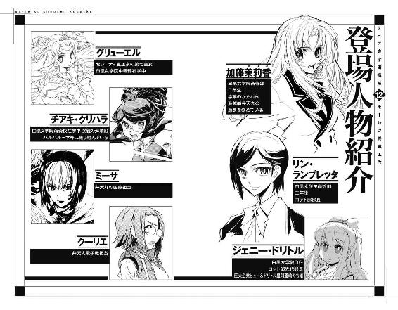
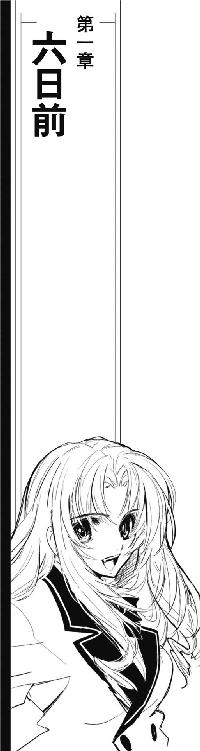
たう星系海明星、新奥浜市の旧総督府地下深くには植民星連合艦隊司令部がある。ガーネットＡでの戦闘報告がたう星系軍軍令部第三部Ｂ課、通称海賊課にもたらされたのは、日付が変わってからだった。
宗主星がガーネットＡに集めた船団を叩くために差し向けた海賊船の船籍は、植民星連合に参加しているほぼすべての植民星にわたる。戦闘開始の報こそ、今回の作戦で海賊船団の指揮船となった黒鳥号から入っていたが、その後の報告はいっさい途絶えていた。
艦隊司令部としては、遠く離れたあんたれす座宮の戦闘に割ける人員は多くない。宗主星の総戦力とも思える大遠征艦隊はすでにたう星系外縁部に到達しており、内惑星系への強行偵察は連日というよりも、毎時間のような頻度で行われている。植民星連合は持てる全戦力をたう星系に集めようとしているが、集結は予定通りには進んでいない。また、願望含みの計画通りに戦力が集結出来たとしても、植民星連合の総戦力は長駆たう星系に到達した遠征艦隊に遠く及ばないことも判明している。
植民星連合の全宇宙船を戦力として指揮すると同時に、独立戦争そのものを指揮することも期待されていた艦隊司令部は、遠征艦隊の強行偵察艦隊を迎撃しながらたう星系に集まってくる植民星連合の宇宙船を官民問わず戦力に編成するという困難な仕事を行っていた。同時に、オリオン腕全域に拡がった人類の通信網を使って、宗主星との終戦交渉も粘り強く行われている。
たう星外縁部に先遣艦隊が到達した宗主星遠征艦隊は、内惑星系に頻繁な威力偵察をかけていた。宗主星遠征艦隊が放った最初の威力偵察は、二隻の高速巡洋艦がたう星の南天側、北天側を通過するだけだった。しかし、最初の偵察でたう星域周辺の宇宙船配置状況を確認した遠征艦隊は、哨戒網の隙をつくように、また植民星連合の迎撃体制を確認するように同時多発的な威力偵察、強行偵察を繰り返している。
植民星連合艦隊司令部は、未だ揃わない対遠征艦隊の戦力を全戦線から呼び寄せ、再編成し、同時に遠征艦隊の動向を探りながら偵察を妨害していた。直接指揮下にある艦艇の数は独立戦争以来最大になっている。その数は総力戦を想定して建設された艦隊司令部の上限に近付きつつあり、また交わされる通信の数もデータ量も、時間ごとに今までの記録を更新していた。
誰もが、目の前に現れた史上最大の星間遠征艦隊との決戦を予感して準備し、対応している。海賊課が遠くガーネットＡからの報告を受け取ったのは、艦隊司令部全体が最高度に緊張して戦闘準備に忙殺されている時だった。
報告は、宇宙船団の指揮をとっている黒鳥号からではなく、白鳥号から届いた。戦闘報告は、結果と予定が書かれただけの簡潔なものだった。
「中破、黒鳥号、ダーク・スター、ラブマシーン、小破、白鳥号、迦陵頻伽、ヴァリアント、ブラックパール、マイン・ユーゲント・アルカディア」
「海賊の損害報告なんてあてにならないわ。正規軍なら大破沈没判定の宇宙船が何度帰ってきて、また出ていったことか」
戦場と化している巨大なコロセウム状の艦隊司令部の一画でレポートを読み上げていた遠藤ミキ少尉を、海賊課課長クリスティ・シャーウッド中佐は片手を上げて止めた。
「それじゃ彼らは......」
「報告にある通り、すぐ次の戦闘準備に移れる程度の損害しか受けていないのかもしれないし、正規軍ならとっくに尻尾巻いて逃げ帰っても怒られないくらいの損害喰らってるのに、残存戦力かき集めて最終決戦の準備してるのかもしれない」
「逃げるわけありません」
タブレット片手に通路上に立っていたミキは抗議するように口を尖らせた。
「これがどれだけ重要な作戦か、わからない彼らじゃないはずです。ガーネットＡが超新星化したら、彼らの星が灼かれることになるんですから」
「敵戦力は巡洋艦八隻に駆逐艦一六隻、うち駆逐艦二隻に中破判定喰らわせたようだけど、敵戦力としてはほぼまるごと健在」
シャーウッド課長は、自身のディスプレイに表示されている同じ簡潔極まりない報告書に目を落とした。
「遠征艦隊をたう星に差し向けてる一方で、こんな大艦隊を動かしていたんですね」
正規軍の軍艦でも、海賊船でも、戦果の判定には必ず誤差が出る。戦果を過大に見積もるか過小に評価するかは宇宙船によって、また戦闘によって様々である。白鳥号は、私掠船免状を頂いてからの戦果判定では海賊船の中では優秀、軍艦の平均よりも正確なことで知られている。
「白鳥号の判定なら、額面通りに受け取って問題ないでしょう」
「現状で、ガーネットＡに到達している海賊船は一五隻です」
ミキは、タブレットの表示を切り換えた。
「あと八隻が向かっていますが、予定通りに到着したとしても数でなんとか互角、戦力としては遠く及ばないことになります」
海賊船は、民間船から改造されたものが多い。軍艦を原形とする少数派は旧式だったり艦載兵装を換装したりしていて、戦力は落ちているのが普通である。
「まともにやりあえば結果は見えてるわね」
課長もディスプレイを切り換えた。
「もちろん、そんなのは正規軍が出ていったって同じだけど」
「なんとかなりませんか？」
ミキは、半ばそれが不可能であることを知りながら質問した。
「今からでも、ガーネットＡに援軍を出せませんか？」
「廻せる戦力の予備なんかないわね」
課長は無情に首を振った。
「こっちも、彼らが帰ってくるところを守れるかどうかの瀬戸際だから」
「でも、もし海賊たちがステラ・スレイヤーを止められなかったら、やっぱりこの辺りに人が住める惑星はなくなっちゃいます」
「わかってる」
課長はじっと白鳥号のレポートにあった戦況を見つめている。
「海賊だってここにいてくれれば貴重な戦力なのに、それをわざわざあんたれす座宮に集中させたのは、これでも最大限の効果を狙ったんだから」
「でも、戦力比不利ってわかってるのに放っておいたら、彼らは......」
「作戦が遂行出来ないなら、せめて全滅する前に逃げてくれればまだマシなんだけど」
「有り得ません」
少尉は首を振った。
「超新星爆弾を相手にしているって知ってる彼らが、どれだけ戦況が不利になったって、逃げ出すなんて考えられません」
「ええ、海賊の状況判断の下手さ加減はこの役職についてから散々学ばされたわ」
課長はディスプレイの表示を切り換えはじめた。
「それが、彼らの長所でもあり、欠点でもあるのよねえ」
「援軍は、どうしても出せませんか？」
遠く離れた艦隊司令部で出来ることはそれくらいしかない。ミキは重ねて訊いた。課長の答えは同じだった。
「無理ね。今、たう星系に来てる戦力はすべて対遠征艦隊用に編成されてる。まだ到着していなかったり突貫工事で修理中の宇宙船まで戦力にカウントしているような状況よ。他に廻せる戦力なんて、どこをどう絞っても出てこないわ」
「でも......」
ミキに皆まで言わせずに、課長はキーボードを叩きはじめた。
「だけど、戦闘艦艇じゃない補給船なら、なんとかなるかしら」
「え？」
「艦隊戦やるならいろいろと補給が必要だろうし、損害が出ているなら医療救難船でも役に立つでしょう。海賊たちのことだから、これだけ戦力差があっても闇雲に向かっていって宇宙船壊すくらいのことは平気でやりかねないもの。せっかく生き残っても帰りの宇宙船がないなんてことになったら大変だから、せめて帰りの船くらいは用意出来るようにしましょう」
「ありがとうございます！」
思わず一礼したミキに、課長は顔も上げずに首を振った。
「駄目よ。自分たちがどれだけひどいことをしているかって自覚しなさい」
「え？」
「たう星もそうだから気付いていないかもしれないけれど、艦隊司令部はどうみたって勝ち目のない戦闘を海賊たちに強要しようとしているのよ」
「......はい」
「しかも、骨は拾ってあげるから安心して戦いなさいって言ってるの。生きて帰ってきたら、なにをしてあげれば彼らの仕事に見合う報償になるのか、今から頭が痛いわ」
課長が海賊たちの生還を前提に話をしていることに気付いて、ミキは上司の顔を見直した。
「手伝って」
課長はキーボードを叩きながら言った。
「海賊たちに渡せば役に立ちそうな補給物資、もうすぐスケジュールが空いて次の予定が入っていない輸送船、それから引き抜いても怒られなさそうなヤブな医療救難船か小規模な病院船。今、たう星系にいない宇宙船でもいい、艦隊司令部の指令を聞いてくれそうな植民星の宇宙船がどこかにいるはずよ、探して」
「はい！」
「ここで！」
部屋に帰ろうと駆け出したミキは課長に呼び止められた。課長は、斜め後ろの空席になっているブースを指した。
「そこの席で仕事してたシンクレアＤの情報担当はさっきぶっ倒れて緊急病棟に担がれていったわ。しばらく戻ってこないから、そこ使って」
「はい！」
そのころ、オデットⅡ世はガーネットＡを遠く離れたオリオン腕とサジタリウス腕の間隙の暗黒湾にいた。
「状況は？」
「動き、なし」
オブザーバー席に展開出来るだけのディスプレイを拡げてキーボードを叩きながら、ジェニーは答えた。
「オリオン腕に対する帝国第七艦隊の動きはいっさい予定されてません」
ジェニーは、第七艦隊の広報サイトを最新状況に更新した。
「帝国船籍の民間船や軍事会社まで確認しても状況はいっしょ。少なくとも、ポルト・セルーナの管制局が公表してるデータをチェックした限りでは、宗主星、植民星連合を含むオリオン腕への大規模な飛行計画なんか提出予定も見つかりません」
「オデットⅡ世より弁天丸」
茉莉香は、通信回線越しに弁天丸に呼び掛けた。
「こちらのチェックで、オリオン腕に対する大規模な軍事行動は兆候も発見出来ず。そちらはどお？」
『こちら弁天丸、船長代理、ミーサ』
ブリッジで船長代理をしているミーサが通信に出た。
『こっちでも同じね。データが膨大だからっていったって同じところ見てるんだからそう違った結果が出てくるわけないんだけど』
「第七艦隊の運用状況とか、補給関係からなんか読めない？」
茉莉香は訊いた。
大艦隊の出動は、命令ひとつで行えるような簡単なものではない。帝国艦隊の所属艦艇はそのすべてが厳密なスケジュールに従って動いており、軍事機密に触れない、その大部分は公開されている。正面戦力となる艦隊の動きが偽装されていたとしても、その作戦行動を維持するために派遣される補給船団のスケジュールから本隊の動きを推測することも可能である。
『それもないみたいよ。ちょっと待って、シュニッツァーに代わるから』
通信相手が変わった。
『シュニッツァーだ。管制局のデータにあるすべてのオリオン腕周辺空域への飛行を調べた。民間、軍を含めてオリオン腕への目立った動きは発見出来ない。現状で、オリオン腕に対する大規模作戦は兆候もないと判断する』
「ええと」
茉莉香は、ブリッジクルーの目が自分に集中しているのを感じながら言った。
「大事なことなのでもう一度確認します。帝国艦隊がオリオン腕に対する大規模作戦を行う兆候はありませんか？」
『ない』
シュニッツァーははっきり答えた。
『現状では、第七艦隊を含む帝国艦隊はオリオン腕を含む辺境に対する大規模作戦を予定していない』
「ありがとう、シュニッツァー」
オデットⅡ世の船長席で、茉莉香は目を閉じた。
「こちらの予想通りに事態が進行しているってことね」
茉莉香は目を開けた。
「じゃなくて、こっちの期待通りに進行してないから困るのか」
ははは、と率先して笑い出したチアキにつられたようにブリッジがさざめいた。
「それじゃあ、グリューエル、宇宙大学の調査船キュリオシティを呼んで」
茉莉香は通信席のグリューエルに指示した。
「オデットⅡ世は、ポルト・セルーナに入港します」
オデットⅡ世の眼前には、巨大な宇宙要塞であるポルト・セルーナを中心とした港湾空間が拡がっていた。
第七艦隊の要衝であるポルト・セルーナだが、いまだ帝国領ではない。核恒星系から周辺部に向けて拡張を続ける銀河帝国は、まだオリオン腕を含む領域をその版図としていなかった。ポルト・セルーナは拡大を続ける帝国領の外側にある。
ポルト・セルーナは、いまだ帝国領となっていない辺境を担当する第七艦隊の補給基地として、星間空間に設置された。オリオン腕とサジタリウス腕の間隙にある暗黒湾と呼ばれる空間、渦状星雲の間隙には恒星系も遊星もあまりなく、星間物質の密度もがっくり落ちる。ポルト・セルーナは、大艦隊の補給基地として、超光速跳躍に多大な影響を与える巨大重力源を避けた空域に、移送された巨大ブロックを結合する形で建設された。
近傍に有力な辺境国家や星間連合が存在しないため、ポルト・セルーナの建設は帝国に対する反乱勢力に大きな妨害を受けることがなかった。帝国はそれほど苦労せずに辺境への足掛かりとなる補給基地の建設に成功したのである。
しかしながら、最前線に置かれる巨大ステーションとして、ポルト・セルーナの建設には直接戦闘に耐えられる宇宙要塞の基準が採用された。攻撃力は機動性に優れて交代も更新も簡単な第七艦隊に任せるとして、防御力に関しては重戦艦をはるかにしのぐ装甲と電子戦艦を束にしたような哨戒能力が与えられた。
帝国艦隊でも最大規模の基地となったポルト・セルーナには、それにふさわしい艦隊指揮能力と情報処理能力も付与された。辺境担当の第七艦隊が統一されてひとつの敵に当たるような事態はまだ発生していないが、ポルト・セルーナはそれひとつで第七艦隊のすべてを指揮出来るとされている。
「......何隻見えてる？」
最前線の要塞らしく漆黒に整形されたポルト・セルーナを中心に、雲霞のように浮かぶ巨大艦隊がオデットⅡ世のレーダーに捉えられている。全体が見えるようにスケールを合わせると、ポルト・セルーナの周りにいくつもの雲が浮いているようにしか見えない。
「ポルト・セルーナの周辺にいる艦だけで八〇〇〇隻以上」
船長席の茉莉香の質問に、レーダー／センサー席のチアキはカウンターの表示を読み上げた。
「さすが最前線ね。こんなにいっぱい艦がいるところなんて、はじめて見た」
「八〇〇〇隻......」
茉莉香はチアキの数字を繰り返した。ポルト・セルーナ周辺の艦艇数だけで、宗主星と植民星連合が運用している全隻数の倍以上である。帝国艦隊の基幹要塞らしく、大型艦艇も多い。
「外にいる艦だけの数だからね。目をつけられないように低出力低周波のレーダーでこれだけの反応だから、艦載機とか連絡艇まではカウントしてないし、港に入ってる艦まで入れればもっと数増えるはずだから」
「そうね......」
船長席の茉莉香は、ブリッジ中央に立体画像として映し出されたポルト・セルーナ周辺の艦配置をじっと見つめた。作動させっぱなしの敵味方識別システムは、感知されている数千隻の宇宙船の中にひとつの味方艦も表示しない。
茉莉香は、手元の操作で表示を切り換えた。錨泊空域と周辺空域を埋め尽くす輝点が、きれいに二色に分かれる。トランスポンダーから見分けられた白は民間所属の宇宙船、青は帝国艦隊の所属艦である。
帝国の版図外にある艦隊基地だけあって、判別出来る宇宙船の七割までが帝国艦隊の所属艦だった。純然たる戦闘艦と輸送や補給のための補助艦艇まで区別しているわけではないが、長期航行可能な大型艦が多い。
「すごい数......」
たう星が銀河帝国に併合された未来では、茉莉香はこれほどの数の帝国艦隊が一か所に集まっているのを見たことがなかった。艦隊が運用する宇宙艦の数は漸増しているから、今でもこれ以上の規模の集結ポイントはあるはずだが、それはオリオン腕ではない。
圧倒的な数の艦隊を見ながら、茉莉香はその使い方を考えて呟いた。
「このうち一割でもたう星に引っ張ってこられれば、それで戦争が終わる」
通信システムが軽やかな呼び出し音を鳴らした。グリューエルが通信に出る。
「キュリオシティからです」
「繫いで」
茉莉香は、咳払いをして船長席で背筋を伸ばした。
『そちらの要望はわかりました』
最初の接触以来、すっかり対外交渉役担当にされたらしいアテナ・サキュラーは、グラシウス級宇宙大学調査船キュリオシティの通信回線で応えた。
『帝国として未接触の星間文明がポルト・セルーナへの入港を希望している。いいでしょう、宇宙大学所属の調査船として、キュリオシティはあなた方を管制局に紹介することが出来ます。だけど、本気で海賊船だなんて名乗って入港するつもり？』
真顔で訊かれて、茉莉香は通信モニターの向こうの宇宙大学調査員の顔を見直した。
「この宇宙船が持っている私掠船免状は、植民星連合により発行された正当なものです。我々は銀河帝国とまだ公式な接触を持っていませんが、帝国は星間国家の自治もそれによる権利も認めるものではないのですか？」
『未接触だって公言する割には、知らないはずのことよくご存じじゃない』
アテナはいささかうんざりした顔で軽く首を振った。
『ええ、そのとおり、帝国は接触、未接触にかかわらず、その文明の法律も価値観も尊重するわ。でも、それが海賊っていうといろいろ問題があるのよ。それだけ詳しいなら、帝国が海賊を相手に戦った掃討戦争のことだって知ってるでしょう』
茉莉香は、通信席でモニターしているグリューエルにちらりと目を走らせた。最初にその問題を指摘したのは、やはりグリューエルだった。
「知っています」
茉莉香は、アテナに頷いた。
「艦隊は、海賊ギルドを相手に大戦争を行って銀河帝国からやっと海賊を追い出すことに成功した。それが掃討戦争。だから、今、帝国内に海賊はいない」
『海賊を追い出したんじゃなくて絶滅させたっていうのが帝国の公式見解だけど、それはまあいいわ。それを知ってるなら、帝国艦隊にとって海賊って職種がどれだけ目障りなものかもわかるでしょう。わざわざ海賊だなんて名乗らなくても、最初にキュリオシティと接触したときと同じ学術組織の練習帆船って言った方が、よっぽど波風立たなくて済むわよ』
「お気遣い感謝します」
本心から言って、茉莉香はアテナに一礼した。
「でも、あたしたちがここに来たのは、まさに波風立てるためなんです」
キュリオシティとの接触回線はオデットⅡ世からのものに限られている。そして、茉莉香は宇宙大学の調査船に対して詳しい事情説明を行っていない。オデットⅡ世がキュリオシティに依頼したのは、その行動が銀河帝国の標準法に抵触していることを黙っているのと引き換えにした、ポルト・セルーナへの水先案内だった。
スケジュールだのなんだのと言を左右にして厄介事から距離を置こうとはかりつつ、業務の一環と理由を付けてオデットⅡ世や弁天丸と乗組員の調査まで申し込んでくるキュリオシティを相手に、茉莉香はジェニーやグリューエルの助けを借りて粘り強い交渉を行った。
一二〇年後から来たというこちらの正体は秘匿しなければならない。そして、キュリオシティには非干渉原則を破ったという負い目がある。最終的に、オデットⅡ世はキュリオシティに対して近傍で最も大きな帝国艦隊の補給基地となるポルト・セルーナへの水先案内と管制局への紹介を承知させることに成功した。
『波風ねえ』
アテナは通信モニターの外に目を落とした。
一緒に航行しているだけでも、宇宙船は搭載しているセンサーから様々な情報を得ることが出来る。サイレント・ウィスパーは早々に弁天丸に収容し、弁天丸は距離をおいて精密観測を避けている。キュリオシティの観測態勢はもっぱら近接航行を続けているオデットⅡ世に集中し、かなりのデータが収集されているはずだった。
「一緒に飛んでいれば、こちらにろくな武装がないのはおわかりのはずです」
アテナはオデットⅡ世に関するデータを見ているとヤマを張って、茉莉香は言った。
「もし、この宇宙船が首尾よくポルト・セルーナに入港出来たとしても、ろくな破壊力がないのはご理解頂けていると思いますが？」
『第七艦隊の要塞に自分から入っていこうなんて太陽帆船一隻が、どんな戦力隠し持ってたってべつに気にしません』
アテナは興味深そうな視線を茉莉香に向けた。
『だけど、自分から波風立てようなんて言い出す乗組員が、これからなにをやらかすのかについては実に興味をそそられるわね』
「こちらの依頼は、ポルト・セルーナの管制への紹介までです。こちらがポルト・セルーナと接触を取れれば、それですべての用件が終了します」
茉莉香は、無理目の笑顔を作ってアテナを見返した。
「こちらと管制との通信をモニターするのも自由ですし、その後の行動も制限しません。ここまでのご案内、ありがとうございました」
アテナは、じっと黙ったまま茉莉香を見つめた。
視線を受け止め続けるには意志力が必要だった。
茉莉香は、笑顔のままアテナが口を開くのを待った。
『面白い経験だったわ』
通信モニターの中で、アテナは軽く手を挙げた。
『ポルト・セルーナの通信管制と繫ぎます。あなたたちがここでなにをするつもりか知らないけど、うまく行くといいわね』
「キュリオシティの進路が無事でありますように」
茉莉香は型通りの挨拶を返した。
「ポルト・セルーナの管制局との回線が繫がりました」
キュリオシティとの通信が終了すると同時に、グリューエルが告げた。
「データだけじゃありません。画像通信、たぶん相手は自動応答じゃなくて生身のオペレーターです」
「最前線だものね」
茉莉香はもう一度小さな咳払いをした。
「帝国領内の補給基地みたいに、データ通信の自動応答でなんでも通しちゃうってわけには行かないでしょう。繫いで下さい」
通信モニターに、帝国艦隊の制服姿のオペレーターが現れた。
『こちら、ポルト・セルーナ通信管制です。そちらの船影を確認しています』
「こちらは、たう星系所属、海賊船オデット号です」
自分の前に何人くらいの植民星連合の宇宙船乗りが帝国艦隊に名乗ったのか考えながら、茉莉香はどこにもいないはずの海賊船の名を口にした。海賊船の一言で、通信モニター越しでもオペレーターが緊張したのがわかった。
「銀河帝国に対する交戦の意図はありません」
気付いていないように、茉莉香は続けた。
「艦隊首脳部との交渉のため、ポルト・セルーナへの入港を希望します」
『ポルト・セルーナ管制より海賊船オデット号』
確認するように、オペレーターはちょっと言いにくそうにオデットⅡ世の名前を繰り返した。
『艦隊首脳部との交渉を希望、ですか？ ご用件はなんでしょう』
茉莉香は、できるだけ平静な声で言った。
「星を、売りに来ました」
「おーっおー、さっすが帝国艦隊」
レーダー／センサー担当の百眼が、弁天丸のブリッジで声を上げた。
「海賊だって名乗ったとたんに揚陸艦が飛んできやがった」
「一隻だけ？」
船長席のミーサは不服そうに確認した。
「せっかく海賊船が艦隊基地をご訪問してるんだから、もう少しサービスしてくれるかと期待してたのに」
「オデットⅡ世に接触、臨検を申し入れてるのは強襲揚陸艦一隻だが、対応してるのはそいつだけじゃないぜ。他に戦艦三隻がポジション変更、オデットⅡ世を直接狙い討てるところまで出てきてる」
百眼は、わかりやすいようにオデットⅡ世を中心とした立体ディスプレイの縮尺を切り換えた。オデットⅡ世を中心に三方向から距離を置いて遊弋中の三隻の宇宙戦艦から太陽帆船に向けてまっすぐな射線を曳いてみせる。
「これだけ密度の高い空域で、内側から外側を狙って、流れ弾が出ても僚艦に当たらないようなポジションだ。標的の位置情報はオデットⅡ世にくっつく揚陸艦から得るつもりだろう、レーダーもなんにも使ってないから、ヨット部の連中、気付いてるかな？」
「気付いてないわけないでしょう」
ミーサは、三方向からの十字砲火の中心に静止したままのオデットⅡ世の現在位置を見つめた。
「でも、気付かない振りするでしょうね。帝国艦隊による臨検も二つ返事で受け入れて、どれだけ調べたって申請通り武装は無し。艦隊士官が女子高生しかいない無武装の海賊を見てどんな顔するのか、現場で見れないのが残念だわ」
ミーサは、ブリッジクルーの顔を見渡した。
「弁天丸は現状で待機。まだ相手のお座敷にも上がってないのに、この段階で後方予備が隠し球でございって出ていくわけにはいかないんだから、しばらくはなにがあっても見守るわよ」
弁天丸は、ポルト・セルーナの周囲に設定されている錨泊空域の外側に遊弋していた。偽装した船籍は銀河帝国内の弱小運送会社、ポルト・セルーナの民間企業からの輸送任務を請け負って現在荷待ち中である。
現在の宇宙で使える偽装船籍及びトランスポンダーのＩＤの設定には、ポルト・セルーナ経由で接続されたネットワークが大いに役に立った。最初、オデットⅡ世から接続されたネットワーク回線は、今、弁天丸にも設定されてデータ収集と分析に活用されている。
「それと、キュリオシティからも目を離さないで」
ミーサは、グラシウス級戦艦を原形とする宇宙大学調査船キュリオシティの現在位置を確認した。オデットⅡ世の紹介のためにポルト・セルーナ管制局に連絡を取ったキュリオシティは、そのまま待機を命じられている。
「キュリオシティは管制局に錨泊空域への滞在を申請」
管制局の公開データをチェックしているクーリエが告げた。
「用事が終わったらすぐに次の調査空域に向かうみたいな話だったけど、補給と乗組員静養のためにしばらくここにいるみたい」
「助かったじゃない」
ミーサは頷いた。
「これでキュリオシティがまたガーネットＡに戻って観戦続行、なんてことになったらいろいろややこしいことになるんだから」
少なくとも、オデットⅡ世及び弁天丸が得ている情報によればキュリオシティはガーネットＡで超新星爆弾計画が進行中であることを知らない。宇宙大学の調査船が独立戦争の状況をどこまでどのように把握しているかどうかは不明だが、未接触文明によるよくある内乱としか捉えられていないらしい。
「未接触文明の内乱よりおもしろいものを見つけたのだろう」
航法席のルカがぼそっと言った。ミーサは訊き直した。
「なに、それ？」
「銀河帝国を知らないはずの海賊が、宿敵であるはずの帝国艦隊のお膝元に乗り込んできたんだ。大学の調査船ならずとも、さらに面白い事態を期待したとしても無理はない」
「へえー......」
ミーサは興味深げな顔で考え込んだ。
「ってことは、もしこっちの予定通りに事が運べば、その一部始終は宇宙大学の手によって記録されちゃうってこと？」
「予定通りだろうと予定外だろうと、記録はすでに開始されているだろう」
「そっか......」
ミーサは、キュリオシティの現在位置と得られている限りの情報を船長席のディスプレイに表示させた。
「ま、いっか。歴史の謎が今さらいくつか増えたところで、それに悩まされるのはわたしたちじゃなさそうだし」
「帝国第七艦隊強襲揚陸艦カオシュンより、これから連絡艇で臨検検査官がこちらに向かうそうです」
報告してから、グリューエルが言いにくそうに質問した。
「強襲揚陸艦、って、なんですか？」
「上陸作戦専用の母艦よ」
接近してくる帝国艦をディスプレイに大写しにしたチアキが答えた。
「軌道上から機動歩兵や戦車を戦争中の惑星地表に降下させるための艦」
海賊船オデット号を名乗った太陽帆船に接近した帝国艦は、上陸作戦を専門とする強襲揚陸艦だった。対艦戦を行えるような重兵装こそ搭載していないものの、敵前上陸を行うための重装甲と、陸戦隊を軌道上から地表に上陸させるための強行突入艇を多数備えている。
「とりあえず見た感じじゃ、ビーム砲こっちに向けてるわけでもないし、発射準備してる気配もなし、と。こっちの期待してる通り、まずまず平和な対応じゃない」
「まあ、当たり前のことながら、他から狙われてるけどな」
電子戦席のリンがコントロール・パネルを慎重に操作しながら言った。
「こっちに接近してる揚陸艦カオシュンの通信量は、接近しながらだだ上がりだ。たぶん、はじめて見る宇宙船のデータをありったけ他に送信してるんだと思う。その中に形態や位置情報がないはずはないから、予想すべき展開として、海賊船オデット号は停泊中の帝国艦隊の的になってる」
「望むところです」
張りのある声で、茉莉香は言った。
「せっかく艦隊が目の色変えそうな船種選んで名乗ってあげたんだから、それくらい注目してくれないと困ります」
乗組員たちが余計な緊張をしないように説明的台詞を補いながら、茉莉香は船長席のディスプレイに目を走らせた。太陽帆こそ展開していないが、九本のマストをいっぱいに拡げたオデットⅡ世は至近距離にいる揚陸艦カオシュンからの抑えめのレーダー波にしか照らされていない。
「揚陸艦の接近に伴って、錨泊空域の外側で姿勢を変えた大型艦が何隻か」
レーダー／センサー席のチアキが、茉莉香が求めていた情報を船長席に寄越した。
「間に障害物がない、少しくらい狙いを外しても流れ弾が当たるようなところに他の宇宙船がいない、当たっても当たらなくてもビームが減衰するまで他の宇宙船に命中しないって条件で探せばすぐ見つかるわ。とりあえず今こっちに主砲向けてそうな戦艦はこの三隻くらいかな」
ピックアップされた三か所のポジションを見て、茉莉香は微笑んだ。
「上等。せっかくの大仕事ですもの、観客は多ければ多いほどいいわ」
「あーなるほど、こいつらか」
同じデータを見たリンが言った。
「自首しようと思って出てきたらいろんなところから狙撃手が狙ってるってこんな感じじゃないか」
「リン部長、へんな話の見過ぎです」
「狙撃手だけじゃなくて、乗り込んでくるのもただの検査官じゃないみたいね」
チアキが、カオシュンから発進した連絡艇をディスプレイに映した。
「これのどこが連絡艇よ。対空放火の中でも大気圏突入出来るような降下艇じゃない」
映し出された宇宙船は、頑丈一点張りの機体に増加装甲を張り巡らせた強行突入艇だった。空気抵抗を推力で切り裂く無骨なシルエットに黒い耐熱対ビームコーティングがものものしい。
「さすが、最前線の第七艦隊」
リンが感心顔で頷いた。
「うちの星系軍だって独立戦争からこっち、上陸作戦するような戦争してないもんなあ。ってことは、乗り込んでるのは......」
「地上戦専門の機動歩兵か、白兵戦もこなす特殊部隊か」
チアキは船長席の茉莉香に顔を上げた。
「この宇宙船を外から見れば、大した艦載兵装がないのはすぐわかるわ。だから、船内戦闘用の部隊を臨検用にすぐに編成して送り込んでくるなんて、敵はそうとう実戦慣れしてるわよ」
「頼もしいわ」
茉莉香は頷いた。
「それに、敵じゃない。帝国艦隊がそこまでこっちを見込んでくれたのなら、こっちも気合入れてサービスしなきゃなりませんわね」
ブリッジを満たした笑い声が収まるのを待って、茉莉香は全船放送にチャンネルを切り換えて口を開いた。
「これから、オデットⅡ世」
咳払いをして言い直す。
「海賊船、オデット号の乗組員の皆さんに伝えます。これから、オデット号は強襲揚陸艦カオシュンの臨検を受けるために検査官を受け入れます。見られて困るものなんかないんだから、検査官が見たいっていうところはすべて見せて上げてください。あ、散らかってる船室なんかは無理に見せなくても大丈夫です。検査官が見たいのは大規模破壊兵器だから、たぶんそんなところは見たがらないと思うけど」
ブリッジにクルーたちの笑いがさざめく。一緒に笑ってから、茉莉香は言った。
「これから、ヨット部は宇宙海賊としてのお仕事をはじめます。お仕事は、帝国艦隊を観客にしてのお芝居です。たいていの無茶ならこっちでフォローするから大丈夫だけど、出来るだけ無理はしないように。とはいっても、海賊仕事はみんな前にもやってるからそんな心配はしてませんけど」
茉莉香は一度アナウンスを切った。
「検査官を納得させたら、次はポルト・セルーナに入港します。お仕事はそれからが本番になるはずですから、これからの臨検はリハーサルだと思って皆さんリラックスしてください。それから、海賊船としてはじめて帝国艦隊と接触するからといって余計なサービスとか情報提供とか考えないように。あたしたちの強みは、正体不明なところです。あたしたちが何者か、帝国艦隊が悩んでくれれば悩んでくれるほど、状況はこっちにとって有利になります」
ふふふ、と笑って、茉莉香は続けた。
「さあ、それじゃあ、白凰女学院ヨット部あらため宇宙海賊部、作戦開始です」
「強襲揚陸艦から、臨検のために強行突入艇を出したか」
ケインは、弁天丸からも見えている状況から目を離さない。
「乗り込んでいるのは白兵戦専門の陸戦隊。海賊相手の古いマニュアル通りの対応だ。しかし、相手が悪かったなあ、かわいそうに」
「帝国艦隊の陸戦隊が女子高の練習帆船に乗り込むのか」
シュニッツァーは低い声で事態を要約した。ケインは頷いた。
「そういうこった。まあ見てな、面白いことになるぜ」
増加装甲を装備した強行突入艇は、海賊船オデット号に接近してくる。太陽帆船はすべての推進力を切って恭順の意を示していた。
強行突入艇は、オデットⅡ世の周りをゆっくり廻って船体の状況を確認、センサーによる走査だけではなくいささか無遠慮なレーダー照射も行って、はじめて銀河帝国艦隊の前に現れた辺境の宇宙船の詳細を記録していく。
並行して、無骨な装甲ヘルメットで表情を隠した突入艇のオペレーターからオデットのドッキング機構に関する問い合わせがあった。
標準規格を採用している宇宙船同士なら、互いのボーディングブリッジを延ばしてドッキングすることが可能である。しかし、接触がない文明圏の宇宙船とは、ドッキング機構の規格も構造も違うのが普通である。
銀河帝国外の宇宙船を仮想敵とする、第七艦隊所属の強襲揚陸艦から発進した強行突入艇は、こんな事態も想定しているのか自由度の高い強制ドッキングシステムを装備していた。相手の宇宙船の外殻に合わせて自由変形する金属ゴム製のカバーを持つ救助用のボーディングブリッジを使えば、規格や接続など考えなくてもドッキングが可能だという。
「救助用ってよりは敵の艦に無理矢理乗り込むのに使う突入チューブなんじゃないかしら」
説明のために送られてきた概念図を見たチアキがこっそり呟いた。
「海賊船なら、獲物の艦に乗り込むのに必要だからだいたい装備してる。弁天丸にもあるでしょ」
「最近は、ボーディングブリッジの規格が合わない相手との仕事なんかやってないもの」
茉莉香は、船長席のディスプレイに映し出された救助用ドッキングシステムの概念図を興味深げに見ている。
「最初っから相手に合わせすぎると却って怪しいだろうから、ええ、あちらのシステムにお世話になるように伝えて。それから、こっちの船内気圧と大気成分も教えて差し上げて。どうせ装甲宇宙服付きで乗り込んできて、対感染兵器防護どころか空気抜かれたって気にしない体制だとは思うけど」
「わかりました」
通信席のグリューエルは、強行突入艇からの問い合わせには要求されていないデータまで添えて返答した。
「ついでに、乗り込んでからのデータ収集もいっさい制限しない旨、付け加えておきます」
「お願い。こんなことくらいで帝国艦隊がこっちのことを信用してくれるなんて思わないけど、今の段階ではとにかく相手に勇み足されるのがいちばん怖いから」
銀河帝国と未接触の文明、それも海賊船を名乗る宇宙船に乗り込んでくるのは、どんな事態にも対応可能な特殊部隊である。それも、白兵戦に慣れている実戦部隊が送り込まれてくると考えて間違いない。こちらに戦闘の意思がなく、相手がどれだけ訓練された部隊だとしても、敵が火器装備で乗り込んでくる以上は偶発戦闘の可能性が残る。
危険性を最小限に押さえるため、茉莉香は考えられる限りの情報開示と無抵抗で、乗船部隊を迎えるつもりだった。
「その代わり、あちらが使うつもりのセンサーは、口頭でいいからすべて申告するようにお願いして。不用意なセンサー使うと、こっちのなにが反応してご迷惑かけるかわからないから」
「こっちにも向こうにも、誰にも怪我ひとつさせたくないってその方針はわかるけどさあ」
電子戦席のリンがぶちぶちと文句を言う。
「これからのこと考えると、あんまり下手にばっかり出て舐められてもいいことないんじゃないの？」
「ええ、そう思います」
茉莉香は頷いた。
「だから、お互いに見えているところ、言葉でコミュニケーション出来るところはしっかりやりますけれど、そうでないところはぴしゃりとはねつけるつもりです。リン先輩、電子戦の準備は出来てますか？」
「おう、たいていの仕掛けならすぐ対応出来るように準備はしておいた。どうする？ 母艦の方にでももぐりこんで管制系乗っ取るかい？」
「いえ、それはあとの手段に取っておいてください」
茉莉香は笑って首を振った。
「こちらは、帝国艦隊が要求するどんな情報開示にも応じると返答しています。だから、向こうが要求していない情報開示にはいっさい応える必要がありません」
「そら、まあ、そうだわなあ」
「ドッキングしてくる強行突入艇は、こちらと物理接触すると同時にありとあらゆる手段でオデットⅡ世の情報を収集にかかる、と予想しています」
「そういうお仕事の人たちが乗ってるそういう艇だからなあ」
「でも、相手がネットワーク経由での情報収集を行うとこちらに伝えていない以上は、こちらもそれに応じる理由はありません。乗船部隊の要求は全部聞きます。でも、向こうがやるって言ってないことに関しては、こっちもきっちりそのつもりで対応すべきだと思うんです」
茉莉香は、電子戦席でにやにや笑い出したリンをじっと見つめた。
「そういうお仕事、お願い出来ますか？」
「誰に向かって言ってるんだ」
腕まくりしそうな顔で、リンは言った。
「つまり、相手が音を上げるまで手加減なしに相手して差し上げろと、そういうことだな？」
「出来れば、こっちがあっちの侵入に気付いていないように、そして、あとから相手が全面的に失敗したってわかるような展開がいいんですけど、そういうお願い、出来ますか？」
「難しいねえ」
悪魔のような笑顔で、リンは電子戦席のコントロール・パネルを叩きはじめた。
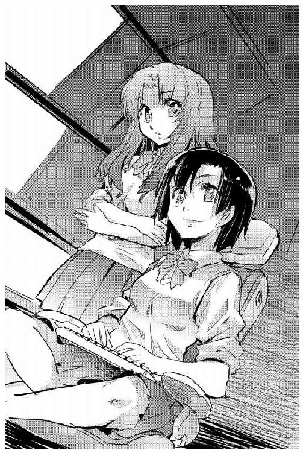
「ひとつ、問題がある」
「なんですか？」
「もしドッキングした突入艇が、お行儀よくなんにも仕掛けてこなかったらどうする？」
「その時は」
少しだけ考えて、茉莉香は答えた。
「こちらも礼儀正しく対応するまでです。せっかくここまで来たんですもの、少しはあちらが仕事しやすいようにサービスしてさし上げましょう」
強行突入艇の臨検部隊は、乗船後に使用を予定しているセンサーの情報をあっさり開示した。ドッキング完了後にまず最初の一名だけが乗りこみ、船内気圧と大気成分を確認する。次に、臨検部隊一一名が乗りこみ、先に乗り込んだ一名と二人一組を作って手分けして船内の臨検を行う。
ドッキングに先立ち、強行突入艇は簡易なものでいいからと太陽帆船の構造図を要求した。リンは、新入部員向け説明用の概念構造図から説明の文字を抜いた絵図面を転送してこれに応えた。
強行突入艇は、海賊船オデット号の周囲を横方向、縦方向の二周回して存分に船体データを収集してから、舷側のドッキング・ベイに接近した。曲面の装甲板を張り重ねた古代魚のような突入艇は、進行方向をオデットに合わせた側面から鈍くカーブしたフレキシブルチューブを伸展、その先端部をエアロックの外側ハッチに接触させる。
金属ゴムで形成されたブリッジ先端部分は、およそどんな形状、ほとんどの材質に適合して気密を確保出来る。電磁誘導による制御で瞬間的に流体となった金属ゴムは宇宙船外壁に密着、わずかな姿勢と気圧変化に対応出来るだけの柔軟性を維持しながら再び硬化する。
強行突入艇からオデットのブリッジに、ドッキング完了、気密確保の報が入った。
「こちらのエアロックの外側ハッチを開いて、船内環境を確認するそうです。内側ハッチはまだ開く必要はないと」
グリューエルが、強行突入艇からの連絡をブリッジクルーにも理解しやすいように要約して伝えた。
「宇宙服着て突入してくればこっちの空気抜くのだって簡単でしょうに、ちゃんと紳士的にやってくれるわね」
茉莉香は頷いた。オデット側エアロック内の環境は、船内と同期させてある。
「あっちも怖いのよ」
チアキが抑えた声で言った。
「帝国艦隊がはじめて接触する文明の、会ったこともない異星人が乗ってる初めて見る型の宇宙船だもの。画像通信で相手の姿形は見えても、どんな習性や病気を持っているかはわからない。いちばん戦りたくないのは最前線の兵隊だから」
『こちら左舷側デッキ、ベリンダです』
臨検部隊出迎えのためにエアロックの前に集まっている三年生からブリッジに連絡が入った。
『オデットの外側ハッチ開放しました。エアロック内わずかに気圧低下』
同じデータはブリッジにも伝達されている。今、ドッキングしているボーディングブリッジの向こうでは、完全装備の臨検部隊が手持ちのセンサーを総動員してエアロック内のオデットの与圧大気成分を分析しているはずである。
茉莉香は、サブモニターにエアロックの監視カメラを切り換えた。半開きの外側ハッチの向こうは、通常照明が点灯しているエアロック内よりも暗く見える。茉莉香は、エアロックへの船内通信を繫いだ。
「乗船部隊は未知の宇宙船に乗り込んで未接触の文明を相手にするっていうことで、緊張しているはずです。不要な刺激とかどっきりとか、ぜったい避けるようにして下さい」
『左舷デッキ、了解』
ベリンダが答えた。
『とりあえず、笑顔でいればいいかな』
生命系や文明により、表情による表現がまったく異なることはある。少し考えて答えた。
「乗船部隊はまだ知らないけど、あたしたちは笑顔が一緒だって知ってる。そうして。笑顔でなごやかにお願いします」
『はあい。以後はチャンネルオープンのままで見てて』
「現時点で、物理接触による電子デバイスのアプローチなし」
電子戦席のリンが報告した。
「こっちが感知出来ないような受動センサーだったりしたらわからないけどな」
「仕掛けられて気付かないような手段って、なにが考えられますか？」
茉莉香は訊いてみた。少し考えて、リンは答えた。
「ドッキングしてきたチューブには、音響センサーくらいは仕掛けてあるだろう。船体の振動から材質や内部構造を類推することは出来るし、中の会話だって聞ける。こっちだって、相手が旧式な突入艇だからって詳しい調査する気がないだけで、通信関係にはきっちり聞き耳立ててるしねえ」
『外側ハッチ、開いた』
同じ画像を見ている舷側デッキから、ベリンダが報告した。外側からゆっくり開かれたハッチの向こうに、白い装甲宇宙服が現れた。
「白いんだ......」
機関席でエアロックのモニター画像を見ていたヤヨイが呟いた。戦闘用宇宙服にはあまりない色である。
「宇宙空間でも宇宙船内でも戦闘向きの色じゃないわね」
チアキもモニター画像から目を離さない。オデットⅡ世のエアロック内のセンサーで得られる情報を報告する。
「向こうも平和裏に仕事したいってことよ。こちらのエアロック内でも有害成分は感知出来ず。宇宙服も装甲だけでパワーアシストはなし。武装は腰のブラスターだけ、エネルギー反応も標準レベル」
宇宙服内の環境を維持するため、また通信系を含む必要機器を稼動させるため、宇宙服は軍用民間用あるいは重装備軽装備を問わず長時間駆動用のエネルギーパックを装備している。
両手になにも持たずにエアロック内に入ってきた装甲宇宙服は辺りを見廻し、表情の読み取れないフェイスシールド越しにカメラを見上げた。ゆっくりとした動作で敬礼する。
「突入艇から、エアロック内の大気環境確認、問題ないそうです」
グリューエルが告げた。茉莉香は、背部に小型のパワーパックを装備した装甲宇宙服が両手になにも持っていないのを見て頷いた。
「ブリッジより左舷デッキ、エアロック内側ハッチを開けて下さい。まず最初の一人がこちらに乗船して、安全を確認してから残りの上陸部隊一一人が乗り込んできます。乗船予定は全部で一二名、乗船後は手分けして本船の臨検を行う予定だから協力して差し上げて」
『了解です』
左舷デッキのエアロック前に集まっている三年生の顔を見廻して、ベリンダは内側ハッチに手をかけた。
『帝国艦隊の臨検隊を、海賊船オデットにお迎えしまーす』
レバーを大きく廻して内側ハッチをパッキングから浮かせて気密を解除し、左舷デッキ側に大きく開く。無重量状態のエアロックの中で、白い装甲宇宙服は敬礼した姿勢のままハッチが開くのを待っていた。
「ベリンダ」
左舷デッキの緊張を感じながら、茉莉香は船内通信に告げた。
「臨検の人に伝えて。海賊船オデットへの乗船を歓迎します、って」
『どうぞ』
敵意のない印に挙げた両手を、ついでに軽く振って、ベリンダは言った。
『デッキクルーのベリンダ・パーシーです。海賊船オデットは、帝国艦隊士官の乗船を歓迎します』
『帝国第七艦隊強襲揚陸艦カオシュン、第２８５１偵察部隊キース隊のキース隊長です』
スピーカー越しの落ち着いた良く通る声がブリッジにまで伝えられた。
『言葉の問題は、なさそうですね』
センサーやライトが装備されているヘルメットに触れると、黒かったフェイスシールドが透明になった。
「お、いい男」
ベリンダの呟きがブリッジにまで伝わり、笑いが洩れる。
『帝国第七艦隊の臨検隊は、はじめて乗り込む船を汚染しないよう可能な限りの防疫措置を取っています。この船内の大気が呼吸可能なことは確認しました。ヘルメットを取ってもよろしいですか？』
「帝国にとってこっちが未確認であるように、こっちも帝国とは未接触なはずだからね」
チアキが補足説明する。
「ヘルメットを取ったら、無害なはずの微生物がこっちの船内を汚染する可能性もある」
「こっちの心配までしてくれてるんだ」
感想を述べてから、茉莉香はベリンダに伝えた。
「ヘルメット脱いでも大丈夫です、って伝えて。我々の文明は、非公式だけど帝国とは何回も接触しているはずだからって」
『生物学的な心配なら無用です』
応接用の笑顔で、生科学系志望のベリンダが言った。
『我々の文明は、すでに非公式に帝国との接触を持っています。お互いに致命的な毒となるような要素がないことは確認されています』
装甲宇宙服の返事は遅れた。
「あっちも、通信回線繫がってるわ」
チアキが、左舷デッキとエアロック内の電磁波の状況を確認する。
「こっちの話聞きながらの指示待ちでしょう」
『なるほど、わかりました』
エアロックの中の装甲宇宙服は、ヘルメットに手をかけた。
『わたしが生身であなた方の船の環境を確認するのが、最後のテストになります。では、ヘルメットを脱ぎます』
不用意な動作で相手を緊張させないように説明してから、装甲宇宙服はヘルメットの首筋に手をかけた。シールドロックを解除、センサーやライト付の角張ったヘルメットを脱ぐように取り去る。
ヘルメットに続いて通信及び情報伝達システムが組み込まれた内帽も取り去り、白皙の士官はゆっくりとデッキの少女たちを見廻した。一息吸い、吐く。
「爽快な空気です」
キース隊長は、無重量状態のデッキで正面に向きを合わせて立っていたベリンダに向き直った。左脇にヘルメットを抱え、右手でもう一度敬礼する。
「オデット号の船内大気が我々の活動に問題ないことを確認しました。第２８５１偵察部隊キース隊、隊長以下12名の乗船を希望します」
「キース隊全員の乗船を許可します」
挨拶するように右手を挙げて、ベリンダは答えた。
「船長がブリッジで待っています。まず、全員をオデット号のブリッジにご案内します」
儀杖隊のような白い装甲宇宙服の一隊は、全員がエアロックをくぐって乗船してから装着していたヘルメットを脱いだ。隊長は、突入艇及び隊員相互の連絡のために船内での無線の使用許可を求め、その周波数を伝えた。
船内通信経由で茉莉香の許可を得てから、ベリンダはひとりで先に立ってセンターシャフトにキース隊を案内した。
乗船した帝国艦隊の臨検部隊は、全員が白い装甲宇宙服を着用していた。胸元や肩口に識別のためのマーキングが施されているが、武装は全員が小型の自衛用火器くらいしか装備していない。
オデットの船内隔壁は、すべて開け放たれていた。ブリッジドアくらいは閉めておいた方がいいのではないかという意見は当たり前のように出たのだが、茉莉香が却下した。
「もったいつけたりしてる時間が惜しいもの」
いつもどおり仕事をしているふりをするようにブリッジクルーに命令して、茉莉香は言った。
「うっかりカッコつけて対応したら、そのあとずっとそうしてなきゃならないのよ。そんなことに神経使ってられないわ」
「せっかく帝国艦隊に正面切って乗り込むんだからもう少し格好付けてもいいと思うけど」
ジェニーはあきらめ顔で頷いた。
「まあ、ふだんの調子でやるのがいちばん楽なのは確かよね」
「茉莉香船長！」
ブリッジに飛び込んできたベリンダが、ふだんより高い声を上げた。
「キース隊の皆さんをご案内しました」
意思の力で開けっ放しのドアに背を向けていた茉莉香は、船長席からゆっくり立ち上がった。
「ありがと」
ブリッジドアに顔が見えるように浮かび上がる。小脇にヘルメットを抱えた白い装甲宇宙服の一団が、無重量状態だというのに定規で引いたような二列縦隊でブリッジに入ってきた。
「海賊船オデット船長、加藤茉莉香です」
先頭の隊長だけでなく後方の隊員の様子も観察しながら、茉莉香は言った。
「帝国艦隊士官の乗船を歓迎します」
「帝国第七艦隊強襲揚陸艦カオシュン、第２８５１偵察部隊キース隊のキース隊長です」
二列縦隊の先頭の隊長は、乗船した時と同じ台詞を繰り返して敬礼した。
「オデット号への乗船を許可頂き、感謝します」
キース隊長の視線はブリッジを一周しただけで茉莉香に戻った。
「さっそくですが、本隊の任務は海賊船オデット号に対する臨検です。まず、この船に搭載されている攻撃用兵器を確認させて下さい。オデット号の機能を損なう意志はありませんが、オデット号がポルト・セルーナへの入港を希望しているからには、害意がないことを確認しなければなりません」
「わかりました」
茉莉香は頷いた。
「他にはなにか？」
「他に？」
キース隊長の視線がブリッジをもう一周した。茉莉香は、ブリッジクルーの全員が仕事もせずにことの成り行きに注目していることに気付いた。
「偵察部隊に与えられた任務は攻撃用兵器の確認だけです。また、承知しているとは思いますが、我々にはオデット号の入港を許可する権限も与えられてはいません。それを判断するのはポルト・セルーナの管制局です」
「了解しました」
茉莉香はもう一度頷いた。
「本船は、攻撃用の艦載兵器を搭載していません」
どんな顔をするかと思っていたのに、隊長の表情は変わらなかった。茉莉香は続けた。
「しかし、口頭で申告しても臨検のために乗り込まれた皆さんの任務は完了しないでしょう。本船は、帝国艦隊の臨検に全面的に協力する用意があります」
あいかわらず表情は変わらない。しかし、茉莉香の声は聞こえているはずだし、それは偵察部隊の通信システムを通じてポルト・セルーナにも伝えられているはずである。
「では、どこからはじめますか？」
「臨検に、全面的に協力すると？」
表情を変えないまま、キース隊長が問う。
「はい、そうです。帝国艦隊基地に入港させてもらうのに、調べられて困る物は積んでいませんから」
隊長の目がわずかに細められた。茉莉香は、臨検隊の緊張度が上がったように感じた。気付かぬ振りをしてもう一度繰り返す。
「では、どこからはじめますか？」
「協力して頂けるのであれば、全隊を四つに分けて分担しての臨検を希望します」
口調も姿勢も変えぬまま、隊長は言った。
「各隊にひとりずつの案内が同行頂ければありがたい」
「了解しました。ベリンダ、イズミ、翔子、エイプリル、偵察部隊の皆さんを希望する場所に案内してさし上げて」
「案内は三人お願いします」
隊長は言った。
「わたし、キース隊長は部下とともにここに留まり、船長にいくつか確認したいことがあります」
言ってから、隊長の視線はみたびブリッジを巡った。
「ここが、この船のコントロール中枢ですか？」
同じ文明によって作られた宇宙船でも、設計思想や時代の変遷、流行や技術程度により内部構造は千変万化する。それを踏まえての隊長の質問に、茉莉香は頷いて答えた。
「ここが、海賊船オデット号のメインブリッジです。ようこそキース隊長。海賊船オデット号の乗組員は、帝国艦隊士官をここに迎えたことを嬉しく思います」
四班に分けられた臨検部隊は、一班が通常、超光速を含む推進動力系の確認を、残り二班が艦載兵器の確認のための船内臨検を希望した。それぞれにひとりずつの三年生をあてがい、ブリッジから三班に分かれた臨検隊が出動する。
事前の申告により、臨検部隊は乗船から下船までを音声と画像で記録すると宣言していた。キース隊長は茉莉香船長にもう一度それを確認してから、臨検のための質問を開始した。
茉莉香はほとんど予想していなかったが、隊長からの質問は技術的な問題に集中していた。
表向き会話が成立しているように見えても、互いの解釈によってまったく違うことを話している可能性がある。帝国艦隊が初接触する相手との会話を技術的なものから開始するのは、それが共通認識を確認するための手順のひとつだろうと考えながら、茉莉香は自分で出来るものについては自分で、他の助けが必要なものについてはそれぞれの担当に助けを求めながら辛抱強く質問に答えていった。
最初のうち、隊長の質問は互いの言葉に齟齬が生じないように、注意深く回りくどいくらい言葉を選んで行われていた。しかし、質問内容がオデットが装備している基本的な推進系や慣性制御機構、さらにはレーダー／センサー系などの周辺状況を把握するためのシステムなどの質問に進むにつれて、その言葉遣いは変化していった。帝国にとっては辺境であるオリオン腕で超光速宇宙船がどのように運用されているかについての確認事項が並ぶころには、隊長の言葉遣いは茉莉香が何度も聞いている帝国士官のそれとほとんど変わらなくなっていた。
「以上で、質問を終わります」
「は？」
推進系の確認に行った班がブリッジに戻ってから、隊長は宣言した。質問が果てしなく続くものと覚悟していた茉莉香は思わず訊き返した。
「終わり？ ですか？」
「終わりです。残りの二班からも、船長の申告通り、この船が破壊のための兵器を搭載していないことが確認出来ました。我々は見たまま、聞いたままを報告します。しかし、オデット号のポルト・セルーナへの入港を判断するのは我々ではなく管制局です」
はじめてブリッジに入った時とあまり変わらない顔で、キース隊長は言った。
「追って、管制局から連絡があるはずです。それまでは現状で待機願います。オデット号の、帝国艦隊への協力を感謝します。これからの航海に幸運のあらんことを」
「あ、え、強襲揚陸艦カオシュンとキース隊の未来が安寧でありますように」
型通りの台詞を返した船長とブリッジクルーに敬礼を返して、臨検隊はブリッジを辞去した。来た時と同じベリンダの案内で、ドッキングブリッジが接続されたままの左舷デッキに向かう。
「これで、終わり？」
船内確認に廻っていた他の班も、左舷デッキに向かっている。センターシャフトに戻っていく装甲宇宙服の臨検隊を見送って、茉莉香は気の抜けた顔で船長席に戻った。
「気を抜かないで」
ほとんど発言せずに成り行きを見守っていたジェニーが声をかけた。
「まだはじまったばっかりよ。これからまだこなさなきゃならない手順が山のようにあるんだから」
「それは、そうでしょうけど」
茉莉香は、臨検のために乗り込んできた偵察隊隊長との会話を思い返した。技術的な質問ばかりだったから、ミスはしていないはずである。
「もう少し、手間取るものだとばっかり思ってたから......」
「気を抜かないで」
ジェニーはもう一度言って、偵察隊が消えたセンターシャフトを見やった。
「想像以上の難物だわ。海賊だって名乗って未接触の宇宙船が乗り込めば、少しはあたふたしてくれるって期待してたのに、完全装備の強襲揚陸隊が乗り込んできて想定問答集通りの質問、それも技術的なものばっかりってことは、こういう場合のマニュアルもすっかり出来上がってるってことじゃない。さすが帝国艦隊、伊達に歴史と経験重ねてるだけじゃないわね」
「オデットから突入艇が離脱した」
弁天丸のブリッジで、百眼が光学観測による状況を報告した。
「おとなしいもんだな、おい。周辺の帝国艦艇にも動きなし」
「オデットⅡ世と突入艇が物理接触したらなんかあるかと思ったけれど、少なくともこっちのセンサーで捉えられるようなどたばたはなかったみたいねえ」
電子戦席のクーリエが淡々と報告した。百眼は強行突入艇のドッキングから離脱までの間の観測記録をもう一度見直した。
「茉莉香船長が仕掛け損ねたか？」
「あるいは、乗船した臨検部隊が仕掛けるような隙を与えなかったか、そもそも最初からそんな状況にならなかったか」
シュニッツァーが意見を述べた。
「海賊船に臨検するような部隊は、第七艦隊の中でも精鋭と考えるべきだろう。臨検の経験が多ければ、それもまた全艦隊で共有されているはずだ」
「その茉莉香船長からネットワーク経由で連絡よ」
クーリエは、偽の船名で登録してある連絡用アドレス宛に届いたメッセージをネットワークから受信した。通常通信ではいくらでも傍受される可能性があるが、ステーション周辺の宇宙船が常時接続しているネットワーク経由のデータ通信なら盗まれる可能性を最少に出来る。
「見せて」
「ほいさ」
クーリエは、暗号化されていたメッセージを復号して船長席に廻した。ミーサはメッセージに目を通した。
「臨検は無事終了。乗船した臨検隊の質問は技術面に集中して、こっちの事情とか社会状況関連の質問はなし」
「ほおー？」
ミーサの要約を聞いた百眼が興味深げな声を上げた。
「管制局からポルト・セルーナ近傍空間への係留が認められたので、まもなく移動開始予定。それで、ここから先が本題ね。臨検隊の質問と行動から、帝国艦隊は、未接触の文明との初接触マニュアルを用意しているものと推定。こっちで調べてみてくれって」
「公開されてるかしら」
クーリエが猛烈な勢いでキーボードを叩きはじめた。百眼も身の回りにディスプレイを多数開く。
「マニュアルがそのまんま公開されてなくても、初接触の報告書当たれば手法が読み取れるはずだ。急ぎだな、手空きの連中にも手伝わせよう、ミーサ、頼む」
「わかったわ」
船長席のミーサは船内放送のチャンネルを開いた。
「ブリッジより弁天丸全乗組員へ。茉莉香船長搭乗のオデットⅡ世は帝国第七艦隊と接触しました。帝国艦隊はこういう場合のためのマニュアルをすでに完成、運用していると思います。公開資料でも機密資料でもいいから、急ぎの用事がなければ探すの手伝って」
「水先案内人もなしに湾内航行させるかあ」
管制局からの指示で動き出した太陽帆船オデットⅡ世改め海賊船オデット号のブリッジで、電子戦席のリンが言った。
「いちおー未接触の技術文明の宇宙船だってのに、帝国艦隊も度胸いいねえ」
「臨検隊の隊長との話で、この宇宙船の動力性能と航行精度も訊かれたでしょ」
レーダー／センサー席のチアキは、周辺空間の観測に余念がない。
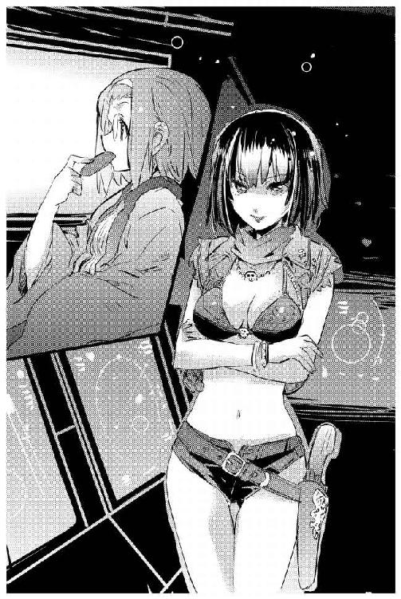
「装備している通信システムについても質問されたし、使ってる単位系についてもしつこいくらいの確認があった。今、管制局からこれだけ細かい指示が来てるってことは、今度はこの宇宙船がどれくらい指示を理解してその通りに動けるかどうか、精密観測されてるんだと思う」
「えー!!」
舵輪を握るアイが声を上げた。
「それじゃあ、今、オデットがテストされてるってことですか？」
「たぶんね。あからさまな照準用レーダーこそ当てられてないけれども、最短距離の効率的な軌道じゃなくて、余裕のある空いてる空間を廻らされてるってことは、そういうことだと思う。なんか不穏な動きがあれば即撃沈、すこしくらい大きく爆発させても被害を最小限で済ませようってことよ」
「いつも通りで大丈夫」
茉莉香が声をかけた。
「免許試験されてるわけじゃないんだから、うまくやろうなんて考えなくていいわ。たぶん、ぶつけようとしても向こうが避けると思うから」
「入港させてくれないのね」
ジェニーが物足りなさそうに言った。
「臨検がスムーズに終わったから、ポルト・セルーナの中に入れてくれるんじゃないかと期待してたんだけど」
「帝国外で臨戦態勢の軍港ですから」
茉莉香は、管制局から指示されたオデットの軌道をチェックしている。
「閉鎖型の埠頭は、修理や補給で予約一杯だと思います。うちの船、まだ敵味方識別もされてない状態だと思うから、これだけステーションに近いところに留めさせてくれるだけでもいい待遇なんだと思います」
「戦時下の軍港だってのはわかるけどさあ」
ジェニーは不満げな顔でディスプレイを見やった。
「臨検したとはいえ識別完了してない宇宙船を、露払いもなしに平気で湾内で動かすなんて、ずいぶんいい度胸してるじゃない」
「まわりの宇宙船に、未確認艦を観測させてるんだよ」
電子戦席のリンが事も無げに言った。ジェニーが訊き直す。
「どういうこと？」
「もちろん戦闘用の強力なレーダーじゃないけど、動き出してからこっち、オデットⅡ世はほぼ全方位からレーダー当てられてる。停泊中の帝国艦艇が、はじめて見る型の太陽帆船を、次に出会った時にすぐに識別出来るように、こっちの個艦情報記録してるんだ。艦型だけじゃなくて、たぶんエンジンの噴射パターンとか赤外線分布なんかも録られてるはずだぜ」
「次に戦るときは、こっちはすぐに識別されるってわけね」
ジェニーは眉をひそめた。
「あんまりおもしろくない事態ではあるわね」
「だから、こっちのレーダーは航法用の最小出力のまま、電子戦用の機器もいっさい動かしてません」
チアキが言った。
「こっちの形は覚えただろうし、中と外から見れば動力性能もかなり正確に推定されてると思いますけれど、こっちが帝国艦隊の規格相手に電子戦出来るとは思ってないはずです」
レーダーや通信を妨害するためには、周波数や規格を正確に把握していなければならない。未接触の技術文明が、はじめて接触するはずの通信規格や電子技術を正確に理解している確率は低い。
「そう思っててくれればいいんだけど」
茉莉香のためらいがちな声に、ブリッジクルーの視線が集中した。
「通信規格の変換も要求せずにいきなり画像通信で管制局や帝国艦隊の艦艇と通信してみせたんだもの。臨検隊の質問にも調査内容にも電子兵装に関する物は含まれてなかったけれど、コンソールも設備も隠してないから、見る人が見ればこっちがそういう装備してるのもわかるんじゃないかしら」
「だいじょうぶなんじゃないかなあ、たぶん」
リンがのんびりと言った。
「電子戦力でいちばん肝心なのは装備や出力じゃなくて、使う奴と使い方だ。敵がこっちの意図をきっちり読んで対抗策取ってくるなんてことになったらそりゃおっかないけど、今のところその心配はない」
リンは船長席の茉莉香を自信たっぷりの笑顔で見上げた。
「まだ、首脳部にも乗り込めてないんだぜ。んな心配までしてたら頭がいくつあっても足りないぞ」
「そうですね」
茉莉香は笑顔でうなずいた。
「やり合う予定はないけど、もしそんなことになってもすぐ対応出来るようにこっちを見てる艦の情報は整理しておいて下さい」
「もうすぐ、管制局が指定した係留座標です」
舵輪を握るアイが、緊張を隠しきれない声で告げた。
海賊船オデット号が錨泊を指定された空域は、ポルト・セルーナ本体に近い座標だった。ステーションの無数の閉鎖系埠頭への入出港軌道及び通信系、レーダー／センサー系の作動を邪魔しない空域に到着したオデット号は、船体中心を指定された座標に正確に一致させて静止した。
海賊船オデット号は、指定された係留座標に到着したことを管制局に連絡した。管制局からは、現状で待機するようにとの指示が返ってきた。
「さて、と」
茉莉香は、独立戦争現在のたう星系海明星新奥浜市に合わせてある現在時間を見た。そろそろ、日付が変わる。それだけ、終戦までの残り時間が少なくなる。
「たぶん、帝国艦隊が次にうちを呼び出してきたら本格的な事情聴取になると思うけれど、それまでに出来ることをやりましょうか」
茉莉香は、ブリッジを見廻した。
「補給と休養のために、ポルト・セルーナへの上陸を申請します。上陸希望者はいますか？」
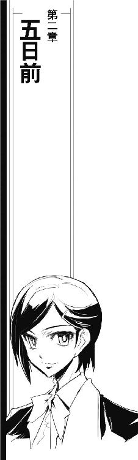
宇宙要塞として建設されたポルト・セルーナは、帝国艦隊により周辺空域の制空権を確保、哨戒体制が整えられてからは交通の要衝としての役割も担うようになった。
帝国と辺境の間の大規模中継ステーションとしてのポルト・セルーナは、いくつもの港湾地区を持つ。整備補給や大規模修理のみならず新造艦の建造まで可能な軍港と、民間船も入港する港湾、貨物専用の埠頭は分けられている。
ポルト・セルーナの商業地区は南北に二つの港を持つ。重装甲のブロック構造を重ね合わせた宇宙要塞であるポルト・セルーナの中で二つの港の間にある商業地区は最も新しく、最も大きい。
海賊船オデット号が乗組員の休養及び補給のために申請したポルト・セルーナへの上陸許可は、拍子抜けするほど簡単に受理された。錨泊空域から港へ移動するために使用するオデットの搭載艇について、その推進機関及び通信機能に関する確認があったものの、あとは初心者向けの入港ガイドが送付されてきただけである。
乗員の補給と休養のためといいながら、情報収集のための上陸であることは全員が承知していた。生鮮食料品及び嗜好品の補給に関する優先順位は高くない。
当初、茉莉香は上陸するつもりはなかった。未だ事態は流動的であり、いつ呼び出しがあってもおかしくない状況で船長が宇宙船を離れる気になれなかったからである。
茉莉香の気を変えさせたのは、グリューエルによる説得だった。
「茉莉香船長は、帝国艦隊と一戦交える気なのでしょう？」
通信席に陣取ったまま、グリューエルはとんでもない言葉をさらりと口にする。
「そして、勝つおつもりなのでしょう？ であれば、敵となる今の帝国艦隊をその目で見て、その状況を感じるべきだと信じます。敵に関する情報は、どれだけあっても多過ぎということにはなりませんから」
他に、ブリッジクルーからはリンが電子戦の情報収集のために、チアキが帝国艦隊の戦力確認のために上陸を希望した。通信も筒抜けの錨泊空域では制限される情報収集も、港に上陸すれば人目を気にせずに好きなだけ行える。
ブリッジからはもう一人、ジェニーが上陸を希望した。
船長である茉莉香を含む十数名がポルト・セルーナに上陸中、連絡は船内でも使っている携帯端末による通信で行う。上陸中はブリッジのグリューエルが中心となって状況判断を行う。必要な状況は茉莉香をはじめとする全員に逐一流される。
念のために状況を弁天丸にも流し、必要な情報や調達すべき物資の有無を確認する。茉莉香は、帝国が他の技術文明と初接触する際のマニュアルについていくつかのデータをハードコピーの形で入手することを求められた。
留守番の乗組員に見送られて、シャトルはオデットを発進した。
オデットから発進したシャトルは、管制局の指示に従って北側の港湾地区に入港した。小型艇専用の立体駐機場にシャトルを固定、桟橋ごとに人工重力場が作動している埠頭に降り立つ。
上陸した一行は、まず最初に港の銀行に向かった。非常時のために、船長室の金庫に用意されていた換金用の貴金属を持ち込み、当座の活動資金に換金する。帝国の基幹通貨は今も昔もクレジットだが、茉莉香たちが持っている未来のクレジット貨は使えない。
宇宙要塞であるポルト・セルーナの一画であるとはいえ、商業港湾地区内ならば帝国市民だろうが辺境民だろうが行動範囲の制限はあまりない。当面の活動資金を得た茉莉香たちは、再集合場所をシャトルの駐機場に定めて分散した。
ジェニーは、リン、チアキと茉莉香を連れて港町の繁華街に向かった。
「これだけ大規模な港で、しかも辺境区にまで開かれてるんなら、たぶん規格さえ合わせてやればわたしたちが今持ってる端末でもネットワークに接続出来ると思う」
ジェニーの説明に応じるように、リンは引っ掛けてきたジャケットのポケットから情報端末を出して見せた。
「いくつも繫げそうなネットワークが検出出来てる。未来の規格との上位互換なんか期待しちゃいけないが、まあなんとかなると思うぜ」
「だけども、いちおう軍港よ。ネットは無料だけど使用するには登録が必要だし、内容も記録される。用心しておくに越したことはないわ」
港に入っている宇宙船は時代を感じさせる旧式や見たこともない骨董品が多かった。しかし、いくつもの隔壁を装備する歩行者向けの通路を抜けて商業区画に入ると、拡がる街並みは一二〇年後のポルト・セルーナとあまり変わらない。宇宙港らしく二四時間暮れない人工の青空を映し出す大天井の下に、うるさいほどの看板や広告で飾り立てられた商業街区が拡がっている。
「でも、ネットカフェなんてあるんですか？」
流行の範囲でしか違っていないように見える道行く人たちの服装を興味深げに見廻しながら、チアキが訊いた。
「正確には、わたしたちが知ってるようなネットカフェじゃないわね。電気屋の店先の情報端末とか、レストランの電話ボックスとか、いくらでも使えるところはあるだろうけど、でも、今のポルト・セルーナならいちばん安全確実なのはあそこ」
ジェニーは、人工の青空の下に拡がる商業街区の外れの区画ひとつを占領している、巨大な黒いガラスの抽象彫刻のような建物を指した。
幾何紋様を組み上げたような巨大なモザイク壁に、銀河標準語の大文字が浮かび上がっている。
「......パレス・ホテル？」
茉莉香は、グリューエルと付き合う前はグラビアでしか見たことがなかった老舗ホテルの看板を見上げた。
「こんな時代の、こんなところでまで営業してるんだ......」
「機密保持のコツは、必要経費を惜しまないこと」
ジェニーは、先に立って歩き出した。
「セレニティ星王家とヒュー＆ドリトル星間運輸に似てるところなんかないと思ってたけれども、意外なところでおんなじ営業方針があったのね。グリューエルも、高級ホテルが好きでしょ」
「好きっていうか、グリューエルの場合は立場上うっかりしたところに行くわけにいかないし」
もごもごと言い訳した茉莉香に、ちらりと振り返ったジェニーはにっこりと笑ってみせた。
「今のわたしたちは、植民星連合の未来を左右する立場にいるのよ。星王家のお姫さま以上に大事なところなんだから、未来がお金で買えるならお金を惜しんじゃ駄目よ」
パレス・ホテルのロビーに入ったジェニーは、正装で待ちかまえていた生身のコンシェルジュを相手に少人数での会議も可能な部屋をオーダーした。
形ばかりの手続きと正規料金を先払いして、一行はホテルの奥深い一室を確保した。
星間通信のみならずビッグデータの集中解析も出来るような当代最新の情報端末が装備されているミーティングルーム付きのスイートルームに入ったリンは、手際よく全システムの立ち上げを開始した。
「おれたちが知ってるものといろいろ扱いは違うけど、基本はまあだいたい一緒だ」
サービス過多な表示を次々と切りながら、リンはジェニー、チアキ、茉莉香に装備されている情報端末の使い方を説明した。
「標準語設定だけど、当たり前ながらここって一二〇年前だからね、いつも使ってるようなショートカットは全部無効だ。初心者向けのアシスタントモードは生かしてあるから、そっちでなんとかなると思う」
リンは、後ろからマルチディスプレイ型の情報ブースを覗き込んでいる聴衆に振り向いた。
「まあ、使ってみてくれ」
「それじゃ、さっそく」
リンのとなりの情報ブースのシートを引いて、ジェニーは立ち上がっているシステムのキーボードに指を走らせた。
「平面表示ってところに時代を感じるわね。画面はきれいだけど」
「こういうところだからねえ、設備は最高級だけど確実に作動するってその点を重視して用意されてる」
リンは、愛用しているコンピューター、ＨＡＬ坊をバッグから取り出した。情報ブースのサイドテーブルに拡げてスリープを解除する。
「こっちは、今の時代の電子戦の基本と、できれば教則本を探してみる。うちの宇宙船は古いから、電子戦用のソフトウェアもパターンも使い切れないくらい揃ってるけど、今の帝国艦隊相手にどんな戦い方すればいいのか、あんまりぴんと来てないんでね」
「こっちもやるわよ」
チアキは、三つ目の情報ブースに茉莉香を引っ張っていった。
「この基地周辺だけじゃなくて、オリオン腕周辺、出来れば辺境全部の今の帝国艦隊の配置と戦力」
「そりゃまあ、知らないよりは知ってる方がいいけど」
茉莉香は、気の乗らない顔で立ち上がったディスプレイを見廻した。
「第七艦隊まるごと相手にしなきゃならないような事態とか、想像するだけでお腹痛くなっちゃうんだけど」
「文句言わない！」
情報システムに取り付いたチアキは、景気よくキーボードを叩きはじめた。
「順序よく上から行くわよ、まず第七艦隊総司令部！ 現在の総司令部の場所はゲゼルブ！ よかったわね、わたしたちが知ってるのと同じところにあるわ」
「知ってるってば」
茉莉香が力ない声で抵抗する。
「地図見ないで行ける？ 座標暗記してないでしょ？」
「そんな、泳いでいくわけじゃないし、そもそもそんなところまで行く予定ないし」
「行くか行かないかはともかく、今の茉莉香には目の前の銀河帝国第七艦隊ってのがどういう存在なのか肌で知ってもらう必要があるのよ」
メインディスプレイに映し出した星図に第七艦隊総司令部のポイントをプロットして、チアキは表示領域を一気に拡大した。
「第七艦隊は銀河系宇宙の外縁部に当たる辺境区全部が担当。所帯が大きいし動静が激しいから、総司令部はおおざっぱな方針を確認するだけ、具体的な作戦司令は各最前線ごとに展開している個別艦隊が現場で判断してる。オリオン腕周辺、ペルセウス腕、キール腕に展開している艦隊とその戦線は、と」
チアキは、第七艦隊の広報サイトから目的の情報を選び出して手際良く銀河辺境部が映し出されている星図に重ねた。
「こんなに!?」
茉莉香は悲鳴を上げた。チアキはなんでもなさそうに作業を続ける。
「わたしたちがいた銀河系宇宙だって、辺境部がちょっと外側に移動したくらいで、展開してる戦線の規模とか艦隊の数なんて大して変わってないわよ」
「だって......」
茉莉香は、オリオン腕を中心に銀河の四分の一が映し出されている広域星図を難しい顔で見つめた。辺境の各星域で展開中の戦線が、あるものは点として、あるものは面としてみっしりと描き出されている。
「うちの独立戦争なんか点のひとつにもならないくらい小さい」
「よかったじゃない」
チアキはキーボードを叩き続ける。
「止めなきゃならない戦争はその小さなひとつだけ、他の大きな戦線に出掛けていくよりよっぽど簡単だわ」
ほどなく、ジェニーが情報端末から離れた。
「ちょっと出てくるわ」
「どした？」
コントロール・パネルを叩く片手間に、リンが訊く。ジェニーは取り出した携帯端末を叩いて、転送した情報を映し出した。
「ちょっと、用事ができたの。反対側の港に行ってくる。間に合うようならこっちに、遅くとも集合時間にはシャトルに戻るから、気にしないで」
目当ての人物はすぐに見つかった。ジェニーは、窓際のテーブルでひとり電紙を拡げてページ更新を繰り返す、濃紺の髪をショートカットにした女性の背後に立った。
「アテナ・サキュラーさん？」
反応はない。ジェニーは自分の銀河標準語の発音が間違えていないことを確認してから、相手がイヤホンを耳に塡めているのに気付いた。強めに声を掛ける。
「アテナ・サキュラーさん」
「はい？」
顔を上げたアテナは、港の風景を映し出す正面の窓に映ったジェニーを見た。椅子を廻して振り向く。
「ごめんなさい、あなたとは会ったことがないと思うけど？」
悪魔のようなと形容される記憶力を持つ未来の担当教授を相手に、一〇〇年越しの冗談を仕掛けるという誘惑を、ジェニーは意思の力で抑え込んだ。
「直接お会いするのは初めてです」
ジェニーは、自分と余り変わらない歳に見える長命種に一礼した。
「あなたが通信した相手の宇宙船のブリッジに乗っていました。ジェニー・ドリトル、海賊船オデット号の乗組員です」
アテナの目が大きく見開かれた。ジェニーは、その驚いた顔を見ただけで今回のミッションの成功を確信した。
瞬きして、アテナはジェニーを見直した。頭のてっぺんから爪先まで、視線が素早く往復する。アテナが調査観察モードに入ったのを気付かない振りをして、ジェニーは続けた。
「お時間を頂いても、よろしいですか？」
「その前に、二つ質問があるわ。どうやってわたしを探し出したの？」
答えを待つようにジェニーを見つめる。ジェニーは、担当教授が質問はひとつずつ行う主義だったのを思い出した。それは、答えを確認して次に進むというよりも、学生を混乱させずに思考を効率的に導くためなのだろう。
「ポルト・セルーナの管制記録は公開されています」
ジェニーは、相手の流儀に従って説明をはじめた。
「宇宙大学の調査船キュリオシティが、物資補給のためにポルト・セルーナに入港申請を行ったのは、管制記録を見れば確認出来ます。キュリオシティは民間船用の錨泊空域に停泊、乗組員は公共シャトルで港に上陸しました」
沖留めの宇宙船からステーションへ移動するには、港湾内を公共交通機関として巡回しているシャトルに乗るか、自前の連絡艇を使うか、手段はそれほど多くない。
「上陸名簿も、公開されています」
あいかわらず表情の読みにくい長命種を前に、ジェニーは説明を続けた。
「公共シャトルの運航スケジュールも、いつキュリオシティに寄って港に戻ってくるかも、調べればわかります」
「軍事基地だっていうのに、個人情報だだ漏れね」
アテナはにこりともせずに言った。
「でも、それだけじゃわたし個人の居場所までは特定出来ないはずだけど？」
「キュリオシティに、個人連絡先を問い合わせました」
ジェニーは答えた。
「いえ、より正確には、調査船キュリオシティにアテナ・サキュラーに個人的に連絡を取りたいって問い合わせたんです。そうしたら、キュリオシティからポルト・セルーナに上陸中とのことで、呼び出そうかって言ってもらえたんですけれど、個人用通信コードを教えてもらいました」
「誰よ、部外者にそんな情報教えたのは」
アテナは軽く眉をひそめた。個人を探し出すのは難しいが、個人用通信コードを登録した携帯端末なら現在位置を検索するのは簡単である。
「もう少し機密保持きっちりしないと情報戦争も出来ないって、文句言ってやらなきゃ。それじゃあ、二つ目の質問。なぜ、わたしを捕まえたの？」
アテナの銀に近い灰色の瞳が、じっとジェニーを見つめる。ジェニーは次の一歩を踏み出す気分で口を開いた。
「わたしたち、オデット号の乗組員が接触を持った銀河帝国、わけても宇宙大学の職員で、唯一面識があるのがアテナ・サキュラーさん、あなただけだからです」
ジェニーは、なにも持っていない証拠に軽く挙げた両手の平をアテナに見せた。
「捕まえただなんて、もしそれが捕縛とか誘拐とかそういう意味なら、わたしにはそんなつもりはありません。ただ、ちょっといくつか質問したいことがあるんです」
アテナは、ジェニーから目を逸らさない。
「どんな質問かしら。わたしがそれに答えると考える根拠は？」
「わたしは、今オリオン腕で戦争をしているわたしたちの文明についての詳細なデータを持っています」
ジェニーは、はじめてアテナより優位に立っていることを感じた。
「もし、わたしの質問に答えて頂けるなら、わたしはあなたに今わたしたちの文明が運用している全宇宙船の航行データをコピーする用意があります。それは、宇宙大学の調査船にとっては貴重な資料になるでしょう」
ジェニーはこらえきれずに微笑んだ。
「今の質問、三つ目ですね」
視線をもう一度ジェニーの爪先から頭まで往復させてから、アテナのくちもとが笑みの形になった。
「はじめまして、からはじめた方がいいかしら？ それとも、また会ったわね、からの方がいい？」
「久しぶり、でどうでしょう」
ジェニーはくちもとを引き締めた。アテナは頷いた。
「話が通じそうな相手で助かったわ。よかったらどうぞ」
拡げたままだった大判の電紙を軽く避けて、アテナはカウンターのとなりの席を空けた。
「ありがとうございます」
ジェニーは軽く頭を下げて、アテナのとなりのハイシートに登った。メニュー注文のためだけでなく、広告表示と情報検索のためのディスプレイが組み込まれたカウンターの向こうには港が一望出来る大窓が拡がっている。
ポルト・セルーナでもっとも新しい、もっとも大きな民間船専門の港湾地区は、一方が宇宙空間に開けた直方体の形をしていた。開かれた一方を気密フィールドで閉じて港湾内を与圧する当代最新の宇宙港内部には大小様々な埠頭が林立して表裏二面に宇宙船を係留している。
軍港と違って、誘爆を防ぐための掩体壕などないから、入港中の宇宙船はその形態のすべてが見通せる。一二〇年後のオリオン腕でも流通している有名ブランドのソフトドリンクを注文して、ジェニーは無重量状態の港から重力下のカフェテラスでカウンターのとなりに座るアテナに向き直った。
確認すべき情報に目を通すように、表示を高速スクロールさせていたアテナが電紙ディスプレイを畳んで閉じた。
「あなたの星にも、こんな港があるの？」
茶飲み話のように訊かれて、ジェニーは首を振った。
「いいえ。これほど大規模の宇宙港は、まだどこにもありません。将来的には建設されるんじゃないかと希望しますけど」
「それにしちゃ、驚かないわね」
アテナは、港湾地区の風景に目をやった。カフェの重力方向の関係で、無重量状態の港の埠頭は横向きに延びているように見える。
「他でも見たことがあるのね」
「はい」
それ以上の情報を相手に与えないように、ジェニーはただ頷いた。アテナは、ジェニーに目を戻した。
「それで、わざわざステーションまで来て訊きたいことってなに？ わたしでも答えられるような質問だといいのだけれど」
「帝国艦隊の、未接触の文明に対する接触プロトコルを教えて下さい」
ジェニーは注意深く言葉を選んで言った。アテナの目がわずかに見開かれた。
「もちろん、接触プロトコル全部なんて無謀なことを訊きたいんじゃありません」
ジェニーは続けた。
「今のわたしたちの状況に付いて、帝国第七艦隊はどのような判断を下すか、それはいつ頃になるのか、そういう答えを求めています」
「質問が漠然としすぎているわ」
アテナは、一度は閉じた電紙ディスプレイをもう一度カウンターに開いた。
「通常ならば、帝国は未知の文明との接触を急がない。銀河帝国はもう充分に大きいし、接触したはいいけれどうまくいっていない辺境区も多い。接触が増えれば、それはすなわち帝国の外交問題がそれだけ増えることを意味する。よほどの見返りがなければ、どんな技術文明を築いていようと、知性体は自ら好んで厄介事を増やすような真似はしないものよ」
「そうでしょうか？」
ジェニーは、港に目を戻した。きらびやかなイルミネーションで流線型の船体を強調する豪華客船が、ゆっくりと桟橋から離れていく。
「本当に銀河帝国が厄介事を嫌っているのなら、わざわざその版図外にこんな大きな要塞を作って、いくつもの辺境との戦線を維持しないと思います」
「それは、まだまだ銀河帝国にも他の文明にも発展の余地が多分に残されているってことよ。帝国も辺境も、それだけの価値があると信じて厄介事を後生大事に抱え込んでいるんだから」
「訊きたいのは、一般的な接触プロトコルじゃありません。我々の技術文明について、帝国はどんな判断を下すと考えますか？」
「あなたたちの世界について、帝国がどんな判断を下すか？」
確かめるようなアテナの口調に、ジェニーは頷いた。
「そうです。もちろん、これから行われるだろう判断について確実な予測なんか出来ないことはわかっています。それについての責任も求めません。わたしは、一方の当事者として、予想出来る展開を出来る限り知っておきたいと思っています」
電紙に指先を滑らせたアテナは、ディスプレイ上に未整理の報告書のようなメモ書きの項目を映し出した。
「もっと抽象的な質問だったらどう説明すればいいかと思ってたけれども、会話が成立する程度には具体的な質問で助かったわ」
アテナは、ジェニーに目を戻した。
「ここでの会話で求められる答えは、あくまでわたしの個人的な予想と意見であって、帝国の判断とは遠く離れているかも知れない。それでいいのね？」
「理解しているつもりです」
ジェニーは、じっとアテナを見て答えた。
「アテナ・サキュラー個人としての意見を、ぜひ聞かせて下さい」
溜息を吐いて、アテナは電紙に指を滑らせた。
「今のところ、オリオンＤ６文明、失礼、それが今のあなたたちにわたしたち宇宙大学が付けた仮の名称なんだけど、それについてはなにも判断しないと思う。それより遠い辺境区といくらでも接触しているのに、あなた方に対して帝国が積極的に動いていないっていう状況がその証左ね」
宗主星も、独立戦争を戦っている植民星連合も、目の前の状況処理に精一杯である。独立戦争前から宗主星も植民星連合も帝国を含むいくつもの異種知性体との接触を持っているが、今のところ技術導入を含む小規模な経済交流しか行われていない。
「宇宙大学が、帝国の目線で我々を調査していたのも、あなたを回答者に求めた理由のひとつです」
ジェニーは言った。
「それだけ、事前の説明を省くことが出来ますから。つまり、今の銀河帝国は我々を認識しておらず、重要視もしていないということですね？」
アテナはジェニーの顔を見直した。
「ずいぶん正確な状況判断ができるじゃない。ええ、その通りよ。そして、帝国は今までの長い経験から接触を急がない。会話も理解も長い年月を掛けて確実に行う方が誤解も損失も最小に出来るという経験則を得ている。接触プロトコルも基本的にその方針に則って行われるから、あなたたちが帝国になにを要求するか知らないけれど、気は長く持つことをお薦めするわ」
「ご存知の通り、我々は長い星間戦争を戦っています」
アテナの顔をじっと見つめて、ジェニーは言った。
「もし、我々が帝国に我々の独立戦争への停戦のための協力を求めたら、それは速やかに聞き届けられるでしょうか」
アテナはじっとジェニーの顔を見つめ返した。ひととおりの考察を二回ずつチェックするだけの時間を掛けてから、アテナは口を開いた。
「その可能性は低いわね。帝国はそれが版図だろうと辺境だろうと内戦には干渉しない。民族自決を徹底させるためにも、自分たちのことは自分たちで決めさせる。内戦が他にまで波及して星とか環境とかいろいろ壊れそう、なんていうなら話は別だけど、そうでない限りは未接触の文明には不干渉原則が適用されるから、状況もわかってない内戦に介入するなんて事態はまず考えられないわ」
「状況に関しては、我々はほぼ正確と信じられるデータを帝国に提供出来ます」
ジェニーは言った。
「我々の文明が運用しているほとんど全部の宇宙船の運行状況と、各星系の経済状況に関して充分に正確なデータがあります」
「帝国は、内戦には干渉しない」
アテナはもう一度言った。
「それに、あなた方が提供するデータが正確なものか、帝国には判断する材料がない」
「調査船キュリオシティには、帝国が信頼するに足るデータがありますね？」
ジェニーの顔を見返したアテナの灰色の瞳が、楽しそうな光を帯びた。
「もしキュリオシティが調査データを提出したとしても、それを帝国艦隊が信用するかどうかはまた別の話じゃないかしら？ あなたたちの戦争は、銀河帝国から見れば内戦だけど、でもいくつもの星系を巻き込んだ全面星間戦争よね。帝国が介入しようとすれば、巡洋艦を一隻か二隻送ってそれで終わりっていうわけにはいかない。大規模な戦略打撃艦隊を編成して派遣する必要がある。戦争の分類は知ってる？」
確認するようなアテナの質問に、ジェニーは頷いた。
「ええ」
「あなたたちの戦争は、総力戦よね？」
「はい、そうです」
「だとすれば、仮に帝国艦隊が介入の方針を定めたとしても、戦況の見極めと状況の確認、そのために必要な戦力の算出、ただでさえいくつもの戦線を維持している帝国第七艦隊が必要な戦力をやりくりして、そのための打撃艦隊を編成するのにどれだけ時間がかかるか。それに見合うだけの利益と見返りが保証されていなければ、艦隊は動かないわ」
ジェニーは、アテナの言葉を頭の中で繰り返してみた。
「それが、あなたたちがここに来た目的なの？」
ジェニーは、訊いたアテナの顔を見た。
「あなたたちは、自分たちの戦争に帝国を介入させるために、ここに来たの？」
ジェニーは、その質問にどう答えるべきか、そもそも答えていいのか考えた。
「......今のわたしたちには、味方が必要です」
ジェニーは一言ずつ言葉を区切りながらはっきり言った。
「あなたが味方か、味方になってくれるかどうかは今のわたしたちには判断出来ません。だけど、少なくとも真実を言えば、そのあと噓を塗り固める手間はなくなります」
ジェニーは、アテナの顔を正面から見据えた。
「わたしたちは今、独立戦争を戦っています。戦争を終わらせるためには帝国艦隊という巨大な力による介入しかない、そう考えてわたしたちはここに来ました」
「隙がないわね」
ポルト・セルーナを中心とした銀河辺境区担当の第七艦隊の配置図をディスプレイいっぱいに映し出して、チアキは唸った。
「さすが辺境で手広く営業中の第七艦隊、どっかの停滞してる戦線や余裕のありそうな補給基地から、一瞬でいいから戦力借り出せばなんとかなるんじゃないかと思ったけど、どこも真面目にお仕事中、引っ張り出せそうな艦隊なんかどこにもいないわね」
「そりゃまあ、ひまそうにしてる海賊船だって、いきなり飛び込みのお仕事って言ったら、いろいろと連絡して調整しなきゃならないんだから、平和な海明星の星系軍だって哨戒だ訓練だってスケジュールいっぱいだし......」
茉莉香は、自分が指揮官になったつもりでポルト・セルーナを中心とした辺境広域の艦隊配置図を見てみた。どこかから戦力を持ってくるためにはそれによる空白を埋めるために、さらに別の戦力を移動させなければならず、タイムラグを最小にするためにはイカサマのような艦隊運用が必要になる。
「......戦争するって、大変なんだね」
「まったく、なんでこんな大変なこと、みんなやりたがるんだか」
チアキは吐き捨てるように言った。
「みんな平和でのんびりやってれば、それでいいじゃない」
「ほんっと、そう出来ればいいんだけど」
茉莉香は、あるだけすべてのディスプレイに表示されている情報を見廻した。メインディスプレイには現在位置であるポルト・セルーナを中心とした星図が、周りのディスプレイには近傍の各戦線の情報が映し出されている。
「うちのところだって、星図に表示されないほどささやかな規模だって言っても、独立戦争だって言って止められない内戦やってるんだもの。どうしよう」
画面の隅に表示されている銀河標準時を見て、茉莉香は思い出した。
「リン部長！」
「なんだい？」
キーボードを叩く片手間にリンが応えた。
「弁天丸と連絡取ろうと思ったら、ここのネットワーク経由の方が安全ですよね？」
「そのはずだ。傍受した通信全部を律儀に解読解析してるかどうかはともかく、基地周辺の通常通信は全部記録されてるだろうから、ネットワーク経由の情報ならましって程度でしかないけどな」
「じゅうぶんです」
茉莉香は、うろ覚えの通信手順で弁天丸を呼び出してみた。ネットワーク経由のリアルタイム通信で弁天丸のブリッジをコールする。
返答は、すぐに返ってきた。
『こちら弁天丸、ミーサ船長代理』
サブディスプレイのひとつを通信モニターに切り換えて、ミーサが現われた。
「こちら加藤茉莉香、現在位置はポルト・セルーナのミッドタウン一五区、パレス・ホテル。こっちのチェックだと回線の安全は保たれてるはずなんだけど、そっちからチェック出来る？」
『クーリエがうちのセキュリティソフトを今の時代向けに再設定したのしかないけど、少なくとも警告は出てないわね』
画面の外を見てから、ミーサは茉莉香に視線を戻した。
『ネットワーク経由の定時連絡？ いいんじゃないかしら。こんな時代でもパレス・ホテルって営業してるのねえ』
「雰囲気が違いすぎて、正直あんまり馴染めないんだけど」
茉莉香は、キーボードを叩いた。
「頼まれてた資料、手に入りました。このまんま送って大丈夫？」
『送ってみて。通信が繫がってるなら大丈夫だと思うけど......あ、来たわ。はい、受け取り確認』
「そういうわけで、こっちはホテルに缶詰中」
茉莉香は現在の状況をミーサに報告した。
「そっちは、なにかあった？」
『あったわよ』
肩をすくめて、通信モニターの中のミーサは頷いた。
『うちの乗組員総出で、帝国の初接触プロトコルの解析。まだいくつか要確認事項は残ってるけど、全体の方向はだいたい見えてきたと思う。定時連絡が遅れるようならこっちから呼び出して概要伝えようと思ってたんだけど、いい？』
ミーサの浮かない顔色を見て、茉莉香は眉をひそめた。
「なんか、あんまりよくない話になりそうなんだけど？」
『当たりね。結論から言うと、このまんま帝国のプロトコルに付き合ってたら、どう希望的観測を重ねても終戦までに間に合わないわよ』
茉莉香は、通信モニターの中のミーサの顔を見直した。
「......やっぱり......」
『驚かないのね。気が付いてたの？』
「そういうわけじゃないけど」
茉莉香は、通信システムを完備したホテルの小会議室を見廻した。
「あと五日で帝国の大艦隊がたう星系に押し寄せるっていうのに、どう考えても実感ないんだもの。ここまでスムーズに帝国艦隊と接触して港に上陸出来たわりに達成感ないし、それに、プロトコルがあるってことは帝国が未接触の相手とどう接触してどう交渉するか、今の段階でもうある程度は決まってるってことでしょ」
『そうよ』
ミーサはサブディスプレイに目を落とした。
『帝国は無数って言えるくらいの星系国家の集合体だし、銀河帝国っていう形になってからだけでも数え切れないくらいの文明と接触して、戦争したり併合したりしてる。今だって辺境区じゃ接触の結果としての戦争が進行中だし、同じ数くらい帝国が関与してない星間戦争だって戦われてる。つまり、こっちにどんな事情があろうと、帝国には接触を急ぐ理由はないし、こっちの事情を斟酌するほど余裕綽々なわけでもない。もしよかったら、これから先の展開について予想出来る範囲で説明したいんだけど、今、大丈夫？』
「ええと......」
少し考えて、茉莉香は注文した。
「出来るだけ省略して、肝心なところだけ教えて頂戴」
ミーサは手元のディスプレイになにか表示したようだった。
『帝国の版図外から接触しに来た海賊船オデットは、帝国としては外交使節団と同列に扱われます』
「外交使節団!?」
横で話を聞いていたチアキが声を上げた。
「そんな大層なもんなの、わたしたち!?」
『戦争終わらせるために帝国艦隊の出動を要請しに来たんでしょ。実体はともかく、わたしたちは未接触の星間文明の全権を委任された使節団ってことになるわ。だから、帝国としては相手が交渉に足る相手なのか、それが代表する星間文明がどんな規模でどんな特徴を持つどんな文明なのか吟味しなきゃならない』
「めんどくさ......」
茉莉香はこっそり呟いた。
『学術調査と星間外交まで絡む問題だもの、そりゃあめんどくさくもなるわ。帝国の立場にしてみれば、交渉を求める相手を見極めるなんて当然のことでしょう』
「それはそうかもしれないけれど......」
『全権使節団でございって押し掛けてきたからって、それは帝国相手の大規模詐欺企んでる犯罪者かもしれないし、ほんとうに星間政府を代表する使節団として訪問してるんなら、どれくらいの交渉権限があってなにが出来てなにが出来ないのか、互いに齟齬がないように確認する必要がある。でないと、条約ひとつ結べないしその前の共同声明の発表だって怪しいもの』
「星間条約に、共同声明ねえ」
茉莉香は口に出して呟いてみた。ことごとく実感がない。ちらりと茉莉香の表情を見て、ミーサは説明を続けた。
『問題はね、相手が交渉するに足る相手かどうか確認する作業に時間がかかるってことよ。オデットがわたしたちの文明の全権使節団としてここに来たことを帝国艦隊が認めたとして、そのあと、未接触の星間文明の状況確認と調査に、なにをどうしたって半年以上、たぶん数年くらいはかかるはず』
「なにそれ！」
さすがに茉莉香は声を上げた。
「そりゃ、今日明日中に問題が片付くなんて期待するほど楽観してなかったけど、半年!? 半年もここで待ってろって、そういう話!?」
『いちばん楽観的な展開でも、それくらいかかるだろうって予想』
ミーサは淡々と言った。
『帝国にしてみれば、わたしたちの文明と接触を急ぐ理由はなにもないんだから、現在進行形の辺境反乱軍と比べれば、優先順位だってどう考えたって高くならない。全銀河系宇宙の統一を目指す銀河帝国のお題目は平和と安定だけど、慈善事業ってわけじゃないんだからね、帝国艦隊出動させようって言うんなら、ちゃんとした名目と目的、計画立案して予算立ててちゃんと見返りがあって、経済活動として成り立つかどうか判断してからでないと動くものも動かないわ』
茉莉香は目を閉じて息を吸った。大きく吐き出す。
「よかった」
「え!?」
チアキはぎょっとして茉莉香の顔を見直した。茉莉香は目を開けて、通信モニターの中のミーサに笑った。
「早いうちにそれがわかって、よかった。このままずるずるポルト・セルーナの帝国艦隊に付き合って時間を無駄にして、明日中にたう星系に帝国艦隊引っ張っていかなきゃならないなんてところまで追い詰められるよりずっとマシよ」
茉莉香は、ミーティングルームの中を見廻した。電子戦関連の調査を続けていたはずのリンがこっちを見ている。のみならず、わざわざ耳に手を当てて聞き耳を立ててみせた。
茉莉香は言った。
「帝国が定めている手順を無視するつもりはないし、それは尊重しなきゃならない。けど、その通りに付き合ってたらこっちの予定には金輪際間に合わない、そういうことね？」
『船長の理解が早くて助かるわね』
ミーサは頷いた。
『だいたい、そんなところよ。今、こっちでも星間法と帝国の接触プロトコル付き合わせて確認取って、どっかにつつけるような穴がないかどうか調べてるけれど、公開されてるレポートの実績見る限りはそんなに簡単な一発逆転の方法はなさそうね』
「そお......」
茉莉香は、弁天丸で行われているはずの調査方針を考えてみた。
「半年かかるはずの手続きを三日くらいで済ませるような方法があるかどうかなんて、もうそっちでも考えてるわよねえ」
「もちろん。今のところはあんまりはかばかしい方法は見つかってないけど、でも、非常手段でも緊急避難でもなんか方法はあるはずだと思うから」
「んー......」
茉莉香は、もう一度状況を考えてみた。グリューエルならこんな時、どんなことを言うだろう。歴史ある星王家なら、こういう場合になにを重要視してどう動くだろう。
「あの、まだよくまとまってないんだけど、今のうちにやらなきゃならないこととやっておいた方がいいことって、帝国にこっちを接触する相手として認めさせるってことだと思うんだけど、この考え方って間違ってない？」
『正解よ』
ミーサは答えた。
『まずとにかく、帝国にこっちを認めさせなきゃ、こっちがなにをしようと無駄になる可能性が大きいわね。帝国にとってわたしたちの文明は星のものとも宇宙のものともつかない未確認文明で、そもそもそんなものがオリオン腕に存在するってことすらあんまり知らないんだから』
「あたしたちは、その未確認文明の代表だってことにしてここに来てる」
茉莉香は、考えながら続けた。
「帝国が定めてる初接触プロトコルのうち、相手に求めてるものってなに？ せっかくここに来てるんだから、今、あたしたちがここでやっておけば、少しでも帝国の手間や手続き省けるようなことって、なんだろう？」
『今回の接触が、公開されてるプロトコル通りに処理されてるとしたら』
ミーサはディスプレイの表示を手早く切り換えた。
『今の段階はまだ、管制局に未確認文明からの宇宙船が接触して、その身元を調査してる段階ね。臨検隊が乗り込んで技術と通信、それからコミュニケーション関係に問題がないってことを確認しただけで、それ以上はまだ所属も住所も素性も経歴も、なんにも確認されてない。例えて言えば、訪問したお屋敷のドアをノックして、開けて貰えるのを待ってるってところかしら』
「この先、プロトコル通りなら、なにがあるはずなの？」
『帝国第七艦隊が、銀河帝国を代表してこっちとの接触。まずは挨拶と、それから相互理解のための延々とした調査ね。どれだけ協力しても、これが手間かかるのよ』
「ドア開けて貰って、出てきた警護役の人に用件説明するようなもんか」
状況を理解しやすいように翻訳して、チアキは難しい顔で親指を嚙んだ。
「そのあと、お屋敷の主人に話が行くまで延々と伝言ゲームが続く。主人までやっと話が行っても、今度はそこから領主様とか代官とかに連絡して貰うようになる、と、そういう理解で間違いないですか？」
「だいたい合ってると思うわ」
ミーサは苦笑混じりに頷いた。
「じゃあ、直接ご主人か代官様に会いに行けば」
言って、茉莉香は首を傾げた。
「ポルト・セルーナのいちばん偉い人って、基地司令？」
「どうせなら、第七艦隊の司令に直接会いに行った方が話が早いんじゃない？」
『屋敷のご主人や代官様にそれだけの権力があるって言うんなら、その方が早いでしょうね』
苦笑いをにやにや笑いにして、ミーサが言った。
『でもたぶんあんまり役に立ってくれないわよ。基地司令だって艦隊司令だって、命令された通りにお仕事してるだけだもの。うまくやって話を聞いてくれても、こっちの希望通りに艦隊一つ動かすような裁量はないんじゃないかなあ、たぶんだけど』
チアキは、さっきまで映し出していた第七艦隊の指揮系統図を思い出してうんざりした顔になった。茉莉香はうーんと考え込む。
「ええと、第七艦隊司令部ってゲゼルブっていうところだったっけ？ 総司令部まで殴り込んだら、少しは話聞いてくれるかしら」
「総司令部まで喧嘩売りに行くつもり？」
チアキが目を丸くした。
「喧嘩売りに行って、買ってくれりゃあいいけどよ」
リンが口を挟んだ。
「こっちの戦力は、電子戦ならお得意だけど正面戦力のない太陽帆船と、海賊船の合わせて二隻しかいないんだぜ。そもそも相手にしてくれるかどうか」
「喧嘩売るだなんて、そんな物騒な手段じゃなくてもいいと思うんです」
茉莉香は自信なさそうに言った。
「一瞬でいいから、たう星系の遠征艦隊と植民星連合が一目見て手を挙げるような大戦力を集められれば、それでいいんです」
「そらこっちは、大艦隊の集結は終戦寸前の一瞬でいいって知ってるけどさ、艦隊出動させる側の銀河帝国にはそいつをどうやって納得させる？ 大戦力ってのは必要があって投入するもんで、目的のためにそれだけの価値があるってわかってから動かすもんだ。一瞬ですまなくても、少しくらい長引いてもいいって覚悟させないと、たぶん艦隊まとめて突っ込ませるなんてことはできないぜ」
「未接触の文明で、銀河帝国にとっての優先順位が高くないから、時間がかかる」
茉莉香は、通信モニターのミーサを見た。
「この認識で、間違いない？」
『ええ、合ってるわ』
「それじゃあ、銀河帝国にとって未接触の文明の優先順位を、辺境反乱軍より上げればいいの？」
ミーサは怪訝そうな顔で茉莉香を見直した。
『理屈ではそうなるわ』
少し考えて、ミーサは付け加えた。
『ええ、今の段階では認識もしてないオリオン腕の田舎の未接触文明の優先順位を、銀河帝国にとって最高に上げることが出来れば、帝国艦隊は他の仕事を放り出してでもたう星系に駆けつけてくれるでしょう。でも、どうやってわたしたちの文明の優先順位を上げるの？』
「どう考えても設定に無理がありすぎるわね」
アテナは、首を振った。
「ただでさえ内戦不干渉、民族自決の原則を保持している銀河帝国が、接触もしてない文明の内戦に介入するために艦隊を動かす事態なんて、どうやっても考えられない」
「帝国が、艦隊を動かすに足る理由が必要なのは理解しています」
ジェニーは、ここに来るまでに幾度となく重ねた思考実験の結果を口にした。
「未接触文明に対する帝国の原則もわかります。でも、わたしたちには帝国の力による介入が必要なんです」
アテナは興味深げに首を傾げてみせた。話を遮らない。
「たとえば......」
ジェニーは、いくつも考えた仮定のひとつを振り出してみた。
「緊急避難なんていう言い訳は使えませんか？ 天災か人災か、壊滅的な結果を伴う天文現象が予測される場合、そしてそれを放置したら莫大な被害が出る場合なら、人命救助という緊急避難名目で、帝国艦隊を出動させることは出来ないでしょうか」
アテナが答えるために口を開くまで、ひと息分の間が空いた。
「難しいわね」
アテナは、小さく首を振った。
「人命救助っていう緊急避難の名目は悪くないと思うけど、でも、銀河帝国がその責任を負わなければならないのは帝国臣民に対してであって、例えば敵対している辺境の反乱軍やあるいはまったく利害関係のない、存在すら知らない未接触文明に対してじゃない。冷たい言い方になるけれど、帝国にとって存在も知らない星の事情なんか、知ったことじゃない」
「......率直な意見に感謝します」
ジェニーは考えながら応えた。
「現時点では、銀河帝国はわたしたちのことを知らない。つまり、銀河にとってオリオンＤ６文明は存在していないも同様です。それについて考慮する余裕も斟酌する必要もないことも理解は出来ます。独立戦争を戦っているわたしたちにとっても、銀河帝国はまだほとんど知られていない存在ですから」
「ずいぶん落ち着いてるじゃない」
「はい？」
「あなたの話がほんとうなら、ごめんなさい、疑ってるわけじゃないのよ。でも、自分たちの文明が存亡の危機に瀕してるっていうのに、他人の話を冷静に聞いて分析するだけの分別がある。あなたたちって、みんなこうなの？」
「自分たちがやらなきゃならないと思ってることと、もし出来なかった場合どうなるか考えてるだけです」
苦笑いして、ジェニーは応えた。もし自分が歴史を知らずにこの場にいたら、冷静な対応が出来るかどうか考えてみる。
「もし、わたしたちの文明が充分に冷静で分別があるとしたら、たぶん、事態はここまで悪化しなかったんじゃないかと思います」
ふと気づいて、ジェニーはアテナの顔を見た。
「どうでしたか？」
「なにが？」
訊き返したアテナに、ジェニーは答えた。
「宇宙大学の調査でも、オリオンＤ６文明人は標準よりも冷静で分別があると評価されているのですか？」
アテナは、答えずにじっとジェニーの顔を見返した。ジェニーは続けた。
「調査船キュリオシティが、我々の生存圏で調査をしていたことは知っています。調査対象に接触せず、影響も与えない状態で、未接触文明のあるがままの姿を調査記録していたのでしょう？」
「報告書の概要もまとめないうちに、調査対象から感想を求められるとは思ってなかったわね」
「調査対象の未接触文明に属するものと会話するのも、貴重な調査機会ですよね」
ジェニーは、出来るだけ落ち着いた笑みを浮かべてみせた。
「この会話が、教授が書くレポートに反映されるのかそれとも非公開メモに記録されるだけなのか、それはこちらの関知することではありませんけれど」
「正直な感触を教えてあげる」
アテナの目の色が悪戯っぽい輝きを帯びた。
「まず、宇宙大学の未接触文明に対する調査は、観察とそれから傍受した通信記録による分析が主だから、一面的なものになりやすい。だけれども、今までのサンプル数が桁違いに多いし、それによる分析手法も確立されてる。だから、それなりに正確なものだと自負してるの。少なくとも、この百年ばかりでは決定的な修正を必要とするような大きなミスはない。それを踏まえてのオリオンＤ６文明の評価は、報告書にはしてないけどだいたいのところはわかってる」
「それで」
ジェニーは先を促す。
「宇宙大学は、わたしたちをどう評価しましたか？」
「個性的で頑迷で、ちょっとばかり不合理。技術文明の発展速度は速いし、その使い方については向こう見ずで危ないところもあるけれど、それを補えるくらいにはしたたかでずる賢い」
ジェニーの顔を見て、アテナははっきりと笑顔を見せた。
「つまり、銀河系宇宙にいくらでも存在する、普遍的な特徴を充分に備えてた、ありふれた文明だってことよ」
「銀河帝国が、膨脹政策を取って版図を拡げ続けているのはなんのため？」
通信モニターの向こうのミーサだけでなく、部屋のチアキとリンにも目配せして、茉莉香は言った。
『銀河統一を成し遂げて恒久的な平和を樹立するため』
ミーサはすらすらと答えた。
『いったいいつまでかかるかわからないけど、銀河帝国が膨脹政策をとり続けているのは全銀河をひとつの理想的な統治システムにまとめるためよ』
「だから、そういうお題目じゃなくて」
茉莉香は首を振った。
「帝国が次々に辺境を自分の領土に組み込んでいくのは、要するにそれが儲かるからでしょ。星を開拓するのも、飛び回って貿易するのも、商業活動のためでしょ」
「そら、ま、あからさまに言っちゃえばそーゆーことになるけど」
リンが茉莉香に胡乱な目を向けた。
「正義の宇宙海賊ともあろう船長が、いいのかい、そんな身も蓋もないこと言っちゃって？」
「手段を選んでられる場合じゃないんです」
茉莉香は、自分に言い聞かせるように言った。
「今、やらなきゃならないのは、銀河帝国が存在も知らないあたしたちの文明の優先順位を、一気に目の前の順番待ち飛び越えて上げること。そのためには、銀河帝国へ売り込みかけるくらいしか考えられないんです」
「売り込みって......」
チアキは、リンだけではなくモニターの中のミーサとも顔を見合わせた。ミーサは楽しげな顔で話を聞いている。
「だから！」
茉莉香は、頭に浮かんだことをそのまま口にした。
「銀河帝国が、あたしたちの文明に価値を認めれば、帝国艦隊を出動させる理由になる、そうじゃない？ 一二〇年前の宗主星、植民星連合の併合は、帝国艦隊としても希に見る完璧な仕事だったって歴史で習わなかった？」
接触、未接触に係わらず、辺境の文明が銀河帝国に併合されるにはさまざまな経緯がある。長年に渡る星間戦争から、粘り強い外交交渉と条件闘争を経ての平和的併合まで、その経緯は併合された星の数と同じだけあると言われている。
膨脹を続ける銀河帝国の併合の歴史の中で、宗主星、植民星連合を含むオリオン腕文明の併合はその速度と戦果の大きさにおいて特筆されている。出動した帝国の大艦隊を前にした宗主星、植民星連合が揃って降服したため、戦闘による犠牲は確認されていない。
「銀河帝国に対するあたしたちの文明の優先順位は低い、そりゃもちろんそうでしょう、知らないんだから。でも、十数の星系に数百億の人口がいて、将来的には銀河帝国ともうまくやっていくような文明が今なら無傷で手に入るってアピール出来れば、帝国にも艦隊を動かす理由が出来るんじゃないかしら」
『まずはお友達からはじめましょう、ってのはお付き合いの基本よね』
チアキはぎょっとした顔でモニターのミーサを見た。
『出来れば自然に交流が進むようにゆっくり出来ればいいんだけど、残念ながらわたしたちには時間が少ない。このまんま、銀河帝国のペースに合わせてたら話が進まないのはわかってるんだから、積極的に売り込みかけるってのは、あんまり悪い思い付きじゃないと思うわ』
「でしょ、でしょ！」
茉莉香が手を叩いた。
「おまけに、今うちの文明が内戦中、それも全面戦争の最前線が惑星に来ちゃうから、早く来てくれないとどんどん傷が増えて価値が落ちちゃう」
「わたしたちの文明の経済価値が落ちたら、帝国にとっての優先順位も落ちるんじゃないの？」
冷静に指摘したチアキに、茉莉香はびくっとした視線を向けた。
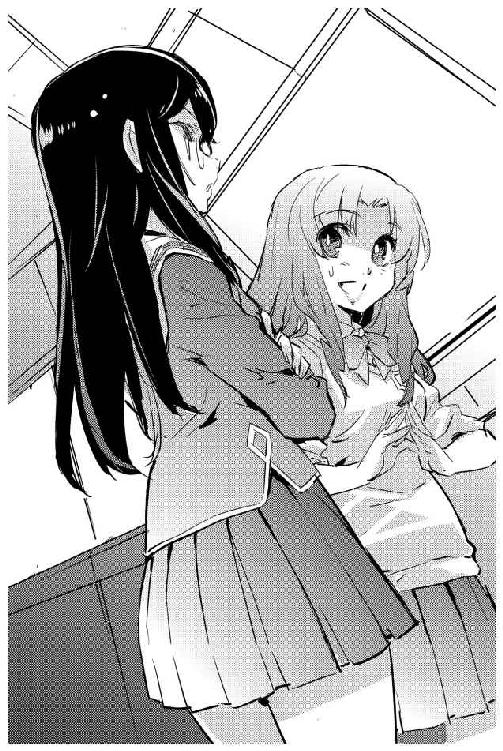
「それに、だいたいどこに売り込みなんかかければいいのよ。帝国のどこに侵略希望受け付けの窓口なんかあるっていうの？」
「だから、それは、帝国艦隊を動かせるような指導力のある部署に......」
「はい」
情報システムのコントロール・パネルを叩いて、チアキは帝国第七艦隊の指揮系統図をもういちど映し出した。
「最上位の司令部だって、他からの命令で動いてるのよ。いったいどこに売り込みかければいいのか」
「艦隊司令部に司令を下しているのは、どこ？」
茉莉香は、指揮系統図の最上位に大きく表示されている第七艦隊司令部のシンボルを見つめた。
「そりゃあ......」
リンとチアキも、指揮系統図を見上げた。リンがぼそっと呟く。
「......中央の、統合参謀司令本部？」
茉莉香はリンに振り向いた。
「中央って......核恒星系の中央ですか？」
銀河帝国は、棒渦巻銀河の中央から発生した。古い星系が高密度で集まっている中央部の核恒星系には、銀河帝国成立以前からの古い歴史を持つ星間文明も多い。
「ナンバーズ・フリートを含む銀河帝国の全戦力の指揮系統の頂点にあるのは、核恒星系にある統合参謀司令本部だ」
リンは、まさか実際に使うことになるとは思っていなかった情報を繰り返した。
「だけど、それだって銀河帝国の政治体制の一部分でしかない。聖王家を頂点とする銀河帝国中央の政治体制って......」
リンは首を傾げながら茉莉香とチアキの顔を見た。
「どうなってるんだ？」
「帝国が、未接触文明に対する不干渉原則を自ら破る例外についてお訊きしていいですか？」
訊きたいことはいくらでもある。しかし、時間は限られている。ジェニーは、慎重に訊いた。
「あら、例外なんか存在したかしら？」
アテナの瞳が不思議な光を帯びた。
「帝国が、未接触文明に対する不干渉原則を破るケースについて、です」
ジェニーは慎重に言葉を選んで口を開いた。アテナは、軽く首を傾げてジェニーから目を離さない。
「全銀河統一の目標を標榜している帝国は、その目標のために着々と版図を拡げています。今までに、無数の星系が帝国に併合されました。その中に、それまで未接触だった文明圏を含むものがいくらでもあります。それらについての質問です」
「ご存知でしょうけど、未接触文明人に余計な情報を与えるのは禁止されてるの」
アテナは楽しそうに言った。
「それをあなたが知っているかどうか、それについて言い出すかどうか楽しみだった。知ってるなら、ええ、なにも隠す必要はないわね。そう、学術研究としての比較文明学は余計な影響を与えないように未接触文明への接触、特に技術供与を禁じている。でも、政治としての銀河帝国は必ずしもそんな原則にこだわっていない。当然ね、学問と政治はその存在理由も目的も違うのだから」
アテナの目が生徒の理解を計っているような気がして、ジェニーは我知らず背筋を伸ばした。
「学問は真実の探求、政治は多数の幸福のために行われる。そして、学究の徒としては残念だけども政治はほとんどの場合学問より優先される。だから、簡単よ。銀河帝国が原則の必要性を理解しながらそれを破る理由はたったひとつ。非干渉原則を守ることによるメリットよりも、破ることによる利益が大きいって場合だけだわ」
説明は終わったとでも言うように、アテナは拡げっぱなしの電紙ディスプレイに目を落とした。
ジェニーは質問してみた。
「それはつまり、経済的な理由による、と？」
再び顔を上げたアテナは笑顔のままだった。
「ええ。不干渉原則を遵守するよりも、政治的理由が優先される場合は、銀河帝国は躊躇なくありとあらゆる原則も慣例も破ります。そして、政治的理由っていうのはほとんどの場合、経済的理由ね」
ジェニーが言葉の意味を理解する間だけ待って、アテナは付け加えた。
「さっきあなたが言った緊急避難についても、結局同じ理由だわ。大規模な環境破壊も災厄も、それが銀河帝国にとって無視出来ない被害を及ぼす場合は帝国は非干渉原則なんか放り出して動くでしょう。そして、その理由は予測される経済的な損失を回避するため。結局、銀河帝国を形成する知性体にとってそれが最大の換算出来る共通の価値観だから」
思案顔のジェニーを満足げに見て、アテナは言った。
「どう？ 役に立ちそう？」
「ありがとうございました」
ジェニーはアテナに頭を下げた。
「貴重な知見を得られました。もし、わたしたちの文明が首尾よく銀河帝国の末席に加わることが出来たら、それには教授の恩恵が少なからずあることでしょう」
「銀河帝国を売ったような気にさせてくれるわね」
アテナは複雑な顔で首を振った。
「未接触の文明人に情報を与えるのは慎重に行わなければならないんだけど、こういうことなら問題ないかな」
アテナは、ジェニーに顔を上げた。
「わたしは宇宙大学に所属してるけど、教授じゃないわ」
意味ありげな笑みを湛えて、アテナは言った。
「ただの研究員。教授だなんて、わからんちんの生徒の面倒見るなんて面倒な仕事に就く気はありません」
「そうですか」
ジェニーは、アテナに微笑み返した。
「今の講義、すごくわかりやすかったですよ。あなたなら、いい教授になれると思います」
「ただいまー」
帰ってきたジェニーは、会議室いっぱいに展開しているディスプレイを見て目を丸くした。
「取り込み中みたいね。どうしたの？」
設置されている情報システムのすべてに火が入り、それだけでは足りずに中央のテーブルの上にまでディスプレイが多重表示されている。
「銀河帝国の政治体制についてちょいとお勉強」
持ち込んだＨＡＬ坊とテーブルのコントロール・パネルを両手で叩きながら、リンは答えた。
「銀河帝国の政治体制？」
ジェニーは、悲壮感溢れる表情で情報システムに立ち向かっていた茉莉香とチアキに目をやった。
『あら、お帰りなさい』
点けっぱなしの通信モニターの中からミーサが声をかけた。
『今、ポルト・セルーナのパレス・ホテルの部屋じゃみんなそろそろオーバーヒートするころだから、こっちから説明するわ』
「どうしたんです？」
ジェニーは、ディスプレイが全灯されていて見ているのかいないのか様々な情報が映し出されている情報システムの通信モニターの前に座った。
『うちの船長の発案よ。今の状況だと、どうやってもこっちの思うとおりなタイミングで帝国艦隊に動いてもらうなんて不可能だから、上に直接掛け合わないと駄目なんじゃないかって話』
「はあー......」
ジェニーは、表示で埋められた会議室を見廻した。
「こっちと同じところまでは辿り着いたってわけね。さっすが。それで、なんでそれが政治体制の勉強なんてことになってるんです？」
『帝国艦隊の指揮系統に司令出してるのはどこかって話よ』
こちらも通信モニターの外に目を走らせながら、ミーサは説明した。
『艦隊にも都合があるわけだから、現場の事情なんか無視出来るくらいの上から命令してもらわないと好き勝手に戦力動かすなんて出来ないでしょ。そのためにはどこに話を持っていくのが一番簡単で確実か、って考えると、艦隊の指揮系統の上位の存在の構造を理解しなきゃならないってこと』
「それは、あんまり間違ってないと思うけど......」
ジェニーは、呆れ顔で会議室を見廻した。
「だけど、銀河帝国の今の政治体制理解しても、今度はそれをどこがどうやって動かしてるかって話になるんじゃないの？」
「調べりゃ出てくるんじゃないかなあ」
キーボードを叩きながらリンが答えた。
「なんか、今追いかけてる線の先に目指す獲物はいないような気はしてるんだけどさ」
「軍でも政治でも、指示して動かしてるところは一緒よ」
ジェニーに、三人の視線が集中した。
「お金よお金。軍を動かすのでも政治になんかしてもらうんでも、まず最初は金勘定が出来る部署に持っていかなきゃ」
「お金、ですか......」
疲れた顔の茉莉香は、ずいぶん前に表示させたきり見ていなかった指揮系統図を映すディスプレイを探した。
「艦隊司令部の中で金勘定が出来るところですか？」
見つけた指揮系統図最上位にある艦隊司令部の内部をさらに細密に拡大した。無数に枝分かれした系統樹に、うんざりするほどの部所が並ぶ。
「ええと、軍隊で金勘定するところって？」
「主計部かしら」
機嫌の悪そうな顔で、チアキが司令部内の部所のひとつをポイントした。
「軍艦や装備買ったり、給料払ったりするところ」
「そんな、経理部みたいな所に話持っていったって聞く耳ないわよ」
ジェニーは駄目駄目と手を振った。
「そういう話を持っていくべきところは、もっと上」
ジェニーはあっさり指揮系統図を消した。代わりに、ポルト・セルーナに住所を置いている銀河帝国の主要省庁のリストを表示させる。
「銀河帝国でお金持ってて、すべてのことに口を出せるっていったらここ」
ジェニーは、控えめに表示された部署をポイントした。
「帝国銀行よ」
海賊船オデット号上陸班は、予定通りに北側の港湾地区から発進したシャトルで全員が帰還した。買い出し班は、士気維持のために生鮮食料品よりも重要視されるスイーツを山のように持ち帰って、留守を守った乗組員たちの快哉を浴びた。
食料だけでなく大量のデータを持ち帰った茉莉香は、帰船直後にブリッジから全船に向けて上陸時の情報収集の成果と、これからの方針を発表した。
まず、宗主星、植民星連合を含む全文明圏の規模と活動状況を紹介するためのデータを作る。そして、帝国艦隊の呼び出しを待たずにデータを持って帝国銀行にこちらからの売り込みをかける。
方針説明を聞いて、真っ先に発言を求めたのはグリューエルだった。
「情報部です」
グリューエルは簡潔に宣言した。
「軍に下される司令は、情報部が収集する情報を評価して決定されます。我々が売り込みをかけるべき相手は、情報部です」
「じゃ、両方」
茉莉香は即断した。
「今から、あたしたちの仮想敵は、帝国銀行と情報部、両方。それでいい？」
「帝国銀行と情報部への両面作戦だあ？」
百眼の声が跳ね上った。
「なんでまたそんな、帝国艦隊より厄介でめんどくさそうなところ相手にするなんて、お嬢さまたちは思い付いたんだ」
「作戦に参加にするのはお嬢さまたちだけじゃないわよ」
船長席のミーサはコントロール・パネルを速いピッチで叩き続けている。
「こんな二正面作戦、オデットだけでなんとかなるわけないじゃない。わたしたちも全面的に協力するわよ」
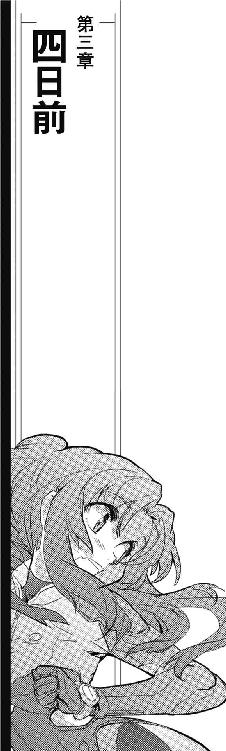
帝国銀行ポルト・セルーナ本店は、商業地区ではなく軍管区にあった。
古いステーションや宇宙都市は、建設された時代や目的、設計思想により様々な構造を持つ。軍港としてポルト・セルーナ最初期に建造された旧中央区画、現軍管区は天空の地下街と言い習わされる効率優先の三次元積層構造だった。
人工重力を発生する巨大な密閉区画の中に居住ブロックを建設する新しい商業区と違い、古い区画は要塞として外部からの攻撃を受けることも想定して分厚い装甲に鎧われている。要塞の奥深く、気密区画で区切られた軍管区は有効スペースのほとんどに必要な施設が詰め込まれており、大型貨物の輸送を想定した中央街路の天井より広い空はない。
「ポルト・セルーナの旧市街より古いところだもんねえ」
ビジネス・スーツ姿でキャリアウーマン風に決めたジェニーは、ぎりぎりＬサイズコンテナが通過出来る程度の寸法しか確保されていない通路の両側と天井から提げられている看板や街路表示を興味深げに見廻した。行き交う軍属や民間人の健康のため、通路の天井で煌々と輝いているのは褪色もしていない太陽灯である。
「要するに、商業地区が整備される前、ポルト・セルーナの最初っから、帝国銀行は司令部と同時に設置されたってこと」
ジェニーは、無骨な古い構造材の間に固定されている看板や大きなドアを見上げた。
「いつ襲われるかもわからない最前線に要塞を建設するなんていったら、もちろん必要な設備から重点的に組んでいくことになるでしょ。ポルト・セルーナは最初っから第七艦隊の整備補給基地として運用される予定だったから、早い段階から艦隊指揮機能を持つ司令部が建設された。そして、大規模戦力を運用するってことはつまり、大規模な経済活動を切り盛りするってことでもある。ポルト・セルーナの帝国銀行って言ったら、今でもうちに一番近い、一番古い、一番大きな支店だもの」
軍管区とはいっても、整備や補給を請け負う民間会社や代理店、軍属や民間人相手の専門店なども入っている区画である。帝国艦隊の関連部署と軍用事務所しか並んでいない殺風景な基地内よりはまだ宇宙都市らしい彩りが看板や店構えに感じられる。
「ポルト・セルーナ建造当初の面影を残す、今だけの貴重な風景よ」
ジェニーは懐かしそうに、巨大建築物の中にしか見えない通路を歩き出した。トレーラーも走り回る商業区画と違って、街路が狭い軍区画では徒歩あるいは小型コミューターでの移動が基本である。
「もっとも一二〇年後の帝国銀行は、とっくにもっと大きくて使い勝手のいい新市街に移転しちゃって、旧帝銀は今は博物館になっちゃってるんだけど、まさか現役で稼動してるここに来れるとは思わなかったわあ」
「それはわかりましたから！」
放っておいたらいつまでも語り続けそうなジェニーを、茉莉香は睨み付けた。
「早く、行きましょうってば！ 今のここは最前線の要塞の、それも軍用区画なんですから！」
茉莉香は、目深に被った船長帽を押さえて辺りを見廻した。
「視線が、周りの人の視線が痛いです!!」
「お似合いです、茉莉香船長」
似合わないビジネススーツ姿のグリューエルは、うっとりと両手を合わせている。
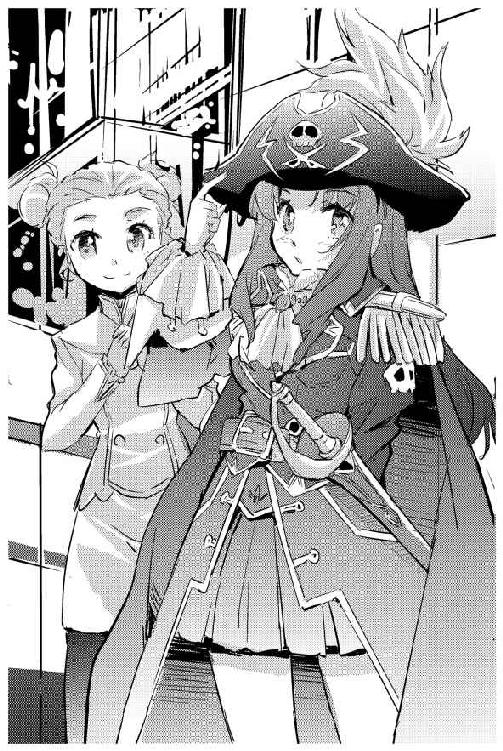
「帝国銀行に海賊船長が乗り込もうというのです。やはり正装で伺うのが世の理でしょう」
「だからそれが問題なんだってば！」
いわくありげな紋章が飾られた大きなドアの前で何か言いたげな警備兵が、ヘルメット内蔵のインカムでどこかに連絡を取っているのが見える。
「銀河帝国の外ってことは、ここはまだ海賊がいてもおかしくない空域で、そこで海賊の格好してるってことはつまりそういうことだって思われたっておかしくないんだから!!」
「ほんとにそう思われてるなら、ここに来るまでに何度も止められているはずです」
携帯火器を肩にかけた警備兵も、行き交う制服姿の視線もすべてはねつけるような笑顔で、グリューエルは言った。
「我々は、昨日までにポルト・セルーナの臨検隊、管制局、情報部とそれから防疫局、軍警察にも挨拶しました。船長がその格好でここまで入ってきても止められないどころかなんの質問も受けないということは、ポルト・セルーナの中でそれなりの情報共有が出来ている状況であると解釈すべきでしょう」
「あるいは、帝国銀行の威光か」
ジェニーも、すれ違う制服姿やスーツ姿の視線のチェックに余念がない。
「未接触文明からの面会申し込みじゃなくて、古い星王家から直々の接触要請ですもの。失礼のないように帝国銀行が関係各方面に通達廻すくらいのことはしてもいいんじゃないかしら」
「大丈夫なんですか？」
茉莉香は、不安を微塵も感じさせないジェニーとグリューエルの横顔を盗み見た。
「だって、帝国銀行に連絡取るのに使ったＩＤは、まだこの世に存在しないはずのお姫さまのものなのに」
「大丈夫ですよ」
グリューエルはにこやかに言った。
「もし、不審な点があれば、星王家の名を騙る偽物として発信元であるオデット号はあっというまに拿捕されるはずです。帝国銀行がその依頼を艦隊に行わず、また、わたくしたちがここに来るまで一切の妨害を受けていないという事実がその証拠です」
「まだ泳がされてるって可能性も」
もごもごと呟いた茉莉香の前で、ジェニーは立ち止まった。天井まで届く太いレリーフで飾られた何本もの石柱の奥によく手入れされた花壇があり、その真ん中に広い石段がある。
「そうね、ここまで無事に来れたからといって、これから先もうまく行くって決まってるわけじゃない。ここが、今日の戦場よ」
石段の上には、いくつもの回転扉があった。
「ここが」
茉莉香は、ごくりと唾を吞み込んだ。
「噂の、帝国銀行」
警備員を兼ねるはずの制服姿のドアマンは、火器を携行していないように見えた。石段を上がってきたビジネススーツと船長服の三人連れに顔色も変えずに応対する。
回転扉の内側は、軍管区の数階層分をぶち抜いたような別空間だった。ポルト・セルーナと同時に建設されたということはそれほど古い建物ではないはずなのに、数世紀前からそこにあるような石作りの巨大なメインホールが幾何紋様を重ね合わせた天井からの間接照明の下に拡がっている。
一面にカウンター、ホールには客待ちのためのベンチの列という一般的な銀行の風景を予想していた茉莉香は、高級ホテルのようにカウンターと両側に喫茶スペースが設えられているだけの光景に目を丸くした。
「これが、銀行ですか？」
「帝国銀行のお客さんが、待合室で順番待ちするとか思ってた？」
ジェニーは、小声で答えた。
「国家や軍や会社相手に商売してる銀行よ。ほら、仮想敵が来た」
「お待ちしておりました」
すらりと背の高い制服姿の案内役が三人、茉莉香たちの前に立った。
「オリオン腕からいらっしゃった、オデット号船長加藤茉莉香さんと伺っております」
「加藤茉莉香です」
営業用の冷静な表情を作って、茉莉香は背筋を伸ばした。
帝国銀行頭取の執務室は、奥にデスクがある広大な部屋だった。壁の両側には飾り棚と本棚、デスクの背後には大きな風景画が飾られているが、おそらく高精密ディスプレイだろう。
「帝国銀行の頭取をしております」
デスクから立ち上がった貴族面は、三人に一礼した。
「リカルド・ユーベルシュタインです」
「オリオン腕、たう星系海明星私掠船オデット号船長、加藤茉莉香です」
ユーベルシュタインの視線が、後ろの二人に注がれた。
「オブザーバーとしてオデット号に乗っています。ジェニー・ドリトルです」
ユーベルシュタインの視線が、グリューエルを捉える。グリューエルは、静かな笑みを湛えてそれに答えた。
「オデット号で通信士をしております。グリューエル・セレニティです」
「では、あなたが、加藤船長を紹介したのですね？」
グリューエルは、ただ微笑むだけでそれに答えた。ユーベルシュタインは、デスクから動かない。
「本題に入る前に、確認しておきたいことがあります」
「なんでしょう？」
「紹介状には、セレニティ星王家の紋章が添えられていました。そして、つい最近星王家の方が帝国銀行の口座を使用しています」
ユーベルシュタインの視線は、セレニティから動かない。
「あなたですか？」
微笑んだまま、わずかに首を動かすことでグリューエルはそれに答えた。
ユーベルシュタインはさらに続けた。
「銀行の仕事は金勘定を除けば二つしかありません。そのうちひとつは疑うことです。紹介状にあったセレニティ星王家の紋章は、どこをどう調べても本物と鑑定されました。しかし同時に、それを使うセレニティ星王家の姫君は存在しないことも確認されました。こんな不躾な質問をするのは非常に心苦しいのですが、この地の帝国銀行の金庫を預かるものとして私はそれをしなければなりません。あなたは、誰ですか？」
茉莉香は、自分がひどく緊張していることに気付いた。後ろに立つグリューエルの表情を見ないようにするには意志力が必要だった。
一息分の間を置いてから、グリューエルは答えた。
「答えられません」
まるでその答えを予期していたように、ユーベルシュタインの表情は変わらなかった。
「では、質問の形を変えます。あなたは、セレニティ星王家の方ですか？」
グリューエルは、微笑んだままわずかに首を動かすことでそれに答えた。
ユーベルシュタインは、じっとグリューエルを見据えている。
「わたくしは、特別な事情があってここにいます」
グリューエルは、静かな声で答えた。
「その事情について、余人に説明することは出来ません。わたくしがなにもので、なぜここにいるのか、それについての質問には答えられません。また、帝国銀行はいつものように秘密を守って下さるものと期待しています」
「なるほど」
ユーベルシュタインは満足げに頷いた。
「その物言い、間違いなくセレニティ星王家の方だ。認めないわけにはいきませんな。目許が、ミスティル王女にそっくりです」
ほんの一瞬、グリューエルの瞳が見開かれた。
「会ったことが？」
「青の姉のヴァージニア宮で、もう半世紀も前のことになります」
胸に手を当てたユーベルシュタインは、敬意の印に頭を垂れた。グリューエルは頷いてそれに応えた。
「王家の口座をすぐに使わせてくれたこと、感謝しています」
顔を上げたユーベルシュタインは笑っていた。
「考えてみれば、あの時点で私たちはあなたがセレニティ星王家の方だと認めていたのです。まさか星王家の方が直々に当行に足を運んで下さるとは思わず、失礼をいたしました」
ユーベルシュタインは、視線を茉莉香に戻した。
「セレニティ星王家のご紹介ともなれば、無碍に扱うわけにもいきません。意向に沿えるかどうかはわかりませんが、ご用件を、伺いましょう」
「ありがとうございます」
茉莉香は、デスクの向こうの頭取に一礼した。ユーベルシュタインはデスクから離れた。
「席を用意しましょう。簡単な話ではなさそうだ」
「ええ、簡単な話ではありません」
茉莉香は、船長服の内懐から懐中時計を取り出して現在時刻を確認した。
「だけど、そのまえに来客を確認して頂けますか？」
「来客を？」
ユーベルシュタインは怪訝そうな視線を茉莉香に向けた。
「この用件が終わるまで、他の客は取り次がないように指示してあります。また、その予定もありません」
「心遣い感謝します」
茉莉香は、閉じた懐中時計を船長服のポケットに戻した。
「事後承諾をお許し下さい。実は、我々はここにもう一人のお客さまを招待しています。もう、ここに到着しているはずです」
ユーベルシュタインの視線がジェニー、グリューエルと動いてから、頭取はデスクの上のコントロール・パネルを叩いた。
「ユーベルシュタインだ。もう一組、お客さんが来ているかね？」
返答は同室者に見えないようにディスプレイにメッセージ表示される。ユーベルシュタインは瞬きしてメッセージを見直した。グリューエルは、表示されたメッセージの内容を知っているように頷いてみせた。
「職業柄、時間には正確だと聞いていますから、心配はしていませんでした」
「お通ししろ」
ユーベルシュタインは、インターフォンに告げた。船長服の茉莉香に目を戻す。
「なるほど、確かに簡単な話ではなさそうですね」
「出来れば、簡単に済ませたいと思っているんですけど」
ほどなく、新たな訪問者が執務室に現れた。
目立たないビジネススーツに、どこといって特徴のないヒューマノイド体型の男は、帝国銀行の頭取と三人の訪問者の顔を見廻して一礼した。
「第七艦隊情報部付き第六課課長、７６１です」
帝国艦隊にまつわる様々な噂の中でも、情報部に関する物は特別に多い。情報部に所属するものは、整形手術を受けて個性を消し、数字だけの名前を使う。致命傷を受けても代替器官が用意出来るように赴任と同時に複製が作られる。情報部員は定期的に記憶、人格データがバックアップされ、死ねばその複製が任務を引き継ぐ。
茉莉香が前日に会った情報部員は、未接触文明が重視されていないことを示すように士官位でもない一般職だった。名前も本名か偽名かはともかく銀河標準語の単語の組み合わせだったし、切れ者ではあったが整形や改造を受けているようには見えなかった。
情報部第六課は対外情報調査分析を専門とする部署で、その課長ともなれば権限は艦隊司令官に匹敵する。そして、数字だけの名前を与えられ、その名で活動するものは情報部の上層部に限られる。
７６１とただ数字だけを名乗った課長は、検分するようにユーベルシュタイン頭取と三人の訪問者を見た。
「......ほんとうに、帝国銀行頭取との面会を取り付けたのですね」
「それが、情報部の方に来て頂くための条件でしたから」
営業用の笑みを湛えて、ジェニーは応えた。
「第六課の専門は対外調査、でしたわね？」
「情報部第六課は、銀河帝国の外側、帝国に属さない空間とその状況の情報収集を任務としております」
薄膜一枚隔てたような眼をジェニーに向けて、７６１は言った。ジェニーは、第六課課長がその顔を光学迷彩か細胞変換で好きなように変えられるのだろうと思った。７６１は無表情に続けた。
「オリオンの海賊を相手にするのは、専門ではありません。どうか、お手柔らかに」
「帝国艦隊の情報部の人が冗談を言うのを、初めて聞きました」
その言葉を相手がどう解釈するか考えながら、ジェニーは穏やかな笑みを湛えて答えた。
「情報の重要性は理解しているつもりです。こちらこそ、この会合がお互いにとって有益なものであることを期待しています」
「では、話し合いの席を用意しましょう」
ユーベルシュタインはデスクの表面に指を走らせた。天然の高密度大理石できめ細かい幾何学紋様を描き出しているように見えた床面が割れて、黒い円卓と白い椅子が現れた。等間隔に円卓を囲む椅子の数は、今執務室にいる人数と同じ五つ。
デスクを離れたユーベルシュタインが、部屋の中央に出現した円卓に歩いてくる。
「何か、飲み物でも用意しますか？」
「ありがとう、しかし不要だと思います」
頭取と情報部第六課課長の顔を見渡して、茉莉香は言った。
「それほど時間がかかる話ではないつもりです」
「それは、よかった」
ユーベルシュタインは、黒いガラスの円卓を囲む白い椅子を指した。
「早く終わる話ほど、うまく行くものです」
勧められるままに、茉莉香、ジェニー、グリューエルは情報部第六課課長に続いて席に着いた。
全員が着席したのを見て、茉莉香は深呼吸してから立ち上がった。
「わざわざ、セレニティ星王家の方に紹介をお願いして帝国銀行と情報部の方にご足労願ったのは、戦うためではありません」
澄まし顔のグリューエルにちらりと目を走らせて、茉莉香は出来るだけ自信たっぷりに見える笑顔を作った。
「我々は、大事なものを売るためにここに来ました。まだ銀河帝国にも属さず、辺境にも与していない貴重な星々です」
頭取と課長の表情は変わらない。茉莉香は、何度も練習した台詞をそのまま口にした。
「今日売り込みに来たのは、十数の星系と五百億の人口をもつ星間文明です」
頭取の視線が、茉莉香からグリューエルに動いて戻った。茉莉香は続けた。
「帝国との本格的な接触はまだですが、異種知的生命体との接触はすでに行われており、経済的交流も行われています。しかし、我々の文明はまだどの勢力にも与しておらず、また異種文明との星間戦争状態にもありません。我々の星間文明は、十数の星系とそれより多い可住惑星を持ち、単一種による経済圏を確立しています」
ユーベルシュタインと７６１、二人の帝国人の顔を見て、茉莉香は言った。
「まるごと、銀河帝国に売りましょう」
ユーベルシュタインと７６１は視線も交わさなかった。
短い沈黙ののち、口を開いたのはユーベルシュタインだった。
「あなた方に、その権限があるのですか？」
ユーベルシュタインは、茉莉香、ジェニー、グリューエルの顔をゆっくり見ながら言った。
「あなた方は、海賊だと聞きました。所属する星間政府が公式に発行している私掠船免状を保持しているというこちらの理解に間違いがなければ、軍に準じる存在とはいえ政治的な交渉を行う権限を有するものではない。なのに、なぜ星間文明を売り渡すなどと言えるのですか？」
「もちろん、それにはそれ相応の事情があります」
話を引き取ったのはジェニーだった。ゆったりと腰掛けたまま両手を膝の上のハンドバッグに置いて、ジェニーは余裕のある顔でユーベルシュタインと７６１の顔を見渡した。
「先ほど、茉莉香船長は我々の星間文明は異種文明との星間戦争状態にはないと言いました。しかし、それは残念ながら我々の文明が平和であるという意味ではありません。我々は、現在、星間文明発祥の星を中心とする勢力と、あとから開発された植民星との間で内戦を戦っています」
詳しい情報については、帝国銀行にはグリューエル経由の紹介時に、情報部には前日の接触の際にオデットと弁天丸が突貫態勢で作ったレポートが渡っている。ジェニーの説明は、当事者による確認くらいの意味しかないはずだった。
「そして、独立戦争を挑んだ植民星側のひとつ、我々の母星でもある鯨座宮たう星で、最終決戦になりうる事態が進んでいます。攻撃側である宗主星の全戦力に近い遠征艦隊が、植民星連合の寄せ集め戦力とごく近い将来に正面衝突するでしょう。戦力比は、残念ながら我々植民星連合にとって敵となる宗主星側が圧倒的有利であり、最悪の場合、たう星系の生命発生範囲にある星が原始惑星に還る可能性もあります」
ジェニーは、ゆっくりと膝の上に持っていたハンドバッグを開いた。
「もちろん、我々の星間文明にも戦争以外に政治というトラブル解決のための手段があります。人口十億の惑星ひとつを灰燼に帰すくらいならば、植民星連合は宗主星に全面降伏する道を選ぶくらいには冷静に損得勘定が出来るくらいの理性も保っています」
ジェニーは、ハンドバッグの中から筒状に丸められた書状を取り出した。
「これが、最悪の事態を避けるための書面です。すなわち、植民星連合の降伏調印文書です」
ジェニーは、丸めて組紐で封緘されている文書を黒い円卓に置いた。
茉莉香たち三人は、ここに至るまでいっさいのボディチェックも持ち物検査も受けていない。帝国銀行の頭取執務室ならば、いちいちバッグの中身を改めなくても内部を見透かすセンサーやスキャナーの類は常備されており、室内の人物が武器弾薬を持っているかどうかは体内までチェックされているはずだった。
そして、銀河帝国の技術水準ならば、閉じたままの本や丸めた書類の内容を読み取ることも簡単である。しかし、真贋までは鑑定出来ない。
「この降伏調印文書には、植民星連合を構成する八つの星系と二つの植民惑星の独立行政府の名前が入っています。日付の欄だけは空白ですが、この書類は我々の星間文明が必要とする政治文書の要件をすべて備えています」
黒い円卓に置いた降伏調印文書から両手を離して、ジェニーは頭取と情報部第六課課長の顔を見た。
「我々の星間文明で有効な政治書類は、もし我々が銀河帝国に組み入れられることになればそこでも有効と判断されるはずです。法制的な議論と手続きは必要でしょうが、我々はそれが政治的に定められた納得出来る手段ならば、平和的に従う用意があります」
「降伏調印文書、ですか」
７６１が円卓に置かれた文書を見たのはほんの短い時間だった。
「だが、その文書に名前を載せているのは、あなた方の言葉通りならばあなた方の文明を構成する政体の半分でしかない。残り半分、あなた方の敵である宗主星を、どうやって銀河帝国に売るのです？」
「力によって」
７６１とユーベルシュタインの顔を交互に見ながら、ジェニーは答えた。
「先ほど申し上げたとおり、鯨座宮には今の我々の文明が持つ過半の戦力が集まっています。もしそこに、我々の星間文明のほとんど全部に近い総戦力をはるかに上回る大艦隊が到達したら、そして、それに対して植民星連合が全面降伏すれば、宗主星は植民星連合だけではなく銀河帝国の大艦隊をも敵に廻すことになります」
ジェニーは楽しそうな笑みを浮かべた。
「植民星連合の敵である宗主星が、我々と同様に損得勘定が出来るだけの頭を持っていることを期待します」
「それによって、我々はどんな利益を得ますか？」
こちらも穏やかな笑みを浮かべたまま、ユーベルシュタインが訊いた。ジェニーは、ユーベルシュタインに視線を据えた。
「あなた方銀河帝国は、一五の星系、五百億の人口を擁する星間文明を、戦わずして銀河帝国に組み入れることが出来ます。我々は、終戦と銀河帝国の庇護のもとの平和を手に入れることが出来ます」
「戦わずして銀河帝国に組み入れることが出来る」
７６１は、ゆっくりとジェニーの言葉を繰り返した。
「そう言いきることの出来る根拠は、なんですか？」
「今、鯨座宮では、我々の星間文明が作り上げた史上最大の戦力が睨み合いの真っ最中です。数にはるかに優る遠征軍は、母星からはるかに離れた場所で、戦力での圧倒的優位を頼りに植民星連合を押し潰そうとしています。そんな状況で自分たちよりはるかに強大な戦力が現れ、しかも目の前の敵である植民星連合はすぐにそちらに降服するのです」
ジェニーは笑った。
「そんな状況で遠征艦隊が戦闘状態に突入するほど単純で馬鹿なら、たぶん我々の戦争ももっと早く終わっていたでしょう」
「希望的観測でしかありません」
７６１もじっとジェニーを見返したまま言った。
「事態が、それほど都合良く進む根拠は、あなたの話からは確認出来ません」
「ええ、それが理性的な判断でしょう」
ジェニーはじっと７６１を見つめている。
「しかし、大艦隊をただ動かすだけで、実際の戦闘なしでまだどの陣営にも属していない星間文明を銀河帝国の版図に組み入れることが出来るのであれば、これは銀河帝国にとってじゅうぶんに試す価値のある作戦だと信じています」
ジェニーは笑って首を振った。
「いえ、それを判断してもらうために、情報部にここに来てもらったのです。帝国の頭脳とも称される情報部なら、きっと正しい判断を下せるでしょう」
ジェニーは、ユーベルシュタインに目を移した。
「我々は、我々の行動が極秘に扱われることを望んでいます。もし、出来ることならば、我々が持ち込んだ情報だけが適切に扱われ、星を売った海賊に関する情報はすべて消去されることを希望します。つまり」
ジェニーは７６１に目を戻した。
「もし、首尾良く銀河帝国が新たな星間文明をその版図に加えることが出来た場合、この成果を帝国銀行と情報部がどのように分け合おうと、こちらはそれにいっさい関知しません」
ジェニーは、ユーベルシュタインと７６１の顔を見て微笑んだ。
「大事なことなのでもう一度言います。我々は、この件に関して、その結果にかかわらずオリオンの海賊の存在が極秘に扱われることを望みます」
ジェニーは同席しているグリューエルに目をやった。
「ここにいるはずのない星王家のプリンセスと同様に」
グリューエルは、すべてを承知しているような顔でうなずいてみせた。唱和するように口を開く。
「結果にかかわらず、です」
７６１の視線がグリューエルに動いた。
「結果とは、どういうことですか？」
「我々は、我々の内戦が銀河帝国の介入により平和裏に解決することを希望しています」
茉莉香は、頭取と情報部第六課課長に言った。
「しかし、もちろん未来は不確定です。こちらが希望するように我々の内戦が終結し、星が傷つくことなく銀河帝国に加わることが出来れば万々歳ですが、そうならなかった場合でも、我々がここに来たこと、ここでこうしてお会いして情報提供を行い、銀河帝国の助力を求めたことは極秘にして頂きたい、そういう意味です」
ジェニーとグリューエルの顔を見て、誰も異論を差し挟まないことを確認してから、７６１はその視線を茉莉香に戻した。
「そうならなかった場合、というのはどういう状況を想定していますか？」
「そうですね......」
茉莉香は、考えるように目を閉じた。
「帝国艦隊がたう星系に到達せず、あるいは到達したとしてもそのタイミングを失っていた場合、植民星連合軍は戦力ではるかに上回る遠征艦隊と戦端を開くでしょう。どれだけ楽観的に見積もっても、その結果はわかっています」
茉莉香は、目を開いた。
「たう星系をめぐる戦いは植民星連合軍のぼろ負けです。戦力を失った植民星連合が出来ることは、降服を申し出ることしかありません。降服がたう星系だけか、あるいは植民星連合軍すべてなのかはわかりませんが、もし適切なタイミングで降服が行われなかった場合、あるいは遠征艦隊が降服を受け入れなかった場合、人口十億の海明星が消えるかもしれません」
茉莉香は、情報部第六課課長の顔を見て言った。
「そして、帝国艦隊出現の前に宗主星が植民星連合を降服させていれば、宗主星は銀河帝国を新たな敵と定めるでしょう。銀河辺境に、反乱軍がまたひとつ増えるかもしれません」
茉莉香は、一息分区切ってから続けた。
「想像でしかありません。もし、適切なタイミングで帝国艦隊の介入が行われなかった場合、我々の星はあまり考えたくない状況になると思います。だけど、もしそうなった場合でも、我々はこの件に関する秘密が未来永劫守られることを期待します」
「それは、つまり」
７６１は茉莉香だけでなくジェニー、グリューエルにも視線を巡らせた。
「帝国銀行、帝国艦隊情報部だけでなく、あなた方海賊も秘密を守るということですか？」
「オデット号がここに来ていることを、他の海賊は知りません」
言ってから、茉莉香は補足すべき事項があることに気付いた。
「正確に言えば、近傍空域に仲間の海賊船がもう一隻だけいます。この二隻が現在行っていることについて知っている宇宙船は、我々の文明には存在しないはずです」
「なぜですか？」
訊いたのはユーベルシュタインだった。
「降伏調印文書を持って、自分たちの文明の外の存在に助けを求めようというのに、仲間にまでそれを秘密にする理由はなんですか？」
「あたりまえです」
茉莉香はにっこり笑った。
「仲間の海賊も噂でしか聞いたことがないような銀河帝国に自分たちの星を売ろうっていうんです。成功しても失敗しても、人聞きが悪いったらありゃしない」
「なるほど」
ユーベルシュタインは笑って、ついでのようにさらりと訊いた。
「それで、あなた方は、自分たちの世界を売る代償に何をお求めですか？」
ユーベルシュタインは円卓の娘たちを見廻した。
「莫大な財産ですか？ 優先的な利権ですか？ あなた方の要求に従えるかどうかはもちろんわかりませんが、でもあなたたちが何を求めて自らの世界を売るのか、ぜひ確認させてください」
「平和を......」
言いかけた言葉を、茉莉香は吞み込んだ。帝国が銀河系宇宙の統一を標榜しているのは安定と繁栄のためである。平和は望まずとも与えられる。
茉莉香は、ジェニーとグリューエルの顔を見た。満足げに安心しているグリューエルの顔を見て、茉莉香は自分が要求すべきことを思い付いた。
「海賊の存続を、認めてください」
「海賊を？」
話を聞いているだけの証拠に、ユーベルシュタインは相づちを打った。７６１の表情が茉莉香でもわかるほど変わった。
「海賊といっても、銀河帝国が目の仇にしている無法者の海賊ではありません」
茉莉香はあわて気味に説明を続けた。
「植民星連合、宗主星からの独立のために戦っている、我々が属している陣営は、星間戦争を少しでも有利に進めるために民間船に少なからぬ数の私掠船免状を発行しています。軍と同等の戦力の保持と運用が出来ますが、その責任は軍組織ではなく個々の海賊船が負っています。つまり、海賊といっても軍に準じる私兵であり、かつて帝国艦隊が戦ったような無法者の海賊とは違う存在です」
「私掠船ですか」
ユーベルシュタインは、興味深げにその言葉を繰り返した。
「しかし、あなた方の陣営が独立戦争のための戦力を確保するために私掠船免状を発行したのであれば、独立戦争さえ終わればそれがどう呼ばれるのであれ、海賊という存在は不要になるのではありませんか？」
「帝国内には、帝国艦隊以外にもいくつもの戦力が存在します」
口を開いたのはグリューエルだった。
「星系政府や星間連合が運用する防衛軍や宇宙艦隊だけではありません。大富豪や企業体が運用する私設艦隊、愛好団体による保存艦隊など、行政の指揮系統に組み込まれていない戦力はいくらでも存在します。オリオン腕に、そういった戦力がほんのわずか増えるだけのことです」
「セレニティ連合王国にも、もちろん自衛のための護衛艦隊がありますね」
７６１の視線がグリューエルに注がれた。
「あなたも、連合王国がもつ戦力以外の力が増えることを望むのですか？」
「帝国銀行と、帝国艦隊の機密保持に期待して、お答えしましょう」
グリューエルはにこやかに答えた。
「ええ、海賊のようにどこの指揮系統にもない、自らの判断で動き回れるものたちが存在することが、時として必要です」
グリューエルは、社交的な話題を振るようにユーベルシュタインと７６１に笑いかける。
「使い方さえわきまえていれば、非正規の戦力がどれだけ役に立つか、銀行の方にも情報部の方にも今さら説明の要はないと思います」
「これが、あなたの持っている力ですか」
７６１は、茉莉香とジェニーを見てからグリューエルに目を戻した。グリューエルは笑顔のまま答えた。
「親しい友人としてお付き合い頂いております。それに、役に立つものはなんでも使えというのが、うちの家訓ですので」
「役立つものを選り好みするな」
ユーベルシュタインが暗誦した。
「この宇宙に、役立たないものなど存在しない。なるほど、星王家の家訓は実戦的だ」
わずかに首を傾げて、グリューエルはユーベルシュタインの顔を見直した。ユーベルシュタインは訳知り顔でうなずいてみせた。
「よろしい、詐欺にしてはディテールが甘すぎるし海賊が持ってくるにしては話が御都合主義に過ぎる。検討に値する話だと思います。少なくとも、この頭取はあなた方の話を信じましょう」
「ほう？」
７６１の視線がはじめて同席するユーベルシュタインに向けられた。
「帝国銀行頭取ともあろうあなたが、こんな話に乗るんですか？」
「得られるものが大きい」
ユーベルシュタインも７６１を見返した。
「一五の星系と五百億の人口を擁する経済圏といえば小さくはない。そしてなにより期待出来ることは、この文明はまだ銀河帝国に敵愾心も抱いておらず、どんな利権にも侵されていないということだ。話通りならば大艦隊を動かす手間は必要だが、大規模な全面戦闘に発展する可能性は低い。辺境の反乱軍と戦線を維持する手間と費用を考えれば、コストパフォーマンスは近来の物件では考えられないほどのものですよ」
「しかし、まだ正式な接触もしていない星間文明が相手では、情報の信頼性がない」
「これだけうまい話だ、多少の危険が伴うのはしょうがないでしょう」
ユーベルシュタインは、グリューエルに目をやった。
「金勘定以外の銀行屋の仕事は、疑うことと、もうひとつ、信用することです。結果の如何にかかわらず全てを秘密に、と希望する相手だ。帝国銀行が、とお約束は出来ません。しかし、私はあなた方の話を信用することにしましょう」
「感謝します」
グリューエルは静かにうなずいた。
「これからも、帝国銀行が信用出来る取引相手であることを希望します」
「ひとつ、重要な問題があります」
茉莉香は、頭取と情報部第六課課長の顔を見た。
「先ほども説明したとおり、宗主星の遠征艦隊は植民星連合軍の総司令部がある鯨座宮たう星系の惑星への総攻撃の準備を整えつつあります。信頼すべき情報によれば、総攻撃が開始されるのは今日を含めて四日後」
茉莉香は、注意深く計算した銀河標準時に換算した数字を口にした。
「遠征艦隊が植民星連合軍と戦端を開く、その瞬間までに帝国の大艦隊がたう星に到着しなければ、我々の文明に少なからぬ損害が出るおそれがあります」
「......四日後？」
７６１の表情が変化した。
「四日以内に、オリオン腕内の当該空域に、内乱中の星間文明の全戦力を凌駕するような大艦隊を集結させろと？」
「理解が早くて助かります」
茉莉香はうなずいた。
「現在判明している宗主星の遠征艦隊は正面戦力八〇〇隻、補助艦艇、補給船を含めた総数は一五〇〇隻に上ります。それに対する植民星連合の戦力は合わせて六〇〇隻に届くかどうかというところです。我々の文明の総力に等しい戦力ですから、これを数だけで戦意喪失させるような大艦隊を希望します」
茉莉香は、ちょっと考えるふりをした。
「そうですね、戦艦、巡洋艦級の正面戦力で二〇〇〇隻、補助艦艇も合わせて全部で五〇〇〇隻もあれば、我が陣営のみならず宗主星の遠征艦隊も簡単に手を上げるでしょう」
「無理だ」
７６１は低い声で首を振った。
「話にならん。もっと時間の余裕があればともかく、銀河の全辺境で戦線を展開中の第七艦隊のどこをどうつついてもそんな大艦隊を揃えることは出来ない」
「ええ」
茉莉香は、すべて了解している顔を作ってうなずいてみせた。
「辺境担当の第七艦隊はお仕事に忙しくて、たとえ半日でもオリオン腕の一星系にその全戦力の五パーセントも集中させることは難しいでしょう。でも、たとえば、帝国内を作戦範囲とする第五艦隊ならいかがでしょう？」
茉莉香を見る７６１の眼が数段鋭くなった。
「......なるほど、銀河帝国の内情もある程度はご存知なわけだ。残念ながら第五艦隊の担当空域は銀河帝国内、まだ銀河帝国の版図にもない辺境区ではない」
「ええ、もちろん、艦隊が担当空域を出るにはそれ相応の理由が必要でしょう」
茉莉香は、７６１とユーベルシュタインを交互に見た。
「だから、その理由はこちらで作ってさし上げようと思います」
ユーベルシュタインがふむふむと楽しそうな顔で訊いた。
「どうするんです？」
「簡単です。艦隊が速やかに出動する理由はひとつしかありません」
茉莉香は、すうっと息を吸った。
「海賊船オデット号は、植民星連合を代表して銀河帝国に宣戦布告します」
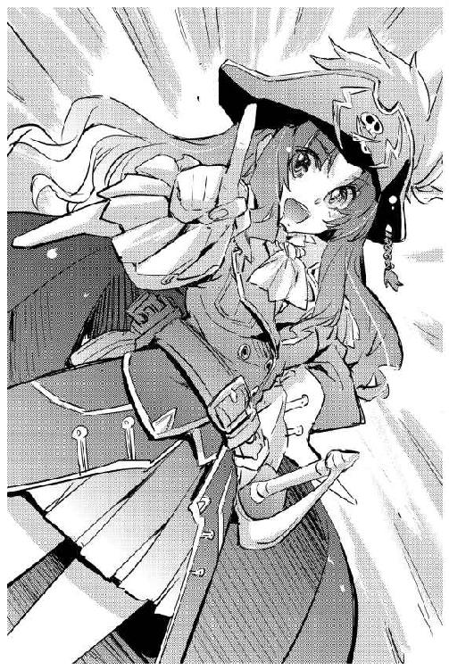
「やることはやったわよ！」
茉莉香は、船長服のマントが翻るような勢いで早足で先頭を切っていた。
「素敵でした茉莉香船長」
後ろに続くグリューエルは両の手を胸の前に握り合わせている。
「帝国銀行頭取と情報部を目の前にしての宣戦布告、記録に残して後世に残せないのが残念です」
「やめてってば」
「たぶん、帝国当局を目の前にして口頭で宣戦布告した海賊って、歴史上はじめてじゃないかしら？」
腕を組んで考えながら歩いているジェニーに、茉莉香はくるりと振り向いた。
「だから、その話はもうお終い！」
「あら、ほんとにかっこよかったのに。うちのヨット部員と弁天丸の乗組員に見せられなかったのがもったいなかったくらい」
「銀河帝国に降服してみせるには、降伏調印文書見せるだけじゃなくってちゃんと宣戦布告しておかないと星間法上の体裁が整わないって、宣戦布告してみせたのはそれだけが理由です！」
後ろ向きに歩きながら、茉莉香はその問題を最初に指摘したグリューエルに目を走らせた。
「それに、すべてはうまく行っても行かなくても極秘！ 間違っても、未接触文明の海賊風情が銀河帝国に宣戦布告したなんて、記録も残らないはずです！」
くるりと背を向け、再び早足で歩き出す。
「だからもったいないんじゃない、ねー」「ねー」
ジェニーの台詞に、最後の一節だけグリューエルが唱和する。
「茉莉香船長の一世一代の大芝居、このまま闇に沈めるにはあまりにも惜しいと思います」「思いまーす」
「うまくいったっぽいんならそれで充分です」
茉莉香は先を歩き続ける。
「今さら、やっちゃったことについてあれこれ検討してる時間なんかありません。とにかく次、動き出さないと、三日以内にたう星系にこっちの戦力をはるかに上回る帝国艦隊を集結させるなんて絶対出来ないんだから」
「おかげで、なんか出来そうな気がしてきたわ」
ジェニーはふと立ち止まった。
「先行ってて、すぐ追いつくから」
「どうしたんですか？」
茉莉香が振り向いて訊いた。ジェニーは、街角にある通信ショップを見ている。
「ちょっと、買い物思い出したの。連絡チャンネルは確保しておいた方がいいと思うから、通信端末買っていくわ。全銀河で使えるやつ」
「口頭で、銀河帝国に対する宣戦布告を受けた帝国軍人はそう多くないでしょう」
三つの椅子が空席になった円卓に残った情報部第六課課長に、頭取は話しかけた。
「あなたで、何人目くらいですか？」
「記録に残らない宣戦布告では問題になりません」
７６１は静かに答えた。
「街角の喧嘩で相手に吐く悪口雑言程度のものでしょう」
「売り言葉に買い言葉ですか」
ユーベルシュタインはうなずいた。
「しかし、ここに残ったということは、あなたは売られた喧嘩を買うつもりだ。違いますか？」
「艦隊は、帝国の安定と繁栄のために存在します。そして、それはすなわち利益だ。最少の手間で最大の利益を上げられる機会を目の前に置かれて何もしなければ、職務怠慢と誹られても否定出来ない」
「すべてを秘密にすると約束されても？」
「あなたが知っている」
７６１は、薄膜越しのような視線を頭取に向けた。
「秘密は、知るものが多くなるほど破られる危険性を増す。そして、あの海賊たちは、利用するはずのこちらに対しても最大限の安全性を保障しようとした。だからでしょう、帝国銀行頭取ともあろう方が信用するなどと吐くはずのない言葉を口にしたのは」
「そうでもありませんよ」
ユーベルシュタインは、椅子から立ち上がった。
「存在しないはずの姫君も含めて、彼女達の態度と物言いは、明らかにこれが今回限りの交渉ではなく、長期に渡る関係を持つことを前提にしていました。それに気付いていたからこそ、あなたも私もこの部屋を出ていく彼女達を笑顔で見送ったのではないですか？」
「少なくとも、この港を出ていくまでは笑顔で見送りましょう」
７６１も、椅子から立った。
「我々が仕事をはじめるのはそれからだ」
「情報部の方相手にこんな話を持ちかけるのは無駄かもしれませんが」
ユーベルシュタインはテーブルに手を付いた。
「どうでしょう。ひとつ、賭けをしませんか？」
「情報部のものに賭けを持ちかけるとは無謀な。どんな賭けです？」
「あの海賊たちの無謀な企みが成功するかどうかに。帝国艦隊を動かすだけで未接触文明が帝国の版図に加わるなら、これほど楽な仕事はない。だから、失敗した時のために賭けでもしておけば、せめてもの慰めになります」
「残念だが、その賭けは成立しません」
７６１は、ドアに向かって歩き出した。
「わたしも、もし賭けるなら失敗する方にしますよ。この件に関しては我々の利害は一致している。情報部としては、機密保持に努めることとしましょう」
「では、銀行屋も職務を全うすることにしましょう。ご心配なく、今の会合は記録から消しておきます」
「感謝します」
北港発のシャトル便で、茉莉香たちは海賊船オデットに戻った。
初接触プロトコルによる調査はまだ開始されたばかりなのに、茉莉香たちの帰還直後に海賊船オデット号は一方的な事情を理由に目的地を告げぬままポルト・セルーナから緊急発進した。
第七艦隊情報部が、オリオン腕から来た海賊を全艦隊に対して緊急指名手配したのは、オデット号とその同族と見られる偽装輸送船がポルト・セルーナの管制空域から消えた直後のことだった。
「弁天丸とのドッキング完了」
海賊船オデット号のメインブリッジでチアキが報告した。
「弁天丸のブリッジクルーが乗船許可求めてますって」
「こんな時でもカタいんだから、うちのクルーったら」
苦笑いして、茉莉香は船長席のコントロール・パネルに指を走らせた。
『こちらオデット号メインブリッジ、加藤茉莉香です』
茉莉香は、イヤホンマイクを船内放送のチャンネルに繫いだ。
『弁天丸乗組員の乗船を歓迎します。いいから早く来て、これからどうやって帝国艦隊相手にするかの作戦会議なんだから！』
ポルト・セルーナの管制空域を出たオデットと弁天丸は、銀河帝国の外縁に程近い恒星間空域に跳んでいた。
帝国と辺境の間に、明確な境界面が設定されているわけではない。境界近傍の星系が銀河帝国に帰属するかそうでないか、防衛識別圏がどれだけ広く設定されているかが境界面の目安になる。
星系周辺では哨戒網は厚く、恒星間空間や無人星系近傍では薄くなる。銀河系内でも宇宙空間は希薄であり、銀河帝国として設定されている空域内への侵入はそれほど難しくはない。
ポルト・セルーナでの事前調査で最新の状況と偽装のためのトランスポンダーＩＤを手に入れたオデットと弁天丸は、帝国艦隊による定常的な哨戒活動が行われていない恒星間空間を選んで跳躍した。
通常空間への復帰後、周辺空間を走査して脅威がないことを確認した二隻は、乗員移乗のためにドッキングした。海賊業務になれている弁天丸から延ばしたボーディングブリッジをオデットに結合し、気密を確認してドアが開かれていた。
「茉莉香船長！」
通信席のグリューエルが、ディスプレイを見たまま声を上げた。
「帝国艦隊の定時連絡、全艦隊向けの最新情報更新確認しました。本日付の第七艦隊発全艦隊向け通達一二六七号で、オリオン腕の未接触星間文明の海賊オデット号が銀河帝国内に侵入、要注意という警報が出てます」
「第七艦隊の情報部は、めでたくあたしたちを海賊として全艦隊に知らせてくれたわけだ」
茉莉香は満足げな顔で頷いた。
「で、その通達って緊急度どれくらい？」
「緊急度３ｂ。ええと、上から七番目くらいですか？」
全銀河の帝国艦隊向けに配信される通達は、毎日数千以上の数になる。すべての通達は重要度によってランク付けされており、最重要にランクされる通達は年に何回も出るものではない。
「どっかの空域で嵐だとか、行方不明の宇宙船が出たくらいの扱いね。最初っからあんまり緊急度上がってると厳重にマークされちゃうから、最初はこれくらいでいいわ。大丈夫、これからやることやれば、ちゃんと緊急度も上がるはずだから」
通信席から船長席に転送された第七艦隊発の本日付通達一二六七号を表示させて、茉莉香はブリッジに集まったクルーたちの顔を見廻した。
「これで、オデットや弁天丸が帝国領内でなんかやっても、照会さえすれば正体不明の犯罪者の仕業じゃなくてちゃんとオリオン腕から来た海賊の仕業だってわかるようになったわけ」
「はい、海賊のお着きだ」
百眼を先頭に弁天丸クルーがメインブリッジに入ってきた。教師や校医として白凰女学院に来て、練習航海にも参加しているケインやミーサにはきゃっきゃと挨拶していたヨット部員たちも、最後のシュニッツァーの巨体にはどよめく。
ざわめきが収まらないうちに、船長席の茉莉香はマイクのスイッチを入れた。
『えーと、お互い今さら紹介の必要はないわよね。時間がもったいないから作戦会議をはじめます。現在位置表示して』
「明かり、消します！」
チアキの声と同時に、メインブリッジの通常照明が落とされた。中央に、棒渦巻銀河系宇宙が立体表示で浮かび上がる。
星雲の表示が、何人ものヨット部員と弁天丸乗組員に重なっている。
コントロール・パネルに指を滑らせて、船長席の茉莉香は立体表示を動かした。
『今、ブリッジに映し出してるのがオデットの現在位置を中心とした銀河系です。これだけ大きいとたう星系も植民星連合もぜんぶ同じようなところにあるけれど、これからいっぱい跳んでいっぱいお仕事しなきゃならないんでこんな表示になっちゃいます』
茉莉香は、星だけが表示されていた立体表示に説明のための表示を追加した。渦状銀河の内側を囲むように緑色の曲面の壁が表示される。
『緑の障壁の内側が、今の銀河帝国です。あたしたちが知ってるのよりちょっと小さいけれど、これくらいのスケールならあんまり変わりません』
茉莉香は、船長席のコントロール・パネルを走査した。渦状銀河を映し出した立体表示が、オリオン腕を中心に拡大される。
茉莉香は、ブリッジの中央に銀河帝国の領空を示す緑色の壁が来るように表示を調整して、その一点を青く点滅させた。
『ここが今、あたしたちがいるところ。現在位置は、今の銀河帝国の領空のぎりぎり外側です。近所に有力な星系がない空域だからすぐになにかに見つかる、みたいなことにはならないはずです。だからってゆっくりしてられるわけでもないんだけど』
ブリッジ内、向かい合うように配置されているコントロール・シート内側いっぱいに表示されている渦状銀河を、茉莉香は銀河中心からオリオン腕までの部位が見えるように拡大した。
『みんなも知っている通り、七つの帝国艦隊はそれぞれの担当空域が決まっています。帝国の外側全部は第七艦隊、第一艦隊は聖王家専用の近衛艦隊で、核恒星系を東と西の二つに分けてる第二、第三艦隊、外縁部は三つに分けられて四、五、六の担当』
茉莉香は、立体表示されている銀河系宇宙の内側のそれぞれの艦隊の担当空域を虹の七色で色分けした。
『未来のオリオン腕は第五艦隊の担当ですが、今は銀河帝国じゃないから外側の担当は第七艦隊です。でも、辺境担当の第七艦隊は今進行中の作戦に忙しくって、残念ながらたう星系に大艦隊を廻してくれるような余裕はなさそうです。だから、狙うのはここ』
茉莉香は、ポインターモードに調整したビームガンを立体表示に向けてトリガーを引いた。無音のまま延びた細いビームが、薄い紫色に覆われた空域を貫く。
『一番近い銀河帝国は、未来でもお馴染みの第五艦隊の担当空域です。オデットと弁天丸はこれから銀河帝国内に入って、第五艦隊にちょっかいかける予定です』
笑いがブリッジに満ちた。ポインター代わりのビームを動かして、茉莉香は続けた。
『今の帝国は海賊相手の掃討戦争が終わってずいぶん経ってるから、海賊なんかいないことになってます。その状態の帝国艦隊に海賊を名乗って戦闘を仕掛ければ、ムキになって追っかけてきてくれるはず、って、予定通りうまくいけばいいんだけど』
茉莉香は、長さを調節したビームポインターを立体表示の一点で止めた。
『ここから一番近い第五艦隊の補給基地はここ、ヴァンファーレの艦隊母港。ここを最初の目標にして大艦隊を引きずり出して、たう星系までご案内しようと考えてます。なにか意見はありますか？』
ポインター代わりのビームを消して、茉莉香は銀河系の立体表示の明かりに照らし出されるブリッジを見廻した。
上下に巡った視線が止まった。ブリッジの入り口近く、壁のバーに片足の爪先を引っかけて浮いていたシュニッツァーが発言を求めるように片手を挙げていた。
『......シュニッツァー？』
茉莉香はいささか緊張した声でその名を呼んだ。
「弁天丸で戦闘指揮をしている、シュニッツァーだ」
発言を許可されたことを確認するように、腕を組んだままのシュニッツァーは口を開いた。
「我々は、たう星系に集まった遠征艦隊と植民星連合の戦意を削ぐに充分な大艦隊を引きずり出さなければならない。そのためには、ある程度わかりやすい逃走ルートを取る必要がある」
組んだ腕を解いたシュニッツァーは大きな右手の人差し指を伸ばした。指先から、ポインター代わりのビームが延びる。
ビームは、緑の壁と重なるように輝く現在位置から辺境に移動した。
「ここが我々の現在位置。そして、ここが帰るべきたう星系。となれば、我々はまっすぐたう星系に向かう軌道で逃げるのが望ましい」
シュニッツァーのビームはたう星系から反転してまっすぐに銀河中央を目指した。
「出来る限り奥まで行こう。そして、出来る限り大きな目標を叩いて逃げる」
シュニッツァーの指先から放たれたビームが、第五艦隊担当空域の奥深い一点で止まった。
「ガンバルト」
茉莉香は素早くコントロール・パネルを叩いてビームが指し示す一点をズームアップした。情報表示を重ねる。
「サジタリウス腕、ガンバルト星系──」
必要情報を読み上げる茉莉香の声がわずかにかすれた。
「帝国、第五艦隊総司令部」
「ずいぶん奥ね」
チアキの冷静な声がブリッジに聞こえた。
「そんな銀河帝国の奥まで入り込んで、期日までに、遠征艦隊と植民星連合の最終決戦がはじまるまでにたう星系に帰ってこられますか？」
「オデットの跳躍性能は知っている」
指先のポインターを消して、シュニッツァーは答えた。オデットⅡ世は、かつて海賊船と船団を組んで辺境宇宙を長距離航行したことがある。
「ガンバルト到着まで一日、たう星系の帰還に二日半」
シュニッツァーの答えを聞いたチアキがキーボードで数値を打ち込んだ。シュニッツァーは続けた。
「ガンバルトの総司令部を叩いて、そのまままっすぐ帰ってきたら追跡側を振り切ってしまう心配があるし、また追ってくる戦力が足りないかもしれない。相手側にこちらの逃走ルートと意図をわかりやすく説明するために、逃走軌道上の艦隊の要衝は叩いていった方がよい」
シュニッツァーは左手の指を拡げた。人差指から小指まで、四本のビームポインターが銀河系の立体表示に延びる。
「ガンバルト、ファイフィールド、ヴァンファーレ、ポルト・セルーナ」
左手の指先から延びるビームポインターで銀河の四個所を正確に指し示したシュニッツァーは、右手の人差指から延ばしたポインターでそれらを結ぶ直線を引いてみせた。
「そして、たう星系。今回の作戦のためには、この軌道が最適だと考える」
「プレゼン能力、高っ！」
両手合わせて五本のポインターを操るシュニッツァーに、電子戦席のリンが呟いた。
「いきなり第五艦隊司令部かあ......」
船長席の茉莉香が、緊張をほぐすようなのんびりした声を上げた。
「そりゃまたいきなりすんごい攻略目標が出てきたもんだわねえ」
「本当はもっと最適な目標があるが......」
「どこです？」
訊いた茉莉香に、シュニッツァーは指先のビームポインターを星図の隅まですっと移動させた。
「核恒星系、統合参謀司令部」
銀河帝国の中枢、帝国艦隊の最上層部を示す説明が星図に重なった。ブリッジが静まりかえった。
「だが、ここまで足を延ばすと期日通りにたう星系に帰ってこれない」
シュニッツァーは続けた。
「弁天丸一隻なら期日までの往復は可能だが、オデットの超光速ブースターで跳躍を刻んでいては間に合わない」
老齢の旧式艦とはいえ最初から超光速宇宙船として建造され、主機まで換装している弁天丸と違い、オデットⅡ世は亜光速宇宙船として建造された。超光速ブースターを装備することで超空間跳躍が可能になったが、その性能は弁天丸に劣る。
「そっか......」
くちもとに手を当てて、船長席の茉莉香はじっとブリッジに浮かび上がる銀河系を見つめた。
『わかった』
茉莉香の拡声された声がブリッジに流れた。
『じゃ、弁天丸は一隻で統合参謀本部襲いましょう』
ブリッジの静かな空調の音だけが聞こえた。返事がない。茉莉香は続けた。
『要するに、銀河帝国にたう星系まで来てもらってから降伏するためには、その前に銀河帝国ときっちり戦争しなきゃならないってことでしょ。それも、宣戦布告なんて型式上の儀式だけじゃなくて、実際に相手に戦争だと思わせないと、たう星系に集まってる戦力を軽く凌駕するような大艦隊なんて引っ張り出せないわ。大丈夫、銀河帝国と戦争するのはこの三日間だけ、二〇年も続いてる独立戦争に比べればすぐだから』
銀河系宇宙から顔を上げた茉莉香は、ブリッジを見廻した。
『オデットは、ガンバルトの第五艦隊司令部を襲ってから、さっきのシュニッツァーの提示してくれたルートを跳んで艦隊を引っ張り出しましょう。ええと、ファイフィールドって、大きな基地があるわけじゃないわよね？』
「第五艦隊の演習空域がある。ちょうど今、基幹艦隊が演習中だ」
シュニッツァーは平然と答えた。茉莉香はシュニッツァーを見た。
『どうだろう、せっかく戦力が二隻もあるんだから、片っぽは核恒星系の艦隊司令部まで跳んで、もう片方は第五艦隊の空域で暴れ回る方が、より確実に大艦隊引っ張り出せるって考えたんだけど、戦力は分散しない方がいい？』
「勝つためには、戦力の分散は愚の骨頂だ」
シュニッツァーは答えた。
『だが、今回の作戦の肝要は勝つことではなく、敵の戦力をより確実により多く引っ張り出すことだ。帝国艦隊を引きずり出せなければ我々の負けが決まっている以上、そのための手駒は多い方がいい。艦隊を襲う機会が多ければ多いほど、艦隊をより確実に引きずり出すことが出来る。オデットと弁天丸が別個に行動していれば、もしどちらかが失敗しても最終的な成功率が高まる』
両手のポインターを消したシュニッツァーが腕を組んだ。
「わかった、弁天丸は核恒星系まで跳んで統合参謀司令部を強襲しよう」
おーっとヨット部員たちがどよめいた。茉莉香も腕を組んでわざとらしく考え込んだ。
『さてその場合、あたしはどっちに乗らなきゃならないか』
「オデットⅡ世から降りるの!?」
話を聞いていたミーサが声を上げた。
「あなたこの船を無事にたう星系に帰すんじゃなかったの!?」
『もちろんそのつもりだけど、統合参謀司令部に喧嘩売る海賊船の船長が代理って、いろいろまずくない？』
「弁天丸にお乗りなさい」
言ったのはチアキだった。
「弁天丸の足の速さなら、オデットがガンバルトに到着して第五艦隊司令部を相手にするより早く統合参謀司令部を襲って、逃げてこれるでしょう」
『おお！ その手があった!!』
茉莉香は嬉しそうに手を叩いた。
「先に統合参謀司令部叩いてからこっちと合流して」
チアキはキーボードを叩いて弾き出したスケジュール表を船長席に廻した。
「たぶん、ガンバルト、遅れてもその次のファイフィールド辺りでこっちに追いつくんじゃないかしら？」
『でも、オデットだけで第五艦隊司令部、大丈夫？』
「あー、わたしがこっちに乗るわ」
手を挙げたクーリエが、やる気のない声で言った。
「どうせこの船じゃどんぱち出来ないんだから、電子戦仕掛けて相手を怒らせるくらいしか出来ないんだから。それと、サイレント・ウィスパー置いてって。この船とあの子がいれば、たいていのことが出来るわ」
『えー？』
さすがに驚いた顔で、茉莉香はクーリエを見た。
「使えるスタッフもいるしね」
クーリエは、分厚いメガネを電子戦席のリンに向けて手を振った。
「手伝ってくれるでしょ」
「承知！」
即答したリンが親指を立ててみせた。
「わたしもこっちに乗った方がよさそうね」
ミーサが言った。
「万が一の事態のためには、若い子たちが多い方に医者が乗ってる方がいいでしょう。生徒たちだけで戦争やらせるわけにも行かないし、ここの医務室なら勝手もわかってるし」
『わかった。それじゃ、クーリエとミーサはオデットに乗って、弁天丸から必要なスタッフがいれば連れて行って。あたしは弁天丸で銀河中央の統合参謀司令部にご挨拶してきます。あたしがいない間のオデットの船長代理は』
茉莉香はブリッジを見廻した。電子戦席のリンに何事かささやいていたジェニーに目を止める。
『ジェニー先輩、お願い出来ますか？』
「ごめん、わたしも弁天丸に乗せて」
電子戦席から離れたジェニーが、船長席に跳んできた。
「たぶん、オデットにいるより弁天丸にいる方が役に立つと思うから」
茉莉香はジェニーの顔を見た。うなずく。
「わかりました。それじゃ、グリューエル」
「残念ですが、お引き受け出来ません」
グリューエルは笑顔で首を振った。
「この戦いは、皆さんの星の未来を守るためのものです。この船の指揮は、植民星連合の人が取るべきだと信じます」
茉莉香は、もう一度ブリッジを見廻した。
チアキと目が合った。チアキは驚いた顔で茉莉香を見直した。茉莉香は微笑んだ。
「じゃ、チアキちゃん、オデット号の指揮取って」
「えー!?」
チアキは抵抗の声を上げた。
「無理よ、わたし船長資格なんか持ってない！」
『大丈夫、船長やってほしいのは白凰女学院の練習帆船オデットⅡ世でも、植民星連合の海賊船白鳥号でもない、どこにも存在しないはずの海賊船オデット号だから』
茉莉香はにっこりうなずいた。
『銀河帝国相手に戦争しようなんて言ってる時に、星間法なんかに従ってられるもんですか』
くちをぱくぱくさせていくつかの抗議案を検討してから、チアキはブリッジを見廻した。茉莉香はレーダー／センサー席のチアキに両手を合わせた。
『あたしが戻ってくるまで、ヨット部のみんなとこの船お願い、チアキちゃん！』
「ちゃん、じゃない」
歯を食いしばったまま、チアキは答えた。
「わかったわよ、その代わり出来るだけ早く無事に帰ってくること！ 遅れたりドジ踏んだりしたら承知しないからね」
『ありがとチアキちゃん！』
手を合わせて、茉莉香はチアキに頭を下げた。
『それじゃみんな、戦争準備開始！』
ブリッジがどっと湧いた。
「帝国相手に戦争しようっていうのに、このノリは弁天丸にはないわねー」
呟いたクーリエは、船長席に跳んでいった。
「なあ、ケイン」
百眼は船長席でミーサやクーリエと打ち合わせをはじめた茉莉香船長を遠目に眺めていた。
「なんだ？」
ケインがオデットの乗組員たちを見る目線は、教師役をしていた時のものに近い。
「おれたちの船長って、大物だったんだな」
「なんだ、気付いてなかったのか？」
「大したタマだたー思ってたけどよ、まさか銀河帝国相手にほんとに戦争仕掛けるとは、ねえ」
「おれたちゃその大海賊の手下ってわけだ」
ケインは生徒を見る教師のような顔で言った。
「キャプテン・ジン以来の大海賊って歴史に名前を刻みたいところだが、それが出来ないのが残念だねえ」
「歴史の登場人物になるなんて、そんな厄介事はごめんだぜ」
百眼はヨット部員だらけのブリッジを見廻した。
「けど、あの船長の下に付いてる限りは、そういうえり好みしてる余裕はなさそうだな」
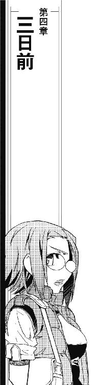
銀河帝国艦隊指揮系統最上位に位置する統合参謀司令部は、銀河系の中央、星が密集する核恒星系に位置する。
神話ではなく、確認出来る聖王家の膨大な家系図の最初の巻に登場するファースト・アーサーは、古い文明が群雄割拠する核恒星系をほぼ統合するまでしかその野望を達成出来なかった。ファースト・アーサーが崩御したときすでに銀河最大の戦力となっていた帝国艦隊は、そのころはまだナンバーズ・フリートではなく、ただひとつの艦隊として編成運用されていた。
帝国が大きくなり、所属する艦艇の数が増大するにつれ、艦隊司令部の役割も変化していった。
銀河は広大であり、戦況は光速で変化する。戦闘が政治形態のひとつであり、艦隊が政治的手段のひとつである以上、その果たすべき役割も刻々と変わっていく。
半径数千光年の範囲に撒き散らされた多数の艦艇を中央艦隊司令部で一括指揮する運用形態は、様々な問題を生んだ。
いくつもの試行錯誤ののち、艦隊はその役割と母港を中心とした担当区により分割された。
聖王家直属の近衛艦隊は早い段階で独立していた。核恒星系を守護する銀河帝国艦隊は、版図防衛のための護衛艦隊と境界面上及び外部で戦う攻撃艦隊、双方を支える補給艦隊を中心に再編成された。
時代は変わり、帝国艦隊は何度もの再編成が行われた。現在のように七つのナンバーズ・フリートとそれを運用するための各艦隊司令部、全てを束ねる統合参謀司令部という形態はもう数百年以上も継続されているが、細かい修正は絶えず行われている。
各艦隊の担当区についても、聖王家護衛のための近衛艦隊である第一艦隊、核恒星系を東西に分けて守護する第二、第三艦隊に関しては固定されている。しかし、外縁部を三つに分ける第四、第五、第六艦隊、さらに銀河帝国外を作戦空域とする第七艦隊の担当区は年ごとに変更がある。
全帝国艦隊の頂点に君臨する統合参謀司令部は、帝国の全艦隊を把握し、全戦力を運用する。しかし、銀河帝国中央である核恒星系に位置する統合参謀司令部そのものを守護する艦隊はそれほど大きくない。
統合参謀司令部を守護するのは、聖王家を守護する近衛艦隊でもある第一艦隊である。しかし、統合参謀司令部そのものが銀河系核恒星系中央の奥深くにあり、銀河系外からの大戦力の投入は困難と見られていたこともあり、護衛戦力そのものは最前線の基地ほどには充実していない。
その日、戦闘指揮よりは権謀術数司令部と揶揄される統合参謀司令部に、久しぶりの非常警報が超光速回線を通じて鳴り渡った。
『こちら宇宙大学調査船、キュリオシティ！』
救難信号は、超光速跳躍中の宇宙船から画像通信で統合参謀司令部に届いた。
『現在、帝国外オリオン腕の海賊に追われて逃走中、助けて！』
リアルタイム画像通信と同時に、繰り返し設定されたデータも受信された。高密度に星が位置する核恒星系において、可能な限り重力の影響を避けるために恒星間空間に置かれた統合参謀司令部近傍空間、秩序正しい銀河帝国核恒星系ではもはや名目となりつつある、防空識別圏内へのタッチダウン申請である。
タッチダウン申請は管制局により自動で許可された。同時に、救難信号は自動的に緊急迎撃司令に変換され、統合参謀司令部の周辺空間を哨戒中の直衛艦隊がタッチダウンポイントに急行する。
統合参謀司令部直衛の護衛艦隊は、高速の機動巡洋艦を中心に編成されている。中央だけに艦齢も若い、新しい艦が重点的に配備され、実戦さながらの任務で実用性を確認される。馴らし運転隊または振り回し隊と仇名される第一艦隊直属の護衛艦隊が当該ポイントに到着した時、宇宙大学所属の調査船キュリオシティはすでにタッチダウンを完了して、通常空間に復帰していた。
最初にキュリオシティを確認した二隻の最新型タイロンＴＸ級高機動重巡洋艦は、近傍空間に複数の前跳躍現象を確認していた。数十万キロ四方に四つ、高重力源である恒星が高密度で配置されている超光速跳躍で追撃戦となれば、跳躍誤差は驚異的に少ないと言える。
調査船キュリオシティは、通常空間復帰後も救難信号を発信していた。キュリオシティと直接交信した統合参謀司令部管制局は、複数と推測される仮想敵のタッチダウンポイントに対する迎撃を艦隊に司令、それとは別に救難船を現場に急行させた。
キュリオシティに続いてタッチダウンしてきた未確認飛翔体は、通常空間に復帰すると同時に猛烈な妨害電波を全方位に発射、さらに空間擾乱が収まる前に高密度攪乱幕を放出してその姿を隠した。
全ての通信が断ちきられるような強力な電波妨害下で、出現した未確認飛翔体に最も近い位置で迎撃態勢を取っていた三隻目、ギョバラチュエＵＸ４型高機動重巡洋艦は、型通りの対応を行った。
帝国艦隊には膨大な数の交戦記録があり、さらにそれより一桁も二桁も多い接触記録がある。すべての状況はデータ化されており、星間法に基づいて対応は決められている。ギョバラチュエＵＸ４型高機動重巡洋艦は、星間法に定められた多数の通信方法と言語で未確認飛翔体に武装放棄と降服を勧告してから、攪乱幕除去を目的とした大口径主砲の斉射を開始した。
二つ目、三つ目の未確認飛翔体は間をおかずに次々に通常空間に復帰した。これも最初の飛翔体同様に通常空間復帰と同時に猛烈な妨害電波を発射、さらに濃密な攪乱幕で自身の姿を隠す。
三つ目の飛翔体に対応した二隻のタイロンＴＲ型高機動重巡洋艦が攪乱幕除去を目的に艦体の破壊を期待しない艦砲斉射を開始した頃になって、電磁妨害の影響を受けない超空間経由のネットワークで統合参謀司令部からの司令が届いた。
『敵はオリオン腕未接触文明の海賊と判明。交渉の要なし、撃滅せよ』
統合参謀司令部が、海賊を敵とする迎撃命令を出したのは実に八四年振りだったという。
「囮を先行させて現地を引っかき回すだけ引っかき回してから、本体到着」
超空間ネットワーク経由で送られるデータを読み取りながら、百眼は呟いた。
「大昔っからさんっざん繰り返されてきた海賊戦法だ、これだけわかりやすいサービスしてやってるんだから、ちゃんとそれなりの反応してくれよお」
「調査船キュリオシティが未接触文明の海賊に追撃されたって宣言して逃げてきてるのよ」
ジェニーはオブザーバー席で拡げられるだけのディスプレイを拡げて状況をモニター中である。
「せっかく、キュリオシティと参謀司令部の交信は妨害しないように注意しながら電子妨害かけてるんだから、ちゃんと状況確認さえしてくれれば第七艦隊発の海賊警報にぶちあたるはず！」
「対応が変わった」
戦闘指揮席のシュニッツァーが冷静な声で報告した。
「囮に対する攻撃が、低収束ビームによる攪乱幕除去から、高収束ビームによる対艦攻撃に変わった。未確認艦を確認なしで撃沈するよう命令が変更されたものと推測する」
「統合参謀司令部が、攻撃側を海賊だって認定してくれたのかしら」
船長席の茉莉香は首を傾げた。操舵士席のケインが告げる。
「弁天丸、間もなくタッチダウン」
「全船、戦闘用意！」
弁天丸のブリッジを見廻して、茉莉香は船長席に座り直した。
「さあ、銀河帝国に喧嘩売るわよ！」
タッチダウンと同時に高機動回避、周辺空域で迎撃態勢を整えていた高機動巡洋艦めがけて強力な電子妨害と偽データ送り込みを行う。弁天丸のタッチダウンと同時に行われた二隻分の艦砲射撃は、至近弾にもならず遠く離れた空間に消えた。
「ビーム、クラス60、高収束！」
シュニッツァーが観測された帝国艦隊の艦砲射撃データを報告する。
「対艦迎撃用だ、奴らこちらへの対応を確認ではなく迎撃に切り換えている」
「敵認定はしてくれたわけね」
茉莉香はうなずいた。
「予定通り進撃開始！ 統合参謀司令部に、でっきるだけ接近するわよ!!」
キュリオシティに続いてタッチダウンした三つの囮を含む四つの未確認飛翔体は、電波妨害で周辺空域の迎撃艦の目を眩ましながら統合参謀司令部への突撃を開始した。
タッチダウンしてきた未確認飛翔体、四つ全てがほとんど無傷のまま動き出した時点で、管制局はその脅威レベルを最大に引き上げた。追撃側の高機動重巡洋艦に引き続きの追撃を命じ、周辺空域の戦闘可能艦すべてに予想針路上への迎撃を指示、さらに周辺のステーションすべてに緊急出動指令が下された。
統合参謀司令部は、ただひとつの巨大ステーションの名称ではない。中央本部だけでも冗長性を求めて全銀河の艦隊を指揮運用出来る電子要塞が四つあり、さらにその周囲には母港規模の宇宙港が一二、機動要塞が六〇基配置された軍用宇宙都市と要塞による集合体、いわば要塞で編成された艦隊が統合参謀司令部である。
「カのトウとミズのエタツ要塞に迎撃命令が出た！」
天空の十核と十二方位を組み合わせて命名されている二つの名を挙げて、シュニッツァーが弁天丸の進路上の機動要塞を図示した。
「抜けられる？」
機動要塞ひとつだけでも外銀河の有力な軍事基地に匹敵する規模なのに、船長席の茉莉香はいとも簡単に訊いた。返事は百眼から来た。
「相手は現時点での最新型とはいえこっちから見れば一二〇年前の骨董品、装備も性能もカタログ通りだから面白いようにこっちの手に乗ってくれてる。だが、とにかく数が多い。どうする？ 当初の予定通り囮を防空圏の空隙に抜けてそっちに戦力集中させるのを期待するか、それとも一基ずつでも要塞向けに突撃させるか？」
「戦力分散はしない」
茉莉香は言った。
「信管抜きの囮なんて、単体で要塞なんかに近付けたらあっというまにビーム斉射で蒸発させられちゃう。馬鹿みたいに高出力のレーダーとか、分析にどんなコンピューター使ってるのかわからないような、センサーだらけの要塞でしょ？」
「囮三基と弁天丸本体で敵艦隊を攪乱しつつ、奥を目指す」
シュニッツァーは、手際良くこれからの戦闘方針をまとめて全船に伝えた。
「ランダム回避で突っ込むぞ！」
統合参謀司令部の防空識別圏内に配置されているのは機動要塞や戦闘艦だけではない。高出力レーダーや高性能センサーを装備した無人機も配置され、ネットワーク化されて防空圏内の空間状況を密に監視している。最新の配置状況こそ把握していないが、弁天丸はこの時代の統合参謀司令部の防空設備とその状況を可能な限り詳細に調査、対抗策を用意していた。
三基の囮と弁天丸は、それぞれ補い合うような綿密な電子妨害の網を投げながら迎撃の手をすり抜けて進撃を開始した。参謀司令部からの司令で、その正体はオリオン腕未接触文明の海賊と判明している敵性飛翔体に対する迎撃は、電子妨害のおかげで不正確になる。
何度か命中判定を喰らっているにもかかわらず、四機の敵性飛翔体の進行速度は落ちない。何度か同じ対電子妨害下での迎撃斉射を行い、それがコンピューター上では命中判定を出してから、統合参謀司令部は、現在の対電子戦闘で海賊側が圧倒的に優位にいることを認めた。
カのトウ要塞、ミズのエタツ要塞からは緊急発進準備を完了して待機していた突撃艦隊が次々に出撃した。実戦認定される戦闘こそこの数十年勃発していないものの、その所属艦隊が常に作戦行動下にある統合参謀司令部は戦時体制である。全ての機動要塞は緊急迎撃用の突撃艦隊を出動可能状態で待機させており、実戦を想定した訓練の頻度も高い。
迎撃用に編成されている突撃艦は、周辺空域を遊弋している機動巡洋艦よりも加速性に優れる、一撃離脱戦を想定した小型艦である。要塞から電磁的に展開されたカタパルトで、砲弾のように目標空域に発射された突撃艦は、自分のレーダーを展開すると同時に猛烈な電子妨害下にあることを知った。
レーダーで捉えられる空間状況はノイズだらけで判別不能、ネットワーク化されて共有されるはずの僚艦からの情報も哨戒網も使えない。
発進直後に、何隻かの突撃艦は独自の判断でレーダー系をカット、敵識別をセンサーからの情報のみに限っての追撃体制に移った。のちに、通信妨害を受けない超光速通信により電子系を索敵と航法系から切り離して自律航行するように、迎撃に出撃した全艦に指令が下った。
要塞側は、たった四機の敵性飛翔体による電子妨害に対応出来なかった。機動要塞が装備する対電子戦装備は、電子戦艦一個艦隊分に相当すると言われている。しかし、ネットワーク上でのサイバー戦なら全銀河規模での電子戦を経験している統合参謀司令部も、こと実戦に関する限りは実戦さながらの訓練しか行われていなかったのである。
千変万化する電子戦の状況に対し、数限りないコンピューターシミュレーション及び実戦想定の訓練は行われていた。しかし、その想定のほとんどは統合参謀司令部に対する戦略規模での侵攻を想定したものであり、戦術規模での攻撃は可能性が低いとしてほとんど顧みられなかったのである。
この日、統合参謀司令部を襲ったのはまさに戦略とは無関係な海賊による襲撃であり、その攻撃目的も目標も推定出来なかった司令部は対症療法的な対抗策をとることしかできなかった。
弁天丸は、三基の囮と連携を取った有機的な電子妨害をかけて防空識別圏の哨戒網を無効にしながら、二つの機動要塞の間隙を突いた。
この時までに囮に充塡されていた攪乱幕は尽きており、電子的欺瞞のみに頼って、四機は要塞への最接近点を通過しようとした。
ほとんど相互の連絡なしに接近した二隻の突撃艦が、囮一機の迎撃に成功した。深い角度で交叉した十字砲火はそれほど絞られておらず、また連射のために充分充塡されたものでもなかった。敵性飛翔体の装甲強度も判明していなかった段階では、目印代わりの赤外線反応を刻むくらいしか期待していなかった艦載ビームによるまぐれ当たりに近い撃墜結果はすぐに全艦隊に共有された。
「囮『竹』、くらった！」
百眼が報告した。
「自爆させる!!」
「さすが、これだけ追っ手の数が多いともう避けきれないわね」
茉莉香は、ディスプレイ上に表示されている残り二基の囮、松と梅の現在位置を確認した。追撃側との距離は竹ほどには迫っていないが、双方とも攪乱幕の残量ゼロでは被弾は時間の問題だろう。
「追撃側のタマ数が増えた」
シュニッツァーが、要塞から出撃した突撃艦、引き続き追跡している高機動重巡洋艦の射撃管制の変更を伝えた。
「チャージを短くして発射回数を増やしている。長くは保たんぞ」
「わかってる」
茉莉香は考え込んだ。弁天丸の回避パターンと赤外線反応は囮に合わせてあるから、こちらはまだ余裕がある。
「囮があと一基やられたら、残り一機と同時に跳んで逃げます。今の段階でこっちの限界性能を帝国艦隊に見せてあげる義理はないわ。これからはるばる三万光年くらい付き合って貰わなきゃならないんだもの、ここは出し惜しみします」
「了解、『梅』がやられた！」
「超光速跳躍、いつでも行けるぜ！」
機関担当の三代目と航法のルカの報告が同時だった。
「航路設定完了、『松』とのジャンプ、同調いける！」
「跳んで！」
「了解！」
茉莉香の指示と同時に、ケインは弁天丸の舵輪を大きく引いた。一機残った囮とともに、弁天丸は超空間に跳んだ。
「ベンテンマル、超空間跳躍に移行」
調査船キュリオシティのメインブリッジ、通信士席でアテナ・サーキュラーは最新の戦闘状況を統合参謀司令部管制局からのものに更新した。恒星間空間が変質したのかと思うようなレーダーも通らない猛烈な電子妨害が、風が通りすぎるように消えていく。
「超光速跳躍、軌跡二つ」
戦艦から調査船に種別変更されたのちも、キュリオシティは索敵のためのセンサー類を増強装備していた。空間観測のため強化された計測システムが、二隻分の超空間跳躍を捕捉している。続けて、近い位置にいる巡洋艦が跳躍のためのチャージを開始している。
「機動巡洋艦二隻が追撃のため跳躍準備中、さらに要塞側と突撃艦が跳躍跡を精密計測中」
超光速跳躍の追跡は時間と観測精度に左右される。予告もなしに跳んできたたった一隻の海賊船により緊急迎撃態勢をとり、接触しただけでも十数隻の機動巡洋艦と数十隻の突撃艦を投入した統合参謀司令部は、追撃のための体制に移行しつつあった。
管制局は、海賊船の跳躍を確認して緊急迎撃態勢を警戒態勢に変更した。同時に、キュリオシティへの直接交信で状況確認のための事情聴取依頼が来る。
「はいはい、それくらい付き合わなきゃならないわよねえ」
アテナは、キュリオシティが捉えている超光速跳躍の軌跡を見た。精密観測の結果を伝達された二隻の機動巡洋艦が超光速跳躍に入っていく。
「もらったデータ分の仕事はしてあげたわよ。せっかくの資料を書き換えずに役立てられるように、うまくおやんなさい」
「弁天丸から入電！」
通信席のグリューエルが嬉しそうに声を上げた。
「茉莉香船長からです。やることやったから、これから逃げるって！」
「さすが、本職の海賊船は足が速いわね」
船長席のチアキがほっとした顔で呟いた。
「引き続き帝国艦隊の警報に注意。仕掛けの準備はまだ？」
「あともうちょっと！」
電子戦席のリンが答えた。
「電子戦に関しちゃ、こっちが一二〇年分進歩してるって言っても、それだけなんだ。手駒はオデットとサイレント・ウィスパーだけ、せめて仕掛けだけでも念入りにしないと、第五艦隊司令部と半径一千光年の艦隊に同時に喧嘩売るなんて芸当、成功しないぜ」
「弁天丸はいつごろこっちに追いつくって？」
「短距離の三段跳びで航跡をごまかして、現在帝国艦隊の追撃を振り切り中」
グリューエルは、弁天丸からの簡潔なメッセージを読み上げた。
「って、まあ、やってることはいつもと一緒ですけど、今回は状況がちょっとちがうから大変だと思います。弁天丸の目的は出来るだけ大きな戦力に追っかけられることで、帝国艦隊が追跡しやすいようにわかりやすい証拠を残しながら、捕捉されないように逃げ続けることにありますから」
「囮『竹』『梅』の完全消滅確認」
シュニッツァーがデータ回線経由のモニター結果を報告した。
「機構は完全に破壊された。帝国艦隊の調査がどれだけ厳密に行われても、質量分の金属蒸気を回収するのが精一杯のはずだ」
「統合参謀司令部に『海賊だあー』つってカチコミかけたんだぜ」
百眼は戦闘中に得たデータの分析に余念がない。
「これで、こっちの都合通りに事が運んでくれなきゃ、おれたちゃ帝国艦隊に指定手配されて百年越しで追いかけられるぞ」
「今のところは、指定手配してもらって全艦隊に追ってきてもらわなきゃ困るのよ」
茉莉香は、シュニッツァーが廻してきたデータをチェックした。ことがすべてうまく行けばすべてを機密にするという約束は、第七艦隊の情報部のひとりを相手にこちらが持ちかけたものであり、成功しても失敗しても、完遂される保証はない。
「これでちゃんと追いかけてきてくれればいいんだけど、どうかなー」
「統合参謀司令部の防空体制を引っかき回せたのは事実だが、向こうも騒ぎが収まれば、直接被害が予想以上に少ないことに気付くはずだ」
シュニッツァーが冷静な声で指摘した。
「少なくとも、こちらの攻撃はあちらに命中させていない。同士討ちによる被害がどれほど出ているかどうかまでは面倒見られないが、果たして帝国艦隊が今回の奇襲をどれほど重要視してくれるかは不明だ」
「それはまあ、ジェニー先輩がお願いしてくれた大学の調査船の方に期待しましょう」
茉莉香は、オブザーバー席のジェニーに目をやった。
「いちおう、精査されてもぼろが出ないだけの辻褄は合わせてあるし」
ジェニーは、ポルト・セルーナで購入した個人用通信端末で大学調査船キュリオシティに連絡を取っていた。前回アテナに提示した、独立戦争に参加している星系の宇宙船の全配置に加え、帝国銀行と情報部への説明に使ったものと同じ、自分たちの文明に関するデータを報酬として統合参謀司令部への先導を依頼したのである。
オリオン腕の未接触文明を調査中だったキュリオシティが海賊に接触、そのまま統合参謀司令部まで追いかけられるというシナリオは弁天丸、キュリオシティ双方の思惑と都合によって、細かく調整された。キュリオシティは被害者であり、事態がどう転んでも未接触文明の当事者によるデータを得ることが出来る。
「前跳躍現象感知！」
百眼が嬉しそうに声を上げた。
「タイロン級高機動重巡洋艦とパターン一致、二隻！ 予定通りだ、奴さんたち真面目に追いかけてきてくれたぜ」
「次の跳躍、いける？」
茉莉香はディスプレイに目を走らせた。
「大丈夫だ」
三代目が受け合った。
「このためにばっちり調整したんだ、まだしばらくは大丈夫だぜ」
「頼もしいわ。阿号と吽号に植民星連合の運命がかかってるんだから」
二つの転換炉の名を呼んで、茉莉香は次の指示を出した。
「帝国艦隊の追撃側に、こっちを確認させてから逃げます。こっから先は演技力も大事よ、予想外の大戦力に慌てふためいて逃げてるように見せかけて！」
「敵を撒いても駄目、攻撃は派手なほどいいが致命傷は駄目、もちろんこっちが動けなくなるのも駄目かあ」
百眼は早いタッチでキーボードを叩いている。
「いつもながら厄介なオーダーだぜ」
「帝国艦隊相手に勝てって言ってんじゃないんだから」
「来た！ タイロン級二隻確認！」
茉莉香は、タッチダウンしてきた二隻の追跡艦の通信状況を確認した。跳躍誤差により、同時に跳んだらしい二隻の距離は離れており、弁天丸に近い方も砲戦距離には遠い。
弁天丸は、自艦の位置を知らせるためと同時に、正確なデータを録られないように二隻の追跡艦に対する電子妨害を開始する。タッチダウンしてきた二隻は直後に弁天丸の存在を確認、エネルギー反応を上げながらも接近してこようとはしない。
「通常通信は観測データ交換程度、超空間通信はそれ以上か」
タッチダウン直後の空間擾乱が収束しながらも消えない。距離を置いた弁天丸からでも確認できるほどの空間異常は、追跡艦が大容量の超空間通信を行っていることを意味する。
「統合参謀司令部に現状報告中、指示待ちってところかしら」
「連携出来る距離に二隻出て来たってのに、精密観測しながら待機中とはやっかいだぜ」
百眼は、追加のデータを船長席に送った。
「待ってれば追っ手が増える、跳躍時に近所で見てる奴が増えれば、高跳び先が特定される。どうする船長？」
「事態が動いてくれるなら歓迎よ」
茉莉香は、弁天丸のセンサーで捉えられている追跡側二隻の動きを注視した。
「このまんま様子見されて、時間潰しされるのがこっちにとっていちばん困る事態なんだから」
「さらに前跳躍現象！ さっきより小さいが数が多い!!」
「跳んで！」
茉莉香は指示した。
「この調子でしばらく追っかけて来て貰うから！」
「弁天丸から入電！」
グリューエルが最新状況を伝えた。
「弁天丸、二度目の超光速跳躍に入りました。こちらの作戦スケジュールを求めています」
「弁天丸、今どこ!?」
チアキは、グリューエルが更新した最新状況に目を走らせた。核恒星系、統合参謀司令部を襲って逃げ出した弁天丸は、追っ手を引き連れたまま二度目の超光速跳躍に入っている。
「オデットよりサイレント・ウィスパー」
船長席のチアキは、同じタイミングで最新状況が更新されているはずのサイレント・ウィスパーに呼び掛けた。
「こちら、オデットのチアキです。統合参謀司令部に跳んだ弁天丸が、核恒星系からの逃亡を開始しました。早ければ数回の跳躍でこちらと合流可能です。合流のタイミングとポイントを指示して下さい」
『まだ駄目！』
口にお菓子でも頰張ったままのクーリエのもごもごした返事がサイレント・ウィスパーから返ってきた。
『準備もできてないし伏線も決まってない！ 茉莉香船長には引っ張ってくるのがどこの所属の艦隊で、艦種と数を出来るだけ正確に把握するように伝えて！』
音声のみの返答を聞いて、チアキはグリューエルを見た。
「聞こえたわよね」
「はい」
「弁天丸も忙しいと思うから、こっちの最新状況はメッセージで伝えてあげて」
「了解しました」
「未来から来た卑怯者とはいえ、電子戦機一機と練習帆船だけで艦隊に喧嘩仕掛けるこっちも相当だけど、あっちは海賊船一隻だけで第一艦隊と追っかけっこか」
チアキは、ディスプレイに表示された弁天丸の最後の現在位置を見た。予想経路は表示されているものの、現在は跳躍中で弁天丸本体は超次元空間を航行中のはずである。
「逃げ切っても捕まっても駄目だっていうのに、逃げてくるタイミングまでこっちに合わせろってのも大概な状況よね。まあ、茉莉香のクルーなら心配ないとは思うけど」
「オデットから入電！」
タッチダウンと同時に超空間回線経由で入ってきたメッセージを、百眼は船長席に転送した。
「あっちはまだ仕込み中だ、こっちを追跡してくる帝国艦隊の数と艦種、出来るだけ正確に教えろってよ」
「んな無茶な」
文句言うだけの声は上げながら、茉莉香は周辺状況を確認した。
銀河系の中央部である核恒星系は、恒星や惑星、遊星の密度が高いだけではない。知性体が住む古い星やステーション、宇宙都市も多く、設定されている航路も複雑多岐に重なっている。
外宇宙なら無視出来る確率と言われる、同時に複数の宇宙船が単一のポイントにタッチダウンしてしまう衝突事故の可能性についても、核恒星系では考慮されている。天体、宇宙船の数が多く、また人の営みが永年に渡るものであれば、計算しうる確率はそのうち実現してしまう。
低い確率であってもそれを有意に回避するため、核恒星系には高密度の空間観測システムが張り巡らされている。それは臨戦体制にある軍用ステーションが防空識別圏内に構築する哨戒網ほどの精度も感度もないが、超光速跳躍を含む核恒星系の空間異常をすべて観測している。
超光速跳躍する宇宙船の飛行計画と核恒星系における空間状況は、事故防止のためにすべて航路管制局により公開され、アクセスが可能である。設定されている航路を跳ぶ宇宙船は、衝突事故防止のためにあらかじめ管制局の情報ネットワークにアクセス、同じタイミングで同じポイントに跳ぶ宇宙船がないかどうか確認しなければならない。
飛行計画を提出してその通りに跳ぶのは、運行予定が定められている宇宙船だけである。そのほとんどは民間の商用宇宙船、軍の補給船団や演習艦隊、定期巡回任務中の巡洋艦なども管制局に連絡を取るが、作戦行動中の軍艦や逃亡中の海賊船はいちいち飛行計画など提出しない。
茉莉香は、管制局が高頻度で更新している超光速跳躍の状況をディスプレイに表示してみた。弁天丸の現在位置を中心に表示範囲を半径一〇光年までズームしても、点滅で表示されるテイクオフ、タッチダウンの表示があちこちに絶えない。
「前跳躍現象、来た！」
百眼が報告した。
「今回はギョバラチュエ級、一隻だけか......いやもう一隻分、ギョバラチュエ級のパターンに一致する反応を確認！」
「ルカ、現在位置からガンバルトへの飛行計画って作れる？」
「飛行計画？」
航法士席のルカは、シートごと船長席に振り向いた。
「設定されている航路を通る飛行計画を、管制局に提出するつもり？」
「そう。この辺りの航路って交通量ごっそり多いでしょ。目立たないように恒星間空間を三段跳びするより、素直に航路に出た方が帝国艦隊も追跡しやすいんじゃないかしら」
「民間船に偽装するのか？」
観測の片手間に百眼が訊く。
「うっかりすると、ほんとに紛れこんじまって帝国艦隊に見つけて貰えなくなるぜ」
「だから、飛行計画を提出する。帝国艦隊がどれくらい海賊追跡に本気になってくれるかわからないけど、飛行計画まで管制局に提出しておけば、見失われちゃう心配ないと思うんだけど」
「行き先は、ガンバルトの第五艦隊司令部にでもするか？」
ルカの声が笑みを含んだ。
「うまくすれば、帝国艦隊が先回りしてくれるぞ」
「あー、それは駄目、今、オデットが第五艦隊相手の仕掛けを必死になって作ってる最中だろうから、こっちが向こうの予定外の動きしたら邪魔することにしかならないと思う。たぶん、今の統合参謀司令部は、弁天丸を他所の担当区にまで逃がすなんてこと考えてないだろうし、もうひとつ、今ごろになってこんな中央部が海賊に襲われたなんてったら大失態だから、出来るだけ外に知らせずに状況を収めようとしてるはずでしょ」
「現時点で、管制局は核恒星系の民間船舶向けに海賊関連の注意報は出していない」
ルカは、公開されている管制局の航路情報を確認した。
「こっちの余裕がなくなる前に、試せることは試しておいた方がいいと思うの。オデットの第五艦隊攻撃準備完了があとまだどれくらいかかるかわからないし、しばらく航路帯に紛れて引き付けるってどうかしら？」
ルカが、くるりとシートを廻して航法士席に戻った。茉莉香は、ブリッジクルーが視線を交わしたのを感じた。
「いいんじゃねえのかなあ」
百眼が言った。
「民間船で混雑してる航路にこっちが滑り込めば、それだけでも帝国艦隊の負担が大きくなる。おれたちが相手にしてる統合参謀司令部は、すこしばかり仕事が増えたからって海賊船を見逃すような意気地なしじゃないはずだ」
「この辺りの航路ってどうなってるの？」
「ちょっと待ってな、そっちも最新の航路図が管制局から提供されてる。これが、かの有名な核恒星系星間航路、すなわちインターステラーだ」
百眼はコントロール・パネルを叩いた。戦闘体制でディスプレイと非常灯だけが点灯しているブリッジに星間航路と呼ばれる核恒星系の航路図が立体投影される。
「ちょ、これ......」
メインブリッジの立体表示をいっぱいに使って表示された航路図に、船長席の茉莉香は目をぱちくりさせた。
「星間航路って、こんなに入り組んでるの？」
「おれたちが仕事場にしてるオリオン界隈や外宇宙とは、星の密度が桁違いだからな」
百眼が表示条件を調整して航路だけを映し出すようにする。
「隣の星まで一光年切ってるどころか、光年あたり星いくつなんてのも珍しくないこのあたりじゃ、超光速できないカテゴリーⅡの宇宙船でも、無理しないで恒星間飛行出来るからねえ。星間文明ってのは、そのほとんどが超光速を実現する前に恒星間飛行に乗り出してるが、これだけ星が詰まってりゃ、交信も交流もそりゃ簡単に出来るわな」
「超光速が実用化される前からの星間戦争の歴史もある」
シュニッツァーが付け加えた。ただでさえ星系密度の高い核恒星系に張り巡らされた星間航路は、網の目というよりも人体の血管のようにそれだけで形が見えるほど密集している。
「だって、こんなに航路密集してて、事故とか起きないの？」
「事故るようになったから、航路が設定されたんだ」
百眼は、弁天丸の現在位置を中心に航路図の立体表示を拡大した。
「考えてもみな、こんなに星つまり目的地が密集してる空域を飛び交う宇宙船が全部自分勝手に最短距離突き進んだら、そりゃあ無視出来るくらい小さいはずの空中衝突の確率だって、どんどん上がっていくぜ。相対速度がでかいから、損害も大きい。丈夫な宇宙船に恒星間速度のまんま突っ込まれたら、星だって無事じゃ済まない。少しばかり効率悪くても、航路設定して進行方向だけでも揃えなきゃ、宇宙飛ぶのも危なくって仕方ないってことだ」
「だからって、こんな密度......さっきの超光速跳躍の頻度からすると、通常航行中の宇宙船ってもっと多いんでしょ？」
「近所の星間航路にいる宇宙船だけでこれくらい」
百眼は、航路帯にトランスポンダーのデータを重ねた。茉莉香は小さな悲鳴を上げた。
「なにこの量!?」
「言っとくが、管制局からの公開データだけだぜ。いっくら弁天丸でも数十光年四方の宇宙船、全部一度に見るなんて不可能だ」
「数十光年四方っていったら、うちがふだん仕事してるくらいの範囲じゃない」
茉莉香は呆れ顔で、ぐちゃぐちゃに絡まった巨大なスパゲッティの中を動き続ける無数の輝点を見ている。
「それでこの数......万単位？」
「見えてるだけで百万近い」
百眼は楽しそうに付け加えた。
「おいおい、今見えてるのは船長が宣戦布告した銀河帝国の、ほんの一部分だけだぜ」
茉莉香は、もう一度無数の輝点が行き交う航路図を見直した。くちもとに無理目な笑みが浮かぶ。
「大丈夫、銀河帝国に宣戦布告したからって、相手してくれるのは、艦隊のほんの一部だけだから」
茉莉香は、戦況ディスプレイに目を走らせた。近距離にタッチダウンしているギョバラチュエ級機動巡洋艦を目印に、周辺空域から追跡艦が集結しつつある。
「ルート作成は任せます。行き先は、今オデットが襲撃準備してるはずの第五艦隊司令部があるガンバルト、最短ルートで跳ばすと、たぶんオデットの準備が間に合わないと思うから、出来るだけあとで時間調整出来るようなルートで」
「幹線ルートを避けるとこんな感じになる」
ルカが、航路図の立体表示を曲がりくねった一本線に浮び上がらせた。
「ちなみに幹線ルート使うと？」
「こうなる」
はるかに単純化されたルートが図示された。
「見てわかるとおり、幹線ルートは単純化されて距離が長い分交通量も少なく、流れも速い。飛行計画を提出するなら行き先は帝国艦隊にもすぐわかるはずだが、欺瞞目的なら幹線ルートを使わずに近距離ルートを乗り継ぐことをお薦めする」
「んじゃ近距離ルート乗り継ぎで」
茉莉香は簡単に決定した。
「えーと、細かくルート変更することになる？」
「飛行計画は事後提出でも認められるし、大きな交通障害でも発生させない限りは、交通機動艦隊に追いかけられることもない」
別なルートを策定しながら、ルカは説明した。
「......はずだ。状況次第では、敢えて交通障害を引き起こして交通機動艦隊を引っ張り出して、さらに混乱させるという手もあるが」
「んー......」
茉莉香は考え込んだ。オリオン腕界隈ではめったに見掛けることはないが、航路が整備されて交通量も多い核恒星系では航路秩序維持のために帝国艦隊麾下の交通機動艦隊が巡回しており、航行法に違反した宇宙船は現行犯拿捕、悪質な場合は撃沈されることもあるという。
「いちおー、成功失敗にかかわらず、今回の件に関しては、少なくともオリオンの海賊に関しては全部機密扱いで、なかったことにしてくれってことにしてあるからさあ、こっちとしても目的が達成出来る限りは出来るだけはなし大きくしたくないのよねえ」
「あー？」
レーダー／センサー席から百眼が振り向く。
「海賊の分際で統合参謀司令部にまでカチコミかけといて、なにを今さら言ってるんだ？」
「交通機動艦隊にまでお出まし願うのは後から考えよう」
百眼だけでなくブリッジ内を見廻して、茉莉香は言った。
「だってさ、星間航路に逃げ込んだら、第一艦隊が交通機動艦隊に協力を依頼するなんてこともありうるんじゃない？」
「各管区の艦隊同士の横の繫がりはあまりよろしくない」
シュニッツァーが解説する。
「それは、一二〇年後だろうが二〇〇年前だろうが変わらないはずだ」
「だったら、現時点じゃわざわざ航路で無謀飛行して敵増やすことないわ。飛行計画の提出と航路進入のタイミングは任せます」
茉莉香はもう一度ブリッジ内を見廻した。
「弁天丸、星間航路に行きましょう」
弁天丸は、航路帯に進路を合わせるための旋回を開始した。
もとは交通量の多い核恒星系の事故防止のために設定された星間航路は、のちに周辺部にまで延伸されて拡大を続けている。
超光速跳躍の前後で、宇宙船の運動エネルギーは保存される。超空間にテイクオフした宇宙船は、タッチダウンしたときも同じ方向、同じ速度のベクトルを保持し続ける。
跳躍事故を可能な限り低く抑えるため、星間航路が整備された核恒星系の民間宇宙船には厳密な速度制限が課せられていた。跳躍時の速度は惑星間航行速度を上回ることを禁止され、テイクオフ時とタッチダウン時の航路の進行方向も揃えることが求められる。
航路はブイやビーコンによって宇宙空間に仮想設定されている。核恒星系の星々を巡るように設定された航路の直径は、最低数万キロから交通量によっては百万キロを越える。星間航路は原則として恒星間空間を抜けるように設定され、星系内に入ることはない。
核恒星系内においては、ほとんどの航路が一方通行である。星間航路には十万キロ単位の直径が必要であり、核恒星系の恒星間空間は安全距離を取って航路を複線に設定出来るほどの余裕はない。
宇宙空間に、チューブ状に仮想設定された星間航路のいちばん外側が跳躍帯である。超光速跳躍する宇宙船は、一方通行の星間航路帯のいちばん外側から航路帯の進行方向に針路を合わせて跳ぶ。
目指す航路と進行方向を合わせるために通常空間で変針、惑星間航行速度に減速した弁天丸は、航路を覆う緩衝地帯のように設定された跳躍帯にタッチダウンした。惑星間航行速度からゆっくり加速をかけながら内側の航路帯に入っていく。
「わー......」
船長席の茉莉香は、無駄に歓声を上げることしかできなかった。
「なにこれ、なにこの航路の混雑具合、事故でも起きてるんじゃないの？」
「いや、正常だ」
舵輪を握るケインは、操縦パネルのまわりに多重に立体表示を重ねて弁天丸の周辺状況を確認している。
「航路のなかの宇宙船におかしいところはない。こっちから見えてる宇宙船は全部がぜんぶ正常に運行中だ」
「だって、この数......」
「噂にゃ聞いてたが、なるほど核恒星系の航路ってのはすげえな」
ケインは、制限速度がいちばん低い、いちばん外側の航路に弁天丸を滑り込ませた。
「肉眼で他の宇宙船が見えるなんて、てっきりなんかの冗談だと思ってたんだが」
周辺の宇宙船が、ケインのまわりにトランスポンダーのデータ付きで浮かび上がる。
「一番近い宇宙船は数百キロ前方だぜ。こりゃたしかに制限速度付きで進行方向揃えなきゃ、危なっかしくて恒星間飛行なんて出来たもんじゃねえ」
「数百キロ」
茉莉香は、桁数を間違えているんじゃないかと思って弁天丸周辺の宇宙船の現在位置を確認した。そのすべてが接近注意の警報付きで表示される。
「ケイン、星間航路ははじめて？」
「この時代のは、はじめてだ」
針路を微調整しながら、ケインは茉莉香の質問に答えた。
「三代目、速度調整頼む。速度制限が微妙すぎて、いつもの操縦じゃ合わせきれねえ」
「了解！」
機関士席の三代目が請け負った。
「弁天丸は先代の時にも核恒星系まで来たことはある」
百眼が受信出来るトランスポンダーと弁天丸自身で観測出来る周辺空間の状況を重ね合わせて確認しながら言った。
「一二〇年先じゃ航空管制も洗練されてるし、制限速度も上がってる。おかげでこの辺りで航路に乗ろうと思ったらオートパイロット必須だったが、たまげたねえ、トランスポンダー見る限りじゃほとんどの宇宙船がセミオートかフル・マニュアルだ。うちらみたいな最新式ならともかく、一二〇年も前のシステムでこんな速度と密度でぶっ飛ばしてるとは、昔の人ってほんとに偉かったんだな」
「あたしたちの時代でも、星間航路ってこんな感じなの？」
「百年くらいじゃ恒星もあんまり動かないしな、核恒星系内の航路設定はそれほど変化ない。宇宙船の密度もこのあたりじゃあんまり変わらないが、ポジション確認と自動制御の精度が上がってるから、混んでるところはもっと混んでるぜ」
「ふえー」
茉莉香は、もう一度周辺宇宙船の状況を確認した。
星間航路は、核恒星系に引かれた仮想チューブである。制限速度は外側がいちばん遅い惑星間速度、内側に行くほど最高速度は高く設定されている。
「大丈夫？」
たう星系界隈の航路では見たこともないような宇宙船の詰まり方に、茉莉香はさすがに心配になって聞いてみた。
「弁天丸で飛び回るのに、問題ない？」
今の時代、本物の弁天丸は独立戦争に私掠船として参加中であり、銀河帝国の航行法に合致するシステムは未装備である。茉莉香指揮下の弁天丸は一二〇年先の銀河帝国が定めている航行法に従ったシステムを完備しているが、それは今の星間航路を飛ぶための規格とは合致しない。
「なんとかなる」
舵輪を握るケインが答えた。
「なんとかしてる」
航法士席のルカが答えた。
「トランスポンダーの規格は現在のものに合わせて発信中、今は電子妨害も行ってないから、他の宇宙船から見たレーダー反射パターンも正常なはずだ。船籍登録はポルト・セルーナで取得した帝国外のもの、種別はさすがに海賊船ではなく高速輸送船だが、名前も弁天丸のまま。少なくとも航路内をおとなしく飛んでいる限りはこの時代の航行法を逸脱することはない」
「跳躍帯にタッチダウン反応！」
百眼が告げた。
「管制局の予定表にないタッチダウンな上に、タイロン級巡洋艦のパターン一致、どうする船長!?」
茉莉香はもう一度周辺の宇宙船の配置を見た。弁天丸の現在位置は星間航路いちばん外側の低速航路帯、内側の中速航路帯はさらに交通量が多い。
「星間航路の中って、もちろん電子戦は禁止よねえ？」
「ったりまえだ！」
百眼が答えた。
「お仕事で飛んでる民間船がこんな多いところで電子妨害かけてみろ、それだけで接触事故起きるぞ！」
「海賊としちゃ、堅気の衆に迷惑かけちゃいけないわよねえ」
船長席の茉莉香はうんうんと頷いた。
「弁天丸、高速帯へ移行！ とりあえず内側に行って、飛ばせるだけ飛ばして！ しばらくは追跡側の帝国艦隊がどう出るか、様子を見ます」
「了解！」
ケインは、舵輪を握る手に力を込めた。
「弁天丸、上位航路帯に移動する。三代目、加速まかせたぜ！」
「あいよ、任された！」
他の宇宙船の未来軌道を横切らないように気を付けながら、弁天丸は航路遷移を開始した。他船の進路を妨害しないということは、超高速で長く尾を曳く主機の噴射を他の船に噴きかける可能性も、最小限に抑えるということでもある。
タイロン級高機動重巡洋艦は、航路の外側に設定されている跳躍帯に針路と制限速度を守ってタッチダウンしてきた。空間異常が収拾するのを待たずに全方位にレーダーを発射して周辺空間の状況を確認後、レーダー出力を通常航行にまで落として航路に入ってくる。
民間宇宙船は、それほど高出力のレーダーを搭載しない。最適なレーダーシステムは、宇宙船の最高速度と機動性、航行する機会の多い空域の混雑度合いなどによって決定される。不必要に高性能なレーダー／センサー系はそれだけで高コストとなり、商用宇宙船の収益性を損なう。
また、不必要に高出力のレーダーの発射は、それだけで他の宇宙船の妨害となる。個艦距離の短い航路内ではレーダーは必須だが、航路に入る宇宙船は現在位置と速度、飛行方向などを船名と同時に発信するトランスポンダーの搭載が義務付けられているから、レーダーなしでも他の宇宙船の現在位置を確認することは出来る。
「タイロンＵＸ型機動巡洋艦、ノーメイ・クランバーかあ」
茉莉香は、航行法に従ってトランスポンダーを発信しながら航路に入ってきた巡洋艦のデータを、ディスプレイに映し出した。
「飛行計画は？」
「出てない」
すでに管制データをチェックしていたルカが答えた。
「だが、帝国艦隊の艦船は伝統的に飛行計画を提出しない」
「そりゃまー、作戦行動中の宇宙船がいちいち飛行計画出さないわよねえ」
茉莉香は、航路の中を高速帯へ移動していく弁天丸の周辺状況を確認した。
「で、今来たのは追跡艦？」
「だと思うねえ」
百眼が答えた。
「統合参謀司令部にカチコミかけた時にあのあたりで受信したトランスポンダーのリストに今いるノーメイ・クランバーって艦名はない。だが、帝国艦隊がこっちを追跡してるなら、律儀に参謀司令部から追撃のために出撃させた艦だけにこだわらずに、こっちの動きを見て追いかけやすい艦に追撃を命じるはずだ」
「我々は、帝国艦隊にこちらの超光速跳躍を充分な精度で観測出来るように積極的な妨害を行っていない」
シュニッツァーが言った。
「これだけ近距離に、同方向に向かう帝国艦がいる確率は低い」
「まあ、追いかけてきてくれてるなら問題ないわ」
茉莉香は、船長席にもたれかかった。
「オデットの準備ができてこっちに声かけて来てくれるまで、時間を稼ぎます。いちばん制限速度が高いのは航路の中央？」
「そうだ」
ケインが答えた。
「星間航路は、内側に行くほど制限速度が高い。だから、太い航路ほど中央部の制限速度も高い」
「それじゃ、出来るだけ速度出せるところに入って。流れに乗る程度で、あんまり速度は出し過ぎないように、それから、レーダーの出力上げすぎないように」
ちょっと考えて、茉莉香は付け加えた。
「トランスポンダー出してる艦を囮に、出してない艦が接近してくると思う。センサー系、気を付けて。電子戦とか対艦戦に持ち込むのは最後の手段で、出来ればその前に逃げたいところだから、航路の中だからって気を抜かないで」
茉莉香は、周囲の状況を確認してからブリッジを見廻した。
「まだ、敵地のまっただ中よ。気を抜かないでね」
「ここをどこだと思ってやがる」
冗談めかした口調で、百眼が言った。
「一二〇年前の銀河帝国だぜ。どこまで行ったって、味方の基地なんかねえぞ」
「ほんとだ」
間の抜けた茉莉香の声に、ブリッジクルーが笑う。一緒に笑って、茉莉香は言った。
「大丈夫、こっちの予定通りに全部終われば、銀河帝国の全部が味方になるはずだから」
「そら、そーだ」
百眼が新しいデータを船長席に廻した。
「新しいタッチダウン反応複数、出力からみて全部が軍艦級だ。心配しなくても、帝国艦隊はまじめにこっちを追いかけてきてくれてるようだぜ」
「航路の中は大丈夫？」
茉莉香は訊いた。
「トランスポンダーなしで、こっそり接近して来るようなの、いない？」
超光速跳躍に伴う空間異常は、どうやっても隠せない。しかし、弁天丸の探知範囲外にタッチダウンしてから航路内で接近してきたり、あるいは最初から航路を航行している宇宙船は空間異常では確認出来ない。
「今のところは見当たらない」
百眼は念のために、周辺を飛ぶ宇宙船のトランスポンダーをリストにして確認した。
「だが、こんな状況ならトランスポンダーの偽装くらいはありそうだな」
トランスポンダーは、船名、船種、現在位置と進行方向、速度などを周囲に向けて発信する。一二〇年後の規格では出発地や目的地、最新の質量などのデータも付け加えられるが、今のトランスポンダーはそこまで細かいデータは発信していない。
そして、一二〇年後でも船名や船種を偽装することは珍しくない。現在位置とベクトルはレーダーや直接観測などでも偽装を見破るのは簡単だが、船名、船種を特定するには詳しい分析が必要である。
「えーと......」
船長席の茉莉香は、現状で考えられる状況をいくつか思い浮かべてみた。
「トランスポンダーの偽装、っていうと？」
「今のところ、こっちに見えてる艦隊の艦は最初のタイロン級と、そのあと出てきたビスカス級四隻だけだ。受信出来る範囲を拡げれば、はるか彼方に第二艦隊所属の空母機動艦隊がいるが、こっちは飛行計画も出してるし直接戦闘出来るような距離じゃないから、当面無視して問題ない。問題は、やっぱり近距離で、しかも接近してくる宇宙船だな」
百眼は、トランスポンダーのリストを表示した。画面一枚分に収まらず、リストは高速でスクロールしていく。
「弁天丸はいまのところ他の宇宙船の邪魔をしない進路変更で、航路中央の最高速帯を目指している。少なくとも、最高速帯に入っていれば、速度違反でぶっ飛ばしてくるような宇宙船でもなければ追いつかれる心配はない」
「それじゃあ、さっさと最高速帯に入れば」
「そうすると、今度はこっちが低速帯の宇宙船を追い越していくことになる」
「あ......」
弁天丸が航路の中央に入って速度を上げれば、それより低速の航路帯にいる宇宙船を多数追い越すことになる。
「もし、先行してる宇宙船の中にトランスポンダーを偽装してる帝国艦がいれば、こっちからそれに近付いていくことになる、そういうことね？」
「そうだ。今のところ、こっちから接近する宇宙船に帝国艦隊所属の軍艦のトランスポンダーを出してる奴はいない。戦闘艦はいるが、メーカー所属の私設艦隊と軍事会社の艦だ」
「んー」
茉莉香は、なんとかディスプレイ一枚分におさまった新しいリストを見た。
「所属を確認したところで、実在する艦に偽装されたら偽装は見破れない、架空の艦だとしても、それが実在するように見える程度にネットワークに情報を置いておくくらいのことは、帝国艦隊ならやってるはず？」
「少なくとも、管制局が広報してる飛行計画や、帝国艦隊が公開してる配置情報には、こっちが目の前に見てる状況と齟齬をきたすような矛盾は発見出来ない」
「てことは、制限速度を守ったまま追跡してくる五隻にしばらく追いつかれる心配はないけど、先にトランスポンダー偽装してる帝国艦がいると思っておいた方がいい、と」
「そういうことだ」
弁天丸は、航行レーダーは民間用として言い訳が出来る低出力のまま、軌道変更もトランスポンダーの自己申告にあるとおりの、高速輸送船らしい安全運転で、制限速度の高い航路の中央に移っていった。追撃の帝国巡洋艦は、模範たる帝国艦隊らしい秩序正しい航行で、同じように高速航路に移行してくる。
「ねえ......」
航路は、内側に入るほど制限速度が上がる。交通量は、いちばん外側の低速帯でもいちばん内側の最高速帯でもなく、その間の中速帯が一番多い。外縁部よりさらに速度も高く、交通量も多い航路の状況を注意深く観察しながら、茉莉香は訊いた。
「この状況で、戦闘なんか出来ると思う？」
「難しいな」
シュニッツァーが即答した。
「航路の交通密度がこれだけ高いと、どこでなにがあってもすぐに影響が出る。敵も味方も対艦兵装を持っているなら、この航路の中で廻りに影響を与えずに対艦戦闘を行うことは不可能だ」
「そうよねえ」
茉莉香は考え込んだ。
「だとしたら、帝国艦隊はどんな手でこっちに仕掛けてくるんだと思う？」
「弁天丸には、統合参謀司令部から撃滅命令が出ている」
シュニッツァーが指摘した。
「命令が撃滅から拿捕にでも変更されていない限りは、帝国艦隊はこちらの確実な破壊を目指すはずだ」
シュニッツァーはネットワークの情報を更新した。
「少なくとも、今の段階では統合参謀司令部の追撃命令に拿捕や臨検を含む追加命令が出た様子は見えない」
「その場合、帝国艦隊が取りそうな戦術は？」
「こちらの船体が反応炉の暴走を含む最悪の爆発を起こしたとしても周辺に影響が出ないように、安全距離をとった上での集中砲火」
茉莉香は、弁天丸を追うように航路を変更してくる五隻の巡洋艦の現在位置を確認した。弁天丸も追撃側も電子妨害を行っていないから、お互いの位置はクリアに見えているはずである。
航路内で規定されている宇宙船同士の安全距離は衝突防止のためのものでしかない。充分にエネルギーが充塡されている状態の宇宙船、たとえば砲戦準備を整えた戦艦が、なんらかの原因で全エネルギーを放出するような爆発を起こした場合、半径一〇万キロの空間が超高熱の衝撃波で焼き払われる可能性もある。
「そんな無茶やるかなあ」
「それを判断するのは統合参謀司令部で、我々ではない」
「でも、一撃でこっちを黙らせられなかったり、民間船に被害出したりしたら、困るのはうちじゃなくて帝国艦隊でしょ」
「こちらも射てる」
シュニッツァーは言った。
「今のところ航行法に従って交通法規を遵守した飛行を行っているが、こちらも民間の輸送船くらいなら一撃で抜ける艦砲を搭載している。出力も連射速度もだいぶ抑えたとはいえ、統合参謀司令部での戦闘で我々の艦載兵装の威力も解析されているだろう」
「つまり、帝国の秩序を維持すべき艦隊としては、なにやらかすかわからない海賊の排除こそ第一ってことか」
茉莉香は、航路の状況をじっと見つめた。
「連絡とって、交渉相手として話が通じるところ見せてもいいんだけど、こっちも先の予定が詰まってる以上は向こうの言うこと聞くわけにいかないしなあ」
「交渉による時間稼ぎは、まだ先のために取っておいた方がいい」
シュニッツァーが言った。
「現状は、そこまで緊急性が高くないと判断する」
「だとすれば、今弁天丸が取るべきなのは、出来るだけ帝国艦隊に先読みされないような進路ね？」
「飛行計画提出して、管制局に目的地まで申告してるってのに、かい？」
「帝国艦隊がそれを信じてくれるかどうかはわからないし、それにこっちが提出した飛行計画を後生大事に守らなきゃならない義理もない。これだけ交通量の多い航路で、予定変更や事後申告が認められないわけじゃないでしょ」
「たぶん、大丈夫」
ルカは、管制局の説明ページをスクロールさせて必要な項目を斜め読みしている。
「飛行計画を提出しない軍艦が一緒に飛んでも混乱しない程度には余裕のあるシステムだ。安全距離と制限速度を守る限りは、宇宙船のコントロールをどこかに任せなければならない義務もない」
交通量がさらに増えている一二〇年後の星間航路では、星間航路に入る民間宇宙船は専用の自動管制システムを装備していることが求められている。しかし、今の星間航路を飛ぶ宇宙船にはトランスポンダーの装備及び発信くらいしか求められていない。
「わかった、それじゃあ、まず手はじめに怒られない程度でいいから、速度変えて航路帯移行しましょう」
茉莉香は指示した。
「商業用の宇宙船なら、経済航行のために定速で航路帯そんなに移動しないはずだけど、こっちはそういうわけじゃないし、追跡側にしてもこっちがちまちま速度変える方が面倒だと思う。ルカ、航路指示はできるだけ混雑めのところ狙っておねがい」
「いざとなれば、他の宇宙船を盾にするか？」
「それは出来ればしたくないけど、まあ、非常手段として選択の余地がある程度には」
「了解した」
多数の宇宙船が同一方向に飛ぶ航路では、カオス理論により船団が自然形成される。
制限速度が最も低い外側の航路では効率最優先の大型輸送船や工場船や短距離の定期船、制限速度が高い内側に行くにつれて高速の貨物船や客船、中央の最高速帯はビジネス用の連絡船と軍艦が多い。
航路の交通量は、全域にわたって一様ではない。超光速宇宙船は、時間節約のために出発地に出来るだけ近いところで跳躍し、目的地に出来る限り近いところでタッチダウンする。そのため、可住惑星や宇宙都市、中継点などが設定されている航路の前後がもっとも混雑する。
弁天丸は、まず一気に加速して中央の高速帯に入った。しばらく制限速度いっぱいの航行を続け、前方の中速帯にコンテナ船や輸送船、客船を中心にして自然形成された船団を追い越したところで、その前方に入って減速する。
こちらも制限速度を守って高速帯を追い上げてきたカイロン級一隻、ビスカス級四隻の重巡洋艦は、航路帯らしく安全距離を保ったままゆるい編隊を組んで弁天丸を追い越した。前方で中速帯に入り、しばらく弁天丸と並進してからうち三隻が低速帯に降りていく。
長丁場になりそうだと判断して、茉莉香は弁天丸の戦闘体制を一時的に解除した。準戦闘体制、艦載兵装も各部要員も半分は休める体制を指示する。
乗組員は半分が戦闘待機、残り半分がすぐに持ち場に就ける体制だが、交代で休憩をとることができる。
同時に、茉莉香も休憩名目でブリッジから追い出された。
こんな状態で休めと言われて休めるわけではないが、休むのも船長の仕事のひとつということは茉莉香も理解している。ブリッジから全船に配信されている最新状況を横目で見ながら食堂で食事をして、眠れなくてもいいから横になるようにとのミーサの指示で船長室に引っ込む。
弁天丸が戦闘体制を解除、準戦闘体制に移行しても状況は動き続ける。
低速帯に移動した三隻の現在位置は、トランスポンダーで現在位置を発信したまま後方に下がり、船団の後方で再び中速帯に上がってきた。
前後に別れた重巡洋艦が次の動きをとる前に、弁天丸は再び高速帯に移動した。制限速度いっぱいで悠然と中速帯の重巡洋艦を追い越すと、二隻の重巡洋艦は弁天丸の後方に占位するように高速帯に戻ってきた。
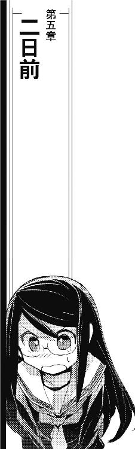
「ただいまー」
ふわあーと大あくびをしながら、茉莉香はブリッジで摂るための糧食パックを持ってブリッジに戻ってきた。長期戦体制に入っているブリッジは、食べ物と飲み物で食堂のような匂いがする。
「おう、おかえり」
シートの後ろに弁当殻とドリンクパックの山を作っていた百眼が振り向きもせずに答えた。オデットに出張中のクーリエの電子戦席だけが空席だが、あとはオブザーバー席のジェニーまで含めて全員揃っている。
「状況は、どお？」
船長席に上がった茉莉香は、船長室でも見ていた状況を確認した。
「こっちに狙いを絞った電子攻撃がちょぼちょぼ来るようになってる」
最新の航路状況を船長席に送りながら、百眼は説明した。
「これだけ混雑してるところで他の宇宙船に迷惑かけないように電子戦やるって言ったら、精密射撃みたいな精度で標的を指向し続けなきゃならないんだが、艦隊のみなさんよくやってるぜ」
「航行中の安全距離規程は？」
「制限速度が違う横方向の安全距離なら接近してくれば警告や通報くらい出来るが、編隊を組む軍艦には安全距離なんぞ関係ないからな。もっとも、狙った先に他の宇宙船がいたりするとあちらさんも電子攻撃を続行出来ないから、今のところは大したことにはなってない」
「他に、攻撃らしい攻撃は？」
「この数時間ばかりは、直接攻撃はない。しかしまあ、ほぼ全方位から射撃用ほどの精度でも出力でもないとはいえレーダー浴びてるから、こっちのパターンはあらかた記録されちまってると思った方がいい」
「追っ手は増えた？」
茉莉香は、船長席のディスプレイを切り換えた。
「順調に増えてるぜ」
百眼は答えた。
「重巡洋艦一ダースに、突撃艦も二ダース。航路の秩序を守るってのも帝国艦隊の立派な使命だから、こっちが航行法に従って飛んでる限りは航路閉鎖するような積極的な排除策は取らない方針らしいが、こっちを制圧するのに充分な数が揃えば強攻策取ってくる可能性は大だ」
「強攻策か......」
ひととおりのディスプレイをチェックし終えた茉莉香は、糧食のパックを開いた。
「具体的にはどんな方法？」
「まず、電子妨害でこちらの目を潰す」
百眼は、周辺の宇宙船の状況を確認しながら言った。
「こっちが対応してる間に、巡洋艦でも突撃艦でもいいから急接近して強制ドッキングして押さえ込み、コントロール乗っ取りって辺りがやられそうな手かな」
「電子妨害かあ」
茉莉香は、パックから出てきたサンドイッチにかぶりついた。
「でも、対応は出来るんでしょ？」
「ちまちま仕掛けてきてるのがこっちの様子見だとして、統合参謀司令部でこっちが仕掛けた分を向こうがきっちり解析してその対策まで出来てれば、そろそろやばくなる。電子戦ってのはしょせんパターン勝負だ。対応パターンさえ出来てればだいたいの状況には対応出来る」
「んー......」
茉莉香は、ドリンクパックのストローをくわえて口の中のサンドイッチを流し込んだ。
「そうすると」
ちらっとクーリエの受け持ちである電子戦席に目をやる。
「そろそろ、あれ動かした方がいい？」
「あれ、か......」
百眼は、深刻そうな目を電子戦席に向けた。
「......出来れば、あれのお世話にはなりたくないんだが」
クーリエのいない電子戦席には、複雑怪奇に結線された何台もの電子機器が主人の代わりに固定されていた。
開けっ放しのファイル型コンピューターやタブレットのみならず、どこから持ち出したのかコントロール・パネルと別装備のユニバーサルボックスにロボットアームのマニピュレーター付きのものまでが、ひとかたまりにシートだけでは足りずアームレストからフットスペースからコントロール・パネルにまで、所有者にしか理解出来ない法則に従って様々な手段で固定されている。
「いざって言うときには頼りにしてくれていいから」
オデットで電子戦指揮を執るべく弁天丸を離れるにあたり、クーリエは適当な説明を百眼とシュニッツァーを中心としたブリッジクルーに行っていた。もちろん、茉莉香も聞いている。
「普段通りの電子戦やってる限りは、放っておいてもらって大丈夫。百眼のところからでも、戦闘指揮席からでも通常対応なら十分使えるはずだから」
弁天丸のデータバンクには、独立戦争時からの膨大な蓄積がある。それに加えて、ポルト・セルーナ滞在時に情報ネットワークに接続したクーリエは、当代の電子戦に関する基礎とそのバリエーションに関する情報を可能な限り収集、銀河帝国艦隊が行う電子戦に関しては攻撃、防御などひととおりのパターンを作り上げていた。
データバンクにあった、一二〇年分も進んでいる電子戦データのおかげで、ほとんどの場合の戦闘は圧倒的優位に進められるはずだった。
「あんまり特殊な場合でもなんとか出来るように、あたしの席の方にいろいろ用意しておくから」
私室や弁天丸の倉庫に備蓄していたのか、茉莉香も見たことがないような旧式資材を取り混ぜた電子システムを電子戦席の前に構築しながら、クーリエは説明した。
「電子戦闘の指揮権限、うちに廻してくれれば勝手に対応するようにしておく」
「大丈夫かよ」
説明を聞いていた百眼が不安そうな声を上げる。
「戦闘状況なんてケースバイケース、同じシナリオ使った演習だって進行によって状況も宇宙船の配置も全然違ってくるんだぜ。いきなり指揮権渡して、自動対応なんか出来るのか？」
「簡単よ」
電子戦席に得体の知れない機器を積み上げてコードを結ぶクーリエのメガネがきらりと光った。
「非常スイッチ入れて、居もしないクーリエさんに指揮まかせるってことは、弁天丸が危機的状況にあるってことでしょう」
「そりゃまあ、たぶんそうだろうねえ」
「状況に関しては、うちのシステムもあるしこの子たちも常時モニターしてるからいちいち説明してくれる必要はないわ。指示すべきコマンドは三つだけ、逃げるか、時間稼ぐか、びっくりさせるか」
「びっくりさせるだと？」
「何が起きるかわからないけど、なんかは起きるわよ。まあ、なんにも起きないかも知れないけど」
それ以上詳しい説明をする時間はなく、最低限の動作チェックを行っただけで、クーリエは弁天丸からオデットに乗り込んだ。以後、弁天丸の電子戦はシュニッツァーが主任、百眼をアシスト役に展開している。
「クーリエの仕掛けを動かしたくない理由は？」
二つ目のサンドイッチをぱくつきながら、茉莉香は訊いた。茉莉香が船長になってから、弁天丸ではクーリエ抜きで電子戦をしたことはない。
「なんか、問題でもあるの？ よかったら聞かせて」
「いや、クーリエのやることだからね、仕掛けはよく出来てるし弁天丸の現在の状況もモニターしてたいていの状況には対応出来るようにパターン組んであるから、戦果については心配ないんだ」
百眼は言いにくそうに戦闘指揮席のシュニッツァーにちらりと目を走らせた。
「ただまあ、現実問題として弁天丸動かしてる立場としては、出来れば状況はすべて手の内に置いておきたいというか、身内とはいえ予定外の戦力はあんまり使いたくないというか」
「クーリエの電子戦設定だ、効果は大きい」
シュニッツァーが説明を引き取った。
「だが、途中のプロセスがさっぱりわからない。クーリエの設定で自動電子戦を開始させると、工程の八〇パーセントは何を目的とした動きなのか、モニターしているだけではほぼわからない」
「はあーん......」
オペレーターが専任で固定されれば、コントロール・パネルの設定は本人が使いやすいようにどんどん特化していく。シュニッツァーのように、誰でもすぐ代わりが務まるよう特殊設定を可能な限り排除したコントロール・システムを構築しているのはむしろ例外で、多かれ少なかれ誰でも自分が使う機械は使いやすいように調整を重ねていく。
弁天丸の電子戦がクーリエ担当になって久しい。そして、ブリッジの電子戦席はもっとも改造頻度と仕様変更が多い場所でもあった。茉莉香は、とっくに原型を失っている上に、シートまわりにまで予備機器が括り付けられて作動中の電子戦席に目をやった。
「なんとなくわかった。リン部長も、すぐコンピューターの設定変えたがるし、使い易いようにって自分勝手に調整するのいつものことだし」
ひとつのシステムを多人数で共有して使う場合は、個人設定をいくつも作ることで標準設定と分けることが出来る。しかし、弁天丸の電子戦席はそんな設定にはなっていない。
「こっちの状況は向こうに流してるんでしょ？」
クーリエからの注文通り、弁天丸の現在位置と追撃の艦種、数は定時連絡ごとにオデットに報告されている。
「あっちからはなんか言ってきた？」
「健在を知らせる定時連絡以外は、なんもなし」
通信システムが、着信を告げる軽やかなベルを鳴らした。
「ほれ来た。えーと現在位置はガンバルト、前回と変更無し、クーリエのメッセージ付き？」
「不吉だ」
「ルカったら何言ってるの」
茉莉香は、船長席に転送されてきたメッセージを見た。開封者指定のメッセージではないから開かれている。
「......もうすぐ作戦開始するから、『びっくり』でスイッチ入れろ、って......」
「ああ」
百眼が絶望的な呻き声を上げた。茉莉香は続きを音読した。
「説明はあとでするから、って」
「そう書いてあるな」
百眼が抑揚のない声で言った。
「えーと......」
ちょっと考えて、茉莉香は質問してみた。
「クーリエの言う通り、電子戦席のコマンドスイッチ入れたら、何が起きるか予想出来る？」
「予想出来るんならこれほどおっかない思いしなくて済むんだ」
ディスプレイに目を落としたまま、百眼は悲しそうに言った。
「何が起きるかわからないから、怖いんだ」
「んじゃ、もし、クーリエのメッセージ通りにスイッチ入れなかったらどうなるの？」
「少なくとも、これから先何時間かの弁天丸の動きはこっちの手の内でコントロール出来る。そして、オデットの方でやってる作戦の失敗確率がどっかーんと跳ね上るだろう。クーリエは使えるものは全部使って作戦立てる主義だからな、こっちが従わなきゃ、たぶん失敗する」
「じゃ、スイッチ入れて」
出来るだけなんでもなさそうに茉莉香は指示した。
「ここまで来て、今さら失敗出来るような作戦じゃないことくらい、百眼だってわかってるでしょ」
「わかってるよ」
弁当殻とドリンクパックの山を搔き分けるようにシートを後ろに引いて、百眼はのろのろと立ち上がった。
「忘れてた、今のうちに弁天丸を戦闘体制に戻しておいてくれ」
電子戦席に向かいながら、百眼は茉莉香に片手を挙げた。
「たぶん、そうでもしておかないと対応出来ないような状況に跳ばされる」
「言われなくたって」
茉莉香は船長席のマイクスイッチを入れた。
『こちらメインブリッジ、茉莉香です。オデットと連絡が取れました。本船はこれからオデットとの協同作戦を開始します』
一度スイッチを切ってから、思い直して茉莉香はもう一度スイッチを入れた。
『クーリエが用意していった電子戦の自動対応装置を、びっくりモードで動かします。全船戦闘用意、三代目、出力上げておいて、シュニッツァー、準備出来たら教えて』
「機関出力は上がってるぜ」
「全セクションはすでに準備完了している」
「よおーし、それじゃあびっくりモードでコマンドスイッチ入れるぜ」
電子戦席に辿り着いた百眼が、景気づけのように無駄に声を張り上げた。
「こっから先が本番だ、覚悟しろ野郎ども！」
ヘッドレストの後ろにひとつだけ外向きに固定されているタブレットに触れて表示を復活させた百眼は、三つしか表示されていないコマンドの一番下に触れた。
「コマンド：びっくり、間違いねえぞおらあ！」
確認コードを叩いた百眼は、あとも見ずに自分の席に跳んで帰った。クーリエのシートに括り付けられていた電子機器のディスプレイや表示灯が一斉に点灯、一瞬遅れて電子戦席の表示がすべて復活して大当たりでもしたような派手な点滅を開始する。サウンドがカットされていなければ、よほど派手な効果音が鳴り響くに違いない。
「ちょ、ちょっと......」
あまり見たことのない表示に、茉莉香はおそるおそる訊いてみた。
「なんかはじまったわよ」
「当たり前だ、うちの電子戦オペレーター渾身の仕込み発動させたんだぜ」
通信システムが再び軽やかな着信ベルを鳴らした。
「オデット、クーリエからラフプラン来た！」
百眼が新しいメッセージを船長席に廻した。
「出来るだけ早くガンバルトに跳んでこいとよ！」
「それじゃ外側の跳躍帯に移動......」
指示しかけて、茉莉香は言い直した。
「じゃなくて、このまんますぐに跳べる？」
「出来る！」
百眼が即答した。
「もちろん航行法違反だがな」
ケインが言った。
「だが、空間異常起こして巻き込まれそうな近距離にいるのは艦隊の艦だけだ。民間船を巻き込む心配はない」
「ルカ、飛行計画の変更ってすぐ出来る？」
「ガンバルトまで最短距離の飛行変更、今管制局に送付した」
「じゃ、跳んで」
茉莉香は船長席に座り直した。
「クーリエの作戦プランは、跳びながら確認するから」
「弁天丸から入電！」
オデットのブリッジで、グリューエルが伝えた。
「追跡艦隊が、一桁増えたそうです」
「ひとけたあ!?」
船長席のチアキが声を上げた。
「前の連絡でも合わせて三ダースくらいに追っかけられてるって言ってなかった？」
「はい」
通信席のグリューエルがうなずいた。
「それが一桁増えたってことは......」
『こっちの予想よりうまくやってくれてるみたいね』
音声通信で、クーリエの声がオデットのブリッジに流れた。
『次のジャンプで、弁天丸が第五艦隊の管区に入ります。タイミングを合わせて、第五艦隊への直接攻撃を開始します』
「サイレント・ウィスパーより、作戦手順書入電！」
音声通信と並行して届いたメッセージのタイトルを、グリューエルが報告した。
「大きい！」
『今、手順書送ったけど、どーせ読んでる暇はないと思う。肝心なところだけ説明します。オデットはガンバルトの第五艦隊司令部に跳んで電子攻撃、見つかるような下手な手は組んでないつもりだけど、直接攻撃されるようなことになったら遠慮無く逃げて』
「んなヘマするもんかい！」
電子戦席のリンが、届いた作戦手順書を立体ディスプレイに展開した。一画面に収まるはずがなく、高速スクロールした画面が次々に新しい表示面を開いていく。
『弁天丸には、追撃してきている第一艦隊とそれから第五艦隊もまとめて相手して貰うために動き回って貰います。それだけじゃ足りないから、サイレント・ウィスパーでもあちこち飛び回ります。しばらくは通信も安定しないと思うけど、司令部相手のオデットが動くのは最後の逃げる時だけの予定だから、うまくやってね』
「サイレント・ウィスパーとのデータ交換完了！」
リンが告げた。艦隊ひとつを統括するガンバルトの第五艦隊司令部に対する電子攻撃手順はオデットの中だけでは作り上げることが出来ず、電子戦艦並みのコンピューターを装備しているサイレント・ウィスパー内で組み上げられ、テストされたものを使う。
『えーと、弁天丸とは直接通信繫がってないんだけど、あっちも次のタッチダウンで戦闘状況に入ると思う。それじゃ、こっちもはじめましょう』
サイレント・ウィスパーは、弁天丸電子戦スタッフのひとりで艦載戦闘機パイロットでもある女性オペレーターを操縦士に据えて、すでに戦闘に突入していた。
指揮通信網の基幹中継ステーションのいくつかを直接射程内から捕捉して確認しながら、オデットと分かれたサイレント・ウィスパーは、作戦開始予定時刻までにガンバルトの第五艦隊司令部から遠く離れていた。
艦載装備を前提として開発された電子戦機であるサイレント・ウィスパーに装備されている超光速ブースターは、選択可能なオプションの中では最大出力を誇る最高性能のものである。しかし、母艦と同時に複数の機体を連携させて集中運用する設計思想のため、余剰出力は単艦行動を前提とする海賊船ほど大きくない。
艦隊行動に追随するために最大跳躍可能距離も大きく、跳躍精度も可能な限り高められている。しかし、連続して何回もの超光速跳躍を行えるほどの余裕はない。
最高の電子戦力を限られた跳躍性能で最大限に生かすべく、クーリエはサイレント・ウィスパーのための綿密な作戦行動計画を作成した。
第五艦隊管区となる銀河系宇宙外縁部は、核恒星系ほどには星の密度が高くない。宇宙都市も可住惑星も、密な空域と疎な空域がある。
出来るだけ密度の高い空域を選んで一回ごとの跳躍距離を刻めば、サイレント・ウィスパーの作戦回数も増える。しかし、その跳躍は軌跡を読まれてたった一機の機体によるものと推測されてはいけない。
また、女子高の練習帆船搭載機として民間登録されているサイレント・ウィスパーには武装がない。軍用機であるサイレント・ウィスパーにはいくらでも搭載兵装のオプションがあるが、海明星中継ステーションのＣ68埠頭には武器弾薬庫はないし、白凰女学院もヨット部も法律を犯してまで危険な兵器を所持する気はなかった。
単機、長駆の任務が必要になると予測した時点で、クーリエは弁天丸のメカニックにサイレント・ウィスパーへの機載兵装の搭載を依頼した。
機材の更新を重ねているとはいえ、艦齢一世紀を軽く越す弁天丸に搭載されていた装備の中に、そのまま最新型のサイレント・ウィスパーに搭載出来るようなミサイルはなかった。そもそも、艦載機であるサイレント・ウィスパーに合うサイズのミサイルが限られる。また、弁手丸が先行する作戦スケジュール上、準備にかけられる時間もなかった。
クーリエのオーダーは、出来るだけ威力の大きな弾頭のミサイルを、出来るだけいっぱい、というものだった。
弁天丸メカニックは、ミサイルの在庫の中から対艦用としてはもっとも小型となる重核子ミサイルを選び出した。
軍用機であるサイレント・ウィスパーは、各種兵装や予備センサー、アンテナなどを装備出来るハードポイントが機体各部に用意されている。専用品ならばパイロンやランチャーといった部品を介してミサイルを装備すればいいが、最新鋭の最高級品に合うような部品が弁天丸に用意されているわけがない。
弁天丸のメカニックは、あり合わせの部品から重核子ミサイル用ランチャーと簡単な発射装置をでっち上げてサイレント・ウィスパーに装着した。敵味方識別装置くらいは設定したが、発射装置と言っても、ランチャーに固定されたミサイルを放出する程度の装備でしかない。放出したあとのミサイルの発射、目標選定なども無理矢理引き回された回路を経由して操縦席から手動設定する必要がある。
サイレント・ウィスパーの機体上面と下面の大型装備用ハードポイントに、パイロンもランチャーもサイズが合うものを他機から流用したり、廃棄部品を切った張ったしてでっち上げ、虎の子の単核子弾頭を装着した小型ミサイル八基ほども貼り付ける。
八基合わせたミサイルの重量は、マニュアルにあるサイレント・ウィスパーの最大積載量をかろうじて下回った。しかし、正規オプションにはほど遠い装備だから、機動バランスも跳躍特性も修正しながら飛ばなければならない。
クーリエがサイレント・ウィスパーにミサイルの装備を要求したのは、跳躍先で実戦を演出しなければならないからである。
サイレント・ウィスパーの電子戦力がたいていの戦闘状況を作り出せると言っても、帝国艦隊に実戦認定させるためにはさまざまな条件がある。時間をかければ実戦がなくても戦闘があったと錯誤させることは出来るが、帝国艦隊に数で勝負をかける今回の作戦ではその余裕がない。
そのため、クーリエは指揮通信網越しに仕掛けた六か所に最初からミサイルを配置した。艦隊の状況に応じて自動対応するようプログラミングしたミサイルを、自動時限爆弾として使ったのである。
状況によりもっとも効果的な瞬間を選んで状況を開始しているため、すべての戦闘が同時刻に開始したわけではない。跳躍七か所目、空母機動艦隊が遊弋中の補給基地を目の前に、艦隊と基地に対するネットワークまで含めた全面電子攻撃を開始した時、すでに離れた空間六か所に置き去られたミサイルのうち、三基は爆発して戦闘状況開始を告げていた。
サイレント・ウィスパー、弁天丸の状況は、リアルタイムでオデットにも通達されている。しかし、ガンバルトで第五艦隊司令部に対する電子攻撃を開始していたオデットのクルーに、他の場所の戦闘状況をモニターする余裕はなかった。
武装なし、また弁天丸はおろかサイレント・ウィスパーほどの機動性もないオデットは、定点固定でガンバルトの艦隊司令部担当が割り振られていた。
他の場所での第五艦隊襲撃は、ネットワーク経由の欺瞞情報に実際の戦闘状況を起こしてアリバイを作るためのものである。しかし、第五艦隊司令部を直接相手にするオデットに課せられたのは、周辺空域での戦闘情報の演出だけではなく、第五艦隊指揮通信網そのものに対する電子戦だった。
「まず、第五艦隊管区の各部所から奇襲を受けた、攻撃されてるって情報が上がってくる」
リンは、複雑に枝分かれした樹状図のような作戦進行表をオデットのメインブリッジに大映しにして説明した。
「一番最初に上がってくる奇襲、攻撃受けてるって戦闘情報は全部で一二。第五艦隊担当空域の各部所から上がってくる情報のうち、本物は三つだけ、うち二つはサイレント・ウィスパーが仕掛けたもの、ひとつは第一艦隊に追いかけられてる弁天丸が第五艦隊の迎撃網に自分から飛び込むってシナリオのものだ。つまり、この段階では第五艦隊司令部から発令される戦闘命令は弁天丸に対するものひとつしかない。奇襲、攻撃されればもちろん武器を用意してる帝国艦隊は自衛行動するし、状況によっては逆襲して敵艦を沈めようとする。弁天丸に対する迎撃命令は発令されてるからそっちは茉莉香やジェニーに頑張ってもらうとして、問題は残り一一の戦闘状況のうち、本物は二つしかないっていう戦闘だ。サイレント・ウィスパーから仕掛けてる本物の攻撃二つと、それから下から上がってくるだけの偽の戦闘情報のせめて半分はこれが帝国艦隊に対するオリオンの海賊の攻撃だと思わせなきゃならない」
「ほんものの戦争なら、敵がこっちを確認する前に損害与えて逃げればいいのに」
ブリッジの中央空間からはみ出さんばかりの大きさで表示されている樹状の作戦進行予定表を目の前に、チアキはいらいらと爪を嚙む。
「実際の戦闘してるわけでもないのに、こっちの正体明かさなきゃならないなんて、なんてややこしい状況なのよ」
「ほんものの戦争だと帝国艦隊に思わせないと、こっちの戦争が終わらないからだ」
リンは、立体樹状の作戦進行表に重ねるように第五艦隊担当空域の星図を垂直に交叉させた。
「だから、サイレント・ウィスパーが仕掛けた戦闘状況に関しては洩れなく、残りの実在しない奇襲や攻撃情報に関しても状況に応じてそれがオリオンの海賊の攻撃だという情報を混ぜ込まなきゃならない」
「奇襲を伝えた緊急通報全部が、あとからの追加情報で、敵の正体がオリオンの海賊だと確認された」
通信士席のグリューエルが、一言言ってから咳払いをした。
「では、ワンパターンに過ぎますわね」
「そのとおりだ。予定してる戦闘情報の艦隊司令部への通報は最終的に千以上、うち実際に戦闘状況を起こそうってのは、クーリエの計算なら一二八か所だが、その全部とは言わないが出来れば三分の一くらいはオリオンの海賊との確認、あるいは推定情報を艦隊司令部がおかしいと思わない程度にいろいろ脚色した情報を送り込まなきゃならない。そしてもうひとつ、実際に戦闘状況が起きてない場所に対する艦隊司令部の攻撃命令、こっちは完全にこっちで偽装しなきゃならなくなる」
リンは、作戦展開を示す樹状図の一番下に星図を移動させた。
「全体の展開はこんな感じ」
樹状図の一番下が作戦開始予定時刻である。ブリッジクルーは、リンが適当にデザインしたと思っていた作戦進行状況を示す樹状図が、平面化された第五艦隊担当空域の星図上の作戦空域と重なるように配置されていることに気づいた。
樹状図の底、作戦開始時点では、第五艦隊担当区の核恒星側に太めの線がひとつ、そこから中央のガンバルトに向けて散発的な細い線がいくつか引かれているだけに過ぎない。
「この太いのが、弁天丸が引き起こす予定の戦闘。弁天丸はすでに第一艦隊百数十隻の追撃を受けながら、統合参謀司令部の迎撃命令を受けた第五艦隊の境界警備艦隊の前に出ていっている」
リンは、最初のいちばん太い樹状図に、細かな赤い輝点を重ねた。
「この戦闘に参加する帝国艦隊は第一、第五を合わせて二〇〇隻以上。弁天丸にしちゃしんどいミッションだろうが、その辺りはどーせこっちで心配したところで手助け出来るもんでもないし、敵艦隊撃滅が目的ってわけでもないからまーなんとかしてくれるだろう」
リンは、星図上に青い輝点をばらまいた。
「なにより、弁天丸が大戦力をうまく引きずり回してくれないとこれから先の作戦も立ち行かないから、うまくやってくれる前提で説明を続ける。で、タイミングを合わせて先行してるサイレント・ウィスパーがこの辺りで七か所同時の戦闘を開始する」
リンは、弁天丸とガンバルトの間の空域の細い樹状図に重なるように星図をわずかに動かした。
「青い輝点は第五艦隊担当空域で作戦行動中の帝国艦、赤い輝点が戦闘に引きずり込む予定の帝国艦。おれたちの仕事は、ここから開始する」
リンは、星図をさらにわずかに動かした。ガンバルトから遠く離れた空域で星図に重なった細い樹状図の枝が鈍く輝く。
「実際にどんぱちやるところは、艦隊司令部に本物の戦闘情報が上がってくるし、実際に戦闘状況になってるから艦隊司令部の対応もあんまりいじる必要はないと思う。ないとは思うが、この戦闘は偽装だから落ち着いて現状確認しろなんていう命令がもし出てきたら、全戦力を上げて迎撃しろとかそんな命令に書き換えるくらいはやるけど、それもまあ状況次第だ。おれたちが面倒見なきゃならないのは、弁天丸とサイレント・ウィスパーが直接担当する以外のすべての空域の戦闘状況」
メインブリッジの中央に大樹の枝を束ねたように鬱蒼と配置された樹状図の大部分が鈍く点灯した。
「第五艦隊担当区全域の戦闘を、オデットでコントロールする」
おーっというどよめきがブリッジを満たした。
「みんなも承知しているように、弁天丸とサイレント・ウィスパーが出張っていく以外の空域で起きる戦闘は、すべてフェイク、実際には起きてない。だが、おれたちの目的は本物の戦闘状況を作り出すことじゃない。第五艦隊司令部に、自分ところの艦隊が同時多発でオリオンの海賊に襲われてると思わせることが、まず最初の目的だ」
リンは、作戦進行を示す樹状図に重ねた最初の何本もの細い枝を点滅させた。
「弁天丸とサイレント・ウィスパーが戦闘開始したら、まずはこの九か所からの戦闘情報を艦隊司令部に送り付ける」
第五管区全域に散らばる樹状図と星図が重なる点から、中央の艦隊司令部に向けて集中線が走る。
「だが、これと同時に実際の戦闘についての報告も艦隊司令部に入る」
リンは、サイレント・ウィスパーの担当している枝と弁天丸の戦闘予定空域からの報告を示す線を強めに光らせて艦隊司令部に引いた。
「実戦やってるところからの情報と、それに対する艦隊司令部の対応には手を付けない。問題は、実際にはなんにも起きてないところに送られる戦闘状況の確認命令だ」
中央の艦隊司令部から、担当空域全域に拡がる樹状図の枝に向けて放射状に指令が返る。
「指揮通信網で送られるこの確認情報については、こっちでインターセプトして内容をちょいと改変してやらなきゃならない。戦闘状況を確認させるんじゃなくて、未確認の海賊から襲撃される可能性があるから戦闘体制をとるようにって命令に書き換える」
艦隊司令部から放射状に放たれた情報伝達を示す光は、偽の戦闘情報を発した空域に到着する前にねじ曲げられて艦隊司令部に戻ってきた。
「指令が戻ってくる場所は艦隊司令部じゃなくて、ここ、オリオンの海賊船オデット号だ。そして、ここで改変した指令を各空域に送り出す」
星図上では艦隊司令部と同じ場所に表示されるオデットから放射状に放たれた光が、今度は狙いあやまたずに戦闘空域に届いた。
「第五艦隊が情報収集に使う軍事ネットと指揮通信網はもうこっちでがっちり食い込んだ。超光速通信の内容改変はこっちの装備で自動的に行うようにセッティング済だから、一か所ずつどんな情報が上がってきてどんな命令が降りていくか確認する必要はない。じゃあ、放っておいていいかっていうと、残念ながらそういうわけにも行かない」
リンは、作戦進行に伴って樹状図の情報に星図を移動させた。さらに大量の枝が星図に重なり、先ほどに数倍する戦闘情報が光の集中線となって艦隊司令部に集まる。
「早ければ最初に数か所で戦闘が開始された時点で、遅れてもこの第三波くらいで、艦隊司令部もじぶんのところが大騒ぎになってるって気付くはずだ。それまでは自動対応してるはずの情報分析も戦闘指揮も、この辺りから防衛体制の最重要課題に上げられて優先対応になる。つまり、機械任せじゃなくて人間の判断した対応が入ってくるはずだ」
リンは、司令部からさらに多くなって星図上に放射される輝線を表示した。
「その結果として、各空域に対する命令が状況に応じて変化してくる。こっちは、それがどう変わったか見極めた上で、向こうにとってはさらに状況を混乱悪化させるような情報を上げ、命令を改変しなきゃならない」
リンは、樹状図の中に星図をさらに上昇させた。担当空域のほぼ全域から中央に向けて輝線が集中し、それに対して放射線が反射するように帰っていく。
「これが、まず第一段階」
リンは、ブリッジに集まっているクルーたちの顔を見廻した。
「そして、次の第二段階では、艦隊司令部にオリオンの海賊が攻撃してるのが担当区だけじゃなくて艦隊司令部だって気付いて貰う」
「こっちの正体明かすだけじゃなくて、その目的まで艦隊司令部に教えなきゃならないのね」
船長席のチアキはさらに不愉快そうな顔で言った。
「なんて厄介な戦争なの」
「これが本物の戦争じゃないからだ」
リンは答えた。
「おれたちは、ほんとうの戦争をしたいわけじゃない。帝国艦隊に、総力を挙げなきゃならない相手だと思わせて、そして逃げ出す。海明星に帰るまでは、オリオンの海賊の規模も戦力もほんとうの目的も教えるわけにはいかない。銀河系宇宙最強の戦力相手に乗ってもらおうってんだ、そりゃあ簡単な芝居じゃ見て貰えないさ」
リンは、樹状図に重ねた星図をさらに作戦進行に伴って進めた。
「こっちはいちおうこのシナリオを用意してるが、艦隊司令部もよっぽどの馬鹿じゃなきゃどこかの段階で担当空域全部に跨るはずの戦闘状況のほとんどがフェイクだって気付く。そしたら、なんで騙されたのか考えはじめる」
リンは、樹状図中央を貫く太い幹を鈍く光らせた。
「サイレント・ウィスパーと弁天丸、一二〇年先の電子戦技術を使って組み上げた指揮通信網の乗っ取りだ、そう簡単にばれるとは思わない。だが、敵が一二〇年前の技術しか知らないオールドタイマーだとしても、最高の設備と技術を持ったプロの軍人だ。あっちの対応を待ってたら、こっちの気付いてない穴こじ開けられて一網打尽にされるかも知れない。そこで、第三段階」
リンは、さらに星図を進めた。樹状図の枝の数がいちばん増える中央部で星図が止まる。
「こっちの気付いてないところで指揮通信網のクラッキングに気付かれると対応が読めない。だから、艦隊司令部にはこっちが作った隙に気付いて、そこからこちらに逆襲するように誘導する」
「簡単に仰りましたけど」
グリューエル質問した。
「いったいどうやって、そんな都合よく艦隊司令部を動かすつもりですの？」
「簡単さ」
リンは、心底楽しそうな笑みを浮かべた。
「こっちゃあ第五艦隊の指揮通信網にがっちり食い込んで、さんざん攻撃命令出してるんだぜ。電子戦担当のふりして弱点発見、攻撃、敵確認！ ってやってやればいいんだ」
「なるほど」
グリューエルは頷いた。
「せっかく指揮通信網に細工出来るのだから、存分に使い倒すわけですね。理に適っていると思います」
「そのあとの予定もいちおう決まってるが、今のところはその先までは気にしなくていい。この辺りまではだいたい予定通りに進むだろうが、細かいところでのすれ違いや予定変更は山のように出てくるはずだ。全体的な進行の方向はこのまんまで行きたいところだけど、こっちやサイレント・ウィスパーで把握出来る状況次第で先の予定も変えていく。で、作戦を予定通り遂行するためにオデットはどうしなきゃならないかというと、こういうことだ」
リンは、作戦進行を半分弱まで進めていた星図を最初の位置まで戻した。
「オデットの現在位置はここ、ガンバルト」
リンは、作戦進行樹状図の真ん中を一本貫く線を鈍く輝かせた。星図のあちこちを点滅させながら、今度は速めの速度で樹状図を作戦進行に従って移動させていく。
「オデットは、第五艦隊司令部の指揮通信網にがっちり食い込んでいなきゃならない。情報収集用の軍事ネットも指揮通信網も超光速ネットワークだ。そして、現時点でうちが使えるだけのルート使って繫いでる超光速回線のチャンネル数はざっと五百」
おーっというどよめきがブリッジに満ちる。
「いろんな裏技使ってチャンネル数抑えてるけど、それでもちょっとした中継ステーションが常時確保してる回線くらいに相当する。そして、みんなも知ってるとおり超光速回線を安定運用するには空間状況が重要だ。幸いにして現在のところオデット周辺の空間状況は安定してるんで確保してる回線も安定してるが、これがなにを意味するか、まあ、わかってるよな？」
リンは、ブリッジの一同の顔を見廻した。
「超光速回線を維持安定して運用するためには、オデットはここから動けないってことだ」
リンは、作戦進行樹状図をそのままに星図を切り換えた。東銀河の第五艦隊担当空域全域を映し出していた星図が、第五艦隊司令部を擁するガンバルト星系を中心とする周辺空域図になる。
「オデットの現在位置は、ここ。第五艦隊司令部の管制空域外だが、防空識別圏内だ。商船学校の練習帆船、現在訓練航海中ってことで管制局には届け出てるけど、注目されてないってだけで艦隊司令部はここにおれたちがいることは知ってる。そして、作戦開始したら、せめてすべての仕掛けが完了する八割くらい、そこまで行かなくても帝国艦隊がオリオンの海賊を重要な敵だと認識するだろう五割くらいまではここから動けない」
「オデットの全能力を挙げて第五艦隊司令部に仕掛けるんだから、そりゃあせっかく潜り込んだ回線維持するためにもここから動けないってわけね」
船長席のチアキはきらりとメガネを光らせた。
「でも、今でもオデットは超光速回線経由でけっこうなデータ量をやりとりしてる。本戦が始まったら、データ量はさらに跳ね上がるんじゃないの？」
「第五艦隊司令部だけじゃなくて、担当区全域に拡がる指揮通信網相手にイカサマ仕掛けようってんだからな、そりゃもうデータ量はえらいことになるはずだ。ま、相手は超光速ネットワークだから、回線維持のためのエネルギーに比べれば、どれだけ大きなデータやりとりしようがそっちの方は大した問題にはならない」
「ばれない？」
おそらく、ブリッジの全員が抱いているであろう疑問を代弁して、チアキは質問した。
「防空識別圏内で超光速ネットワーク経由の指揮通信網乗っ取りなんてことしてしかも居座ったら、いくらこっちが一二〇年分進んだ未来の技術持ってるって言っても、艦隊司令部の防衛隊に気付かれるんじゃない？」
「かもな」
リンは不敵な笑みを浮かべた。
「もちろん、対策はしてる。いくつも囮ばらまいて、そもそも指揮通信網そのものが乗っ取られてることに気付くのは最後の最後になってからこっちの誘導で、艦隊司令部の近所にはいないはずの弁天丸やサイレント・ウィスパーから派手な陽動仕掛ける算段もしてある。だが、対策してあるとはいえ、オデットが指揮通信網乗っ取りの最前線になるのは間違いない。そして、いくらこっちが進んでいても、どれだけ準備しておいても、敵の手数が圧倒的に多い以上はどっかからばれる可能性は否定出来ない。だが、同じ立場で戦争やってるなら、必ず兆候があるはずだ」
リンは、船長席に片手を挙げた。
「ってわけで、ネットワークの戦争はこっちで引き受ける。宇宙空間での戦争は、チアキ船長、頼むぜ」
「はい」
船長席のチアキは、投げられたボールをキャッチするように右手を挙げた。
「ここまで来て本船の現在位置知らない人もいないでしょうけど、オデットは今ここ、ガンバルト星系の外惑星系にいます」
船長席から斜めに立ち上がったチアキは、スペクトルＧ型の主星ガンバルトを中心とする星系を指差した。
「ハビタブルゾーンに惑星が二つ。あんまり古い星だと、固有の文明がそこで発生したのかどこかから流れ着いたのかわからなくなっちゃってるところも多いけど、ここは核恒星系発祥の開拓惑星ってはっきりわかってるわ。第五艦隊司令部は、内側の海洋惑星と月のラグランジュ点に位置してる。歴史的経緯抜きで軍事基地の配置考えるんなら、もう少し母星の重力の影響が少ない外惑星系か、いっそのことポルト・セルーナみたいに安定してる恒星間空間に置いたほうが連絡も通信も簡単だけど、そうじゃないあたりは古い艦隊基地だからしょうがありません」
言葉を句切って、チアキはクルーたちの顔を見廻した。
「この際、そっちのほうがこっちにとっても都合がいいし」
にやりと笑ってみせる。さすがに茉莉香ほどうまく行かないなーと自省しつつ、チアキは続けた。
「並のステーションなら、管制圏内はだいたい衛星軌道廻りまでなんだけど、第五艦隊司令部ともなるとさすがに広く取ってて、管制圏内は内惑星系全域に及びます。海洋惑星は内側から三番目の惑星だけど、ぎりぎりでハビタブルゾーンはみ出しちゃってる第五惑星までが管制圏内。で、そこから外側、惑星の間隔もどーんと拡がるのが外惑星系。第五艦隊司令部は、管制圏の外側に防空識別圏を設定していて、その範囲は第六、第七のガス状巨大惑星とさらにその外側の彗星の巣を含む小惑星帯まで。オデットの現在位置はここ、第六惑星軌道の内側。管制圏の外側だけど堂々と防空圏内、でも管制局に目を付けられるほど近いってわけじゃない微妙な位置ね」
リンが、気を利かせてオデットの現在位置を白い輝点で点滅させる。
「防空識別圏ってことは、正体不明の宇宙船がうろついてたらすぐに管制局から確認の通信が飛んでくるし、トランスポンダー切ってればすぐに警備艦が飛んでくる。だから、今のオデットは核恒星系の商船学校所属の太陽帆船で、今ここにいる理由は太陽帆の調整中ってことで管制局にデータを提出済」
チアキは、船長席のコントロール・パネルで星系図に青い輝点で示される帝国艦隊所属艦艇の現在位置を重ねた。
「つまり、今のままおとなしくしてる限りは、帝国艦隊に目を付けられる心配はありません。でも、ここから遠く離れた空域とはいえ第五艦隊の担当区内で弁天丸とサイレント・ウィスパーが戦闘状態に入ったら、第三惑星のラグランジュ点にある司令部の緊張度も上がるはず。そこから先、こっちの本命が第五艦隊の担当区じゃなくて指揮通信網だって気付かれたら、オデットが怪しいって目を付けられるって可能性がどーんと増える。だから」
チアキは、ブリッジを見廻した。
「それより先に、こっちは戦闘体制に入ります。電子戦と通信系はリン部長の指揮でネットワーク相手の戦争に入るけど、こっちの仮想敵はこの空域の艦隊と司令部の両方。通信を傍受して、見える限りの艦艇の動きを詳細に観察して、司令部がネットワークで見えてるのと同じように動いてるか、それとも指揮通信網やネットワークで流れてない動きをするか」
チアキは、自分に言い聞かせるように船長席まわりのパネルを見廻した。バルバルーサの自分の席よりも、ディスプレイの数も情報量もはるかに多い。
「帆は張ってないけど、現時点でオデットは全部のマストを拡げられるだけ拡げてます。アンテナの感度も上がってるし、情報収集能力は今の銀河ならたぶん勝てる船はいないわ。この状態で、突然トランスポンダー消して近寄ってくる船とか、不自然なレーダー放射やステルスがないかどうか見張るのが当面のお仕事。目の前の状況が遠くまで見通せるだけ、弁天丸やサイレント・ウィスパーよりは楽な状況だと思ってる」
「サイレント・ウィスパーから入電」
グリューエルが涼やかな声で伝えた。
「クーリエさんから、戦闘開始だそうです」
チアキは訊き直さなかった。全員がその意味を理解する間、ひと呼吸分だけ待って口を開く。
「全乗組員、戦闘体制に着いて！」
チアキは、船内放送にも繫がっているマイク越しに言った。
「さあ、戦争をはじめましょう」
「しばらくかかるからなー、気を抜いて行けよー」
のんびりと声をかけたリンに、無重量状態のブリッジで船長席にすっくと立っていたチアキがこけた。
「せっかくかっこよく決めたと思ったのにい！」
「今まで準備に総掛かりな上に、こっから先も長丁場なんだ。いきなり全開だと最後まで体力もたねえぞ」
「緊張感のないこと」
苦笑いして、チアキは船長席のステップで態勢を立て直した。
「最初のうちは自動対応で行けるはずだから、余裕のある今のうちに目の前の仕事がない人は食事と休憩！ サイレント・ウィスパーが手持ちのミサイル使い切って、追撃隊引き連れた弁天丸がこっちに近付いてきてからが本番よ、それまでは体力温存しておきなさい！」
帝国外で戦う第七艦隊と、帝国内を管区とする第一から第六までのナンバーズフリートとの最大の違いは、指揮系統にある。
第七艦隊が管区とする空域は、他の艦隊が担当する管区をすべて合わせたよりも広い。また、無数の最前線の戦況も異なるから、第七艦隊司令部がすべての前線に対して一元的に指揮を執ることはない。第七艦隊は、各最前線に配置された艦隊の旗艦、あるいは個艦行動している場合は指揮官が作戦指揮を執る。
第一から第六までの、帝国内を管区とするナンバーズフリートは、基本的に艦隊司令部の指揮下にある。司令部は管区内の星系の緊張状況や儀礼のために艦隊を派遣し、演習予定通りに艦隊を動かす。
確実な情報収集を行い、状況に応じた的確な作戦指揮を行うため、艦隊司令部は広大な空域に張り巡らされた情報システムとなった。艦隊所属の艦ひとつひとつ、各基地だけでなく、情報員、艦隊員までが情報収集のための端末となり、情報は艦隊司令部で集約され、巨大なコンピューターシステムで解析される。
ほぼ管区と任務に変更がない第一、第二、第三艦隊では固定化されているこのシステムも、銀河帝国外縁部を扇形に三分割して管区とする第四、第五、第六艦隊では細かい修正が加えられていた。銀河帝国はその誕生以来膨脹を続けており、第七艦隊管区が辺境部に移動していくに従ってかつて版図外だった辺境空域が第四、第五、第六艦隊の管区に追加されていく。
一二〇年後は第五艦隊管区となる東銀河に関する情報を、弁天丸とサイレント・ウィスパーは軍事情報として所持していた。第五艦隊の指揮系統及び情報網に関しても、一二〇年前のものはないものの、銀河帝国に併合されてからのものは詳細なデータがオデットに保管されていた。
歴史学的な軍事情報を読んで推測した状況と公共ネットによる調査と実験、さらに非合法ネット上で収拾した情報と付き合わせることにより、リンを助手にしたクーリエは第五艦隊の指揮系統樹をかなりの精度で解くことに成功していた。
帝国艦隊の軍用基幹ネットワークと言えば、今も昔も強力な暗号化と厳重なセキュリティで有名である。最先端暗号理論の見本市と言われ、電子セキュリティの実験場と言われる軍用ネットワーク技術は、更新されるごとに各星系の防衛軍や企業の私設艦隊向けに売り出され、さらには民間ネットワークにも応用される。どこでどんな必要があるかわからないから、時代ごとの暗号理論は弁天丸のデータバンクにも溜め込まれており、サイレント・ウィスパーにもほぼ無限大のデータストレージをいくばくかでも埋めて商品価値を高めるためか、全時代の暗号理論とセキュリティ技術が記録されていた。
未来の技術書をカンニングするに等しい裏技を使って第五艦隊の指揮通信網に侵入したクーリエは、いくつかの無害な実験を行って最新状況を確認してから即席の使い魔をネットワークに放った。超光速で情報が伝達される軍用ネットワークを駆け回るプログラムは、定時連絡やノイズ、セキュリティプログラムのアップデート情報などさまざまにその形態を変えつつ、ネットワーク自身のセキュリティに合わせて自らを改変しながら増殖し、必要に応じて消滅する。
軍用ネットワークのセキュリティレベルは一様ではない。民間レベルにまで張り巡らされた情報収集網のセキュリティレベルはそれほど高くなく、逆に上部から下位に戦闘命令を伝える指揮通信網は厳重に保護されている。
作戦開始前に、クーリエは第五艦隊及びその指揮通信網に思い付く限りの罠を仕掛けた。作戦開始までにそのうちいくつが見破られて解除されるか、作戦完了後の検証でどれだけが調査対象になるかはわからない。その後のネットワークの変化をすべてわかっているという利点と一二〇年進んだ電子戦闘機及び、たゆまずアップデートを繰り返した太陽帆船の電子戦装備という、卑怯とも言える装備を生かして、クーリエは第五艦隊の指揮通信網を把握していった。
ネットワーク上に仕掛けた罠、放った使い魔に対しては状況終了後にすべて消滅、証拠を残さないようにセッティングされている。移動経路ごとに消去及びその記録も無意味なノイズに書き換えてから消滅させる手法については、クーリエよりも民間ネットワークに触り慣れているリンが検証を行って成功を確認している。
ボトムアップされる情報収集網にオリオンの海賊による同時多発襲撃情報を載せ、トップダウンされる指揮通信網に海賊への緊急対応を戦闘命令として下す。それが、クーリエが組み立てた第五艦隊に対する基本戦略だった。
襲撃情報は、オリオンの海賊によると特定されないものを合わせれば千以上。情報ネットワークをクラッキングしたオデットによる偽装情報と、情報収集網の末端まで拡がった使い魔のプログラムが、ランダム生成する状況を至急便として上部に送る。それに対して下される出撃命令は一二八。百を超える数は、サイレント・ウィスパーが同時にモニター出来る戦闘状況から逆算して決定された。クーリエがそれくらいならなんとかコントロール出来ると言い出したのに絶句して、以後オデット詰めのリンはひたすらクーリエが廻してくる作業の下請けに徹している。
海賊襲撃の情報に対して、艦隊に対する出撃命令の数を限定したのには理由がある。指揮通信網にがっちり食い込んだから、艦隊司令部からの命令が偽装だと見破られる可能性は考慮していない。しかし、出撃命令に従って艦隊が出撃した先に何もなければ、そしてそんな情報が司令部に返されれば、第五艦隊に対する海賊の襲撃そのものが偽装だと見破られる可能性もある。状況が進めば指揮通信網そのものに対するハッキングも気付かれる可能性が高い。
海賊の襲撃を現実に見せるために、クーリエはかなり早い段階で現実の同時多発攻撃を行うことを決定していた。武装らしい武装がないオデットは偽装とはいえ戦闘を演出出来ないが、サイレント・ウィスパーならば艦隊に周辺状況を誤認識させることが可能である。
統合参謀司令部を襲撃した弁天丸が艦隊に追撃されながらガンバルト方面に逃げるという状況が確定した時点で、クーリエは偽装戦闘の主役をサイレント・ウィスパーから弁天丸に変更した。艦載兵装を搭載し、実際に統合参謀司令部を襲撃し、第一艦隊に追撃されている弁天丸なら戦闘を偽装するどころか戦闘を行うことも可能である。
「てのが、クーリエの作戦プランだ」
百眼は、斜め読みしただけのクーリエの作戦プランをさらに抄訳解釈して茉莉香に説明した。百眼が早口な上に状況が複雑怪奇に絡まっているので、茉莉香はすべてを理解出来た自信がない。
「それで、クーリエはこっちの状況はどれくらい理解してるの？」
「こっちの状況は、逐一サイレント・ウィスパーに流れてるはずだからねえ」
百眼は、シートに括り付けられている電子機器もコントロール・パネル側も派手な表示が目立つようになってきた主人不在の電子戦席にちらりと目を走らせた。
「どこで何してるかくらいは間違いなく理解してるはずだ。ただ、クーリエのこったから一二八も出すって出撃命令のうち、実際にどんぱちしようっていう三ダースくらいの状況は同時並行で面倒見てるだろうし、その中じゃ弁天丸なんてのは乗組員も艦載兵装も揃ってるいちばん面倒見なくていい部類だろうからねえ、たぶん優先順位は最低だと思うぜ」
「はったりでもなんでもなく、ほんとに第五艦隊に同時に千か所で喧嘩売るんだものねえ」
溜息をついて、船長席の茉莉香はディスプレイに表示されたラフ極まりないクーリエの作戦計画書をスクロールさせた。
「それで、弁天丸の目の前のお仕事は？」
「これから、境界警備中の第五艦隊警備艦隊の目の前にタッチダウンする」
百眼は、超光速ネットワークでクーリエから廻ってきたデータを表示した。
「すでにあっち側には海賊に対する討伐命令は出てるはずだ。こっちは戦闘準備整えて索敵中の警備艦隊の目の前に追撃艦隊のおまけ付きで出てきてお相手する」
「警備艦隊って」
ディスプレイに映し出された編成図を見た茉莉香は目を剝いた。
「帝国の内側なのに、戦艦中心の打撃艦隊じゃない！」
「相手にとって不足はないわな。で、ひと当てしてから次のお座敷に高飛びだ」
百眼はディスプレイ上にざあーっとリストを表示した。
「ガンバルトの艦隊司令部に辿り着くまでに八か所、こっちの判断でいくつかすっ飛ばすのもありだろうが、こりゃあ大変だ」
大丈夫なの、という質問を茉莉香は苦労して吞み込んだ。現時点で弁天丸のエネルギー充塡率は一〇パーセントほど、タッチダウンした先で砲戦でもすればあっという間にエネルギー切れになる。
「......だから、電子戦メインで、砲撃は見た目の派手な威嚇に限るのね」
「そういうことだ」
百眼は、タッチダウン先で予測される艦隊配置を最新に更新した。
「計算通りなら、こっちの目の前に警備艦隊がいて、派手に電子妨害かけたところで後方に追撃艦隊が降りてくる。クーリエの算段でこっちに対する攻撃命令は出てるはずだから、それほどやっかいな手順を踏まずに砲雷撃戦になる予定で、無理に呼び弾撃たなくても実弾飛び交う戦闘空間になるはずだ」
「ん？」
茉莉香はちょっと首を傾げてから声を上げた。
「それって、自分から挟撃されるような場所に跳び降りるってことじゃない！」
「ご名答」
百眼が答えた。
「でかい艦隊だから最外縁の差し渡しが一〇〇万キロを超す。こっちの予定通りなら艦隊の防空圏内に前跳躍現象付きで飛び込むことになるが、仕込みがずれていれば第五艦隊が気付いても相手にしてくれないような遠距離に出ることになる。どっちがいい？」
「今さら選べないじゃない」
茉莉香は、タッチダウンまでの残り時間を表示するカウントダウン・タイマーに目をやった。タッチダウン地点は、超空間にテイクオフした時点でほぼ決定されている。
「おそらく、タッチダウンと同時に第五艦隊に対しての電子攻撃が開始される」
シュニッツァーが言った。
「敵方のレーダー観測の妨害と、こちらの位置の欺瞞だ。あらかじめ攻撃命令を受けているはずの敵が前跳躍現象を頼りに射撃管制用レーダーを集中照射していたとしても、第一弾は避けられるはずだ」
「当たり前でしょ」
茉莉香は船長席に深く腰掛けて腕を組んだ。
「まだこのあと、お座敷の予約が満杯で入ってるのに、こんなところで蹴躓いてるわけにいかないんだから。ほら、第五艦隊最初のお座敷、降りるわよ」
カウントダウンがゼロになる。船体のかすかな揺動のあと、通常空間に復帰した弁天丸のブリッジにいくつもの警報が鳴り響いた。
「おら来た！」
タッチダウンによる空間異常が収まらないうちに遠慮会釈なく照射された高出力高精度の射撃管制レーダーが警報を鳴らす。ケインは船体のコントロールが回復すると同時に弁天丸に回避機動を開始させた。
「第五艦隊所属、Ｂ‐25境界警備艦隊、打撃戦艦四隻ほかいろいろ、概算距離四〇万キロ!!」
百眼が暫定観測で得られた艦隊の配置状況を伝えた。
「戦艦を中心に置いて散開してるわね」
茉莉香は、ディスプレイに映し出された艦隊配置図を見て判断した。
「迎撃命令に従ってこっちを待っててくれてたって感じ？」
「遠距離砲撃来る！」
ルカがケインに伝えた。
「動かなくていい、至近弾も来ない」
「了解！」
ルカの言葉通り、警備艦隊の斉射初弾は弁天丸からかなり離れた空間を通過した。
「後方五〇万キロ、タッチダウン反応多数！」
百眼が追撃艦隊の反応を報告した。
「シュニッツァー、データ送るぜ！」
「受け取った、タッチダウンポイントに向けて威嚇射撃を行う」
弁天丸のクラス四〇の三連装砲塔二基は、跳躍中からチャージを行っていた。充塡率は高め、集束率は最低に落として、百眼から送られたデータに砲塔を旋回させる。
「先遣隊が出てくるぞ、三、二、一、ゼロ！」
「主砲発射」
斜めを向いた弁天丸の後方めがけて、六条の高エネルギービームが放たれた。砲身ごとに別の目標を指向したビームは、拡がりながらタッチダウン直後の第一艦隊機動重巡洋艦を襲った。
弁天丸のブリッジに新たな警報が立て続けに鳴り響く。
「前後方向からレーダー照射」
百眼の口調がうんざりしてきた。
「こっちの狙い通りだ、前方警備艦隊から修正第二射、後方追撃艦隊からはレーダー高出力照射。電子戦席がきっちり仕事してくれてなきゃ、こっちゃあっという間に蒸発だ」
「ちゃんと、仕事してくれてるみたいじゃない」
茉莉香は、何がどう動いているのか派手な表示を連続させている電子戦席に目をやった。
「後方の追撃艦隊に欺瞞情報を、前方の護衛艦隊には電子妨害が連続している」
シュニッツァーが言った。
「追撃艦隊からの砲撃を、前方警備艦隊への威嚇に使うつもりだろう」
「つまり」
一瞬だけ考えて、茉莉香は命令した。
「前方、警備艦隊へ突撃！ 後方追撃艦隊の艦砲射撃が前方への威嚇になるわ！」
茉莉香は、ブリッジを見廻した。
「で、合ってると思うんだけど？」
「第五艦隊管区でひとつ目のお座敷だからな」
ケインは第三斉射に備えて弁天丸を回避機動に入れた。
「次の仕事も詰まってる。ちゃっちゃと片付けるぞ！」
核恒星系の統合参謀司令部を強襲したオリオンの海賊に関する情報は、帝国艦隊内部では部分的にしか共有されていなかった。伝統的に担当空域外については各艦隊司令部が情報収集と評価分析にそれほど熱心でないことに加え、掃討戦争終結後では初になる海賊による直接攻撃を不祥事と捉えた統合参謀司令部が麾下の艦隊だけで敵を撃滅しようとしたからである。
そのため、統合参謀司令部は航路帯を縫って逃走軌道をとったオリオンの海賊船を、核恒星系の東半分を守護する第三艦隊に指示を出さずに直接指揮下にある第一艦隊のみで追撃した。
逃走軌道上の第一艦隊所属艦を可能な限り動員し、追跡体制は可能な限り強化された。しかし、星間航路を巧妙に逃げ回る海賊船は、増強された艦隊を以てしても追い詰めることが出来なかった。
海賊船の逃走軌道を予測した統合参謀司令部は、核恒星系を抜けて銀河系内縁部に入る空域での迎撃を計画、ここに至ってやっと他のナンバーズ・フリートの投入を決定、第五艦隊所属の境界警備艦隊と第一艦隊追撃隊による海賊船の挟撃を狙った。
それまでの追撃戦から、海賊船が帝国の星間法、航行法のみならず帝国艦隊との戦闘にも精通していることは判明していた。その正体は、最初に海賊が統合参謀司令部を襲った時に追われていた宇宙大学所属の調査船キュリオシティの乗組員による証言で、オリオン腕の未接触文明の海賊船だと判明している。
統合参謀司令部を戸惑わせたのは、接触していないはずの文明の海賊船が、異常と判断出来るほどに数の多い帝国艦隊と戦い慣れていることだった。核恒星系中央の統合参謀司令部にまで強襲をかけながら、おそらくオリオン腕の未接触文明空域目指して逃げていくその軌道にも戦い方にも迷いがない。
しかし、いかに戦い慣れした敵であっても、第五艦隊担当区境界線上にいた戦艦四隻を中心とする打撃艦隊と、百数十隻に及ぶ追撃艦隊に挟撃されればうまく行けば撃沈、悪くても大破行動不能には追い込めるはずだった。
統合参謀司令部が予測した座標と誤差の範囲でしかない空域に、オリオンの海賊船のタッチダウンが確認された時、第五艦隊、第一艦隊、そして統合参謀司令部は掃討の終了を確信した。
しかし、それは新しい戦闘の開始でしかなかった。
第五艦隊打撃艦隊と第一艦隊追撃隊による対海賊追撃作戦は、第五艦隊管区における戦闘でありながら、例外的に統合参謀司令部にもモニターされる形で開始された。第五艦隊所属打撃艦隊の現場指揮は現場の旗艦が、追撃する第一艦隊側の指揮は寄せ集め艦隊のために統合参謀司令部が一元的に執っていたためである。
指揮系統が二つある戦力が共同して単一の目標に当たったわけだが、もちろんのこと作戦開始前に打ち合わせをするような余裕はなかった。聖王家の近衛を主任務とする第一艦隊と第五艦隊は観艦式以上の合同作戦を行った経験はない。
作戦目的が、たった一隻の海賊船の撃沈という単純なものであり、また帝国艦隊側の戦力が圧倒的に上回っていたこと、星間航路での追跡で第一艦隊が海賊船との電子的な交戦を繰り返してすべてのパターン解析を終了していたことなどから、統合参謀司令部も、また第五艦隊司令部も攻撃側の戦力も指揮系統も二分されたままの作戦に不安を感じていなかった。
目の前に海賊船がタッチダウンする前に迎撃命令を受けていた警備艦隊には、統合参謀司令部から第五艦隊を経由して海賊船の電子戦データの抄録が送られていた。追撃艦によりモニターされ、統合参謀司令部で解析された電子戦レポートは、それだけで戦況を有利に進めるのに充分なはずだった。
しかし、タッチダウン直後から電子戦に入った海賊船は、それまでのレポートにないパターンを展開した。
統合参謀司令部から第五艦隊担当区まで、第一艦隊と海賊船との接触は戦闘に至らないものを含めれば十数回に及ぶ。毎回の電子戦のパターンを分析した統合参謀司令部は、海賊船は追撃艦隊との戦闘によって第一艦隊のパターンを学習していると判断した。
電子戦は、千変万化する状況にどれだけ的確に対応出来るかで決まる。度重なる星間航路での追撃戦で攻撃も防御も単調になってきたのを分析した統合参謀司令部は海賊船の電子戦パターンが尽きたと判断、第五艦隊を待ち伏せにした挟撃戦ではそれまでに使用していない周波数域でのレーダーと電子戦パターンを指示した。
しかし、予測された通りのポイントにタッチダウンした海賊船は、統合参謀司令部も艦隊司令部も予測していなかった新しいパターンでの電子攻撃を二つの艦隊に同時に行った。第五艦隊は第一艦隊がそれまで使っていない周波数域のレーダーを、第一艦隊側も追撃側の艦隊でレーダー反応を共有出来るというメリットを捨てて、個艦ごとに異なる周波数のレーダーを射撃管制に使ったにもかかわらず、海賊船はそのすべてに対して的確な電子妨害を行ったのである。
それだけではなかった。海賊船は、データリンクで戦闘情報を共有出来る第一艦隊と第五艦隊双方に対して、偽のレーダー反応を発射することにより複数に分身してみせるという離れ業まで行ったのである。
広域に展開した第五艦隊から発射されたレーダーは、たった一隻の海賊船を鮮明に浮かび上がらせるはずだった。レーダー反応に偽装した偽情報は、解析すれば矛盾が出る。しかし、熱放射を伴うビーム攪乱幕を展開して隠れた海賊船が次に姿を現した時、その数は一六にまで増えていた。
第五艦隊側は、この時点で海賊船に対する直接攻撃を一時中止、正確な観測と確実な対電子防御を行おうとした。しかし、追撃側の第一艦隊は各個に一六に増えた目標にレーダーを浴びせかけ、斉射を敢行した。
電子妨害の上に強力なエネルギービームが飛び交う戦闘空間で、正確な観測が出来るわけがない。そして、指揮系統が異なるため、警備艦隊旗艦は第五艦隊司令部経由で追撃艦隊を直接指揮している統合参謀司令部に連絡を取った。
自身の強力な電子戦力に加えて分裂している指揮系統の乱れを突く形で、海賊船は艦隊による挟撃を突破した。警備艦隊と追撃艦隊の指揮系統が統一されないまま、二つの艦隊は一隻の海賊船の追跡を開始した。
核恒星系から跳んできた追撃艦隊は数は多いが、そのすべてが統合参謀司令部の指揮下にあり、それほど連携せずに個艦の判断で動いていた。警備艦隊は追撃艦隊ほどの数はないが、旗艦以下艦隊をまとめてひとつの戦力として運用出来る。警備艦隊旗艦は、第一艦隊所属の追撃艦の指揮権を一時的にでも第五艦隊に移行させるか、せめて状況を共有するためのデータリンクチャンネルの開設を指示するよう第五艦隊司令部に上申した。
いつもならそれほど間をおかずに返ってくるはずの返答は、今回に限って遅れた。第五艦隊司令部と統合参謀司令部が指揮権を巡って揉めているのかと警備艦隊が心配をはじめた頃になって、やっと艦隊司令部からの返信が来た。
第五艦隊司令部は、麾下の全艦隊に臨戦体制への移行を指示していた。
「よし、引っ掛けた！」
ひとつだけ残ったミサイルを抱えたまま、第一段階では最後になるはずの超光速跳躍中に第五艦隊の指揮通信網の状況を確認したクーリエは快哉を叫んだ。弁天丸の第五艦隊管区突入と同時に二か所で仕掛けた戦闘は現在も状況が進行中、残りのミサイルも補給基地や艦隊などそれぞれに設定された目標に対して動き出しているはずである。
加えて、オデットが情報ネットワークから仕掛けた十数か所の偽の戦闘情報が艦隊司令部に届いている。
第五艦隊の反応は、クーリエの予想よりも若干早かった。
「麾下の全艦隊に対して臨戦体制を指令と、さすが、反乱軍が暴れる辺境と接してる外縁部の艦隊は反応が早いわね。弁天丸は予定通り第五と第一艦隊引っ張り回してさらに進撃中と、電子戦術の隠し球がばっちり効いてる」
食べかけのスナックチップをがあーっと口の中に流し込んで、クーリエは空になったパックをほぼゴミ集積場と化したシートの後ろに投げた。
「これで攻撃命令出しやすくなったわ。ほれほれ、正体不明の海賊の襲撃よ、実戦艦隊らしく緊急対応しなさい！」
用意してあった偽の攻撃命令をそれぞれの管轄部所や艦隊に次々に発射する。巧妙に組み上げられた攻撃命令は指揮通信網に入り、艦隊司令部向けには発令記録に、現場向けには攻撃命令となって飛んでいく。
「掃討戦争以来の全面戦争よお」
目にも止まらぬピッチでコントロール・パネルを叩く合間に、クーリエは新しいパックを開けて新しいキャンディースティックをくわえた。
「目に見えない敵の数だけなら、往年の海賊束にしたくらいは揃えてあるんだから、出し惜しみしないで素直に全艦隊出撃させなさあい」
反乱軍と敵対状態にある辺境での戦闘は日常茶飯事である。敵対勢力がいないはずの帝国版図内での戦闘もまた、それほど珍しいことではない。
全面星間戦争にまで展開するほど泥沼化するケースとなると滅多にないが、利害が一致しない勢力の睨み合いから一触即発の艦隊戦になることもあるし、睨み合いくらいなら日常的に行われている。銀河帝国に加盟する星間国家や会社組織は自衛のための武装の保持を認められており、防衛軍や私設艦隊など星間戦争を戦える戦力も帝国領内には豊富に存在する。表向き喧伝されていないだけで、帝国内のナンバーズ・フリートの仮想敵がそうした戦力であることは公然の秘密である。
麾下の艦隊が同時に戦闘状態に入ることも、広大な担当区を抱える艦隊司令部ではよくあることである。担当区のどこでも戦闘及びそれに準じる状況がないという時間はほとんどない。
核恒星系から逃走してきた海賊船を、麾下の境界警備隊及び第一艦隊の追撃艦隊で挟撃しようとした第五艦隊司令部は、その前から数か所での偶発的戦闘状況を開始していた。ほぼすべての戦力の配置状況を完全に把握している第五艦隊司令部では、戦闘状況で敵の正体が不明ということはほとんどない。民間施設に対するテロ攻撃や犯罪でもない限り、帝国艦隊が戦闘状況に入る時は、それまでの経緯も敵の状況も事情も明確に把握されているのが普通である。
しかし、この時に限り、艦隊司令部は麾下の艦隊が同時に数か所で正体不明の敵と戦闘を開始したという情報を受けていた。
情報は、ナンバーズ・フリートの司令部と統合参謀司令部で共有される。伝統的に、担当区以外の戦闘情報には各艦隊司令部も統合参謀司令部も反応しない。今回は、全帝国艦隊の最上位にある統合参謀司令部が麾下の第一艦隊を第五艦隊担当区での海賊船追撃に派遣していた。
そのため、艦隊司令部と統合参謀司令部は、第五艦隊管区における正体不明の敵による多発攻撃を同時に知ることになった。
直接攻撃を受けた第五艦隊所属艦は、自衛原則により即座に反撃態勢を取り、戦闘体制に入った。艦隊司令部は、自衛の次の優先事項として敵識別を命令した。
現場から司令部に情報を上げる軍事ネットと、司令部から現場に命令を下す指揮通信網はすでにオデットに把握されている。オデットは、第五艦隊司令部から発せられた敵識別命令を通信網上でインターセプト、敵はオリオンの海賊の可能性が高いので撃滅せよと書き換えて発信した。
続けて、第五艦隊担当区全域からの偽の戦闘情報を司令部に送出する。サイレント・ウィスパーが立ち回っている先から送られる戦闘情報のいくつかには、敵は第七艦隊が全艦隊向けに通達した未接触文明の海賊の可能性が高いとの推測を付け加えて司令部に戻す。
偽の戦闘情報を発信した空域に送られる確認命令は、海賊警報に書き換えて送り出す。奇襲も受けず、異常事態も発生していない空域を遊弋する艦隊は、司令部からの命令に従って警戒体制に入る。
周辺空域を警戒する艦隊の異常なしの報告をインターセプトして、未確認艦の存在や電子妨害などランダム生成される状況に書き換えて司令部に送る。
通信記録を確認すれば、送信側と受信側で内容が変更されているのが簡単にわかる。送受信状況をモニターしていれば、中継ステーションのタイムスタンプから矛盾を発見することも出来る。戦闘状況の報告と戦闘体制の指令については、時系列が逆転しているものすら珍しくない。しかし、同時多発戦闘状況という非常事態に置かれた第五艦隊司令部はその処理に全力を挙げる。誤報や情報の錯綜は平時でも戦時でもよく見られるから、情報通信の矛盾には気付かないか、気付いたとしても対処は戦闘状況の終了後になるだろうというのがクーリエの読みだった。
状況は、クーリエの事前の予想よりも若干加速されて展開した。
境界警備隊が核恒星から逃走してきた海賊船を取り逃がし、同時に十数か所で戦闘状況が開始された時、艦隊司令部が重視したのは状況把握だった。しかし、クーリエが仕掛けた最初の三か所に続いて次の仕掛けが動き出し、実際に戦闘と確認される情報が、戦闘に至らない偽情報とともにもたらされた段階で、司令部は麾下の全艦隊に臨戦体制への移行を指令したのである。
事前に第五艦隊の指揮通信網に関する充分な情報を得ていなければ、クーリエの戦争指揮も、またオデットでの艦隊司令部に対する情報操作も継続出来なかっただろう。通常時と臨戦体制では、指揮通信網に流れるメッセージも規格も確実性優先に変更される。
戦闘は、進行につれて千変万化していく。クーリエは、有り余るサイレント・ウィスパーの計算力とオデットの豊富な戦闘情報をもとに、非常に柔軟性の高い作戦計画を作り上げていた。艦隊司令部が麾下の全艦隊に臨戦体制を下命、第五艦隊担当区が帝国艦隊だけとはいえ準戦時体制に移行する可能性も、その中には織り込まれていた。
クーリエは、第三段階に移行してからだろうと考えていた艦隊司令部の指令の早さを見て、素早くいくつかの手順を組み換えた。次の作戦空域に跳躍する片手間にオデットと弁天丸に情報を送り、確実な対応が出来るように指示も付け加える。
第五艦隊は、海賊が仕掛けた机上の戦争に乗りつつあった。
「なにがおかしいって？」
麾下の全艦隊に臨戦体制を指令しても、艦隊司令部があるガンバルト周辺空域の緊張度は変わっていないように見えた。司令部直衛の警備艦隊の哨戒パターンをチェックしながら、チアキはグリューエルに確認した。
「弁天丸からの情報です」
ちょっと考えてから、グリューエルは必要事項だけを要約した。
「弁天丸は第五艦隊と第一艦隊に追撃されながら、現在ガンバルトに向かっています。ただし、帝国艦隊は弁天丸がどこに向かっているかは知らないはずです」
「ほぼ一直線のわかりやすい軌道だから、ばれてるんじゃないかとは思うけどね」
チアキは、船長席からグリューエルに視線を向けた。
「なにに気付いたの？」
「弁天丸を追跡している艦の数が、減りました」
チアキは、グリューエルの顔を見直した。
「どういうこと？」
「わかりません」
グリューエルは首を振った。
「ただし、第五艦隊司令部は取り逃した海賊船に対する追撃命令を解除していません。進行軌道上にある他の艦隊をいくつか投入しようとしていますし、この状況で弁天丸を追う艦は増えこそすれ減るはずはないんです」
「なのに、減ってる？」
チアキは、考えられる可能性を頭の中でリストアップしてみた。
「他の戦闘状況に追撃艦隊を振り分けた？ 減ったのは追撃艦隊のどの艦か、わかる？」
「弁天丸からの報告にはそこまでは載っていません。調査観測を依頼しない限りは、どの艦が継続して追撃して、どの艦が外れたかもわからないんじゃないかと思います」
「とにかく数が多いものねえ」
チアキは、弁天丸からの報告をディスプレイ上に探して表示させた。現時点で弁天丸を追撃する艦艇の数は五百近い。
「でも、予想は出来ます」
チアキは、グリューエルの声が緊張しているのに気付いた。
「第五艦隊は、管区で拡大している戦闘状況に全艦隊を投入しています。こちらでモニターしている指揮通信網によれば、弁天丸を追う艦隊に転進の命令は出ていません。であれば、弁天丸の追撃から外れたのは第五艦隊以外の艦隊ではないでしょうか」
「第一艦隊が......」
チアキはくちもとに親指を持ってきた。
「核恒星系から延々と追撃してきたから、あとは第五艦隊に引き継いで任務を解かれた？ そんなはずないわ、それだったら第五艦隊管区に入った時点でなんかやってるはず。ってことは、統合参謀司令部が、弁天丸を追撃してる艦隊になにか別の任務を命令した？」
「そう考えます」
グリューエルは頷いた。
「帝国艦隊の情報は全艦隊で共有されますから、第五艦隊の状況は第一艦隊を指揮している統合参謀司令部でも見えているはずです。おそらく、第五艦隊が臨戦体制に入ったのを見て、弁天丸の追撃艦隊になにか別の命令が出たんじゃないでしょうか」
「しまったあ」
リンが緊張感のない間の抜けた声を上げた。ブリッジクルー全員の視線が電子戦席に集中する。
「見逃してたぜ、第五艦隊の指揮通信網と情報ネットをモニター出来るところがおれたち以外にもいたってことを」
リンは速いピッチでコントロール・パネルを叩きながら言った。
「同じ状況は、統合参謀司令部にも見えてるはずだ。こっちが教える前に、あっちが第五艦隊の指揮通信網に仕掛けられてるって気付いちゃった、のかなあ？」
「統合参謀司令部がモニター出来るネットワークは、第五艦隊司令部が見てるものと同じはずでしょ？」
チアキが訊いた。
「こっちが仕掛けて改変したのと同じ戦闘情報と指揮通信を、統合参謀司令部も見てるんじゃないの？」
「そのはずだ。艦隊司令部は自分ところの担当区だけ見てれば用が済むが、統合参謀司令部は帝国内だけじゃなくて、外の第七艦隊担当の辺境区までモニターしてるってことになってる」
「ほんとに見てるの？」
「見てる、ってことになってる。実際はどうだか知らないけど、統合参謀司令部ってのは全銀河相手に戦争出来るように作られてる巨大組織だ。通常時の指揮は各艦隊司令部に任されてるけど、いざって時には統合参謀司令部が全艦隊の指揮を執るようになってる」
「......今が、そのいざという時だと統合参謀司令部が判断した、という可能性はありませんか？」
チアキとリンは、顔を見合わせてから質問したグリューエルに視線を向けた。
「我々は、直接統合参謀司令部までかち込んでからここまで逃げてきました」
「かち込むなんて言葉どこで覚えた」
「今、ここで我々が演出している戦争は、核恒星系で行ったものよりはるかに大規模です。統合参謀司令部が同じものを見ているなら、これを対海賊の戦争と判断して全指揮権を持っていこうとしている、とは考えられませんか？」
「その事態はまずい」
メインコンピューターがフル回転で改変している戦闘情報を細かく調整しながら、リンは呟いた。
「ここまで苦労して指揮通信網と情報ネットに食い込んだのは、第五艦隊を相手にしようって考えてたからだ。ここでいきなり統合参謀司令部に指揮権持っていかれたら、そっちの方まで面倒見切れないぞ」
「こっちで、統合参謀司令部の動きは探れる？」
チアキは、作戦進行を示す樹状図が大写しになっているブリッジと多重表示したディスプレイに囲まれているリンを交互に見た。
「......無理よねえ」
「やれないとは言わない」
ディスプレイに目を走らせ、コントロール・パネルを叩きながらリンは答えた。
「だが、今はおれもオデットも第五艦隊に全戦力を当ててる。今から統合参謀司令部を覗きに行ったら、艦隊司令部に対する戦力が確実に落ちる」
「第五艦隊の戦闘情報から、第一艦隊の動きを読めないでしょうか？」
チアキは発言したグリューエルを見た。
「出来る？」
「戦闘情報に第一艦隊でフィルターをかければ、関連情報だけが上がってくると思います。弁天丸を追っていた第一艦隊の艦名は今までの報告でだいたいわかっていますから、もし第五艦隊の戦闘情報に追撃艦の名前が見つかれば、彼らがどこに散ったのかくらいは見えるんじゃないかと思います」
「わかった、お願い。それと、状況をまとめてサイレント・ウィスパーに送って」
「了解しました」
グリューエルは手際良くコントロール・パネルに指を滑らせた。
「どこまで伝えますか？」
「弁天丸を追撃してる艦隊が減ったこと、第五艦隊の戦闘命令は変更されてないんで、第一艦隊の追撃艦が減った可能性があること、現在その行方をこっちで捜索中。相手はあの弁天丸の電子の座敷童子よ、確実な情報だけ渡せば向こうで必要な判断してくれるわ」
『誰が座敷童子よ！』
クーリエからの返信は、メッセージではなく超光速回線経由の音声通信で返ってきた。付帯しているデータによれば、サイレント・ウィスパーはガンバルトからそれほど遠くない補給基地で空母を主力とする戦略艦隊を相手に戦闘中である。
「ひい!?」
予想外の第一声に船長席のチアキが大袈裟に首をすくめ、オデットのブリッジがどっと沸いた。
『それはともかく、いいところに気付いたわね。核恒星系から弁天丸を追撃していた艦は、他で見つかった？』
「おそらく第一艦隊の同じ艦だろうと思われるものが、四隻発見されました」
直接通信に出ているグリューエルが、ディスプレイを横目で見ながら答えた。
「いずれも、こちらが仕掛けた戦闘状況のうち、オリオンの海賊による襲撃と確認された空域です。うち二つがサイレント・ウィスパーの軌跡と一致、残り二つは偽戦闘情報です」
『ふーん』
音声だけの超光速通信に、クーリエが鼻を鳴らすだけの間が空いた。
『さすが、史上最強の戦力の最上位にいる統合参謀司令部、鼻の利く奴がちゃんと実権握ってるわね』
「第五艦隊管区での戦闘状況は、こちらの予定よりも早く拡大しつつあります。この状況を見て、第五艦隊司令部ではなくより上位に位置する統合参謀司令部が戦闘指揮を執ろうとしているのではないでしょうか」
グリューエルの質問に、クーリエの返答はしばらくなかった。細く接続された情報回線だけが、サイレント・ウィスパーの電子戦の状況をかすかに伝えてくる。
『ごめん、電子戦艦が束になってこっちを炙り出そうとしてるんで、状況が想定してたより厄介なのよ』
電子戦席のリンは、自分が戦術指揮の片手間に戦略の相談に乗れるかどうか考えながらクーリエの次の言葉を待った。
『状況証拠から見る限り、今すぐ統合参謀司令部が戦闘指揮権を第五艦隊からもぎ取ろうとかそういう話じゃないと思う。陰険でえげつないことには定評がある「権謀術数」司令部が、そう簡単に結果の責任まで取らなきゃならない戦闘指揮権を今現在押されてるわけでもない艦隊司令部から取り上げるもんですか』
「では、この状況が意味するものはなんでしょうか？」
『統合参謀司令部が、自分の艦隊で確実な戦闘情報を確認しはじめたのよ』
「......やばいなー」
ひと呼吸置いて、リンがなんでもなさそうに言った。
「第五艦隊司令部には、もー考えられる限り念入りに仕掛け作ったつもりだったけど、統合参謀司令部の対応は弁天丸に任せっきりでなんにもしてないぜ。弁天丸が中央でなにをどうやってきたか知らないけど、こっちの得手が電子戦で、それに特化した戦術取ってるって前提で状況確認されたら、最悪こっちの手の内全部読まれちまう」
『すぐに読まれるほど間抜けな仕掛けはしてないつもりだけど』
クーリエの返信もどこか冴えない。
『こっちの装備もデータも一二〇年分進歩してるって言っても、未接触文明の超技術だと思われたら不思議とも思われないかも知れないからねえ』
「......戦略の変更が必要ですか？」
具体的な代替策も思い付かないまま、チアキは質問した。間違った道を進みつつあるなら、修正は早ければ早いほどいい。
『そうね』
クーリエの返事は早かった。
『茉莉香船長にプランＢへの方針変更を提案してみるわ』
「プランＢ!?」
民間船の往来も多い中継ステーション近傍空域で、第五艦隊管区の境界からそのまま引き連れてきた艦隊と増援部隊に追われる戦闘指揮の片手間に、茉莉香は飛び込んできたサイレント・ウィスパーからの音声回線に叫んだ。
「あれは確実性が低いからたぶん役に立たないって、そう言ってたのクーリエじゃない!?」
『さすが船長、よく覚えてますね』
サイレント・ウィスパーも大戦力を相手に戦闘中のはずだが、クーリエの口調からは切羽詰まった状況は感じられない。
『そうです。この段階でのプランＢは、博打的要素が大きくなるから使うことになったらこっちの負けだろうと思ってました。でも、統合参謀司令部が弁天丸だけじゃなくてこっちが仕掛けた状況に乗ってきてるなら話は別です。相手が第五艦隊司令部だけじゃなくて、同時に統合参謀司令部も相手にするなら、プランＢでも充分に勝算があります』
茉莉香は、目を閉じて一息分だけ考えた。
「クーリエがそう言ってきたってことは、現状の作戦を続けるよりもプランＢを実行した方が勝てるって、そう判断してるってことよね」
『そうです』
てらいもためらいもない返事を聞いて、茉莉香は頷いた。
「わかった。それじゃプランＢ、実行しましょう」
『時間を決めてください』
クーリエが言った。
『場所は、予定通りでいいと思います。でも、時間は半日後か、一日後か』
茉莉香は、船長席のクロノメーターを見た。銀河標準時と、弁天丸、サイレント・ウィスパー、オデットの現在位置を考える。
「一日後でないと、オデットが間に合わないじゃない。刻限は一日後、だと、なんとか間に合うかな？」
『ぎりぎりですけど、時間がないのはいつものことです。では、この通信を終了すると同時にプランＢに移行します。オデットの同期はこっちで取ります』
「任せた。集合場所に、ちゃんと遅れないでね」
茉莉香は、サイレント・ウィスパーとの通信を終了してブリッジを見廻した。
「聞いてたわよね？」
船長席を向いたブリッジクルーがあるものはうなずき、あるものは片手を挙げて返事する。
「では、今から弁天丸はプランＢに移行します。とんずらするわよ！」
弁天丸は、機動巡洋艦を主力とした帝国艦隊の追撃を受けながら中継ステーション管制空域に突入した。ご丁寧に管制局に超光速跳躍を含む飛行計画を強引に送り付け、許可を待たずに超光速跳躍する。
短めに刻んだこちらの跳躍に、高機動巡洋艦は即座に追跡のための超光速跳躍に入る。続いて、弁天丸の超光速跳躍を精密に観測したデータに従い、残りの艦艇が精密跳躍を行う。
タッチダウン先に、弁天丸はいなかった。距離を刻んで超光速跳躍を繰り返すのは追跡を混乱させるための定石である。追撃艦は、空間に残された航跡を追ってさらなる跳躍を続けた。
次のタッチダウン先にも、弁天丸はいなかった。追撃艦は、ほとんど同じ規模の超光速跳躍を四つ発見した。すべて、行き先が違う。
先遣隊は、手順に従って追跡を続行した。続く追撃艦隊は軌跡に対する精密観測を試みたが、次々に到着する追撃艦隊のタッチダウンにより空間を乱されたために満足なデータを得ることが出来なかった。
四か所に分かれた追撃艦隊は、二つのタッチダウン先で弁天丸の艦影を発見、即座に攻撃に移った。残り二つの先遣隊は、タッチダウン先でさらに複数の航跡を発見した。
「撒いたと思う？」
静まりかえった弁天丸ブリッジで、茉莉香は抑えた声で訊いた。
「たぶん」
シュニッツァーが答えた。
「弁天丸の航行パターンを仕込んだ無人プローブを囮に使って先行させた。追撃艦隊は全艦プローブを追って、こちらに向かってくるものは今のところ確認されない」
「囮の在庫一掃してサービスしたんだ、これで乗ってくれなきゃまたいろいろ考えなきゃならないぜ」
「阿号、吽号、異常なし。ただまあ、エネルギー残量けっこーやばいから、あと出来るのはショートジャンプ一回と、艦砲斉射抜きの対艦戦ってところかな」
「弁天丸の現在位置、確定した」
ルカが、現在位置を星図上に表示した。
「恒星間空間、暗黒雲近傍。航路帯からも離れているから、しばらくは隠れていられる」
「はい、はいっと」
茉莉香は、船長席のディスプレイで弁天丸の現在の状況を確認した。航行や戦闘の障害になるような損害こそ受けていないものの、今までの戦闘で細かい傷は山のように付いている。
「それじゃ、弁天丸はこれからポルト・セルーナにこっそり移動します。アンテナとかセンサーとか、目になるところ優先に修理して。あと心配なのは......」
茉莉香は、船長席まわりのディスプレイを見廻した。
「オデットが手を引き始めてる」
茉莉香の心配を先読みしたように、百眼が報告した。
「大丈夫、今のところはまだオデットに対して艦隊司令部や周辺の艦隊が注意を向けてるような気配はない。サイレント・ウィスパーは、まあクーリエのこったから心配するだけ無駄だわな」
ディスプレイから顔を上げた百眼は、心配そうに電子戦席に振り返った。
「うちの自動設定は、まだ動いてるな」
クーリエのいない電子戦席は、最盛期ほどのめまぐるしさも派手さもないものの堅実な表示を続けている。
「電子戦設定は、まだこちらの手にはない」
戦闘指揮席のシュニッツァーが、兵装の修理点検の優先順位を指示する片手間に言った。
「今のところ、交戦範囲に敵がいないから電子戦装備としては動いていないが」
「周辺状況と、それから第五艦隊の動きには気を付けて」
茉莉香は指示した。
「あと、オデットの状況にも。リン部長のことだから引き際でドジるとは思わないけど、電子戦は勝ち逃げするのがいちばん大変だって言ってたから」
第五艦隊管区に対するオリオンの海賊の同時多発攻撃は、戦闘報告が三〇〇を超え、交戦報告も一〇か所で確認されたのをピークに、急速に収束した。それまであえて追跡されることを望むように核恒星系から逃走してきた海賊船が、交通量の多い中継ステーション近傍空域で目くらましのような跳躍を行って追撃艦隊を振り切ったのが合図だったかのように、戦闘報告の頻度が劇的に低下した。
同時多発のように管区全域で戦闘状況を巻き起こそうとした海賊の意図を測りきれぬまま、収束していく事態に対応していた艦隊司令部は、指揮通信網の中に記録にないメッセージを発見した。
銀河系宇宙でもっとも厳重に守られているはずの指揮通信網の最上位に、置き手紙のように残されていたメッセージの存在は、それを予想もしていなかった艦隊司令部をパニックに陥れかけたという。
オリオンの海賊から第五艦隊司令部に宛てられたメッセージの内容は、次なる海賊の奇襲予告だった。
どもー、絶賛お騒がせ中のオリオンの海賊、船長の加藤茉莉香です。
銀河帝国艦隊の方々にお知らせです。海賊の次の攻撃目標は第七艦隊管区ポルト・セルーナ、攻撃予定時刻は銀河標準時できっちり一日後を予定しています。第一、第五、第七艦隊挙げてのふるってのご参加を期待します。
海賊船オデット船長、加藤茉莉香
当初、第五艦隊司令部は指揮通信網に残された海賊からのメッセージを秘匿しようとした形跡がある。しかし、統合参謀司令部からのまったく同じ文面のメッセージを添えた問い合わせに、その目論見はあっさり潰えた。
第五艦隊司令部に残されていたものと同じ文面のメッセージは、統合参謀司令部には一般回線で外部から届いていた。即座に逆探知が行われたものの、核恒星系から逃げた海賊船が最後に近傍空間で確認された中継ステーションまでしかたどれなかったという。
核恒星系の統合参謀司令部襲撃に端を発した海賊の奇襲は、これで一段落したかに見えた。
統合参謀司令部と第五艦隊司令部は、事後処理をどう行うか、追跡を継続するかという厄介な問題の協議を開始した。いつものことなかれ主義に支配された協議の雰囲気は、しかし外部からの問い合わせにより一変した。
第七艦隊司令部が、まったく同じ文面のメッセージを受け取っていたのである。
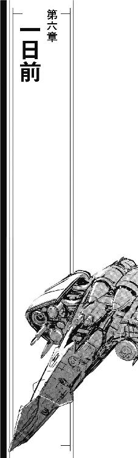
「遅れてごめん！」
ドアが開くと同時に、弁天丸のメインブリッジにチアキが飛び込んできた。
「確実に追跡されてないように回り道してたんで、確認に時間が」
言い訳は途中で途切れた。戦闘体制で暗く照明を落とした弁天丸のメインブリッジに、スペース全てを埋め尽くすような大艦隊が立体表示されていた。
「お取り込み中失礼」
続いて入ってきたリンがおーっと声を上げた。
「これは......ポルト・セルーナの帝国艦隊かい？」
「お帰りなさい」
オブザーバー席から振り向いたジェニーが笑顔を浮かべた。
「さすが、見ただけでよくわかるわね」
「そりゃあこの重苦しい雰囲気見れば」
リンは、弁天丸のブリッジを見廻した。
「このデータは？」
「ポルト・セルーナに先乗りしてもらったサイレント・ウィスパーから」
船長席で立体画像を見上げていた茉莉香が答えた。
「リアルタイムの最新データよ。ポルト・セルーナに、帝国艦隊がこんなに集まってる」
サイレント・ウィスパーからの画像データは、戦闘体制を整えた大艦隊だった。見ただけで錨泊空域に停泊しているのではないとわかる。隊列を整えた大編隊が、上下左右前後に無限に続いていた。
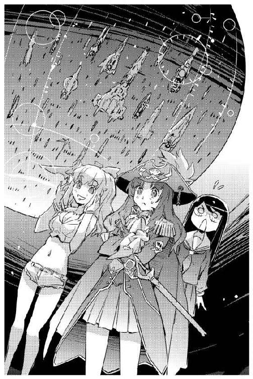
「......数は？」
訊いたチアキに、茉莉香は答えた。
「前にポルト・セルーナに来た時に周辺空域にいた数と比べれば、千隻以上増えてる。サイレント・ウィスパーのクーリエには出来るだけおとなしく情報収集するように言ってあるから、まだおおざっぱなデータしか入ってきてないけど、第五艦隊所属艦六百隻、第一艦隊も四百隻くらいは来てるって」
「統合参謀司令部と艦隊司令部に送った果たし状がばっちり効いたってことだな」
リンは満足げに腕を組んだ。
「で、今度はどうやって仕掛けるんだ？」
「考えてる」
無数に見える艦隊の表示を見たまま、茉莉香は言った。
「とにかく帝国艦隊の数は揃えたんだから、あとはどうやってたう星系に引っ張っていくか考えてる」
茉莉香は、ドッキングしたオデットから乗り移って来たチアキとリンに向き直って笑ってみせた。
「なんかいい手、ある？」
チアキとリンはどちらからともなく顔を見合わせた。
「ほら、統合参謀司令部が第五艦隊と別に情報収集はじめた段階で、先手取ってこっちが早々に代替計画に移行しちゃったじゃない。帝国艦隊の戦力を揃えたのはいいけど、そのあとどうやって皆さんをたう星系にご案内するかまでは考えてなかったのよねえ」
「第七艦隊の指揮通信網に潜り込めば？」
リンは思い付きを口にした。
「それだけじゃ足りないか、第五艦隊の指揮通信網の仕掛けがまだ生きてるかどうか、逆探知が怖いから確認してないけど、同じように統合参謀司令部と第七艦隊の指揮通信網も丸め込めば」
「成功したからって同じ相手に同じ手立て続けに使うと痛い目え見るぜ」
百眼が口を挟んだ。
「幸いにして今までのところはうまく行ってるが、敵は昔も今も、それから未来も銀河最強の戦力であり続けてる帝国艦隊だ。まして、前回仕掛けてからそろそろ一日経ってる。第五艦隊がどうやって引っかき回されたか、調べる時間は充分にあった」
「第七艦隊の指揮通信網は帝国内を担当してる第六艦隊までと違うし」
茉莉香は、映し出されている大艦隊に目を戻した。
「戦線が広い上に事情も違うから、第七艦隊の艦隊指揮は最前線の独断専行による現場指揮ってのが普通でしょ。艦隊司令部の指揮通信網乗っ取ったからって、分散してお仕事中の艦隊はそう簡単に動いてくれないわ」
「......そういやそうだった」
第五艦隊の指揮通信網を乗っ取れるなら、第七艦隊にも同じ手を使って艦隊をたう星系に終結させれば、という案をずいぶん前に自分で提案したのをリンは思い出した。ほんの二日前のことである。
「それじゃ、えーと......」
メインブリッジが静まりかえった。誰も代替案を発言しようとしない。
突然、携帯端末が軽快な呼び出し音を鳴らした。
「ごめん、こっち！」
オブザーバー席のジェニーはあわててサイドポケットに放り込んであった携帯端末の表示を確認した。まだ慣れていない普及品の携帯端末のディスプレイに、相手先は非通知としか表示されていない。
ポルト・セルーナの通信有効圏内だから、ネットワークに接続している弁天丸の船内で公共通信が通じることに不思議はない。しかし、ポルト・セルーナで手に入れた携帯端末のＩＤコードを知っているのは宇宙大学調査船のアテナ・サキュラーだけである。そして、相手がアテナなら呼び出し時に身元を秘匿する必要はない。
「相手不明。出るわ」
船長席の茉莉香に呼び出し音を鳴らし続ける携帯を示して、ジェニーは受話ボタンを押した。ディスプレイに、何重もの秘話回路が設定された通話であることが表示される。
「はい」
ジェニーは、緊張を自覚しながら携帯を耳に当てた。
「ジェニー・ドリトルです」
『リカルド・ユーベルシュタインです』
聞き覚えのある落ち着いた声に、ジェニーは思わず耳から離した携帯のディスプレイを確認した。
「はい、こちらオリオンの海賊船、ジェニー・ドリトルです」
思い出して、携帯の通話内容を開放に設定して、そっちでも聞いてと茉莉香にジェスチャーしながらジェニーは携帯を耳に当て直した。
「帝国銀行頭取の、リカルド・ユーベルシュタインさんですか？」
その名を口にしたとたんに、弁天丸ブリッジの緊張度がはね上がった。携帯の中の相手は、その通話が他にも聞かれているのを承知しているかのように笑みを含んで答えた。
『帝国銀行頭取、リカルド・ユーベルシュタインです。ええ、おかげさまで前にあなたと会った時と立場は変わっていません』
「それは良かった」
少なくとも、今までのオデットと弁天丸の動きによってユーベルシュタインの役職が変わったということはないらしい。
『おめでとうございます。核恒星系の統合参謀司令部から第五艦隊管区でのご活躍、お世辞抜きでこちらの想像以上ですよ』
「ありがとうございます」
ジェニーは素直に答えた。
「ここまで戻って来れたのも、皆さんの協力あってのこと。もうあとひと息で、オリオンに帰れます」
『まだ、足りません』
「え？」
ユーベルシュタインの声に、ジェニーは思わず聞き返した。
『あなた方の活躍はじゅうぶん派手だが、将来の禍根を最小に抑えるために帝国艦隊に気を使っておられる。おかげで、起こした騒ぎの割に艦隊が被った被害は常識外に小さい。現在のままでは、あなた方は帝国艦隊に対する充分な脅威になっていません』
「ええと、つまり」
ジェニーは、ユーベルシュタインの要求の先にあるものを考えてみた。
「もっと艦隊に損害を与えなきゃ駄目ですか？」
『端的に言えば、そういうことになります』
ユーベルシュタインは答えた。
『管区を縦断してきたオリオンの海賊船に対して、統合参謀司令部はポルト・セルーナでの迎撃を司令していますが、残念なことに第七艦隊側の反応が芳しくありません。統合参謀司令部、第五艦隊に関しては情報部が協力してくれたのでオリオンの海賊に関する情報を欺瞞することが出来ましたが、あなた方はポルト・セルーナで第七艦隊と平和裏に接触しています。また、第七艦隊は帝国の版図外で反乱軍と常に実戦状態にあるため、暴れ回る海賊など珍しくない。よって、第七艦隊は帝国内からの脅威情報を過少評価する傾向があるのです』
「第七艦隊を相手にしろと？」
言ってから、ジェニーはユーベルシュタインの意向に気付いた。
「もっと損害を与えろ、と仰るんですね」
『さすが、話が早い。その通りです。あなた方オリオンの海賊は、自分たちの星に逃げ込む前に帝国第七艦隊最後の要塞を叩いて行かなければならない。そこで充分な損害を出さなければ、帝国艦隊はあなた方の文明が見ただけで降服するような充分な大艦隊を送り込めないでしょう』
「仰ることは理解出来ますが」
ジェニーは、話を聞いているはずの茉莉香を船長席に見上げた。アームレストに両肘を付いた茉莉香は両手の指を髪に潜り込ませて今にも唸り出しそうな顔をしている。
「ご存知の通り、我々の戦力は限られています。時間もないので率直にお伺いします。帝国銀行は、この件に関してどれくらいの協力をして下さるのでしょうか？」
通話の向こうで、ユーベルシュタインが楽しそうに笑い出した。
『まったく、話が早くて助かります。ええ、これからわたしが行うことは紛れもない利敵行為だが、情報部がやればもっと問題になってしまう。あなた方の文明圏を我が銀河帝国に加えるための撒き餌だと言っても、ことがすべてうまくいってからでも説得は難しいでしょう』
携帯端末が、聞き覚えのない音を鳴らした。
『第七艦隊は、第五艦隊の要請を受けてあなた方の迎撃計画を作りました。ただし、これはあなた方が送ってきたメッセージ通り、ポルト・セルーナ周辺空域を通過あるいはポルト・セルーナを直接襲う場合のものであり、もしオリオンの海賊が第七艦隊に積極的な接触を行わなければ迎撃は行われません』
ジェニーは、携帯端末のディスプレイを確認した。音声通信とは別に、携帯端末はなにか大きなデータを受信している。
『今そちらに送っているのが、ポルト・セルーナの最新の迎撃態勢と艦隊配置に関する状況です。このデータを有効に使い、ぜひともポルト・セルーナの第七艦隊に痛烈な一撃を与えて頂きたい』
「こっちでも受信してる」
レーダー／センサー席の百眼が言った。
「ポルト・セルーナの迎撃指揮系統と哨戒網、艦隊配置、なるほどこりゃたしかに平時でもこんな情報流したら間違いなくスパイ行為で引っ張られるぜ」
「どうあっても、帝国艦隊と一戦交えさせるおつもりですわね」
ジェニーは携帯の向こうの頭取に言った。
「つまり、今までのところ、オリオンの海賊の企みはうまくいってるんですのね」
『いまのところは』
ユーベルシュタインは認めた。
『しかし、現状では主に帝国が受けた被害に於いて、あなた方の活躍はそれほど大きく認められるものではありません。統合参謀司令部、第五艦隊を引っかき回した手腕はたいしたものですが、しかし今のところそれはテロあるいは自然災害として年度内に幾度か想定される程度のものです。歴史に残るような成果を上げるためには、まだ足りません』
「オリオン腕の併合は歴史に残っても構いませんが、わたしたちは歴史に名前を残す気はありません」
ジェニーはやんわりと指摘した。
「ポルト・セルーナに関する情報は確かに受信しました。役立てることをお約束します」
「ちょっと待って！」
リンが声を上げた。
「ポルト・セルーナだけじゃなくて、オリオン腕方面外側の指揮系統と最新の艦隊配置、それから指揮通信網のデータも！」
「もしも可能なら、もうあとすこしお願いしても大丈夫でしょうか？」
『なんでしょう？』
ジェニーは、リンの言葉を注意深く繰り返した。
「第七艦隊の、オリオン腕方面の指揮系統と最新の艦隊配置、それから、指揮通信網に関する詳細データもお願いします」
返事は少し遅れた。
『......なんですと？』
「ポルト・セルーナ相手に戦争するためには、ポルト・セルーナだけの情報では足りません」
船長席の茉莉香を見上げて、ジェニーは頷いてみせた。
「我々は自分の星まで帰り着くことが出来れば、そこで銀河帝国に対して全面降服します。しかし、そこまではなんとしても逃げ延びなければなりません。しかも、そこまで星間戦争を戦うに足る大艦隊を引っ張っていかなければならないのです。戦闘ならその場の状況だけでなんとかなりますが、戦争するためには周りの情報を知っておく必要があるんです」
『第七艦隊の指揮系統と艦隊配置はすぐにでも用意出来る、しかし指揮通信網に関する詳細データとなると......』
「秘密は守ります」
脅迫ではなく、懇願する口調でジェニーは言った。
「戦闘ではなく、戦争を思い通りに動かすためには、それが必要なのです」
『この通話で約束はできません』
ユーベルシュタインは言った。
『しかし、状況は理解しました。あなた方が必要とする情報を確保出来るか、提供出来るか確認するのに時間がかかります。しばらくお待ちを』
「お願いします」
ジェニーは言った。
「中途半端な情報で戦闘に入ったら、海賊が捕まったり沈められたりするかも知れません。それは、お互いにとって不幸なことだと信じています。もうひとつ、訊きたいことが」
『なんでしょう？』
「この携帯ＩＤを、帝国艦隊は知っているのですか？」
携帯電話の向こうで、ユーベルシュタインは楽しそうに笑った。
『なぜ、あなたの連絡先を帝国銀行が知っているのかよりも、その情報がどれだけ共有されているかを気にしますか。さすが、帝国銀行が交渉するに足る相手だと見込んだだけのことはある』
「恐れ入ります」
『現時点で、あなたの携帯端末のＩＤコードを知っているのはわたしと第七艦隊情報部の第六課だけです。そして、あなた方との密約はまだ生きています。つまり、もしことが成功裏に終われば、この情報はあなた方の存在もろとも封印されるでしょう』
「わかりました」
ジェニーは、なにか聞き逃したことがないか確認するようにブリッジを見廻した。
「次の連絡をお待ちしております」
『よい航海を』
船乗りの決まり文句を口にして、通話は終了した。
ポルト・セルーナを偵察していたサイレント・ウィスパーの帰還よりも早く、第七艦隊の指揮通信網及びオリオン腕方面に関する配置状況のデータが公共回線経由で届いた。
厳重に暗号化され、間違えた鍵を入力すると瞬時に消滅するよう仕掛けられたデータは、百眼によりチェックされた。悪質なウィルスやトラップがないことを確認してから、復号解凍して展開される。
オリオン腕方面に限られているとはいえ、帝国艦隊の配置状況は艦種だけでなく装備補給状況、現在従事中の作戦詳報まで添えられた詳細なものだった。指揮通信網に関しても、ランダム変更される暗号鍵付きの最新版解説付きが添えられている。
「よくこんなデータ寄越したわねー」
弁天丸に着艦したサイレント・ウィスパーからブリッジに戻ってきたクーリエは、電子戦席にセットされていた各種機器をおざなりに除けただけで自分の席に潜り込んだ。
「ここまで精度の高いデータが最初っからあれば、第五艦隊相手の仕事ももっとうまくやれた、だけじゃなくて統合参謀司令部が介入してきても対処出来たんじゃないかしら？」
「本物かい？」
百眼が訊いた。
「こっちゃあ帝国艦隊相手におっかけっこやってたからな、指揮通信網に関しちゃそっちほど勉強してないんだ」
「ほんものなんじゃないの？」
クーリエは、切り換えたディスプレイに指揮通信網に関する基幹データを表示させた。
「第七艦隊ったら担当区が大きい上に艦隊ごとの独断専行が旨だから、他のところといろいろ違うようにしておかないと役に立たないでしょうけど、うん、基幹構造のところが各方面担当司令部向けに多重構造になってるのと、規模が大きくなってるくらいで、第五艦隊と設計思想はだいたい一緒よ。信用していいんじゃないかなあ」
「第七艦隊の指揮通信網かあ」
百眼は、目の前のディスプレイに厳重に絡まる基幹構造を映し出した。
「最高機密だろうによくそんなもの寄越したなあ。それだけ信用されてるってことかい？」
「あたしたちゃ既に第五艦隊の指揮通信網破ってるもの。今さら秘匿したところで、バリエーション程度の違いしかないネットワークならどうせまた破られる。あたしたち相手に守る必要がない機密だって判断しただけじゃない？」
「それじゃあ、やっぱり、クーリエもこのデータは信用されてる証拠じゃないと思うの？」
質問した茉莉香に、シートを引いたクーリエは座面に膝をついてシート越しに船長席を見上げた。
「利用価値の面では充分な信用を得たと思います。未接触空域の海賊が、前にポルト・セルーナで交渉したとおりに中央の戦力を引っ張り出してここまで戻ってきたんです。認めざるを得ないでしょう」
「んー」
「だけどそれは、交渉相手として、銀行がこちらを使える駒だと判断したってことでしかありません」
何か言いたそうな茉莉香に、クーリエは続けた。
「それが証拠に、銀行はわざわざこちらに連絡をとって新たな条件とそのためのデータを寄越してきました」
クーリエのくちもとがにっこり笑った。
「うまく立ち回って、使ってやりましょう」
「悪魔」
小声で呟いて、茉莉香はもう一度ブリッジを見廻した。オデットからはジェニー、リン、チアキだけではなくグリューエルとミーサも戻ってきている。
「シュニッツァー？」
茉莉香は、戦闘指揮席に声をかけた。
「もらったデータを使って、帝国艦隊に可能な限りの損害を与えて逃げるような作戦は立てられる？」
「命令とあらば」
こちらもシートを引いたシュニッツァーは、バックシートに巨大な右手をかけて半身を船長席に向けた。
「だが、船長はそれをしたくないのだろう？」
茉莉香は微笑んだ。
「ありがと、シュニッツァー。おかげでいろいろ言いやすくなったわ」
茉莉香はもう一度、ブリッジに集っているクルーたちの顔を見廻した。
「みんなも聞いたとおり、銀行屋さんはもっと帝国相手に本気になるような損害を与えて実力を見せつけろ、って言いました。でも、わたしはそんな手は打ちたくありません。せっかく、帝国艦隊の損害が最少になるように苦労してここまでやってきたのに、ここで大損害与えたりしたら台無しになっちゃう」
茉莉香の声は、弁天丸の船内だけではなくドッキングしているオデットにも流れている。
「さんざん引っかき回したけど、帝国艦隊はまだオリオンの海賊による大した損害を受けていません。統合参謀司令部が海賊に襲われ、領内で暴れられたけど、それだけ。でも、ここでナンバーズ・フリート七つのうちの三つに大損害与えたら、たう星系まで行って遠征軍の目の前で降服してみせても帝国艦隊が止まらなくなる可能性もあります。海賊らしくないけど、買わなくて済む恨みなら買いたくないってこと」
茉莉香は、ちょっと笑ってみせた。
「その恨みは、あたしたち海賊じゃなくて、あたしたちの文明に向かうかも知れないから。甘いって言われるだろうけど、海賊だからこそみんなの都合考えた大甘でいいと思ってる」
茉莉香は、グリューエルが発言を求めるように控えめに挙手しているのに気付いた。
「なあに、グリューエル？」
「独立戦争終結後の銀河帝国の併合をスムーズに行うために、帝国艦隊に余分な恨みを買いたくないというのは、賢明な方針だと思います」
グリューエルは言った。
「おそらく、それは我々や帝国艦隊だけでなく、植民星連合、宗主星にとってもより安全な、危険の少ない道でしょう。でも、それは同時にこれ以上の戦闘を避けて、平和裏に問題を解決すると言うことでもあります。たぶん、戦うより難しい道です」
「問題を解決したいとはずっと思ってるけど、お互いこれ以上の損害が出ないなら平和裏じゃなくても、少しくらい乱暴でもいいと思ってる」
茉莉香は、笑顔を作って見せた。
「難しいのはわかってるわ。でも、当初の予定通り戦っても、こっちの目的達成の可能性は意外に低くなるんじゃないかしら」
茉莉香は、シュニッツァーに顔を向けた。
「弁天丸の戦闘指揮官として、率直な意見を聞かせてちょうだい。今のわたしたちが、ポルト・セルーナに集まってる帝国艦隊に勝てる可能性って、どれくらい？」
「一割」
シュニッツァーは簡単に答えた。
「第一、第五艦隊は我々の手を知っている。もちろん、今までの作戦も確実なものではないが、それでも五割以上の勝ち目は確保してきたつもりだ」
「一割......」
茉莉香は繰り返した。
「そりゃまたいきなりやばい数字になったもんだわね」
「帝国艦隊と砲火を交してたう星系まで引っ張っていくだけなら、もっと確実な数字を出せる」
シュニッツァーは淡々と説明した。
「現段階で、我々はポルト・セルーナに於ける信用出来る情報も得ている。だが、より多くの損害を与えて勝たなければならないとなると、それだけで戦闘条件が変わってくる。もちろん、敵の状況を分析して勝利確率を上げるのが戦闘指揮を執るものの仕事だ。必要ならばそのための作戦を立案しよう」
「ありがとう、シュニッツァー。でも、わたしたちは帝国艦隊に勝とうと思って銀河帝国の中を跳び廻ってた訳じゃない。最初っから、銀河帝国に降服する予定で、そのための舞台を整えて数を揃えるために出来るだけのことをしてるの。つまり、最終的に帝国艦隊に勝つことは、わたしたちにとって必要じゃない」
「帝国銀行のユーベルシュタイン頭取がわざわざ連絡してきたのも、確実な戦果を得るためよ」
ジェニーは、船長席の茉莉香を見上げていた。
「帝国艦隊の行動原理に照らし合わせると、実際の損害がそれほど出ていないのに過大な戦力を投入することはできない。費用対効果が悪いから。今までは、統合参謀司令部とか第五艦隊司令部の指揮通信網とか、艦隊運営の首根っこに近いところを摑まえて引っ張り回そうとしてたけど、同じ手は第七艦隊には通じない。たぶん、頭取はそういう事を教えてくれたんじゃないかしら」
「危険すぎるんです」
まっすぐジェニーを見て、茉莉香は口を開いた。
「帝国艦隊にもっと損害を与えるってことは、オデットにも弁天丸にも今までより危険な作戦を強いることになります。シュニッツァーが現時点で勝利確率を一割って見積もってるってことは、このあとどれだけ敵の情報を加えてこっちに都合のいい仮定を積み重ねたとしても、その勝率はたぶん三割以上には上がらないと思います。ってことは、オデットか弁天丸のどちらか片方、あるいは両方が大破以上の損害を受ける確率が七割以上になるってことです」
茉莉香はちらりとシュニッツァーを見た。訂正は入らない。
「なんとかなるわよ」
ジェニーはことさら陽気に言った。
「今までだって、そうやってきたんだし」
「今までうまくやって、せっかくここまで来たものを、この先の冒険的な作戦で失いたくありません」
茉莉香はわずかに首を振った。
「オデットや弁天丸が心配だから言ってるんじゃないんです。もちろんそれだって理由のひとつですけど、もし大損害与えて逃げ出したとして、本気になった帝国艦隊に版図外で追いかけられて、たう星系に到着する前に弁天丸やオデットが沈んだら、それですべてがお終いになっちゃいます」
「どっちか片方生き残ってれば、帝国の追撃は続くんじゃないかしら？」
「わたしたちの目的は、期限までに銀河帝国の大戦力をたう星系に連れて行くこと、です」
茉莉香はじっとジェニーを見つめた。
「でも、帝国艦隊の目的は海賊の掃討です。帝国領内なら、実戦経験の少ない帝国艦隊を演習気分で引っ張り回せましたけど、ここは反乱軍と第七艦隊が戦闘中の辺境です。オデットと弁天丸が動けなくなったら、つまり、海賊船を沈めたら、帝国艦隊はそれ以上オリオン腕方面に進出する理由を失う。そしたら、帝国艦隊はたう星系に到達する前に引き揚げるでしょう」
茉莉香は、両手を上げた。
「わたしたちの、負けです」
ちょっとの間反論を考えて、ジェニーも軽く両手を挙げた。
「オデットや弁天丸を沈めたくないっていう情緒的な理由だけで、これ以上の危険な作戦を避けたい、って訳じゃないってことね。わかった、確かに説得力がある」
「ありがとうございます」
「だとすれば、私たちが考えなきゃならないのは、どこの誰を交渉相手にして、それをどこにどうやって引っ張り出さなきゃならないか、ってことね」
腕を組んで、ジェニーは茉莉香に顔を上げた。
「交渉するんでしょ？ どんぱちじゃなくて、話し合いで解決するって考えてるんでしょ？」
「交渉......」
茉莉香は、聞き慣れない言葉のようにオウム返しした。
「やっぱ、それしかないですよねえ？」
「戦うより困難な道です」
グリューエルの声は、場違いなほど明るく聞こえた。
「その代わり、敵にも味方にもこれ以上の損害を出さずに済みます。実戦と違って、やりなおしができるという利点もあります」
「ありがと、グリューエル」
茉莉香は言った。
「少しくらいきつくっても、死ぬよりはマシよ。でも、何回もやりなおしやってる余裕はあんまりないんだ。歴史にある独立戦争の終戦は、明日だから」
「つまり、終戦のための条件付き降服のための交渉を銀河帝国に持ちかける、ってことね」
ジェニーは取るべき方針をまとめて見せた。
「これまでの実績と、オリオン腕の未接触文明の銀河帝国への併合を材料にして銀河帝国の然るべき部所と交渉する。......どこにどうやって交渉申し込むの？」
「今、ポルト・セルーナにあって、たう星に連れて行きたい戦力を指揮出来るところと交渉しようって考えてます」
茉莉香はジェニーに答えた。
「第七艦隊司令部と、第五艦隊司令部、それから統合参謀司令部──他にどこか、ありましたっけ？」
「理想を言えば銀河帝国最上位に位置する聖王家に直接交渉を申し込みたいところだけど、現時点でそんなルートもコネクションもないし、統合参謀司令部なら帝国艦隊の最上位だし、第五艦隊司令部なら知らない仲じゃないし、第七艦隊はこの辺りの元締めだし、いいんじゃないかしら」
「それだけじゃ足りないわね」
口を挟んだのはミーサだった。
「どんぱち始める時にはどっちが勝ってどっちが負けるかなんて九割方決まってるって知ってるでしょ」
「それは、もちろん」
茉莉香は頷いた。
「交渉も同じよ。よっぽど無茶な要求吹っかけるんでない限り、交渉ごとの行方なんて顔合わせる前にはだいたい決まってる。戦闘と違ってものを言うのは火力じゃなくて事前の情報収集と根回しだけど、だからこそ実力以上の逆転が可能になるのは本番のどんぱちと一緒なんだから」
「そっか」
茉莉香の顔がぱあっと輝いた。
「交渉だと思うから難しく考えちゃうんで、戦闘だと思えばいいんだ。電子戦の代わりが情報で、火力の代わりにはったりと演技力、実弾の代わりに言葉使うと思えば、なんとかなるような気がしてきた」
「それだけじゃないでしょ」
ミーサは苦笑いした。
「実戦やる前にやらなきゃならない下準備は、他に何？」
「敵の側の情報収集と状況確認、情報収集は銀行屋さんが廻してきてくれたけど確認は取れてないし、艦隊配置しか解ってない」
「根回しも必要です」
グリューエルが言った。
「今、我々が持っているコネクションは帝国銀行と第七艦隊情報部だけです。方針の転換を連絡し、協力を依頼するのは、早ければ早い方がいいと思いますが」
「連絡は、する」
茉莉香の顔が曇った。
「そうよね、銀行屋さんはがちの戦闘やるつもりで準備に協力してくれてる。方針の変更を伝えるなら、それでこっちに協力してくれるように説得しなきゃならない。交渉はそこからはじめなきゃならない、ってそういうことね」
「交渉がうまく行かない時の代替計画は、どうする？」
落ち着いた声で言ったシュニッツァーに、茉莉香はびしっと親指を立てて見せた。
「その時は、当初の予定通り実力行使しましょう」
「交渉するんじゃないの!?」
船長席の後ろでチアキが声を上げた。
「もちろん、交渉するわよ」
茉莉香は、チアキに向き直った。
「海賊が帝国艦隊相手に交渉するのよ。握手する反対側の手に武器持ってるなんて、お互い様じゃない？」
「戦闘計画まで交渉のテーブルに乗せるつもり!?」
「相手に確実に損害を与えられる作戦をこっちが握ってるほうが、作戦に確実が期せるんじゃないかしら」
茉莉香は頷いた。
「ただし、またプランＢに移行しなきゃならなくなったら、やばいかもね。でも、星いくつもとあたしたちの未来がかかってるんだもの、手段なんか選ばないわ」
「目的のために手段を選ばないと言うためには、選択出来るだけの手段を用意しておく必要があります」
クーリエはコントロール・パネルを叩きはじめた。
「わっかりました、船長。もし司令部相手の交渉がどっかでうまく行かなくなっても、実力で帝国艦隊をたう星にまで引っ張っていく作戦仕込んどきます」
「お願いします。ジェニー先輩、ユーベルシュタイン頭取にもう一度連絡とれますか？」
「え、だって、番号非通知だったし」
はっと気付いて、ジェニーは使い方を覚える気もなかった安端末のディスプレイに指を当てた。ユーベルシュタインからの電話が非通知設定だったのは、通話記録を残さないためかもしれない。だとすれば、送られてきたデータに発信ＩＤが添付されている可能性がある。
連絡先が記されただけのビジネスカードは、送信されてきたデータの中に簡単に発見された。
「取れる。たぶんこれ、執務室直通のホットラインじゃないかしら」
「さて、そうすると、まず銀行屋さんと情報屋さんを納得させるだけの論理展開を組み立てなきゃならない、と」
茉莉香は、どっかと船長席に腰を下ろした。
「弁天丸よりオデット、聞こえてるわよね。そういうことだから、食堂に積んであるおやつ、適当に弁天丸のブリッジに持って来てちょうだい。これから作戦会議です、誰の参加も歓迎します」
超光速ブースターを装備した太陽帆船オデットⅡ世は、予告した時間よりも早くポルト・セルーナ近傍空間にタッチダウンした。
管制空域外だが、防空識別圏内である。オデットは第五艦隊司令部があるガンバルトでも外惑星軌道を遊弋し、指揮通信網と軍用ネットワークへの侵入が帝国艦隊に気付かれる前に超光速跳躍に入って現場を離脱した。
だから、さんざん第一艦隊に追い回された弁天丸ほどには帝国艦隊にはマークされていない。しかし、オデットⅡ世は前回のポルト・セルーナ入港時にオリオンＤ６文明の海賊船オデット号を名乗った宇宙船そのものでもある。
銀河帝国の版図外となるポルト・セルーナでは、航路管制は行われていない。しかし、管制空域の外側とはいえオデットⅡ世のタッチダウン座標は防空識別圏内の奥深くになる。前跳躍現象もタッチダウンも観測されるし、現れた宇宙船がトランスポンダーも発振しない未確認船なら即座に確認のための哨戒機が飛んでくる。
タッチダウンと同時に、オデットⅡ世は銀河帝国の航行法に従ってトランスポンダーを入れた。ただし発信される船籍はたう星海明星を母港とする白凰女学院の練習帆船オデットⅡ世ではない。前回のポルト・セルーナ入港時に正式登録した、オリオンＤ６文明の海賊船オデット号である。
「どお？」
オデットのメインブリッジで、船長席に座る茉莉香はブリッジクルーの顔を見廻した。
「なんか来そう？」
「今のところは大丈夫」
レーダー／センサーに着いているアキが答えた。
「近傍空間に未確認艦なし、哨戒機はいるけどこっち向けに軌道変えたりはしてないわ。中央を襲ったオリオンの海賊とあたしたちの宇宙船ってまだ関連付けされてないのかしら？」
「防空識別圏内とはいえ、ポルト・セルーナまではまだちょっとあるからね」
茉莉香は、ディスプレイ上に表示されたオデットの現在位置を確認した。
「有力な迎撃艦隊をこっちに向けて編成中かも知れないし、こっちに来てる第一、第五艦隊がぶっ跳んで来るかも知れない。でも、タッチダウン直後にいきなり戦艦に囲まれて問答無用で集中砲火なんて展開じゃなくて助かったわ」
茉莉香は、船長席の通信パネルに手を置いた。
「リン部長、準備は出来てますか？」
「ああ、指揮通信網に再侵入、成功した」
「グリューエル、通信状況はどお？」
「超空間通信、安定してます」
通信席のグリューエルが答えた。
「肝心な時に通信が切られるような心配はありません」
「了解。通信回線廻して」
茉莉香は、ヘッドセットを耳にかけてマイクを確認した。ディスプレイ上に表示されている通信状況を確認する。
通信回線は、厳重に保護されている三つの指揮通信網に同時に接続されていた。
茉莉香は、口を開いた。
「こちら、オデット号。オリオンＤ６文明の海賊船オデット号、船長の加藤茉莉香です。今、オデット号船長加藤茉莉香は、銀河帝国艦隊統合参謀司令部、第五艦隊司令部、第七艦隊司令部に同時に通信しています」
茉莉香は、サブモニターに表示されているメモに目を走らせた。伝達すべき必要事項を忘れるわけにはいかない。
「オリオンの海賊は、統合参謀司令部及び麾下の銀河帝国艦隊に対し、休戦を申し入れます」
こちらからの声は、指揮通信網に突然飛び込んできた音声通信の形で処理されているはずである。統合参謀司令部は核恒星系、第五艦隊司令部はガンバルト、第七艦隊司令部はゲゼルブにあり、それぞれ遠く離れている。状況を確認して一番近い艦隊を緊急出動させるにしても、それなりのタイムラグが生じるはずである。
茉莉香は続けた。
「繰り返します。オリオンの海賊は、銀河帝国艦隊に対して休戦を申し入れます。この休戦の申し入れは、降服の交渉のために行うものです。我々オリオンＤ６文明は、条件付きで銀河帝国艦隊に降服する用意があります。本船は、前回ポルト・セルーナに入港した時同様に対艦兵装を装備していません。銀河帝国艦隊がオリオンの海賊との休戦を受け入れ、条件付き降服のための交渉に応じてくれることを期待します」
茉莉香は、通信モニターに目を走らせた。こちらから一方的に割り込んだ指揮通信網だからか、まだどこからも直接の返信はない。茉莉香はサブモニターの必要事項を確認した。
「こちらのメッセージがリアルタイムで聞かれているか、それともあとから再生されるのかは解りませんが、この通信は統合参謀司令部、第五艦隊、第七艦隊の指揮通信網を使わせてもらっています。もし、こちらからの休戦の申し出が受け入れられず、このオデット号が帝国艦隊による攻撃、もしくはそれに相当する実力行使を受けた場合、我々は銀河帝国艦隊に休戦が受け入れられなかったものと判断し、こちらの目的達成のために対抗手段をとらざるを得ません」
サブモニターの項目を確認しながら、茉莉香は一度言葉を句切った。
「海賊船オデットは、銀河帝国艦隊と戦うためではなく、交渉を行うためにここまで来ました。艦隊が交渉に応じて下さることを希望します。それともうひとつ、このメッセージは統合参謀司令部、第五艦隊、第七艦隊に送っていますが、交渉のための窓口は帝国艦隊で一元化してください。我々は、自分の世界の未来のためにここに来ました。帝国艦隊が休戦を受け入れ、条件付き降服交渉が互いに納得出来るものになることによって、我々の未来が銀河帝国同様に輝かしいものになることを期待します」
茉莉香は、サブモニターに表示されている項目をもう一度チェックした。今回の呼び掛けで伝えるべき項目に洩れはない。
「海賊船オデット号の現在位置は、ポルト・セルーナ近郊、防空識別圏内です。海賊船オデット号は、これより通常航行でポルト・セルーナに向かいます。銀河帝国艦隊の返答をお待ちしています」
サブモニターのメモを見て、茉莉香はブリッジを見廻した。
「こちら、オリオンの海賊船オデット、船長の加藤茉莉香です。通信を終わります」
「通信終了！」
リンが告げた。
「指揮通信網に対する通信設定全解除、追跡も逆探知もされないように、逆探知や乗っ取りも仕掛けられないようにきれいさっぱり足跡消してけ！」
「少しもったいない気もします」
超空間回線の設定をきれいさっぱり消去しながら、グリューエルは言った。
「帝国艦隊を指揮する中枢へのホットラインなど、そう簡単に設定出来るものでもありませんのに」
「まあ苦労したけどな」
一気に全部の処理を行ったリンは、やり残しや見逃しがないかどうか電子戦席のディスプレイを見廻した。
「だけど、手間のかかる仕掛けや設定をメッセージ送付だけであっさり使い捨てて見せることが、相手に対する存在感になる。厳重に保護されてるはずの指揮通信網の中にいきなり部外者が勝手なメッセージ送ってきただけでも司令部にとっちゃけっこーショックだと思うが、後追いの調査で再利用するための隠し扉も抜け穴もなんにも見つからないってほうが嫌なはずなんだ。それに、また指揮通信網に仕掛けなきゃならないとなったら今度は平和目的じゃない」
リンはコントロール・パネルを叩きはじめた。
「これからの交渉が失敗して、帝国の大艦隊相手に実力行使に出なきゃならない時だ。そしたら、やっぱり対策されてる可能性がある前の仕掛けなんか危なっかしくて使えない」
「動きは？」
茉莉香は訊いた。
「ポルト・セルーナ及び周辺の艦隊になにか、動きはある？」
「まだ、なにもなし」
レーダー／センサー席のチアキが答えた。
「辺境担当の第七艦隊なら動きも反応も早いと思うけど、いっくらなんでも特別ルートで休戦申し出たからって、そうそうすぐ海賊に緊急迎撃かけるような判断は出来ないでしょう」
「早くしてもらわないと、困るのよ」
茉莉香は、ディスプレイに表示された最新の観測データを見た。
「条件付き降服交渉申し出たのはいいけど、明日までに帝国艦隊をたう星に連れて行かなきゃならないんだから」
「オデットは海賊船だってトランスポンダーを発振してるんだから、管制局はとっくにここに海賊船がいるってわかってるはず」
副長席のジェニーも、ポルト・セルーナ周辺の艦隊の動きを見ている。
「帝国艦隊がまともに動いてるなら、核恒星系と東銀河で暴れてきたオリオンの海賊と同じ旗の海賊船が来たらいきなり迎撃されたっておかしくないんだから。ましてや、こっちは目の前の艦隊からすれば回りくどい指揮通信網経由とはいえ休戦を持ちかけて、同じオリオンの海賊だってことを認めてる。にもかかわらず、緊急迎撃もなければ巡視艇からの呼び出しもかからないってことは、つまり......」
「少なくとも、ポルト・セルーナの艦隊司令部は、まだ我々の扱いを取り決めかねているということではないでしょうか」
通信席のグリューエルが言った。回線は通常通信も超光速回線も開いているが、まだ名指しの通信は来ていない。
「希望的観測にしか過ぎませんが、少なくとも今の段階では、我々の取り扱いが司令部で検討されている、つまりこちらの予定通りにものごとが進行していると考えていいのではないのでしょうか？」
オデットⅡ世は、船長をチアキから再び加藤茉莉香に替えてポルト・セルーナに戻ってきた。指揮通信網の奥深くに置いてきた果たし状の時刻通りに現れて休戦を申し入れ、さらに交渉を行うための宇宙船に弁天丸ではなくオデットⅡ世が選ばれた理由は単純である。
もし交渉が決裂した場合、武装がある弁天丸が動ける方が自由度が高い。
オデットは前にポルト・セルーナに入港したこともあり、管制局とも接触し、乗組員が上陸した実績もある。帝国艦隊による臨検を受けたこともあり、説明も最低限で済むはずである。
いっさいの武装は搭載されていないが、休戦を申し込むなら予想される火器への封印をする必要もない。
予想される限りの事態への対応とさまざまな展開を考慮した結果、銀河帝国艦隊との降服交渉に出ていくのはオデット、それが不調に終わった時のために裏で準備を続けるのが弁天丸という役割が決定された。
かくして、茉莉香麾下のオデットⅡ世は、成功しても失敗しても最後になるはずの帝国艦隊相手のミッションに出撃したのである。
「こっちの取り扱いをあっちで相談してくれてるならいいんだけど」
茉莉香は、星図上に表示されているポルト・セルーナのシンボルに目をやった。
「あんまり時間かけてもらっても困るのよねえ。あっちからの返答が遅れるようだったら、こんどは時間制限付きのメッセージ送らなきゃならない。それこそ脅迫みたいなことになるから、これ以上悪いことしたくないんだけどなあ」
「掃討戦争以来最大の騒ぎを起こしてる海賊船の船長が、いまさら何いってるのよ」
チアキの台詞に、ブリッジがどっと沸いた。
「とりあえず目の前の予定は決まってるんだから、船長席でどっしり構えてなさい！」
「はあい」
船長席の茉莉香は素直に返事をした。
管制空域に進入すると同時に、オデットはポルト・セルーナの管制局から呼び出された。
呼び出しは管制局からだが、通信モニターに出て来たのはどう見ても管制官ではない。艦隊の制服を着た士官は、機械的に必要事項を伝えた。
オデットの、ポルト・セルーナの管制空域への侵入は許可。
臨検と、事前交渉のために、揚陸艦による護衛と連絡艇の接舷、帝国艦隊からの調査団と交渉団の乗り込みが打診された。
茉莉香は、要求がポルト・セルーナ管制局からのものでも、第七艦隊司令部からのものでもなく、銀河帝国艦隊を代表して行われていることを確認した。
管制局から提供されたデータによれば、オデットの護衛のために派遣されるのは機動巡洋艦六隻の艦隊、ドッキングのために接近するのは強襲揚陸艦カオシュン。
「機動巡洋艦六隻ってのは前回より大仰だけど、目の前に出てくるのは前回と同じ強襲揚陸艦で、調査団乗せてこっちに来るのも同じ連絡艇か」
全船で共有された管制局からのデータを見て、リンが言った。
「こっちがやりやすいように、前回の臨検と同じメンバー揃えたのかな？」
「それだけじゃないわ」
チアキは、難しい顔で乗船予定の臨検隊と調査団の名簿を見ている。
「オデットに乗り込んだ経験のある陸戦隊なら、調査も対応も早いっていうのももちろんあるでしょうけど、前回と同じキース隊ってことは、あっちも出来るだけこっちに新規の情報出さないようにしてるんじゃないかしら」
「こっちに、だけじゃないと思う」
茉莉香は、ポルト・セルーナ周辺に終結している第一艦隊、第五艦隊の状況を確認した。
「こちらからの要求を指揮通信網で行ったのは、それを首脳部だけに伝えて艦隊には知らせないようにするため。いくら帝国艦隊でも、襲撃予告受けて長駆跳んできたのにいきなり休戦だの降服交渉だの目の前ではじめられたら、統制がとりきれるかどうか信用できなかったからなんだけど」
茉莉香は、ブリッジに顔を上げた。
「管制局から臨検要求と調査団乗り込みが来て、他の艦隊が全然動いてないってことは、少なくとも司令部はこっちと交渉する気があるってことよ」
茉莉香は、無理目の笑顔を作って見せた。
「この作戦、勝ったわね」
「無理しちゃって、まあ」
ブリッジのどよめきを聞きながら、チアキは自信満々に振舞う茉莉香の横顔を見上げていた。
「ここまでほとんど休みなしだから、乗組員を無駄に緊張させるよりはリラックスさせるほうがいいのは確かなんだけど......」
チアキは、対面式に配置されているオデットのメインブリッジで同じレベルにある通信士席のグリューエルが心配そうな顔で茉莉香を見上げているのに気付いた。副長席のジェニーも、電子戦席のリンも笑っていない。
チアキの視線に気付いたグリューエルがこちらを見た。チアキの顔を見たグリューエルは、にっこり笑って頷いてみせた。チアキは、苦笑いして頷き返した。
「はい、はい。船長が無理してるなら、倒れないように支えるのもこっちのお仕事よね」
「帝国第七艦隊所属、強襲揚陸艦カオシュンから通信が入りました」
グリューエルが伝えた。
「強行突入艇のドッキング許可を求めています」
「もちろん許可！」
茉莉香は伝えた。
「前回と同じ左舷デッキでお待ちしていますって伝えて」
増加装甲を追加装備した強行突入艇は、前回のように周回してオデットの状況を確認する手間はかけなかった。戦闘用らしい無駄のない機動で最短距離で太陽帆船に接近し、前回同様の手順でフレキシブルチューブの先の金属ゴムアダプターをドッキングハッチに接合する。
「二度目とはいえ、手際いいわねー」
オデットはすべての推進機構を切って慣性航行中、自分からは動いていない。船外モニターに映し出される強行突入艇のてきぱきとしたドッキングを見て、チアキは感心したように言った。
「敵艦に斬り込むのが任務の強行突入艇とはいえ、さすが、海賊並みだわ」
「今回はあちらさんも、実戦モードってことよね」
茉莉香はなんでもなさそうに言った。
「こっちは前回と同じように対応して。見たい、確認したいっていうところがあればいちいちブリッジに確認とらなくていいからご案内してさしあげて」
舷側のドッキングデッキで待機している出迎えのヨット部員に伝える。
「それから、乗り込んできた臨検隊のみなさんがどんな要求しても決して抵抗しないように。ないとは思うけど、銃とか突き付けられたらすぐ降服するのよ。相手は戦闘のプロ、正面からぶつかったらどうやったって勝てっこないんだから」
『了解でーす』
出迎え隊の指揮を執っているベリンダが、ドッキングデッキから答えた。
『ハッチ、開きまーす』
内圧分布や大気組成確認などの手順は型通りだけで、オデット側のドッキングハッチが開いた。
ハッチの向こう側に、かつてオデットに乗り込んだのと同じ白い装甲宇宙服の一団がいた。
「武器を持ってない」
茉莉香はほっとしたように呟いた。全身に武器を装備している陸戦隊だが、戦闘の意図がないことを示すように全員の両手は空いている。
先頭の隊長のフェイスシールドは開いていた。
『帝国第七艦隊強襲揚陸艦カオシュン、第２８５１偵察部隊キース隊のキース隊長です』
敬礼した白い装甲宇宙服は、前回と同じ挨拶をした。
『オデット号への乗船を許可いただき、感謝します』
『臨検隊と交渉団の乗船を歓迎します』
ドッキングデッキのモニターの中で、ベリンダは敬礼を返さずに陸戦隊に一礼した。
『ご案内が不要なら、臨検隊の行動はいっさい制限しませんので、どうぞ好きなところに行って下さい。ご案内が必要なら、どこでもお見せします』
『ご協力に感謝します』
『交渉団の方々は、奥へどうぞ』
ベリンダは、センターシャフトの方向へ腕を差し上げた。
『メインブリッジにご案内します。海賊船オデット号船長、加藤茉莉香が交渉団の方々をお待ちしています』
「オデット号、メインブリッジへようこそ」
茉莉香は、出来る限り平静を装って無重量状態のブリッジに現れた交渉団に挨拶した。
「船長の、加藤茉莉香です」
「オデット号への乗船許可を感謝します」
軍服姿の情報士官は、無表情なまま船長席の茉莉香に敬礼を返した。
「銀河帝国艦隊を代表して、オリオンＤ６文明との全権交渉の会談準備のためにお伺いしました。帝国第七艦隊情報部第六課課長、７６１です」
茉莉香は、管制局からオデットに送られてきた交渉団の名簿に目を走らせた。乗り込んできた交渉団は四人、情報部第六課課長の７６１と記録のための秘書官、情報官、司令部とオデットの装備を介さずに連絡を取るための装備を背負った装甲服の通信兵である。
秘書官、情報官、通信兵の三人の顔を見廻してから、茉莉香は７６１の顔に目を戻した。
「現時点で、本船は内外にいかなる通信妨害も行っていません。必要ならばこちらの通信設備をお貸ししますが、こちらからなにか協力出来ることはありますか？」
モニターしている限り、交渉団の通信兵はオデットへの乗船以後外部との通信を行っていない。
「今はまだ、不必要です」
７６１は片手を挙げて言った。
「将来どういう編纂がなされるかまだ確実なことは言えませんが、これが公式には帝国艦隊とオリオンの海賊との最初の正式な接触になるでしょう。ついては、正式な交渉に入る前に改めて確認しなければならないことがあります」
７６１は、女子だけで固められたオデットのメインブリッジをぐるりと見廻した。
「我々交渉団と臨検隊の乗船後の言動と行動はすべて記録されています。ただし、将来的にそれがどれだけ公開されるか、あるいは公開が制限されるか、または記録そのものが存在しないことにされるか、それはまだわかりません。つまり、我々はまだ編集可能な記録の中にいます」
７６１は、船長席の茉莉香に目を戻した。
「......大活躍しましたね」
その意味を問い返さずに、茉莉香は深く頷いて答えた。
「うちの海賊は、みんな優秀なんです」
「厄介な敵を迎えて、統合参謀司令部をはじめとする帝国艦隊はその対応に苦慮しています。まずは、核恒星系から東銀河を渡って帝国艦隊に打撃を与え続けた、その手際に感服します」
白手袋を着けた右手を礼装の軍服の胸に当てて、７６１は頭を垂れた。
「やっぱり......」
ジェニーが小さな声で呟いた。
「情報部には大根役者しかいない、だからなにを考えているのかさっぱりわからないって聞いたことあるけど、こんな芝居っ気のある情報部員もいるんだ......」
「帝国の版図外でまつろわぬものを相手にしなければならない第七艦隊、それもあまりうまく行っていない連中と付き合わなければならない第六課ですからね」
７６１はジェニーに向いて言った。
「あなた方に負けず劣らず、優秀な人材を揃えていると自負しております」
ブリッジがどっと沸いた。ジェニーは、冗談をいうだけではなく、受けを取っても眉ひとつ動かさない第六課課長をじっと見ている。
気にする様子もなく、７６１は船長席の茉莉香に目を戻した。
「帝国艦隊としての前提状況を説明させて頂きます。まず、帝国艦隊は海賊とは取引をしない」
言葉を句切って、７６１はもう一度ブリッジを見廻した。抗議の声ひとつ上がらない。
「帝国内から海賊を一掃した掃討戦争の前も後も、これが帝国艦隊の基本方針です」
「存じています」
茉莉香は、落ち着いた声で答えた。
「では、どうすればいいですか？」
「手段はどうあれ、海賊を名乗ったメッセージを指揮通信網の中だけに限って置いていってくださったことには感謝しなければなりますまい。おかげで、統合参謀司令部も艦隊司令部も自ら海賊を名乗るものとこうやって交渉の真似事をすることに対して、艦隊の内外に余計な説明をせずに済む」
「真似事だなんて」
茉莉香はやんわり微笑んだ。
「これでも、帝国艦隊と実のある交渉が出来るように必死なんですのよ。それに、次の呼び掛けは通常通信で行うつもりでした」
茉莉香は、船長服の内懐から、懐中時計を取り出して見せた。
「ご存知の通り、我々に残されている時間は限られていますから」
「承知しています」
７６１は頷いてみせた。
「理性的に作戦を進めて下さって、第七艦隊としては感謝しています。だからこそ、ここで全艦隊に対する呼び掛けなどという派手な作戦を行う前に接触させて頂きました。今、あなた方の宇宙船オデット号は管制の指示に従ってポルト・セルーナに接近中、強襲揚陸艦を含む七隻の護衛は未接触文明の宇宙船に対するものとしてはちょっと厳重ですが、ここではそれほど珍しい体制ではありません。近傍空域で待機中の帝国艦隊がこちらに注意を向けないよう、護衛の巡洋艦にも戦闘体制を取らないように指示しています」
「確認しています」
茉莉香は、ディスプレイに目を走らせた。強襲揚陸艦カオシュンも、周囲の六隻の重巡洋艦も、通常航行に必要最低限のレーダーしかオデットに照射しておらず、エネルギー反応もそれほど上がっていない。重巡洋艦が装備している艦砲も通常航行体制のまま固定されており、砲塔も砲身もオデットに向けられてはいない。
「お互いに取れる手はいくらでもあるが、我々が乗り込んできたことを以て帝国艦隊は平和裏にあなた方と接触を持つことを希望しているということを理解頂けますか？」
「了解しました」
茉莉香は頷いた。
「こちらは、帝国艦隊が要求した臨検隊及び交渉団を無条件で本船に乗船させました。また、本船は現在ポルト・セルーナ管制の指示に従って航行中です。こちらも平和裏の接触を持ち、交渉を望んでいるという状況はこれで証明出来たと思っていいですか？」
「少なくとも、オデット号が艦隊の護衛を受けてこちらの指示に従っており、なおかつオリオンの海賊に他の動きが見えない限りは、あなた方は信用されるでしょう。もっとも、その信用は、お互いに言葉が通じて、予告もなしに実力に訴えないだろうという互いの願望を含んだ不確かなものでしかありません」
「交渉を行うには充分だと思います」
「互いの立場を尊重しましょう。では、交渉が終わるまでの間、こちらからの指示のない通信は控えて頂けますか？ 相手がどこであり、内容が何であれ、それは傍聴される可能性があります。その代わり、こちらの指示に従っている限り、あなた方の安全は保たれるでしょう」
「約束は出来ませんが、状況は了解しました」
茉莉香は言った。
「もしなにか通信の必要が発生したら、それについては交渉準備のために乗り込んできたあなた方に相談するということで、よろしいですか？」
「充分です。では、次の件です」
７６１は次のカードを切った。
「前回、ポルト・セルーナの帝国銀行でお会いした時、これから先の展開がどうなるにせよ、あなた方は自分たちの存在と行動が秘匿されることを望んだ。それについては、今も変化はありませんか？」
「ありません」
茉莉香ははっきりと肯定した。
「この交渉がどんな結果に終わるかに関わらず、オリオンの海賊が銀河帝国を敵として戦った記録は未来永劫秘匿されることを望みます」
「前回お会いした時には、海賊の要求にしてはずいぶん控えめかつ簡単な条件だと考えました。今はだいぶ状況が変わりましたが、ええ、まだ、状況を秘匿することは可能だと我々は考えています。ただし、協力して頂きたいことがあります」
「なんでしょう？」
「先ほどもお伝えしたとおり、帝国艦隊は海賊とは取引しません」
７６１は、ブリッジがあいかわらず静かなのを見て続けた。
「厳密に言えば、あなた方も帝国艦隊が定義する海賊ではない。行政府を含む公的機関から私掠船免状を発行された武装商船であり、民間籍とはいえ義勇兵であり、そして、オリオンＤ６文明の半分の勢力しか署名していないとはいえ有効な降伏調印文書を所持している全権使節団だ」
７６１は、ゆっくりとブリッジクルーたちの顔を見廻した。
「帝国艦隊は海賊とは取引しない。よって、あなた方は海賊ではない。それでいいですか？」
「その場合、もうひとつの要求はどうなりますか？」
茉莉香は、７６１の目を見たまま質問した。
「前回お会いした時は、民間船に交付された私掠船免状による海賊の存続を帝国が認めるようにお願いしました。帝国が海賊と取引せず、我々が海賊でないと認めた場合、存在しない海賊の存続は認められない、そんな論理展開を心配する必要はありますか？」
「言葉の解釈について議論する気はありません」
無表情なまま、７６１は言った。
「もし、すべてがうまく行って、あなた方の文明が銀河帝国に編入された場合は、他の文明同様に自治が認められるはずです。その場合、帝国は新しく加わった文明の理念や意義、法理体系にについて細かく口出しすることはありません。あなた方の文明により定義される私掠船が帝国の定義する海賊と一致しない限り、帝国はその存続あるいは廃止に興味を持たないでしょう」
７６１はくちもとを歪めた。
「それをあなた方が海賊と呼ぶか、それとも別の名前で呼ぶかどうかは、帝国の関知する問題ではありません」
それが笑顔に見えて、ジェニーは目を疑った。
「何事にも例外はあるものです。例えば、帝国内から海賊が掃討されても、保険会社はいまだに海賊保険を売っていますが、帝国はその販売を禁止していません」
ブリッジに静かな笑いが拡がった。
「わかりました」
茉莉香は、ちらりとグリューエルを見た。グリューエルは黙って頷いた。
「では、これ以降、我々はオリオンの海賊ではなく、オリオンＤ６文明の植民星連合の全権使節として帝国艦隊と交渉します。これで、いいんですか？」
「こちらの都合に合わせてくださって、感謝します」
７６１は一礼した。
「もうひとつ、あらかじめ予告しておかなければならないことがあります」
７６１は淡々と言った。
「全てを秘密裏に処理するということは、つまり事後になにか齟齬があったとしてもあなた方の責任を追及するわけには行かないということです。事前に、予測可能なすべての事象について話し合っておく必要があると考えています」
「望むところです」
茉莉香は応えた。
「銀河帝国にとっても、我々にとっても、それは必要なことだと信じます」
「よろしい。では本題に入りましょう。オリオンＤ６文明の半分を代表する植民星連合として、銀河帝国に降服する条件についてです」
７６１は、背後に控えていた情報官に合図した。情報官は持っていたブリーフケースをファイルのように開いた。
「あなた方の文明は、現在二大勢力に分かれて星間戦争中であり、しかもあなた方の陣営が本拠地とする星系での最終決戦が迫っている。そうですね？」
「そうです」
茉莉香は頷いた。その辺りまでは前回、ポルト・セルーナの帝国銀行で説明したし、関連資料も渡してある。
「降服の条件としては、現在あなた方の本拠地、オリオン腕鯨座宮たう星系に、双方の陣営を圧倒出来るだけの戦力を集結させること。そのために、あなた方は我々帝国艦隊と接触し、核恒星系にまで攻め込んだ」
情報官が開いたファイルを一時停止するように手を挙げ、７６１は船長席の茉莉香に視線を向けた。
「本題に入る前にひとつお訊きしたいのだが、なぜここまで来て、攻撃予告まで行ったポルト・セルーナを奇襲せず、条件付き降服交渉などというややこしい手を取る気になったのですか？」
「いちばん確実と思える手段を選択しただけです」
茉莉香は７６１をじっと見つめた。
「この作戦には、我々の星の未来がかかっています。戦闘的手段を取るということは、多かれ少なかれギャンブルのような冒険的な手段を取るということになります。我々のことをよく知らないはずの統合参謀司令部や第五艦隊司令部には、幸運なことに優勢に作戦を進めることが出来ました。しかし、未接触文明と戦い慣れている第七艦隊に、似たような戦術が通用するかどうかはわかりません。また、事前に接触したとはいえ第七艦隊の情報部、あるいは第七艦隊がどれほど我々に協力的か、非協力的かもわかりません。普通に考えれば、銀河帝国内で暴れてきた海賊に第七艦隊が協力するとなれば、それはどんな形であれ利敵行為になります。それと、もうひとつ、ご存知だと思いますが、帝国銀行ポルト・セルーナ支店のリカルド・ユーベルシュタイン頭取から連絡を頂きました」
表情も変えず、７６１はジェニーに視線を送った。ユーベルシュタインは、情報部もジェニーの携帯端末のＩＤ番号を知っていると言っていた。
「ユーベルシュタイン頭取からは、我々が帝国に与えた被害が少なすぎるとの助言を頂きました。戦闘の規模に比べて被害が少ないから、第七艦隊を相手にする時にはもっと大規模な被害を与えないと帝国艦隊を本気にさせられないだろうと」
茉莉香は、黙って聞いている７６１とその表情を観察しているグリューエルを見て続けた。
「銀行だから、被害算定の数字はすぐに出てくるでしょうけれど、その数字から艦隊の行動を予測するのは銀行屋さんの仕事じゃありません。情報部が戦果と迎撃規模を予測したのかと思って、情報部の協力がなければ出せないであろう資料をお願いしてみました」
茉莉香はにっこりと笑った。
「おかげで、統合参謀司令部と第五艦隊司令部だけじゃなくて、第七艦隊の指揮通信網にもメッセージを送ることが出来ました。そして、もうひとつ、この件に関して我々は情報部に信用されていると確信を得ることが出来ました。だから、降服交渉を持ちかけても受け入れられる可能性が高いと判断しました。休戦と降服交渉を受け入れて下さったことについて、感謝しています」
「......なるほど」
「もうひとつ、こちらからも本題に入る前にひとつ提案したいことがあります」
船長席の茉莉香は背筋を伸ばした。７６１は無表情のまま訊く。
「なんでしょう？」
「これからはじまる準備交渉に、守秘義務を宣誓した第三者の立ち会いを求めてもよろしいでしょうか？」
７６１はわずかに首を動かした。
「......誰のことです？」
視線は、通信席のグリューエルに向いた。視線に気付いたグリューエルはやんわりと首を振った。
「第三者は既にある程度の事情を知っており、この件に関する予備知識も持っています。しかし、帝国艦隊が立会人の守秘義務を信用出来ないのであれば、我々はこれからの交渉を立会人抜きで進める用意があります」
「誰です？」
あいかわらず無表情のまま、７６１は訊いた。茉莉香は確認した。
「ここに呼んでもいいですか？」
７６１は答えなかった。無言を了解と解釈して、茉莉香はジェニーに向いた。
「ジェニー先輩、お願いします」
「はあい」
副長席のジェニーは、通信パネルを叩いた。
「お待たせしました、どうぞブリッジへ来て下さい」
ほどなく、一年生のヨット部員に案内されて濃紺の髪の長命種がブリッジに現れた。
わずかに目を見開いた７６１に、調査隊員の制服を着たショートカットのメトセラは挨拶した。
「はじめまして、になりますわね。宇宙大学所属、調査船キュリオシティでオリオンＤ６文明の調査を行っていました。アテナ・サキュラーです」
７６１は、宇宙大学調査隊の制服を着た長命種をまじまじと見つめた。
「ＩＤを確認させてもらってもよろしいですか？」
「どうぞ」
アテナは、左手を挙げて中指の飾り気のない金属リングを見せた。ブリーフケースをファイルに拡げていた情報官が、モードを切り換える。
「こちらに手を載せて下さい」
言われるままに、アテナはファイルの内側のディスプレイに掌を載せた。生体データと指輪の中のＩＤデータが照合される。
「宇宙大学、辺境民俗学歴史学科、シュワンツ研究室調査員、アテナ・サキュラー」
情報官は、照合結果を表示したディスプレイを７６１に向けた。
「確認取れました」
ディスプレイを見て、７６１はアテナに目を戻した。
「失礼しました。こちらのＩＤもチェックなさいますか？」
「不要です」
アテナは短く言った。
「先にそちらが確認したいことを言っておきます。わたしは、オリオンの海賊の依頼により、学術的興味によってこの宇宙船に乗り込みました。帝国艦隊とオリオンの海賊との交渉についてありのままを観察するのがわたしの希望です。その結果の取り扱いについては、帝国艦隊の指示に従う用意があります」
「辺境民俗の歴史学ですか」
７６１は、もう一度情報官の持つディスプレイにちらりと目を走らせた。
「歴史というのは、もっと過去のことを学ぶ学問だと思っていました」
「宇宙大学で辺境調査を行えば、さまざまな文明度のさまざまな種族を観察する機会に恵まれます」
アテナは、ブリッジクルーたちにちらりと目をくれた。
「彼女達は、これからまさに歴史が作られるところに立ち会うチャンスをくれました。仮に一切の発表が許されないとしても、こんな貴重な経験を逃すようでは宇宙大学に在籍している資格はありません」
「しかし、報告書も論文も発表出来ないとなれば、宇宙大学にとってどんなメリットがあるのです？」
「宇宙大学は、調査員に貴重な経験をさせることができます。そして、未来永劫公開されず、存在することすら秘密になっている報告書は宇宙大学にも山のようにあります」
「今確認して頂いたように、立会人は銀河帝国の宇宙大学の職員です」
副長席のジェニーが言った。
「銀河帝国の公的機関の職員にこれからの交渉についての立会人をお願いしようと思っているのですが、帝国艦隊にはこれを了解して貰えますか？」
「なるほど、これは断りにくい」
７６１は、視線をアテナからジェニーに移した。
「宇宙大学の調査船キュリオシティは、つい最近はオリオン腕の未接触宙域で調査活動を行っていたと聞いています」
「さすが情報部。よくご存じですわね」
「立会人は、銀河帝国だけでなくオリオン腕の状況にも通じていると考えて間違いありませんか？」
「辺境を専門とする情報部には遠く及びませんわ」
アテナは笑みを浮かべて答えた。
「立会人の件ですが」
７６１は、茉莉香に目を戻した。
「これはまだ正式な会談の前の準備交渉です。出来れば部外者の参加は避けたいところですが、もとより我々帝国艦隊はあなた方の宇宙船の乗組員名簿も、その出身地に関するデータも揃えていない。もし、あなた方が銀河帝国市民を乗組員に加えていたとしても、我々にはその同席を拒否する権利はないし、おそらくその必要もないでしょう」
７６１は、アテナを見て言った。
「この準備交渉が順調に終われば、次は銀河帝国の然るべき代表団があなた方のお相手をするはずです。代表団がわたしと同じ判断をするかどうかはもちろん保証出来ませんが、少なくともわたしは立会人の同席を拒否しようとは考えません」
「感謝します」
茉莉香は、アテナに目をやった。
「では、我々はアテナ・サキュラーさんに今回の立会人をお願いします」
「お手柔らかに」
７６１は、情報官に合図を送った。
「では、本題に入りましょう。まず最初に、あなた方の戦争についての状況を確認させて下さい」
情報官は、ファイルを大きく開いた。
「これが、立体図表で帝国が確認したオリオン腕の状況です」
星図が映し出された。鯨座宮のたう星だけではない。宗主星を端緒としてオリオン腕に拡がった茉莉香たちの文明、宗主星と植民星連合双方の星系を含んでいる。
「便宜上、あなた方の文明は宇宙大学の呼称に従ってオリオンＤ６文明と呼ばせて頂きます。あなた方が現在戦っている星間戦争については、宗主星とあなたがた植民星連合双方で呼称が違うので、こちらではまとめてオリオン統合戦争と呼称しています」
「これは......まさか」
茉莉香は、映し出された星図と７６１が説明した状況が意味することに気付いた。
「第七艦隊が、自らオリオンＤ６文明の最新状況を確認したのですか？」
「あなた方が銀河帝国の中央まで出掛けていた間、わたしたちも遊んでいたわけではありません。幸いにして宇宙大学がオリオン腕における戦争に関する信頼度の高い情報をまとめており、また未接触の文明といえども間接的に確認するルートはいくつもあります。第七艦隊の艦艇を直接下見に廻らせるのはちょっと骨でしたが、あなたたちが統合参謀司令部まで行って大活躍してからは楽になりました。中央から、オリオンの海賊を擁する未接触文明についての情報収集を密にせよとの指令が下りましたので」
茉莉香は、映し出された星図を見直した。独立戦争終結後に銀河帝国に加盟する形で併合されたかつての宗主星、植民星連合を含む星系がきっちり全部網羅されている。
「では、第七艦隊は独立戦争についても」
茉莉香は、咳払いして言い直した。
「オリオン統合戦争について、最新の状況を把握しているのですね？」
「最新ではありますが、精度は高いとは言えません」
７６１は、星図に重ねるように細かい無数の輝点を重ねた。
「調査に割ける艦艇の数は限られていますから。しかし、事前にそちらから提出されたオリオンＤ６文明の艦艇配置に関するデータは大いに役に立ちました。これは、現在第七艦隊が手に入れられるすべてのデータを重ね合わせた最新版です」
「......たぶん、どちらの陣営もこれほど精度の高いデータは持っていないでしょう」
茉莉香は正直に言った。ジェニーはもっと精度の高いデータを持っているが、それは戦後の記録から編み出したものである。宗主星も植民星連合も、互いの戦力や艦艇の正確な配置までは把握していない。植民星連合に至っては、貴重な戦力の一部である海賊船の位置や状況についての情報も不十分だった。
「帝国艦隊によるオリオン統合戦争についての状況を伝えます。鯨座宮たう星に集結しつつある戦力は、宗主星側の六割、植民星側の七割に達する勢いです。まさに、あなた方の文明による最大の戦力の集結でしょう」
ジェニーは、帝国艦隊が未接触文明の戦力をどうやって算定したのか考えていた。植民星連合は独立戦争の末期、遠征軍に対するために全戦力をたう星に集めたはずである。
「宗主星側にはこれ以上の援軍の予定はありませんが、植民星連合側にはさらなる援軍があります。現在、たう星に向けて植民星連合の全域から残り戦力が集結中。最終的に、たう星には植民星連合の全戦力の九割が集まるものと見ています」
たう星を中心に、無数の輝点が二つの積乱雲のように集まる。
「これで、隻数は五対四くらいの比率になるでしょう。ただしその戦力比は三対一で、宗主星側に圧倒的に有利」
試合の予想をするように、７６１は冷徹な口調で言った。
「しかも、隻数も戦力比も、現在まだたう星にいない植民星連合の援軍が到着したとして計算したものです。攻撃側にしてみれば、これ以上待っても味方の戦力は増えず、敵戦力は時間を与えれば与えるだけ増えていく、つまり不利になるだけですから、攻撃を早く始めるだけ有利。逆に迎撃側にしてみればどれだけ時間稼ぎをして有効な戦力を揃えるか、有利な布陣を作るかという状況ですが、こちらの観測によれば互いの総戦力を投入する決戦がいつはじまってもおかしくないくらい、状況は切羽詰まっています」
「正確な状況判断だと思います」
茉莉香は事態を了解した印に頷いた。
「負けそうな当事者としては、なんで不利がわかってるのに戦争なんかはじめちゃったのよって、責任者問い詰めたいところなんですけど、残念ながらそんなことしてる時間はありません。そこまで双方の戦力を正確に分析したのならば、帝国艦隊がどれだけの戦力を投入すれば双方を制圧出来るかの計算もなされているはずですね？」
「ええ」
７６１は、星図に重ねられていた雲霞のような宇宙船を表す輝点を、球状グラフに切り換えた。
「攻撃側、迎撃側の船団を数だけで表わすと、このようになります。ご覧の通り、攻撃側の船団の体積は迎撃側の優に三倍。隻数は攻撃側が一五〇〇隻、うち戦闘艦は八〇〇隻。対する迎撃側の船団は現時点で総数六〇〇隻、この数は暫時増加中ですが、もし植民星側のすべての援軍が到着したとしても七〇〇隻に届かないでしょう。あなた方の文明が現在投入出来る戦力は合わせて一二〇〇隻、補助艦艇を合わせて二〇〇〇隻強というところになります。これだけの戦力を数だけで圧倒しようと思えば、古来より言われる戦力比は三倍。しかるに、現時点であなた方の予告に従ってポルト・セルーナに馳せ参じた帝国艦隊は第一艦隊が四〇〇隻、第五艦隊が六〇〇隻。担当区外に艦隊が出ることがどれだけ異例かご存知であればこれだけでもたいしたものですが、まあ、それは言いますまい」
「合わせて一〇〇〇隻」
茉莉香は、新たな球状グラフがたう星系近傍に表示されるのを待った。
「隻数でも、宗主星遠征艦隊の正面戦力に優に勝ります。戦力比で比べるなら、帝国と接触していないオリオン腕の戦闘艦の戦力は、帝国艦隊をかなり下回ります」
「そうでしょうか？」
グラフを表示させないまま、７６１は茉莉香を見返した。
「第一、第五艦隊に加えて、海賊の予告に従って迎撃のためにポルト・セルーナに集められた第七艦隊は二〇〇隻。ナンバーズ・フリート三つを合わせて一二〇〇隻の大艦隊ですが、これはやっと攻撃側、迎撃側の正面戦力と同等の隻数にしかならない」
７６１は、新しい球状グラフを二つのグラフの隣に立体表示した。その大きさは、宗主星遠征艦隊とほぼ同じでしかない。
「第一、第五艦隊は、あなた方を沈めることも止めることも出来なかった。この宇宙船だけとは思っていませんが、艦隊はオリオンの海賊が全部で何隻で銀河帝国に殴り込んできたのかすら、把握出来ていない」
ブリッジがわずかにざわついた。茉莉香は不服そうな抗議の声を上げた。
「えー、がんばったのに、今さらそんな評価ですかー？」
「もし、あなたたちの戦闘力がオリオンＤ６文明の標準だとしたら、たとえ三倍の数の艦隊を揃えたとしても安心して送り出すことは出来ません。しかも、あなた方はここまで来てまだ銀河帝国艦隊を恫喝するだけの実力を隠しておられる。その戦闘力は、帝国にとって実に危険だと言わざるを得ない」
「まぐれです」
なんと言い訳したものか考えながら、茉莉香はとりあえず答えた。
「たまたま帝国艦隊が今までに相手にしたことがなかったスタイルなだけで、実際の戦力なんて微々たるもんです。この宇宙船なんか、ほんとに武装積んでないから、帝国艦隊の護衛艦が相手で、しかもいっさい反撃しなかったとしても、相手を沈めることなんか出来ないんです。最後の手段で体当たりしたって、船体華奢だからこっちが壊れるだけだわ」
「お取り込み中ごめんなさーい」
ブリッジの入り口から、ベリンダが声をかけた。
「今、邪魔して大丈夫？」
「なあに？」
体制の立て直し方を考えながら、茉莉香はベリンダとその後ろについている白い装甲宇宙服を見た。
「臨検隊の方々の船内チェック、完了したんで、キース隊長をブリッジにお連れしました」
「ありがと。ええと」
茉莉香は、７６１の顔を見た。
「入ってもらって、大丈夫ですよ」
「ありがとうございます」
７６１は、陸戦隊のキース隊長に向き直った。
「ブリッジへの入室許可は出ています」
「は、失礼します」
敬礼して、キース隊長は無重量状態のブリッジに入ってきた。
「報告します。オデット号船内の臨検を完了しました。艦載兵装及び破壊兵器は前回同様発見出来ませんでした」
「ご苦労。休んでいて下さい」
休めの姿勢をとるように伝えて、７６１は茉莉香に向き直った。
「残念ながら、今の艦隊司令部にとっては、こうやって武器が発見されないことでも不安材料になりかねません」
「そー言われても、なー」
「意見を」
それまで黙って話を聞いていたアテナが片手を挙げた。
「発言してもよろしいですか？」
茉莉香は、７６１を見た。拒否反応は見えない。
「どうぞ」
「第七艦隊がオリオンＤ６文明の最新状況に関してそれだけ集中的な偵察と観測を行ったのなら、戦力判定も行われたはずです」
アテナは、７６１に質問した。
「オリオンＤ６文明は、統合戦争の最中のはず。大規模な艦隊決戦こそ行われていないでしょうが、戦力判定に充分な程度の小規模戦闘なら、いくらでも観測出来たでしょう。これだけの情報を短期間に集めるためには、戦闘に至らない接触があったかもしれません。第七艦隊なら、高精度の戦力判定が出来るはずです。オリオンＤ６文明の最新状況を偵察した艦隊は、その戦闘力をどれほどと見積もったのですか？」
ゆっくりとブリッジを見廻してから、７６１は答えた。
「辺境国家としては平均以下です」
それがどれほどの戦闘力を現わすものか理解出来ず、茉莉香は眉をひそめて首を傾げた。７６１は説明を続けた。
「第七艦隊による偵察で判定されたオリオンＤ６文明の軍艦の戦闘力は、第七艦隊が敵として設定している反乱軍の標準的な戦力よりもかなり落ちます。同質量の戦闘艦の場合、その戦力は帝国艦隊の所属艦とくらべて三割から四割と判定されています」
「そんなもんでしょうね」
小さな声で、チアキが呟いた。
「なんだかんだ言ったって、うちの文明は規模も小さいし歴史も浅いし、後先考えて武装に金かけられるほど裕福でもないんだから」
「だからこそ、帝国艦隊を向こうに一歩も引かないどころか、ここに来るまでの間に手加減した節すら見える、あなた方の戦闘力と辻褄が合わない」
７６１は、茉莉香に目を戻した。
「艦隊は、観測しただけの戦力判定よりも実際に戦った結果を重視します。だとすれば、オリオンの宇宙船の戦力は第七艦隊の観測結果よりも第一、第五艦隊の戦闘情報の方が重視される。同族の戦力があなた方より数段落ちるにしても、同数の敵では楽な戦いは出来ない。だから、全艦隊が本気になって追いかけなければならないように、より多くの戦力を集められるように仕向けたつもりだったのですが、まさかここでこんな交渉に出てくるとは、情報部の予想は完全に外れました」
「あたしたちがほんとうにそんなに強いのなら、自分たちで宗主星の遠征艦隊蹴散らして、ついでに宗主星まで攻め込みます」
仏頂面で、茉莉香は言った。
「ああ、でも攻撃側も同じように強かったらそれも難しいっていう理屈ですよね。もおー、なんでこんなややっこしい事になっちゃったのよ」
「なぜ、我々が勝てたのか......」
グリューエルが口を開いた。
「その理由を説明することは、この準備交渉の議題に含まれますか？」
７６１はグリューエルに視線を向けた。グリューエルは、穏やかな笑みを湛えたまま７６１の視線をじっと受け止めた。
「......いいえ」
視線を動かさずに、７６１は答えた。
「仮にその理由が明かされたところで、艦隊司令部の基本方針はそう簡単に揺らがないでしょう。あなた方の強さには、なにか秘密があるんですか？」
「わたくしたちは海賊」
はっと口を押さえて笑ってみせたグリューエルは、わざとらしく言い直した。
「私掠船免状を頂いた正義の味方です。秘密なら、もちろんあるに決まってるじゃないですか」
しばらくグリューエルの顔を見てから、７６１は納得したように頷いた。
「なるほど。正義の味方なら仕方ありませんな」
「ぐりゅうえるううう」
茉莉香は小声でグリューエルを睨み付けた。
「この宇宙にいくつもの正義があることも、それが依って立つ場所でさまざまに姿を変えることもわかっているつもりです」
グリューエルは、茉莉香に笑い返した。
「我々の行動原理を理解してもらった方が、交渉ごとはうまくいくものですよ」
「交渉の前準備に乗り込んで来て良かった」
７６１は楽しそうに言った。
「公式の文書に正義の味方などという文言を残したら、失職するところです」
「ひとつ、気になることを仰いましたね」
グリューエルも、楽しそうな笑顔のまま訊いた。
「艦隊司令部の基本方針は、もう既定されているのですか？」
７６１はもう一度ブリッジを見廻してから、背後の装甲宇宙服に向き直った。
「キース隊長。臨検隊の指揮官として命令します。以後の本船内での会話について、全てを忘れるように。貴官、及び貴官の指揮する臨検隊の果たすべき職務と義務については、この宇宙船に乗船する前とあとも同じように第七艦隊情報部第六課課長、７６１が責任を持ちます」
「この帆船に再度臨検のために乗り込めって命令受けた時から、厄介なことになるような気がしてました」
応えてから、キース隊長はびしっと筋の入った敬礼を７６１に返した。
「了解です。現在情報部の指揮下にあるキース隊は、引き続き第六課課長７６１の命令に従います」
「ありがとう」
７６１は、ブリッジの中に向き直った。
「まだこの段階では、帝国艦隊の基本方針を伝える予定ではありません。しかしあなた方は、理由はわからないが時間を気にしており、そのためには強行手段も厭わないと宣言しておられる。どんな手段を用意しておられるかわからないが、それが艦隊の基本方針と正面からぶつかることは確かだ。そして、それがお互いのために不利益になるだろうことも予想がつく。よりよい選択のために歩み寄れることを期待して、現在決定している艦隊の基本方針をお伝えします」
７６１は、正面から茉莉香を見据えた。
「時間稼ぎです」
「こちらでも把握しているとおり、たう星系における攻撃側と迎撃側の緊張状況は一触即発の状況にあります」
たう星系を中心とした立体表示に切り換えて、７６１は説明を開始した。
「ただし、戦闘がいつはじまるか、正確な時刻までは予測出来ない。そして、艦隊はオリオン統合戦争に介入するのは遅ければ遅いほどよいと判断している。理由はさきほど説明したとおり、あなた方が強すぎるからです」
眉をひそめて星図を見ていたジェニーが、７６１に顔を上げた。
「たう星系での艦隊決戦が開始され、帝国艦隊の介入が遅くなればなるほど双方の戦力が削られるから、ですね？」
「その通りです」
７６１はジェニーに答えた。
「また、戦闘が拡大し、結果として惑星に被害が出るような状況にでもなれば、緊急救助活動のための出動という名目も立つ。開始前の段階で取れる選択の幅は無限大だが、いざ戦闘が開始すればその状況によって選択の幅はどんどん狭くなっていきますから、艦隊司令部の命令も楽に、確実になっていくということです」
「ひどい」
茉莉香は、言った。
「なんて、今さら言いません。未接触文明に対して、貴重な戦力を投入する帝国が安全確実な手段を模索するのは当然のことでしょう。統合戦争に対する介入の方針を決定していることについては感謝します。しかしそれはつまり、こちらがなんらかの強行手段を取った場合、介入の方針が取り消される可能性があるということでもありますね？」
「然り」
７６１は頷いた。
「帝国は、統合戦争への介入を口実にあなた方に強行手段を取らせずに最終決戦の開始を待ち、双方の戦力が充分に削がれてから、ポルト・セルーナに用意した大艦隊を介入のために投入するというシナリオを描いています。降服調印文書があるとはいえ、それは一方の勢力のみ、全戦力が健全な状態で介入のための大艦隊を派遣するよりは、確実に勝てる状況まで待ってから出ていけば、より艦隊の安全を確保しつつ、オリオン統合戦争も平和裏に終結させられるでしょう」
「それだけ、被害が出ます」
茉莉香は、いちおう言わずもがなのことを言ってみた。７６１は答えた。
「銀河帝国にとって、許容出来る犠牲です。現時点では、オリオンＤ６文明は銀河帝国にとって未接触であり、すなわち公式には関知されない文明ですから」
「でも、あたしたちは帝国艦隊に頼らなきゃならないし、だからといって犠牲も許容できません」
茉莉香は、７６１とその周りにいる秘書官、情報官、通信兵とその後ろのキース隊長を見た。
「既定の基本方針を無視して、艦隊に動いて貰おうと思います。協力して頂けますか？」
「聞きましょう」
７６１は言った。
「こちらの方針は伝えました。次は、あなたたちの番だ。協力するかしないかの判断は、聞いてからでも遅くはない」
オリオンＤ６文明の海賊船オデット号に乗り込んだ交渉団は、来るべき条件付き降服のために念入りな打ち合わせを行った。
交渉団がオデットに乗り込んで半日近く経ってから、交渉団はポルト・セルーナの艦隊司令部に経過報告を行った。
交渉準備は順調に進んでおり、全権使節団と艦隊の代表との本交渉を可及的速やかに行う必要がある。
統合参謀司令部、第五艦隊の意を受けた第七艦隊司令部は、オリオンＤ６文明との降服交渉を翌日のポルト・セルーナで行うことを提案した。
オデットに乗り込んでいる交渉団は、艦隊司令部の意向を全権使節団に伝えた。
次に交渉団から艦隊司令部に行われた連絡は、オリオンＤ６文明の船内に銀河帝国宇宙大学の職員が救助されているというものだった。
時を同じくして、ポルト・セルーナに到着した調査船キュリオシティから、乗員一人が行方不明になっていることが伝えられた。
照会の結果、オデットに救助されている宇宙大学職員は行方不明になった職員と一致した。
移乗と連絡のため、強行突入艇は一旦ドッキングを解除してオデットの船内に収容された。
強行突入艇がオデットに収容されてから、交渉団から非常事態を告げる救助信号が発信された。
「こちら、オリオンの海賊船、オデット号です」
交渉団からの救助信号を妨害せずに、オデットは管制局に連絡した。
「急用があるので、交渉団と臨検隊の皆さん、及び宇宙大学職員と一緒に帰らせて頂きます。高跳び先はオリオン腕鯨座宮たう星系、現地までの安全は保証しますが着いてからのことはわかりません。帝国艦隊の素早い対応を期待します」
オデットは、臨戦体制になかった六隻の重巡洋艦と一隻の強襲揚陸艦の包囲を簡単に破ってポルト・セルーナから消えた。
交渉団と臨検隊が行方不明だった大学職員ともども海賊に誘拐された、と帝国艦隊が認識したのは、直後のことである。
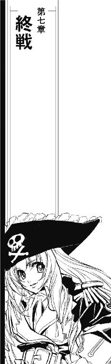
その日、植民星連合軍は、たう星系に集結した宗主星遠征艦隊との最終決戦に突入しようとしていた。
海明星、新奥浜市の旧総督府地下深く作られた植民星連合艦隊司令部にもたらされる遠征艦隊の情報は、既に強行偵察機や哨戒艦を必要としない段階に達していた。
『遠征艦隊、内惑星軌道に入りました』
地元放送局から徴発されたアナウンサーが、情報を読み上げている。
『植民星連合軍は、第四惑星輝青星軌道上で、宗主星遠征艦隊を迎撃します。繰り返します。宗主星遠征艦隊は、内惑星軌道に入りました。植民星連合軍は、第四惑星輝青星軌道上で宗主星遠征艦隊を迎撃します。全艦艇を輝青星軌道上に集結させて下さい』
巨大な柱を中央に持つすり鉢のようなコロセウム構造の連合艦隊司令部には、情報表示のための巨大なスクリーンがいくつも装備されている。星空を背景に鈍く十字のように見える雲は、自然現象ではない。たう星の衛星軌道上にある偵察衛星は、第三惑星海明星よりもひとつ外側にある輝青星軌道に迫りつつある大艦隊を、直接光学観測していた。
「輸送船や補助艦艇を除いた正面戦力八〇〇隻、か......」
怒声と喚声が飛び交う地下司令部で、その一画だけが静かだった。海賊課課長クリスティ・シャーウッド中佐は、たう星軌道上の観測衛星でも確認出来る大艦隊の画像をメインスクリーンに見上げていた。予測されていたとおり、たう星系に到達した宗主星遠征艦隊は、大型戦艦を主力とする戦略艦隊を前面に押し立てて海明星への進撃を開始していた。
「今のうちに背後に回って、補助艦艇を叩くって作戦は結局採用されなかったか」
大艦隊を運用するには、潤沢な補給が必要である。遠征艦隊は最終決戦にあたって正面戦力を独立して運用すると予想されており、その時、輸送艦や整備補給船を主力とする補助艦艇は、最低限の護衛しかない丸裸の状態に置かれるはずだった。
正面戦力を海明星に引き付けてから、植民星連合の全戦力を補助艦艇に投入、これを蹂躙してから、反転して向かってくるはずの正面戦力に対峙するという作戦プランは、馬鹿正直な正面迎撃プランと一緒に、最後まで検討のデスクに載っていた。すべての補給を絶たれれば、遠征軍の正面戦力も長期継戦は不可能になる。
しかし、遠征軍が輸送船団を守るために戻ってこなかったら、その戦力は、なけなしの艦隊を輸送船団攻撃に廻して、丸腰になった海明星に直接向かうことになる。遠征艦隊は、海明星に直接攻撃を行ってから、反転して残りの戦力を相手にすればいい。
「いよいよですね」
すっかりぬるくなったコーヒーをシャーウッド中佐のサイドボードのマグカップに注ぎながら、遠藤ミキ少尉は言った。
「まだ、しばらくは続くわよ」
クリスティ中佐は応えた。
「あっちは一気に総力を投入して決着をつけようとしてるけど、こっちは出来るだけ戦闘を長引かせて遠征艦隊を疲弊させなきゃならない。戦闘が長引けば、補給線をずたずたにされてる遠征艦隊はそれだけ苦しくなるし、こっちも少しは他に散ってた戦力が集められる」
「いくつか、私掠船免状の申請が来てます」
ミキは、このところ自分専用になってしまった後ろのブースに目を走らせた。
「今から海賊免許を出しても、戦闘用の艤装を整える余裕が、これからの海明星にあるかどうかはわかりませんけど」
「気休めにはなるわ。目の前の仕事があれば、負け戦でも気晴らしになる」
「それから、うちの配下の海賊たちがそろそろあんたれすから到着します」
シャーウッドは、ディスプレイに目を落として必要なデータを確認した。あんたれす座宮での宗主星艦隊と海賊船団との戦闘は既に終結している。いかさまのような手口で送り出した援軍は救護船団としては充分に役に立ち、生き残りの海賊は海明星に向かっている。
「いきなり決戦場に出す必要なんかないわ」
シャーウッドは、おざなりに提出された海賊船の雑な飛行計画を確認した。
「先に海明星に戻して、せめて応急修理と補給、それから特別報償の口約束だけでもしてやらないと、戦闘命令なんか出せないわよ」
『輝青星軌道上の連合艦隊は、迎撃準備を完了しました』
地下司令部にアナウンスが流れた。何面もある大型スクリーンが、軌道上観測衛星のものから、はるかに鮮明な画像に切り換えられる。
『輝青星軌道上からの画像、リアルタイムです。植民星連合迎撃艦隊は、間もなく接近する遠征艦隊に対する第一次攻撃を開始します』
シャーウッドのデスクと、ミキのブースで同時に鋭い警報が鳴った。片手にコーヒーポット、片手にカップを持っていたミキは自分のブースに跳んで戻った。
「タッチダウン反応、海賊船です！」
「よりにもよってこんな時に......」
輝青星軌道上の迎撃艦隊によって観測されたタッチダウン反応は、即座に照合されて担当である司令部海賊課に超光速回線経由で廻されてきた。
「それも、輝青星軌道上！」
ミキの声は悲鳴に近かった。
「遠征艦隊の真っ正面です！」
「タイミングだけじゃなくて場所も最悪ね。いったいどこの宇宙船？」
ミキはコントロール・パネルを操作した。先行している哨戒艦が、タッチダウンしてきた海賊船を捕捉していた。
タッチダウンしてきたばかりの太陽帆船は、真っ白な細身の船体からマストを次々に展開していた。
「白鳥号？」
特徴のある船体は間違えようがない。確認しようとしたシャーウッドは、白い太陽帆船がトランスポンダーを発振していないのに気付いた。
「戦闘空域に降りてくるってわかってれば、まあ、当然の判断か......」
「タッチダウン反応、今度はいっぱい!?」
ミキが声を上げた。
「なあに？ 他の海賊船まで駆けつけたの？」
「いえ、こちらのデータにあるタッチダウン反応のパターンじゃありません！」
ミキは、エラー表示かと思うほど立て続けに感知されている大規模なタッチダウン反応を、苦労してディスプレイのバックグラウンドに押し込んだ。
「遠征軍の新兵器でしょうか、こんなにいっぱいのタッチダウン反応なんか有り得ません！」
シャーウッドは、輝青星軌道上の艦隊が送ってくる画像を見上げた。遠く離れていながら遠征艦隊の陣形がはっきりわかる画像が、細かい陽炎を重ねたように揺れている。
「タッチダウン反応が、目に見えるの？」
有り得ないと知りつつ、シャーウッドは呟いた。こんな広域を映し出している光学観測カメラに、空間の歪みが画像として捉えられるはずがない。
しかし、地下司令部にはあっというまに情報の洪水が押し寄せてきた。
「タッチダウン反応多数！」「輝青星軌道周辺にタッチダウン反応多数！」「遠征艦隊側にエネルギー反応の変動なし、関連する動きは認められず！」
口頭と画像データで報告が飛び交う。ミキは、バックグラウンドに押し込めたはずのタッチダウン反応の数を見てみた。
「うそ......タッチダウン反応、千以上!?」
「未確認艦多数！」
分析官の声が聞こえた。突発的に立ち上げられたディスプレイやデータスクリーンに、突如としてタッチダウンしてきた宇宙船が大小さまざまに映し出される。
「エネルギー反応大、大型艦多数！」
「総数、千以上、なおも増大中!!」
「うちの海賊船が、いったいなにを連れてきたの？」
シャーウッドは、最初にタッチダウンしてきた宇宙船を捕捉しているディスプレイに目を戻した。太陽帆船は、既にマストを全展開している。
『こちらは、銀河帝国艦隊です』
アナウンスを流すだけだった地下司令部のスピーカーに耳障りなノイズが乗ったかと思うと、不思議なイントネーションの言葉が入った。
「強制通信です！」
あちこちディスプレイを切り換えながら、ミキがシャーウッドに告げた。
「うちだけじゃない、たぶん半径数億キロくらいの通信機全部に流れてます！」
『こちらは、銀河帝国艦隊です』
タッチダウン反応は途切れることなくまだ続いている。突然現れた大艦隊の数は、遠征艦隊と迎撃艦隊の合計より多くなり、タッチダウン反応から推測される総質量はその数倍に達していた。
『現在、この空域にいる二つの戦力に警告します。速やかに戦闘体制を解き、銀河帝国に降服しなさい。帝国艦隊の戦力はあなた方をはるかに上回ります。速やかに戦闘体制を解き、銀河帝国に降服しなさい』
耳障りなノイズとともに、強制介入通信は終了した。
一瞬前までの喧噪を忘れたように、地下司令部は奇妙な静寂に包まれた。
再び、強制通信の耳障りなノイズがスピーカーから流れた。
『こちら、海賊船オデット号です』
「オデット号？」
シャーウッドは呟いた。ディスプレイ上に海賊船のリストを引っ張り出しながら、ミキが悲鳴を上げた。
「そんな海賊船、いません！」
聞き取りやすい発音の女声は、一言ずつはっきり聞こえるように言った。
『植民星連合は、銀河帝国に降服します』
茉莉香は、マイクを７６１に渡した。リンが、出力の許す限り広範囲に設定した強制介入通信のスイッチを入れ直す。
７６１はマイクに口を開いた。
「銀河帝国は、植民星連合の降服を受け入れます」
「よし、終了！」
７６１の台詞が終わるのを待って、リンは猛然とコントロール・パネルを叩き出した。
「電子記録に残った音声信号は全部ノイズに変化するように細工してある。スピーカーで再生された音をそのまんま録音したなんてケースだけは対応出来ないが、まあそれくらいは勘弁してくれ」
「おめでとうございます、茉莉香船長」
船長席でぐったりした顔をしている茉莉香に、グリューエルが声をかけた。
「独立戦争を終結させた降服宣言、歴史に残りますわね」
「残んなくていいってば」
７６１から返してもらったマイクを受け取って、茉莉香は手を振った。
「だいたい、終戦時に何がどうなったのかなんて、ろくな資料残ってないんだから。自動消滅仕掛けた強制通信なんてことやってたからだったのねえ」
「このあとが大変よ」
ジェニーは、瞬間的に停止してしまった遠征艦隊と迎撃艦隊の動きを、ディスプレイ上に見ている。双方ともほぼ全艦が慣性航行に移っており、加減速を行っている宇宙船は、タッチダウンしてきた帝国の大艦隊だけである。
「宗主星も植民星連合も、これから存在も知らなかった社会機構に組み込まれるんだから」
「なにを言っているのかよくわかりませんが」
はっとして、茉莉香は７６１の顔を見直した。
「すみません、こっちの話です。ええと、守秘義務に従い、今の話も聞かなかったことにして下さい」
「秘密の多い人たちだ」
７６１は頷いた。
「情報部が言えた台詞ではありませんが」
「弁天丸から入電！」
グリューエルが伝えた。
「大規模なタッチダウンのおかげで、穴が出来たそうです！」
「わかった！」
茉莉香は、７６１に向き直った。
「現時点をもって交渉団、臨検隊及び立会人を解放します」
「では、オリオンＤ６文明は銀河帝国が責任を持って引き受けましょう」
７６１ははっきりそれとわかる笑みを浮かべた。茉莉香は、笑顔でそれに応えた。
「いろいろとお手数かけると思いますが、まあ、壊さない程度に優しくお願いします」
「おかげで面白い体験が出来たわ」
アテナは、副長席のジェニーに言った。
「戦争が、こんな終わり方をすることもあるのね」
「戦争はこれで終わりですけど、うちの文明はこれから大変だと思います」
ジェニーは、向かい合う遠征艦隊と迎撃艦隊の間にタッチダウンすることになった帝国艦隊の大群が映し出されている星図に目をやった。表示のすみっこに、海明星が小さく見えている。
「興味深い研究対象になると思います」
「それは、あなたたちの仕事ね」
アテナは言った。
「自分たちの変化について記録研究理解するのは、自分たちの仕事よ」
「そうですね」
ジェニーは頷いた。
「いろいろとありがとうございました」
「まだしばらくは宇宙大学にいると思うわ」
アテナは、副長席から離れた。
「いろいろ片付いたら、遊びにいらっしゃい」
「はい」
ジェニーはアテナをまっすぐ見て答えた。
「きっと、お伺いします」
「待ってるわ」
アテナは、７６１の隣で身体を止めた。
「すぐ近くに、キュリオシティが来ています。送って頂けますか？」
「おやすい御用です」
７６１は、オデットのブリッジに映し出されている帝国艦隊の状況に目を走らせた。タッチダウンしてきた大艦隊は、徐々にその陣形を整えつつある。
「早い方がいい。うちの艦隊が仕事をはじめる前なら、強行突入艇で宇宙大学の調査船に寄るのも簡単でしょう」
オリオン統合戦争は、その最終決戦前に大戦力の帝国艦隊が介入したことによって終戦を迎えた。
ユニバー星系第四惑星、タニア、情報都市アカシア。
旧市街外縁部の古い石造りが並ぶ官舎街のうち、特に教師や教授たちが多く住む一画は閻魔横丁の別名で知られている。
ジェニーは、その中でも特に勤務期間の長い教授たちの住居が並ぶ、地獄の一丁目と呼ばれる区画を見廻した。
庭に置かれた正体不明のオブジェも、広い車道に駐車駐機している、乗り物であろう機械類も、前に来た時と同じように統一感もなにもない。しかし、朽ちつつあるものがあまりないところを見ると道の上のものは大部分が生きているらしい。
ジェニーは、蔦に覆われた古い官舎の前で脚を止めた。車道には、前に来たときと同じように、派手な色の車体の低いスポーツタイプのコミューターが駐められている。
あまり手入れのされていない庭の歩道を歩いて、ジェニーは周囲にいっさい最新機器が見当たらない玄関に立った。分厚いドアの上には、長い牙の肉食獣の首が重い金属環をくわえたノッカーがある。
ジェニーは、ためらいもせずに金属環を持ち上げて、その下の瘤に打ち付けた。鐘のような重い金属音が鳴る。
余韻が消えないうちに、ドアの横に取り付けられている漏斗からくぐもった声が聞こえた。
『はい、どなた？』
「一年生の、ジェニー・ドリトルです」
ジェニーは、用意していた台詞を口にした。
「帰ってきました。オリオン統合戦争に関するレポートを作ったんですけど、個人的に見ていただけますか」
返事が返ってくるまでに、ずいぶん長い時間が流れたような気がした。
『お帰りなさい』
伝声管の向こうから聞こえるアテナの声が、懐かしそうに言った。
『待ってたわ。鍵は開いてるから、どうぞ』
あとがき
やっとこさっとこ執筆を終え、「んじゃ営業時間中にあとがきを入れて下さい」なんて毎度の綱渡り。見逃しやらやり残しやら山のようにあるんじゃないかという、いつもと同じ脱稿直後の不安を抱えつつ、さて前回のあとがきはなに書いたっけ、と前巻を広げて、ふと気付きました。
ちょうど、三〇年目だ。
『妖精作戦』が、笹本祐一の第一作としてソノラマ文庫から出版されたのが忘れもしない、三〇年前の一九八四年八月でした。んじゃ三〇年前のおれはどんなあとがき書いてたんだ。忘れてるじゃん。あー、当時のソノラマ文庫ってあんまりあとがき載っける文化がなかったもんで、代わりに映画みたいなメイキング・オブの年表作ったんだった。そーいや翌八五年の『バック・トゥ・ザ・フューチャー』って三〇年前に行く映画だったっけ。
とはいえゆっくり感慨に浸る暇もないロートル作家であった。はいはい、一時間後にはあとがき送ります。
締切り寸前となると突然データが消えたりなんだりの凶事も毎度のこと。今回もデータで送ってもらったゲラの印刷間違えてみたり、さっきまでＢＧＭ流してたはずのＰＣが突然黙ってしまったり。再起動してドライバー再インストールとかやってみて、結局原因は接続コードが緩んでただけ、なんて簡単に直る原因で良かったけど。
今年二月には劇場版『モーレツ宇宙海賊 ＡＢＹＳＳ ＯＦ ＨＹＰＥＲＳＰＡＣＥ ─亜空の深淵─』も公開になった原作の『ミニスカ宇宙海賊』もやっと一二巻目まで辿り着きました。一二〇年前の独立戦争の渦中に飛び込んだ茉莉香たち宇宙海賊がどこまで行ってなにを出来たのか、それは本編を読んで頂くとして、いや戦争ってのは大変なもんですな。こんなに手間がかかるもの、反対。
一一月には、劇場版のビデオグラムの発売も予定されております。そちらにも原作者としていろいろ寄稿していますので、本編ともどもよろしくお願いします。
おかげさまでここまで来ました。三〇年後も元気に仕事してろよ、おれ。
ではまた、次の作品でお会いしましょう。
二〇一四年夏（あ、ごまかした～）
笹本祐一
笹本祐一（Sasamoto Yuichi）
１９６３年 東京に生まれる。
１９７４年「宇宙戦艦ヤマト」に本放送からはまる。
１９７９年「機動戦士ガンダム」も本放送から見る。
１９８２年「銀河乞食軍団」を読み、飛行機の操縦マニュアルを参考書に使う手を知る。
１９８４年「妖精作戦」を上梓。
１９９２年「星のダンスを見においで」を上梓。
１９９２年 スペースオペラ執筆のためにＨⅡロケット初号機からロケット取材を開始。
２００８年「ミニスカ宇宙海賊」戦闘開始！
２０１２年「モーレツ宇宙海賊」テレビ放映。
２０１４年「モーレツ宇宙海賊」劇場版アニメ公開。
Illustration：
松本規之（Matsumoto Noriyuki）
10年ほどゲーム会社に在籍。その後フリーとなり、ライトノベルのイラスト等を手がける。現在は漫画活動がメイン。代表作に、エンターブレイン「凛－松本規之画集」（イラスト集）、徳間書店「つばめ陽だまり少女紀行」（コミック）、富士見書房「Ａ君（17）の戦争－I THE TYCOON?」（コミック）など。『月刊コミックブレイド』で「南鎌倉高校女子自転車部」を連載中。
■ご意見、ご感想、著者＆イラストレーターへのファンレターなどのあて先
〒１０４－８０１１ 東京都中央区築地５－３－２
朝日新聞出版 朝日ノベルズ編集部

本作品の著作権その他の法的権利は、本作品の著作権者ならびに朝日新聞出版その他第三者に帰属します。
本作品の全部または一部について、権利者に無断で、複製、公衆送信、出版、貸与、翻訳、翻案および改変するなど、本作品の権利を侵害する方法で利用することを禁止します。

ミニスカ宇宙海賊12 モーレツ終戦工作
©2014 Sasamoto Yuichi
Published in Japan by Asahi Shimbun Publications Inc.
●朝日ノベルズ『ミニスカ宇宙海賊12 モーレツ終戦工作』（２０１４年８月30日 第１刷発行）に基づいて制作されました。